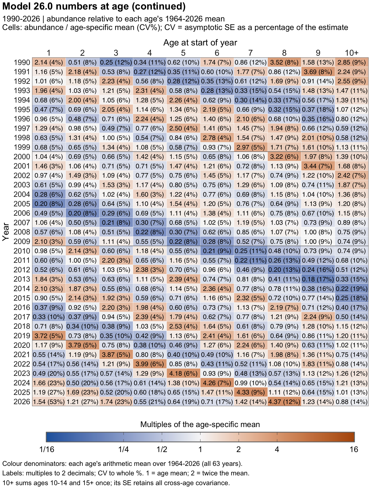

| Model 26.0 advice from revised fits | ||||
| Quantity |
As estimated or specified in 2024 for:
|
Primary baseline Model 26.0 for:
|
||
|---|---|---|---|---|
| 2025 | 2026 | 2027 | 2028 | |
| Natural mortality (annual rate, ages 3+) | 0.300 | 0.300 | 0.300 | 0.300 |
| Tier and sub-tier | 3a | 3a | 3a | 3a |
| Projected total biomass (ages 3+, t) | 8,526,000 | 8,075,000 | 11,270,000 | 12,521,000 |
| Projected female spawning biomass (t) | 3,118,000 | 3,342,000 | 3,326,000 | 3,670,000 |
| B100% (t) | 5,902,000 | 5,902,000 | 6,234,000 | 6,234,000 |
| B40% (t) | 2,361,000 | 2,361,000 | 2,493,000 | 2,493,000 |
| B35% (t) | 2,066,000 | 2,066,000 | 2,182,000 | 2,182,000 |
| F_OFL (annual rate) | 0.513 | 0.513 | 0.688 | 0.688 |
| Maximum F_ABC (annual rate) | 0.394 | 0.394 | 0.534 | 0.534 |
| Recommended F_ABC (annual rate) | 0.394 | 0.394 | 0.534 | 0.534 |
| OFL (t) | 2,957,000 | 2,496,000 | 2,746,000 | 2,870,000 |
| Maximum ABC (t) | 2,417,000 | 2,036,000 | 2,222,000 | 2,319,000 |
| Recommended ABC (t) | 2,417,000 | 2,036,000 | 2,222,000 | 2,319,000 |
| Historical source: December 2024 SAFE, Executive Summary, Tier 3 version, p. 4; B40% is printed in section 7.2, p. 35. | ||||
| 2027–2028 projections assume catch of 1,375,000 t in each year, mean 2023–2025 selectivity and fixed biological inputs. Total biomass covers ages 3+ at the start of the year; spawning biomass is female biomass at spawning. F_OFL and maximum F_ABC are the fully selected F35% and F40% rates. Biomass and catch are rounded to the nearest 1,000 t. | ||||
| Spawning biomass exceeds B40% in both years, placing the stock in Tier 3a. All risk categories are Level 1, supporting the maximum ABC. Recruitment is fixed at the fitted 1978–2023 mean; these projections show point estimates. Adopted catch specifications are reported separately. | ||||
Assessment of walleye pollock in the eastern Bering Sea
NoteSI-assisted development
Tools assisted data processing, code execution, figure preparation and report writing under author direction. The authors retain responsibility for the scientific content, analyses, interpretations and conclusions.
NoteSuggested citation
Ianelli, J., S. Wassermann, A. McCarthy, C. McGilliard, E. Siddon, K. Shotwell, G. Adams, and N. Lauffenburger. 2026. 2026 Assessment of Eastern Bering Sea Walleye Pollock. https://files.npfmc.org/SAFE/2026/EBSpollock.pdf.
1 Executive summary
The last full EBS pollock assessment was completed in 2024 (Ianelli et al. 2024). A catch report was prepared in 2025 (Alaska Fisheries Science Center, National Marine Fisheries Service 2025). Changes in this assessment are described relative to 2024.
This executive summary presents Model 26.0 (Rceattle), the base case for this assessment and its Tier 3 harvest recommendations. Model 23.0 (ADMB), accepted in 2024, provides the comparison with the previous assessment.
1.1 Changes in assessment inputs
- Updated annual catch estimates from 1991 onward, including 1,312,504.58 t for 2026.
- Added 2025–2026 bottom-trawl survey (BTS) indices and age compositions, the 2026 acoustic-trawl survey (ATS) index and provisional age composition, and acoustic vessel-of-opportunity (AVO) indices through 2026. Historical BTS estimates were also revised.
- Added fishery age compositions for 2024–2025, with year-specific conversions to traditional microscopic ages and likelihood sample sizes of 578 and 530, respectively.
- Updated fishery, population and spawning weight-at-age schedules. The 2026 ATS ages use the BTS age–length key; FT-NIRS ages from the ATS samples are expected in 2027.
Sampling and conversion methods are described in Section 4.
1.2 Changes in assessment methods
The changes from Model 23.0 to Model 26.0 are:
- Implemented the age-structured assessment in Rceattle in place of ADMB. The development comparisons are documented in Appendix I (Ianelli et al. 2026).
- Estimated weight at age in a separate random-effects model and used the resulting schedules as fixed inputs to the assessment. Model 23.0 estimates cohort and year effects on weight at age within the assessment. The Model 26.0 uncertainty estimates therefore condition on the estimated weights (Section 5.2).
Natural-mortality and catchability assumptions retain the previous assessment’s treatment.
1.3 Summary of results
Estimated total biomass in 2026 is 12.162 million t (approximate 95% interval 9.534–15.515 million t). Female spawning biomass (SSB) is 3.057 million t (2.489–3.754 million t). The largest fishing mortality rate among ages is 0.3 per year. These estimates and ranges condition on the base model and fixed biological inputs (Section 6.1.1).
Future catches are assumed to equal the specified annual TAC of 1.375 million t in 2027 and the same amount in 2028. The 2028 value is a planning assumption. Projections advance the fitted population using mean 2023–2025 fishery selectivity, fixed biological inputs and recruitment equal to the fitted 1978–2023 mean (Section 7).
The advice table compares the 2025–2026 recommendations from the 2024 assessment with this assessment’s 2027–2028 recommendations. Projected female spawning biomass and ages-3+ biomass use Scenario 2 with the assumed catches above.
The final specifications set the 2026 and 2027 Bering Sea subarea pollock OFL at 2,496,000 t and ABC at 2,036,000 t; specified annual TAC is 1,375,000 t. These are the adopted specifications, separate from the recommendations from this assessment.
A risk table was evaluated, and all categories were determined to be Level 1. This supported recommending the maximum ABC (Section 8).
| Model 26.0 stock-status summary. The 2025–2026 columns report status for 2025 and 2026; historical determinations are from the 2024 assessment. | ||||
| Status |
As determined in 2024 for:
|
As determined this year for:
|
||
|---|---|---|---|---|
| 2023 | 2024 | 2025 | 2026 | |
| Overfishing | No | n/a | No | n/a |
| Overfished | n/a | No | n/a | No |
| Approaching overfished | n/a | No | n/a | No |
| Historical determinations are from the December 2024 EBS pollock SAFE, Executive Summary, p. 4. | ||||
| The 2025–2026 entries are assessment conclusions, separate from final NMFS status determinations and SSC/Council review. Overfishing for the most recent complete year compares the updated 2025 catch of 1,326,215.61 t with the specified 2025 Bering Sea subarea OFL of 2,957,000 t. The 2026 overfished determination uses each model’s estimated 2026 female spawning biomass; approaching status uses its Scenario 7 projections through 2028 (Section 9). Model 26.1.2 is the Early-late fishery split comparison. n/a denotes a year/status combination outside this reporting layout. | ||||
1.4 SSC and Plan Team requests
The September 2026 Plan Team requested the following work:
- Present Model 26.0 for management use and Model 23.0 for continuity; both are compared in this assessment.
- Examine age-1 BTS selectivity and the influence of BTS variability on retrospective patterns. Additional selectivity and data-influence tests are outside the scope of this assessment.
- Extend the simulation self-test and examine retrospective patterns in time-varying selectivity. The completed simulation experiment and its limitations are described in Section 6.3.1.
- Present retrospective results for Models 23.0 and 26.0 side by side. Matched runs were completed and compared; both models showed similar spawning-biomass retrospective patterns (Appendix A).
- Document age-composition weighting and evaluate residual patterns. Selected sample sizes, one-step-ahead residuals and Francis comparisons are presented in the assessment.
- Continue development of the Ecosystem and Socioeconomic Profile; we developed a draft using AI to compile and coordinate information from disparate sources (Appendix B).
Earlier SSC requests address model development, uncertainty, survey treatment and composition weighting. The individual requests and responses are presented in Appendix A.
2 Introduction
2.1 General
Walleye pollock (Gadus chalcogrammus; hereafter referred to as pollock) are broadly distributed throughout the North Pacific with the largest concentrations found in the eastern Bering Sea (EBS). Also known as Alaska pollock, this species continues to play important roles ecologically and economically.
Changes in assessment inputs and methods since 2024
The 2026 assessment updates the accepted December 2024 assessment; the 2025 document was a catch report. Data changes include revised annual catches from 1991 onward, fishery age compositions for 2024-2025, BTS indices and age compositions for 2025-2026, the 2026 ATS index and provisional age composition, and AVO indices through 2026. Historical BTS estimates were also revised. Spatiotemporal estimation of survey abundance continues the approach adopted in 2024; the current biomass-index and abundance-at-age products use sdmTMB and tinyVAST, respectively.
Fishery age compositions incorporate year-specific conversions from FT-NIRS ages to the traditional microscopic-age scale. Fishery, population, and spawning weight-at-age schedules have also been updated. The provisional 2026 ATS age composition applies the BTS age-length key to ATS lengths; FT-NIRS ages from the ATS samples are expected in 2027. Section 4 and Appendices G-H describe these data treatments and their uncertainty.
The main assessment-method change is the transition from the ADMB implementation of Model 23.0 to the Rceattle implementation of Model 26.0. Weight at age is estimated in a separate random-effects model and supplied as fixed schedules, whereas Model 23.0 estimates cohort and year effects on weight at age within the assessment. Model 26.0 uncertainty therefore conditions on the estimated weights. Natural-mortality and catchability assumptions retain the previous treatment. The configuration comparisons, diagnostics, and sensitivities evaluate the effects of the data updates and the implementation change (Sections 5-6 and Appendix I).
2.2 Review of Life History
In the EBS pollock generally spawn during March-May and in relatively localized regions during specific periods (Bailey (2000) ). Generally spawning begins nearshore north of Unimak Island in March and April and later near the Pribilof Islands (Bacheler et al. (2010)). Females spawn in batches with up to 10 batches of eggs per female per year (during the peak spawning period). Eggs and larvae of EBS pollock are planktonic for a period of about 90 days and appear to be sensitive to environmental conditions. These conditions likely affect their dispersal into favorable areas (for subsequent separation from predators) and also affect general food requirements for over-wintering survival (Gann et al. (2015), Heintz et al. (2013), Hunt Jr. et al. (2011), Ciannelli et al. (2004)). Duffy-Anderson et al. (2016) provide a review of the early life history of EBS pollock.
Throughout their range juvenile pollock feed on a variety of planktonic crustaceans, including calanoid copepods and euphausiids. In the EBS shelf region, one-year-old pollock are found throughout the water column, but also commonly occur in the NMFS bottom trawl survey. Ages 2 and 3 year old pollock are rarely caught in summer bottom trawl survey gear and are more common in the midwater zone as detected by mid-water acoustic trawl surveys. Younger pollock are generally found in the more northern parts of the survey area and appear to move to the southeast as they age (Buckley et al. (2009)). Euphausiids, principally Thysanoessa inermis and T. raschii, are among the most important prey items for pollock in the Bering Sea (Livingston (1991); Lang et al. (2000); Brodeur et al. (2002); Ciannelli et al. (2004); Lang et al. (2005)). Pollock diets become more piscivorous with age, and cannibalism has been commonly observed in this region. However, Buckley et al. (2015) showed spatial patterns of pollock foraging varies by size of predators. For example, the northern part of the shelf region between the 100 and 200 m isobaths (closest to the shelf break) tends to be more piscivorous than pollock found in more near-shore shallow areas.
2.3 Stock structure
Stock structure for EBS pollock was evaluated in Ianelli et al. (2015). In that review past work on genetics (e.g., Bailey et al. (1999), Canino et al. (2005)) provided insight on genetic differentiation. The investigation also compared synchrony in year-classes and growth patterns by region. Pollock samples from areas including Zhemchug Canyon, Japan, Prince William Sound, Bogoslof, Shelikof, and the northern Bering Sea were processed and results presented in Ianelli et al. (2021). Genetics research at the AFSC (Ianelli et al. 2023) indicated that genetic groups mostly aligned with current stock-management delineations. the Aleutian Islands and Bogoslof “stocks” showed subtle differentiation from the Gulf of Alaska management group.
3 Fishery and management history
Directed foreign fishing began in 1964. US vessels entered the fishery in 1980, and it became fully domestic by 1988. The domestic observer program formally began in 1990; later monitoring developments include electronic monitoring on participating catcher vessels and biological sampling during offloading (Ianelli et al. 2024). The directed fishery primarily uses pelagic trawl gear, with inshore, catcher/processor and mothership sectors. The historical catch and adopted harvest-limit series is continued through 2026 in Table 1.
Updated reported catches are 1,311,261 t in 2024 (2025 catch report) and 1,326,193 t in 2025 (National Marine Fisheries Service Alaska Region 2026b). The two 2026 rows distinguish an official catch of 1,297,206 t through October 17 (National Marine Fisheries Service Alaska Region 2026a) from the annual catch estimate of 1,312,504.58 t used in this assessment.
For 2026, adopted ABC and OFL are 2,036,000 and 2,496,000 t. The initial Bering Sea subarea TAC of 1,375,000 t became 1,389,500 t after inseason reallocations; the August allocation table specifies 139,400 t for the Community Development Quota (CDQ) directed fishing allowance and 46,000 t incidental catch allowance. CDQ directed catch and the non-Bogoslof incidental account are each included once in the reported Bering Sea subarea total; the latter already includes incidental CDQ catch. Bogoslof and Aleutian Islands accounts remain separate (National Marine Fisheries Service 2026a, 2026c).
Continuing 2026 measures allocate 45% of Bering Sea subarea directed allowances to the A season (January 20–June 10) and 55% to the B season (June 10–November 1). The non-CDQ directed allowance is divided 50%, 40% and 10% among the inshore, catcher/processor and mothership sectors. The Steller sea lion conservation area limit before noon April 1 is 28% of each sector’s annual directed allowance (National Marine Fisheries Service 2026a). These regulatory seasons differ from the week-ending month groups used in several historical fishery displays. An additional 2026 spatial action closed the Winter Herring Savings Area (58–60° N, 172–175° W) to directed pollock trawling, including CDQ, from noon September 30, 2026 to noon March 1, 2027 (National Marine Fisheries Service 2026b).
Management has combined area restrictions, allocations, monitoring and incentives to avoid prohibited species. Selected historical milestones are summarized in Table 2; Council recommendations, voluntary programs and regulatory implementation retain their separate dates. The voluntary rolling-hotspot programs began for chum salmon in 2001 and Chinook salmon in 2002. The Council selected Amendment 84 in 2005, followed by exempted fishing in 2006 and implementing regulations in 2007 (National Marine Fisheries Service 2007, 2023).
Amendment 91’s rule became effective on September 29, 2010, and its Chinook bycatch program operated in the 2011 fishery. It combined a 60,000-fish overall prohibited species catch (PSC) limit with incentive plan agreements (IPAs) and sector shares of a 47,591-fish performance standard. A sector retains the higher allocation if it exceeds its share of the standard in at most two of seven consecutive years. Exceeding the standard in three of those years triggers the lower allocation in all subsequent years. Amendment 110 followed Council final action in April 2015 and a final rule effective July 11, 2016. It strengthened Chinook and chum avoidance requirements and linked the following year’s Chinook limits to the State of Alaska’s index for the Kuskokwim, Unalakleet and Upper Yukon systems. At an index of 250,000 fish or less, the PSC limit and performance standard fall to 45,000 and 33,318 fish, respectively. The index first informed the 2017 fishing year. The pollock fishery uses the 45% / 55% pollock seasonal allocations described above (National Marine Fisheries Service 2010, 2016).
Salmon accounting and genetic stock identification serve different purposes. The Bering Sea pollock program requires census counts of salmon in catches, with observer verification at at-sea processors or during offloading. Participating catcher vessels may use compliance electronic monitoring (EM), while observers at shoreside processors collect biological samples. EM verifies handling and discard compliance. Genetic origin is determined from biological samples. Representative biological samples, rather than every counted fish, are genetically analyzed to estimate stock composition. These are fishery-dependent records, separate from the assessment’s fishery-independent survey indices (National Marine Fisheries Service 2010). Compliance monitoring and shoreside sampling are described by NOAA Fisheries (National Marine Fisheries Service Alaska Regional Office 2025). The genetic analysis of the 2015 Chinook salmon bycatch illustrates this subsampling approach (Guthrie et al. 2017).
3.1 Fishery conditions
The A-season fishery targets pre-spawning pollock and supports roe production. Fishing has historically concentrated north and west of Unimak Island and along the shelf toward the Pribilof Islands, with access affected by ice, weather and fish distribution. The summer–fall B-season fishery follows changes in fish availability across the shelf. Salmon-avoidance measures and vessel choices also influence where fishing occurs. The assessment authors report good fishing conditions in the 2026 A season; later in the B season fishing moved farther north and pollock of desirable sizes were less available.
Prohibited-species bycatch is summarized in Table 54. Chinook catches increased from 8,054 fish in 2024 to 19,825 in 2025, and non-Chinook catches increased from 35,152 to 151,457 fish. Halibut mortality rose from 53 to 66 t. Preliminary 2026 catches through October 24 were 15,153 Chinook, 149,468 non-Chinook, and 56 t of halibut mortality.
Pacific ocean perch (3,995 t) and Pacific cod (3,315 t) were the largest named bycatch categories in the pollock fishery in 2025, followed by flathead sole (1,813 t). Preliminary 2026 estimates through October 24 were 2,412 t of Pacific ocean perch, 6,549 t of Pacific cod, and 3,367 t of flathead sole. See Table 55.
Pollock catch in identified non-pollock fisheries declined from 46,996 t in 2024 to 29,263 t in 2025. Rock sole, yellowfin sole, and Pacific cod fisheries accounted for 10,776 t, 8,710 t, and 6,427 t, respectively, in 2025. The preliminary 2026 total through October 31 was 34,729 t; the different cutoffs and partial-year coverage qualify comparisons with the other bycatch tables. See Table 56.
Jellyfish dominated the selected nontarget-species catch by weight. Estimated jellyfish catch declined from 4,402 t in 2024 to 1,769 t in 2025. Miscellaneous fish contributed 99 t in 2025, with smaller catches in each of the other displayed groups. Preliminary jellyfish catch through October 24, 2026 was 4,418 t. These catch estimates describe fishery encounters and should be interpreted with fishing effort, distribution, and reporting coverage. See Table 57.
The historical source discrepancy extends beyond jellyfish: five other same-named columns also approximately doubled in 2019-2022, while the remaining four columns changed non-uniformly. Current estimates are rebuilt from named species groups rather than scaled from the 2024 SAFE table.
Catch by area and season is summarized in Table 3. The week-ending extract records 1,267,543 tons through October 17, 2026: 604,041 tons in the A-season grouping and 663,501 tons in the B-season grouping. These seasonal groupings follow the reporting weeks described in the caption.
The annual catch-accounting extract summarizes retained and discarded catch in Table 4. The 2026 total is 1,312,505 tons, including 8,997 tons discarded (0.7%). The annual and seasonal extracts have different coverage and update schedules. Only the 1998 records included catch without an area; this catch is allocated between NW and SE in proportion to reported catch within each disposition.
Nominal pollock catch per tow-hour is generally higher in the A season than in the B season, with A-season peaks in 2019 and 2023 (Figure 1). Species-specific patterns differ: A-season Chinook rates peak in 2006–2007, whereas the chum salmon series has its largest B-season rates in 2005 and 2017. Herring and sablefish each have a pronounced peak in 2020, in the A and B seasons respectively. These are nominal rates for available pollock-dominated EBS hauls, calculated from summed catch and valid tow-hours with panel-specific units. Qualifying CV records are absent in 2025–2026 under the selection filter, sablefish has a reporting gap in 2014, and 2026 B season is partial through September 18.
Estimated catch numbers for both sexes decline to a trough in 2009, rise again during the 2010s and reach their largest annual totals in 2021 (Figure 2). B-season numbers generally exceed A-season numbers within each sex, and female annual catch numbers decline from 1,075.8 million fish in 2023 to 916.7 million in 2025, while male catch numbers decline from 1,218.9 million to 952.6 million. Catch numbers are expressed in thousands of fish. The 2024–2025 estimates use FT-NIRS ages and remain provisional.
Cumulative catch through April stays near 40% of annual specified TAC over much of 2000–2017 and near 44% from 2018 onward (Figure 3). In 2026 the cumulative shares are 6.69%, 23.14%, 39.42% and 43.72% at the end of January, February, March and April, respectively. Monthly totals are based on weekly catch reports and the specified annual TAC before quota transfers. These observations cover the first four months of the year; the A season continues through June 10.
A-season roe production exceeds B-season production throughout the 2000–2026 series (Figure 4). A-season production peaks in 2006 and again in 2019, declines through 2021 and rises from 2022 to 2026. The latest A-season value is 19,092.9 t of roe. The 2025 B-season total is 1,795.8 t; the 2026 total of 406.4 t covers June–October and represents a partial-season estimate. The series combines offshore Bering Sea and inshore Bering Sea and Aleutian Islands (BSAI) records in the original January–May and June–December groups.
The broader BSAI fishery’s catch, vessel participation and market context are summarized in the ESP socioeconomic tables. Those statistics retain their BSAI, national-trade and global-catch scopes and their latest available observation years.
3.1.1 Recent spatial catch patterns
The seasonal maps compare 2024–2026 using the available catch-location records (Figure 5; Figure 6). A-season maps cover January 20–June 9. B-season maps use June 10–September 18 in every year, matching the 2026 data cutoff. Vertical bar heights show recorded catch tons. The rotated, elevated view separates neighboring columns. Each season uses a fixed vertical scale across its three years, with a 10,000-t reference column in each panel. The vertical scales differ between seasons; compare catch amounts using the reference columns.
A-season fishing remained concentrated on the southeastern shelf, with more catch extending westward in 2025. The share of available observed catch west of 170°W increased from 15% in 2024 to 39% in 2025, then returned to 15% in 2026. The catch-weighted mean latitude changed from 56.07°N to 56.43°N and 56.19°N, respectively. The 2026 pattern therefore shifted back toward the southeastern grounds relative to 2025.
The B-season distribution extended farther north and west in 2025–2026 than in 2024. The share of recorded catch north of 58°N increased from 54% in 2024 to 75% in 2025 and 79% in 2026. The share west of 170°W rose from 76% to about 92% in both later years. Catch-weighted mean latitude was 57.66°N in 2024, 58.56°N in 2025 and 58.52°N in 2026. Thus, the recent northward shift persisted in 2026, while the catch-weighted mean longitude moved eastward relative to 2025, from 174.65°W to 173.26°W.
These summaries describe the available observed catch, including catcher-processors, motherships and observed catcher vessels. The extract omits electronic-monitoring catcher-vessel records, so changes in fleet coverage can also affect the mapped patterns. The maps show catch concentration; the updated fleet-dispersion index below measures the separation among observed tows.
3.1.2 Fleet dispersion
Fleet dispersion describes how widely separated fishing locations are within a day (Figure 7). Following the 2024 assessment, we calculate the great-circle distance between each unique pair of tows made on the same day, separately for catcher-processors and observed catcher vessels. Distance sums and pair counts are then pooled by year and season. Days with more tow pairs contribute more to the seasonal average. Larger values indicate a more dispersed pattern of observed fishing locations; smaller values indicate greater concentration.
A-season dispersion increased from 47.8 nautical miles in 2024 to 68.8 in 2025, then declined to 36.5 in 2026. This change is consistent with the 2025 westward extension and the more concentrated southeastern pattern in 2026 shown in the catch maps. For B-season records through September 18 in each year, dispersion declined from 78.5 nautical miles in 2024 to 67.8 in 2025 and 56.5 in 2026. Thus, the observed B-season fishing locations became more concentrated even as much of the catch remained farther north than in 2024. A shift in fishing location and a change in spatial spread describe different aspects of fleet behavior.
The figure retains the historical day-of-year boundary at day 161, which approximates the seasonal transition. Dashed lines provide a common September 18 cutoff to support comparisons with the partial 2026 B season. The full series uses consistent duration calculations and vessel-type selections. Catcher-vessel coverage is incomplete because electronic- monitoring records are absent. Changes in the mix of observed vessels, bycatch avoidance and fishing conditions can influence this index, so it should be interpreted together with catch distribution and catch rates.
3.1.3 Seasonal changes in fish size
Following the approach described in Section 3.1.1 of the 2024 assessment, we summarize the mean weight of pollock within each source record and weight that record by its pollock catch. Mean fish weight is the recorded pollock weight divided by the corresponding fish count. Grouping these record means into weight bins shows how the sizes encountered by the fishery change over time (Figure 8). These distributions describe mean fish weights for each observer record.
The dominant A-season mean-weight bin increased from 550 g in 2023 to 600 g in 2024–2025 and 700 g in 2026. For the B season, the dominant bin increased from 450 g in 2023 to 550 g in 2024 and 700 g in 2025, then shifted to 450 g in the available 2026 records. This recent contrast is consistent with the reported difficulty finding larger pollock during the 2026 B season. Changes in these distributions can reflect growth, recruitment, the areas fished and the mixture of vessels represented in the observations.
Weekly displays show how size patterns develop within the A-season and B-season windows (Figure 9; Figure 10). The source extract extends through September 18, 2026, so the B-season results describe the available portion of the season. Catcher-vessel observations exclude electronic-monitoring records and represent only part of the shoreside fleet. Annual panels use a source-week boundary at week 24; the weekly panels cover weeks 2–15 and 25–40. These plotting windows differ from the regulatory season dates. Ridge heights are scaled to reveal distribution shape; catch totals should be compared using the underlying bin totals.
4 Data
Fishery catch data begin in 1964, whereas the BTS began in 1982 and the ATS in 1994 for the purposes of this assessment (see the table below). Available fishery age compositions end in 2025, one year before the requested 2026 catch and survey updates. Survey gaps and provisional age products retain their qualifications below.
| Source | Type | Years |
|---|---|---|
| Fishery | Catch biomass | 1964–2025; 2026 year to date and projected annual input* |
| Fishery | Catch age composition | 1964–2025† |
| Fishery | Historical trawl CPUE | 1965–1976 |
| Bottom-trawl survey | Biomass index and age-specific proportions | 1982–2019, 2021–2026† |
| Acoustic-trawl survey | Biomass index and age-specific proportions | 1994, 1996, 1997, 1999, 2000, 2002, 2004, 2006–2010, 2012, 2014, 2016, 2018, 2020, 2022, 2024, 2026† |
| Acoustic vessels of opportunity (AVO) | Relative backscatter index | 2006–2019, 2021–2026† |
*Annual catch inputs from 1991 onward use the catch estimates. Its 2026 total is 1,312,504.58 t; the within-year coverage cutoff is unspecified. †Available update observations are shown; the reference baseline ends in 2024 (fishery ages 2023); Model 26.0 uses the updated observations and selected provisional schedules, with source review retained, including the revised EBS/NBS BTS estimates. The 2020 acoustic survey used USV transects; age-specific proportions are unavailable. Provisional 2026 ATS ages use the BTS age–length key (ALK) applied to ATS population length-frequency estimates. FT-NIRS ages for the 2026 ATS samples will be available in 2027.
FT-NIRS age estimation and survey developments are documented under age compositions, the FT-NIRS appendix, and the ATS, AVO and BTS methods sections. The assessment retains the fixed natural-mortality schedule described in Other data. Spatial catch and bycatch information helps evaluate changing distributions and guide avoidance. The assessment retains the established stock boundaries.
Model 26.0 uses observations through 2026 where available, an end-year forecast for 2026 catch, and fishery ages through 2025 (Table I1). The register identifies each source and observation year: fishery ages 2024–2025, annual survey products 2025–2026, and the scheduled 2026 ATS observation. Historical revisions, carried weights and forecast schedules have separate record types. It also distinguishes intake into the completed Model 23.0 increments, Model 23.2 bridge and selected Model 26.0 fit. Scientific acceptance remains a separate status.
4.1 Fishery catch and age compositions
Annual catch rose from about 0.175 million t in 1964 to the series maximum of 1.875 million t in 1972 (Figure 11). Catch subsequently fluctuated, fell to 0.811 and 0.810 million t in 2009 and 2010, respectively, and recovered to 1.326 million t in 2025. The 2026 records total 1.268 million t through October 17 and represent a partial year. Records before 1991 provide annual totals; later records distinguish the A-season and northwest and southeast B-season catches.
Fishery catch-at-age estimates for 1964–2025 are summarized in Table 5. Ages 15 and older are pooled as 15+. Where complete annual catch numbers are unavailable, we calculate numbers at age from the assessment proportions, annual fishery weight at age and catch biomass.
The annual assessment catch includes retained and discarded commercial pollock across gears and targets in the Bering Sea, with CDQ counted once and the separately reported Bogoslof and Aleutian Islands catches excluded. The catch update uses the catch estimates for 1991–2026, with pre-1991 model inputs retained. The revised totals are 1,311,260.74 t in 2024, 1,326,215.61 t in 2025 and 1,312,504.58 t in 2026. The 2026 estimate is the annual input selected for this assessment. Explicit Bogoslof (518) and outside-stock area codes are excluded. The 1998 records with blank area codes remain included under their Bering Sea classification. Noncommercial removals remain separately documented in Appendix C.
We estimate fishery age compositions from biological samples collected by at-sea observers and during shore-side offloading. The sampling records include fish measured for length frequencies, paired weight–length measurements, and age estimates (Table 6; Table 7; Table 8). The processing keeps recent unsexed fish separate rather than assigning them to males or females. Within each sex and sampling stratum, we expand length frequencies to the associated catch biomass using mean weight at length. Age–length keys allocate the expanded numbers to ages; we then sum the numbers across strata and sexes and normalize them to give annual proportions (Kimura 1989; Barbeaux et al. 2005; Ianelli et al. 2024). Earlier assessments provide the pre-1991 age compositions. For the 2024–2025 update, the processing strata are January–May across Bering Sea areas, followed by June–December split into northwest (NMFS reporting areas 520 and above) and southeast (areas below 520). The 2024 assessment describes January–June and July–December groups; the current sampling groups use the calendar periods defined above. The new length and age records cover all 12 months. Unsupported age–length cells leave approximately 0.495% and 0.358% of expansion-input biomass unallocated in 2024 and 2025, respectively; these are sampling-support limits, rather than missing months or deductions from assessment catch.
The linked bootstrap represents variation among sampling units and among length and age observations within those units. Its composition precision estimates inform the selected likelihood sample sizes: 443, 578 and 530 for 2023, 2024 and 2025, respectively. They represent effective information for fitting the annual proportions, rather than numbers of fish measured or aged (Section 4.3.1). The model fits annual sex-combined proportions at ages 1–14 and 15+. Fishery age observations end in 2025.
The 2024–2025 age-estimate data are from pelagic trawl fisheries. For 2025, FT-NIRS predictions from model a00-d3 are expressed on an independent traditional microscopic-ageing (TMA) basis using 668 paired estimates (Appendix G). Within each FT-NIRS age, the paired observations define the proportions assigned to each tester age. These probabilities redistribute the catch-expanded numbers among ages while preserving their total. Source age 13 lacks paired tester observations; its conditional probabilities are the midpoint of the age-12 and age-14 rows. The 2025 source and tester ages range from 2 to 15, and the assessment fits ages 1–14 and 15+. The likelihood uses the selected input sample size of 530. Uncertainty in the conversion key and the age-13 interpolation is additional to the sampling uncertainty represented by that input weight.
The 2024 fishery age composition is expressed on the independent TMA basis using 693 paired reader–tester observations. For source age 13, the key pools TMA-minus-FT-NIRS age offsets from the same year’s source ages 9–12 (34 pairs) and adds those offsets to age 13. Empirical key rows retain their observed probabilities. The conversion preserves total numbers; the selected likelihood input remains 578. Key uncertainty is additional to the sampling precision represented by that input weight.
The 2024 fishery weights use the same year-specific conversion and pooled-age rule, with the documented 100% CV for the 15+ weight observation. The 2025 weights use the same tester-age key and age-13 midpoint as the 2025 age composition. Appendix G describes these year-specific methods. The fishery age-age keys are separate from the BTS key.
4.2 Survey data
4.2.1 Bottom-trawl survey
The AFSC bottom-trawl survey provides indices of pollock abundance and population age structure, complementing the acoustic-trawl survey’s sampling of the midwater component. Historical and recent sampling effort is summarized in Table 9. Annual surveys began in 1979, with standardized gear and methods from 1982 (Ianelli et al. 2024). The 2025 and 2026 observations extend the 42 survey years available for the 2024 assessment to 44 observed years during 1982–2026. The survey was absent in 2020; that year remains a gap in the observation series. The biomass estimates and assessment CVs are listed in Table 10. Availability to bottom-trawl gear varies with age and vertical distribution. Ages 2–3 are often relatively scarce in the catches because juveniles tend to occupy the water column (Monnahan et al. 2021; O’Leary et al. 2022).
Bottom temperature appears to influence the distribution of pollock available to the bottom-trawl survey. The AKsf survey-mapping example (Ianelli 2026) places annual CPUE distributions alongside the 0, 2 and 4 °C bottom-temperature contours for 2018, 2019 and 2021–2026 (Figure 12). High CPUE is concentrated along parts of the western and southern shelf, with several dense patches near the 2 °C contour in 2022, 2024 and 2026. The more extensive warm-water conditions in 2018–2019 contrast with the broader areas of cold bottom water in later panels, while the locations and extent of the pollock concentrations also change.
These patterns suggest that temperature helps structure near-bottom habitat and survey availability, with concentrations often near the margins of colder shelf water. Depth, prey, age composition and vertical movements can also contribute to the pattern. The maps show spatial associations between survey distributions and temperature. Other environmental and biological factors may also contribute. They use locally interpolated, density-dependent-corrected CPUE within survey coverage. The example’s correction version and adoption status are unspecified, so its CPUE surface serves as a descriptive illustration alongside the assessment indices.
The standard EBS survey expanded northwest in 1987. Sampling in the separate NBS region has varied among years, while pollock distribution has shifted between regions. Model-based estimates integrate station observations, including zero catches, across the EBS and NBS and account for spatial and temporal variation (O’Leary et al. 2020). The biomass index uses sdmTMB and abundance at age uses tinyVAST, replacing the earlier VAST implementation. The complete selected abundance-at-age series incorporates historical revisions as well as the recent observations (Table 11). The regional coverage, model specifications, annual covariance and remaining production-source qualifications are described in Appendix H. Estimates for unsampled years are model predictions.
The BTS length distributions show pronounced changes in the sizes represented in the survey (Figure 13). Peaks among small fish and their progression toward larger lengths illustrate cohort growth, while the relative contribution of small and large fish varies among years. These distributions complement the age compositions by showing changes in size directly.
The BTS age compositions show changes in the ages represented in the survey and the progression of cohorts through time (Figure 14). Highlighted bars follow the 1992, 2012 and 2018 year classes through successive ages. The 2012 year class progresses from age 1 in 2013 to age 10 in 2022, while the 2018 year class progresses from age 1 in 2019 to age 8 in 2026. The blank 2020 row marks the gap when the survey was absent.
The age compositions combined traditional age readings and FT-NIRS estimates. We converted the 2026 FT-NIRS estimates to traditional ages using 307 screened paired readings (Appendix G). The conversion preserved total survey abundance and pooled ages 15 and older into the 15+ group.
Spatiotemporal estimation of BTS weight at age, adopted in 2022, replaces the earlier conversion of mean length to weight (Indivero et al. 2023). The full BTS-derived weight schedules used for population biomass are presented in Table 12; the compact biological-input summary retains the recent fishery and spawning schedules and fixed biological parameters. We applied the screened 2026 age key consistently to BTS weight-at-age means and their delta-method standard errors, retaining the joint covariance treatment. We used the same key for the provisional ATS abundance and biomass-derived weights, including the weights used to predict the 2026 AVO index. We refitted the standalone random-effects weight-at-age model with the revised BTS means and standard errors under the existing equations, likelihood and source-covariance treatment, preserving fishery observations and the 2025 conversion key. These uncertainty calculations exclude empirical age-key uncertainty. The conversion, weight calculations and assessment use are described in Appendix G.
The missing 2020 survey and subsequent 2021 observation affect interpretation of the time series. Retrospective comparisons describe changes in population estimates as observations accumulate (Section 6.1.5); they do not isolate the influence of these two survey years.
4.2.2 Acoustic-trawl survey
The 2026 ATS ages are provisional: we apply the BTS age–length key (ALK) to ATS population length-frequency estimates. FT-NIRS ages from the 2026 ATS samples will be available in 2027.
Historical and acoustic-trawl sampling effort is summarized in Table 13. The 2026 collections retain their regional scope, while unavailable direct age counts remain NA.
Acoustic-trawl surveys (ATS) are typically conducted every other year and estimate the off-bottom component of the pollock stock, complementing the annual BTS index of near-bottom pollock.
Estimated pollock biomass for the EBS shelf has averaged about 3.202 million t since 1994, when the revised time series begins (Table 14). The revised estimates include the water column down to 0.5 m above the seafloor; the historical midwater index extended to 3 m above the seafloor. Low recruitment during the relatively warm early 2000s was subsequently reflected in lower survey biomass during the cold period of 2006–2012 (Honkalehto and McCarthy 2015). With growth of the strong 2012 year class, biomass exceeded 4 million t in 2014 and 2016, another warm period.
The 2026 regional estimates included the Steller sea lion conservation area (SCA) and the Northern Extension (Table 15).
Historical abundance at age
The historical series showed strong pulses of age-1 fish in 1997, 2007, 2009, 2014 and 2024 (Table 16). The provisional 2026 estimates were largest at ages 2 and 3: 3.73 and 3.96 billion fish, respectively, compared with 2.03 billion age-1 fish.
The ATS age compositions show pulses of young fish and the progression of cohorts through successive surveys (Figure 15). The highlighted 2018 year class appears at age 4 in 2022, age 6 in 2024 and age 8 in 2026. Ages 2 and 3 dominate the provisional 2026 composition. The 2026 estimates use the BTS age–length key applied to ATS population length frequencies; FT-NIRS ages from the 2026 ATS samples are expected in 2027. Blank years represent gaps in the age-composition series.
2026 survey design and results
The 2026 ATS covered the EBS shelf from approximately 60 m depth to the shelf break between 30 May and 4 August. Core-area transects were spaced at 20 nmi; selected transects extended into the Northern Extension at 40 nmi spacing. Survey timing was similar to 2022, with a longer duration in 2026 because of special projects. The area east of 170° W was surveyed from 30 May to 25 June, and the area west of 170° W from 26 June to 4 August.
The preliminary 2026 core-area estimate was 12.7 billion fish and 3.682 million t of biomass (Table 17). Biomass increased by 28% relative to the 2024 estimate of 2.875 million t (11.4 billion fish). The 2026 biomass estimate was 4% below the 2022 estimate of 3.834 million t (9.67 billion fish) and 16% above the 1994–2024 survey mean of 3.176 million t. These are survey estimates; assessment intake and adoption remain separate decisions.
Provisional 2026 ATS age compositions over supported lengths were estimated by applying the FT-NIRS-based BTS age–length key to ATS abundance-at-length (Appendix G). Midwater pollock were concentrated between the 100 m contour and the shelf break, particularly northwest of Unimak Pass and between Zhemchug and Pervenets canyons. Length distributions suggested that presumed age-1 fish (<20 cm fork length) formed dense schools on the northwestern shelf, with smaller concentrations east of the Pribilof Islands and near Unimak Pass. Presumed age-3+ fish accounted for most biomass, with 74% of their biomass west of 170° W.
Provisional abundance at age from the 2026 BTS keys
We estimated provisional ages by matching ATS lengths to the 2026 BTS FT-NIRS age–length key, then converting those ages to traditional ages using paired readings. Ages 2 and 3 dominated the resulting distribution (Table 18; Figure 16). Fish beyond the key’s length range represented less than 0.001% of core-area abundance. The technical appendix describes the keys, calibration and allocation assumptions.
These ATS age estimates are provisional and will be updated with ATS age-composition data in 2027. Assessment comparison and final model selection remain separate from this derivation.
Provisional biomass and mean weight at age
We applied the same age keys to biomass and divided biomass by abundance to estimate provisional mean weights at age. The biomass allocation and mean weights are presented in Table 19, Table 20 and Figure 17. These estimates share the provisional status of the age compositions.
Survey uncertainty and assessment treatment
We estimated ATS biomass sampling error with the established one-dimensional geostatistical method, which accounted for spatial patterns along survey transects (Petitgas 1993; Walline 2007; Williamson and Traynor 1996). The 2026 sampling error was 3.4% of estimated biomass, compared with a historical average of 4.4%. Complete core-area coverage at 20 nmi transect spacing likely contributed to the lower error.
For assessment use, we increased the survey errors to allow for additional uncertainty, including target strength and trawl selectivity. We scaled the assessment coefficients of variation to average 20% over 1994–2026 and assigned a value of 45% to 2000 (Table 14). We retained the established geostatistical method because the approach described by Urmy et al. (2025) was unavailable for production use in 2026.
The assessment used 20 biomass observations through 2026. Table 21 describes the separate treatment of survey age compositions.
Spatial and historical patterns
The Northern Extension contained an additional 0.078 million t beyond the 3.682 million t core-area estimate (Table 15).
The ATS index used in the assessment covered the water column down to 0.5 m above the seafloor, while the historical heatmap showed biomass from near the surface to 3 m above the bottom (Figure 18). Biomass was low during 2008–2012, especially in 2008–2009, and increased in 2014–2016. The maps also showed shifts in the strength and location of concentrations along the western and southern shelf.
Biomass time series and observation errors
The series contained 20 survey estimates between 1994 and 2026. We plotted approximate 95% sampling intervals around each biomass estimate using the survey standard errors (Figure 19; Table 14). Gaps in the annual series marked years without a survey estimate. These intervals described survey sampling variability; the assessment used larger errors to allow for additional uncertainty.
Biomass varied strongly along the survey tracks. Concentrations were highest on parts of the western and southern shelf and generally lower in the far north (Figure 20). The map included the Northern Extension and showed GMT contours of mean biomass per sampling interval (tons per EDSU). The map uses approximately 10-nautical-mile cell means, with the smoothed surface displayed within 30 km of sampled cell centers.
The western region contained the greatest biomass and abundance, followed by the eastern region and the SCA (Table 15).
4.2.3 Acoustic vessel-of-opportunity index
The acoustic vessel-of-opportunity (AVO) index provides a relative-abundance observation for age-1 and older midwater pollock within the U.S. EEZ (Honkalehto et al. 2011; Lauffenburger et al. 2025). The 2026 observations were collected at 38 kHz from 29 May to 5 August aboard the summer bottom-trawl charter vessels. The index covers the water column from 3 m above the seabed to 16 m below the surface.
Annual index
Relative AVO backscatter is lowest at 0.299 in 2009 and highest at 1.55 in 2015 (Table 22; Figure 21). It is 0.863 in 2024, 1.07 in 2025 and 1.12 in 2026, with sampling CVs of 2.72%, 5.26% and 4.55%, respectively. The 2025 and 2026 sampling confidence intervals overlap. The display series covers 2009–2026, excluding 2020, when no bottom-trawl survey took place. Each annual area-integrated estimate is divided by the mean of the 17 estimates to give a mean-one series. The table also retains total pollock backscatter, in millions of square metres, with sampling errors and scaled confidence intervals. This is an acoustic backscattering cross section, rather than geographic area (Lauffenburger et al. 2025).
For the nine paired survey years in the 2009–2026 display period, AVO total pollock backscatter and revised ATS biomass have a squared Pearson correlation of 0.89. This association is descriptive: AVO covers 3 m above the seabed to 16 m below the surface, while the revised ATS index extends from 0.5 m above the seabed to 16 m below the surface. The vertical domains differ. The 2026 AVO report gives 0.90 using an ATS 2026 estimate of 3.62 million t; the comparison here uses the revised ATS estimate of 3.682 million t (AFSC-RACE MACE 2026).
Spatial distribution and sampling coverage
Strong backscatter occurs along western EBS tracks in the recent maps, with weaker returns interspersed along central and southeastern tracks (Figure 22). The annual panels use a common map extent and color scale while showing differences in track coverage.
The longer series also contains alternating strong and weak returns along the sampled shelf (Figure 22). The year 2020 is omitted because AVO observations are unavailable. Survey coverage and processing vary among years. Inferences about population redistribution require comparable sampling and integration across years.
The number of observed survey intervals ranges from 5,557 in 2009 to 12,229 in 2024 (Table 23). Recorded-zero shares fall from 56.3% in 2009 to 7.8% in 2015, vary subsequently, and are 14.9%, 5.0% and 14.2% in 2024–2026, respectively.
The maps summarize observed pollock backscatter in approximately 20-nautical-mile cells, including recorded zeros. GMT gridding and contours show the mean backscatter in m² nmi⁻² on a common color scale. Surfaces extend up to 45 km from sampled cell centers; more distant areas remain masked. The annual AVO index integrates backscatter over the survey area and is reported in million m². Survey coverage and processing vary among years, so comparisons of spatial patterns depend on comparable sampling.
Assessment use and observation uncertainty
The AVO assessment index is 2.01 million m² in 2024, 2.50 million m² in 2025 and 2.60 million m² in 2026 (Table 24). Its 20 observations cover 2006–2026, excluding 2020. The assessment uses the newly processed 2011 and 2013 estimates and their sampling errors (AFSC-RACE MACE 2026). The 2006–2008 estimates retain the legacy rescaling described in the 2024 assessment (Ianelli et al. 2024). Mean-one display normalization remains separate from the assessment inputs in million square metres.
Survey sampling errors describe one-dimensional geostatistical variability. The assessment applies additional observation-error inflation to an arithmetic mean CV of 23% across its 20 observations. The two newly processed years use the existing modern-year error inflation rule, followed by common recalibration of all 20 CVs to that mean. Assessment errors differ from sampling errors and from the ATS mean assessment CV of 20%.
For the Normal index likelihood, arithmetic observation SEs equal the retained assessment index multiplied by its selected CV. For the display series, let denote the original index, its 17-year mean and . The same constant rescales its index, SEs and confidence limits, leaving the CV unchanged:
The source 95% interval is represented by the half-width , checked for every observed year. The displayed intervals describe survey sampling uncertainty with normalization treated as a change of units; assessment error inflation is a separate model input.
4.3 Other data
Model 26.0 fitted the 12 historical CPUE observations from 1965–1976 using fishery selectivity and fishery weights at age. We retained the observations and errors from the reference fit through 2024.
Fixed biological assumptions
We retained the 2024 biological assumptions (Ianelli et al. 2024). Natural mortality was 0.9 yr⁻¹ at age 1, 0.45 yr⁻¹ at age 2 and 0.3 yr⁻¹ at ages 3–15+. Maturity at ages 1–15+ was 0, .008, .289, .641, .842, .901, .947, .963, .970, 1, 1, 1, 1, 1, 1. The model calculated April spawning biomass one quarter-year after the start of the year and applied a female fraction of 0.5 once to sex-combined abundance. We used a 15-by-15 identity matrix for ageing error, matching the archived ADMB configuration. This likelihood assumption treated ages as exact after data preparation, which used FT-NIRS age conversion and age–length keys.
All weight schedules covered ages 1–15+ for the combined sexes in kg per fish. The model used fishery weights to calculate catch biomass, BTS weights to calculate population biomass and A-season weights to calculate spawning biomass.
Fishery weights
We retained the fixed 1964–1990 schedule and used annual WtAgeRe observation means at ages 3–15+ for 1991–2025. Saved model predictions filled the missing 2025 values at ages 13–14. For 2026, we used standalone random-effects model predictions at ages 3–15+ and carried forward the 2024 weights at ages 1–2. These updates changed 442 of 915 cells over 1964–2024, all at ages 3–15+ in 1991–2024. We recorded which weights came from observations, filled missing values or forecasts. The weight-model fit used the underlying BTS survey observations and treated the age-conversion key as fixed when calculating errors. We assigned a 100% CV to the 2024 fishery weight at age 15+ to reflect its uncertainty.
Population and spawning weights
Population weights use BTS observations through 2026. Three historical values retain their previous treatment; details are in the technical supplement.
For spawning biomass, we replaced the older weights at ages 3–15+ with A-season fitted values for 2024–2025 and projections for 2026. Within the common-year comparison, this update changed the 13 values at ages 3–15+ in 2024. We retained baseline weights at ages 1–2; age-2 maturity was .008.
ATS and AVO weights
We retained each historical schedule through 2024 and carried its weights forward to 2025. After BTS-ALK and conditional TMA preparation, we calculated provisional 2026 ATS weights by dividing biomass by the corresponding abundance. For age 15+, we pooled biomass and abundance before division. Appendix G documented the supported lengths and unallocated tail. We used the 2026 ATS vector as a proxy for AVO weights, although the historical schedules differed.
Section 5.2 described the rationale for changing weight estimation. Weight-schedule uncertainty remained separate from the assessment’s conditional parameter uncertainty. Native forecasts repeated the 2026 weight vectors. The proposed Tier 3 handoff used its documented fishery forecast and carried-forward weights. The projection inputs and catch recommendations are presented in the projection and harvest-advice sections.
4.3.1 Age-composition input sample sizes
The full-data Model 23.0 fit uses fishery composition N=443, 578 and 530 for 2023, 2024 and 2025, respectively (Table 21). These are the rounded continuity-scaled harmonic estimates from the corrected sampler bootstrap, applied in the completed full-data Model 23.0 fit at the author’s direction. The bootstrap preserves linked sampling units within fishery strata and uses 10,000 replicates per year. ATS 2026 uses N=94, and BTS retains the selected 2026 N, shown as 131. Fishery N is fixed at 10 in each year from 1964–1977. The three composition-likelihood multipliers are 1.
Model 26.0 fits age compositions with a multinomial model. The baseline retains likelihood sample sizes from the bridge workbook. These likelihood sample sizes differ from counts of fish sampled and from diagnostic effective sample sizes. For every fishery or survey year, the final assessment must provide the raw sampling information, starting sample size, adjustment method, and final sample size used in the likelihood. The 2020 biomass estimate remains a separate fitted survey observation.
One-step-ahead (OSA) residuals compare an observation with its conditional prediction after preceding age categories have been considered. The OSA and Francis comparisons document the selected weights and observed-data residual patterns in Section 6.1.6.
4.3.2 Annual fishery weight at age
Mean weight at age connects the assessment’s estimates of fish numbers to catch biomass and harvest projections. Seasonal and spatial differences in fish condition and fishery distribution affect these means. Fishery sampling is therefore organized by season and area, with stratum estimates combined using the corresponding catch information. Completed-year observations provide the basis for estimating weights for the observation year and forecasting the weights needed for future catches.
For recent fishery samples, Fourier-transform near-infrared spectroscopy (FT-NIR) of otoliths provides predicted ages. Year-specific paired FT-NIR and traditional morphological ageing (TMA) observations align these predictions with the TMA age basis. Estimated abundance and biomass in each FT-NIR age bin are redistributed using the same conditional tester-age key. Mean weight at a target age is then converted biomass divided by converted abundance. For the 15+ group, biomass and abundance are pooled before taking their ratio. The conversion retains each source bin’s mean weight when allocating it among tester ages. Its reported uncertainty conditions on the selected key; the supported ages and approved tail-allocation rules are documented in Appendix G.
The weight-model approach described in Section 14.5 of the 2024 assessment (Ianelli et al. 2024) links growth within cohorts to annual changes in condition. A smooth mean age pattern defines the typical weight increments. A cohort’s weight in the previous year provides the starting point for the next age, while annual random effects allow variation in starting weight and growth. Observed mean weights and their variances inform this model, separating sampling precision from variability among years. The fitted model supplies predictions for missing observations and forecasts for future years. Model 26.0 uses the resulting weight schedules as fixed biological inputs.
The annual fishery weights in Table 25 are those used in the completed full-data Model 23.0 fit. All 453 available observation means at ages 3–15+ through 2025 agree with the verified annual WtAgeRe source. Missing 2025 ages 13 and 14 use fitted predictions; 2026 ages 3–15+ use saved current-year predictions. Ages 1–2 in 2025–2026 retain the 2024 inputs. The 1964–1990 schedule remains fixed, and the terminal age is 15+.
The 2027 and 2028 rows contain the completed fit’s annual fishery-weight forecasts. Age-3 weight is 0.370 kg in both years, and 15+ weight is 1.50 and 1.48 kg, respectively. The projection uses annual fishery weights for catch and A-season weights for spawning biomass.
The technical supplement documents data sources and preparation, model configurations and run identities, numerical checks, and instructions for reproducing the report.
5 Analytic approach
5.1 Main and comparison models
Model 26.0 (Rceattle) is the adopted model for Tier 3 calculations and specifications. Models 23.0 and 23.2 provide comparisons with the previous assessment and the transition in model structure. Other sensitivities separate the early Foreign fishery (1964–1990) from the later domestic fishery (1991–2026) and vary the penalty on declining selectivity.
Model 26.1.2 is the Early-late fishery split sensitivity. The fits and retrospective comparisons hold the process standard deviations fixed at the values estimated by its marginal model. Model 26.0 uncertainty and retrospective diagnostics are described below.
5.1.1 Model 23.0 and impact of new data
As in past years, we incrementally introduced new data relative to the previous assessment while retaining the Model 23.0 formulation. We began with total catch through 2026, incorporating the revised catch estimates for 1991–2026 (2026: 1,312,504.58 t) and extending the model endpoint and parameter and projection horizons to accommodate the added years. At this first step, fishery age compositions and survey observations retained their historical coverage. We then updated weight at age and A-season spawning weights, followed by fishery catch-at-age data and their information weights.
The survey updates followed in sequence: the bottom-trawl survey (BTS), the acoustic-trawl survey (ATS), and the acoustic vessels of opportunity (AVO) index. BTS retained the 2020 survey gap and annual information weights, including the real-valued 2026 input. ATS incorporated the selected age-1 rule and provisional 2026 age information, and AVO incorporated its annual observations and assessment-error recalibration. Historical revisions and uncertainty recalibration were included with each survey’s update (Section 4.2.2; Section 4.2.3).
Each step includes all preceding updates, so its estimated effect depends on the order in which the data were added. The resulting 2026 estimates are summarized in Table 26, and the cumulative annual point estimates are shown in Figure 23. These comparisons use matched definitions of population-weight biomass, female spawning biomass, age-1 recruitment and maximum realized fishing mortality across ages. Model equations are given in the model-equations appendix.
The saved 2027 spawning-biomass and young-abundance projections from the cumulative input-update analyses are compared in Figure 24. These diagnostic projections retain the earlier 2026 catch estimate of 1,310,000 t; the 2026 estimates above use the revised catch inputs. The display starts with Catch + 2026 endpoint, followed by + Fishery age data and the subsequent survey updates. The intervening weight-at-age and A-season spawning-weight updates remain incorporated in the fishery-age and later fits. Abundance at ages 1–3 is measured at the start of 2027, before removals; spawning biomass includes mortality to spawning time. Projection settings are detailed in the technical supplement. Management projections retain their separate catch, selectivity, weight and recruitment assumptions (Section 7). The selected fishery information weights remain 443, 578 and 530 for 2023–2025. The two recent fishery compositions use their respective TMA conversions (Section 4).
The input sequence and configuration comparison answer different questions. The former retains the Model 23.0 formulation while adding observations and updating schedules. The latter compares formulations on matched observations and biology (Table 27). The historical 2024 advice is retained for reference.
Approximate distributions compare the change in spawning biomass from 2026 to 2027 (Figure 25) and the historical change in total abundance at ages 1–4 from 2025 to 2026 (Figure 26). They show the same selected cumulative sequence, followed by Models 23.2 and 26.0. Their input and projection settings are documented in the technical supplement. Each distribution retains its matching fitted-parameter covariance between years and, for abundance, among ages. The normal approximations are conditional on the model and biological and projection assumptions. They describe local estimation uncertainty and are separate from posterior inference.
Among the additions in the saved 2027 projection comparison, ATS produced the largest increase in female spawning biomass: from 2.685 to 2.975 million t, an increase of about 290,000 t (10.8%) relative to the preceding BTS step. AVO increased projected spawning biomass a further 61,000 t (2.0%), to 3.036 million t. The effects on estimated 2026 spawning biomass differed: fishery age data produced the largest increase, about 213,000 t (8.4%); ATS reduced it by about 73,000 t (2.6%), and AVO increased it by about 47,000 t (1.7%). These are successive changes within the specified sequence, with each survey contrast including its historical revisions and error calibration.
5.1.2 Model 23.2 fitted to the 2026 assessment data
Model 23.2 is a structural bridge between the ADMB continuity model and the Rceattle configuration. Its annual spawning-biomass and recruitment trajectories retain their documented scope. The established zero-variance management quantities are excluded from management comparisons. Current configuration effects use verified saved population outputs and their stated units. The comparison of Models 23.0 and 23.2 includes matching local asymptotic uncertainty ranges (Figure 27). Biomass uses common population weights, and fishing mortality is the maximum realized rate across ages. Positive annual quantities use the stated first-order log-scale intervals.
5.1.3 Model 26.0 fitted to the 2026 assessment data
Model 26.0 uses one fishery and fixed weight-at-age schedules. The updated base model fit retains its native working-likelihood, parameter bounds, selectivity forms, priors and fixed biological assumptions. We check outputs against the written inputs and saved native quantities. Population-weight biomass, female spawning biomass, age-1 recruitment and maximum fishing mortality retain distinct definitions. Their annual estimates and matching local asymptotic uncertainty are compared with Model 23.2 in Figure 28. These ranges use each model’s own covariance; each interval describes uncertainty around its fitted estimate.
5.1.4 Model 26.1: Foreign and Modern domestic fisheries
The split-fishery alternatives distinguish Foreign fishing in 1964–1990 from Modern domestic fishing in 1991–2026. Model 26.1.0 supplies the fitted split-fishery comparison; Model 26.1.1 reduces the declining-selectivity penalty, and the zero-penalty case removes it. These models retain their recorded fixed annual process-SD settings. Model 26.1.2 extends that formulation by estimating the Modern annual selectivity-process SD while integrating over annual selectivity effects. The Foreign process SD remains fixed. Local uncertainty uses the verified marginal information for this alternative; its observation diagnostics condition on the fitted annual effects.
5.2 Weight-at-age treatment in the model transition
Model 23.0 estimates weight at age using cohort and year effects and their input sigmas. The Model 26.0 configuration instead uses fishery, population and spawning-weight schedules. The fishery and BTS weights retain their year-specific age conversions and observed-data masks. The 2024 fishery weights use the same annual tester-age key and pooled-age rule as the 2024 composition. The 2025 fishery uses its separate key and age-13 midpoint. Future schedules keep their forecast-year identity.
The comparison distinguishes differences in schedule means from the treatment of weight uncertainty. Weight-estimation uncertainty is outside the base Model 26.0 fit and the recruitment-only projection simulations. Population weights define total biomass; female spawning weights, maturity, female fraction and spawning timing define spawning biomass.
5.3 Estimation and numerical checks
Fitted-model results require successful native execution, the recorded gradient criterion, a positive-definite Hessian, finite parameter standard errors and independently verified input identities. These checks establish numerical usability. Scientific interpretation, model selection and final advice remain separate decisions.
We convert recent fishery age compositions before fitting; the observation ageing-error operator remains the documented identity. The fits retain the AFSC composition working score and its selected information weights. Local asymptotic standard errors use the fitted-model native covariance.
6 Results
6.1 Model 26.0 assessment
Model 26.0 provides the main estimates of stock size and the basis for the Tier 3 catch limits presented here. Results from the other model configurations, including Model 26.1.2, show how alternative assumptions affect the assessment. Additional analyses describe uncertainty in Model 26.0 estimates and how those estimates change when recent years of data are removed. Comparisons with past assessments use the data and catch advice reported in each assessment year.
6.1.1 Population estimates and uncertainty
The Model 26.0 base model estimates 2026 total biomass at 12.162 million t, female spawning biomass at 3.057 million t, age-1 recruitment at 36.3 billion fish, and maximum fishing mortality across ages at 0.299 per year (Table 28).
The local asymptotic 95% ranges in the tables use the revised fit’s native covariance. The uncertainty figure is shown in Figure 29. They describe estimation uncertainty under the base model. Weight, maturity, female fraction and natural mortality remain fixed inputs. Their uncertainty and alternative model assumptions remain separate questions. Annual estimates and ranges appear in Table 29.
Regularized-posterior intervals use all 5,000 existing draws, using the final reported summaries (Table 30). The 2026 female spawning-biomass median is 2.946 million t, with a central 95% credible interval of 2.450–3.584 million t. Total-biomass median is 11.462 million t, with interval 9.215–14.719 million t. Age-1 recruitment median is 31.1518 billion fish, with interval 12.2880–91.0616 billion fish. These are the final reported MCMC summaries; production point estimates and asymptotic intervals retain their separate roles.
Numbers-at-age track cohorts through the population (Figure 30). This shows periods of how recruitment and changes in fishing mortality by age affect abundance relative to their mean abundance estimates (and uncertainty) propagates through time. Actual point estimates are reported in Table 31, while the 2026 abundance-at-age estimates (and asymptotic uncertainties) are shown in Table 32.
Comparison with the 2024 assessment
The 2018 year class remains a large recruitment point estimate (Figure 31). Its age-1 abundance in 2019 is 87.8 billion fish in the Model 26.0 base model, compared with 81.1 billion in the accepted 2024 assessment, a revision of 8.3%. The revision reflects both updated observations and changes in model structure.
The estimate for the same 2024 female spawning biomass changes from 3.389 million t in the saved 2024 assessment to 3.526 million t in Model 26.0, a revision of 4.0%. Within the trajectory, spawning biomass changes from that 2024 estimate to 3.057 million t in 2026 (-13.3%). Total biomass changes from 10.767 million t to 12.162 million t over the same years (13.0%). These within-trajectory changes differ from shared-year assessment revisions.
The recruitment comparison uses calendar age-1 year and billion-fish units (Figure 31). Model 26.1.2 results are included to examine how recruitment estimates for the early period change relative to the 2024 assessment. Historical values are point estimates. Current error bars use each model’s local asymptotic covariance: the base-model covariance for Model 26.0 and the marginal information for Model 26.1.2. Recent years without a historical estimate are identified. These intervals describe uncertainty around the fitted estimates.
Recruitment per unit of spawning biomass
The log recruits-per-spawner diagnostic from the 2024 assessment is updated using the Model 26.0 estimates (Figure 32). For each birth year, age-1 recruitment in the following year is divided by female spawning biomass in the birth year. Taking the natural logarithm puts proportional changes on a comparable scale: higher values indicate more recruits per unit of spawning biomass.
The series shows substantial variation among year classes. The 1978, 2008 and 2018 year classes have particularly high recruits-per-spawner values. Following the strong 2018 year class, the ratio declined through the 2022 year class; estimates for 2023–2025 are higher but remain less certain. The spawning-biomass panel generally shows lower ratios at higher biomass, with considerable variation among years at similar biomass. This pattern can reflect density dependence, environmental conditions and estimation uncertainty. Spawning biomass appears in both the horizontal axis and the ratio, which can contribute to the apparent relationship. Model 26.0 uses mean recruitment rather than an estimated Ricker curve. The figure provides a descriptive check on productivity using point estimates of the recruitment-to-biomass ratio.
Biological schedules and selectivity retain their age, sex and year definitions (Figure 33; Table 33; Table 34). Fishing mortality is also shown by age (Figure 34). Whole-year spawning exploitation compares paired spawning-biomass calculations from the base model production fit (Figure 35). For the interval from spawning in 2026 to spawning in 2027, its production-point estimate is 13.6793%: 3.3260 million t with fishing versus 3.8531 million t without fishing. The branches share prior fishing history and their spawning-date starting population, with 1.375 million t annual catch assumed in 2027. The separate MCMC posterior median for this exploitation fraction is 14.5333%, with a central 95% credible interval of 11.2075–18.3700%. These paired-state calculations carry the revised fishery-weight schedule into 2027 and retain the fixed 1.375 million t catch assumption. The production-fit point remains separate from that posterior interval.
6.1.2 Estimated model parameters
The parameter-family summary identifies fitted parameter groups and their asymptotic uncertainty (Table 35). Complete estimates and the largest parameter correlations are retained in the detailed estimates appendix. The summary likelihood contributions are in Table 36, with the full component breakdown in Table 37. Their values follow the native working-likelihood and penalty definitions.
6.1.3 Fits to the observations
The fitted indices follow the main rises and falls in the survey series, including the low ATS biomass in 2006–2009 and its subsequent increase (Figure 36). Annual departures remain. The BTS residuals include negative departures in 2006 and 2009 and positive departures in 2014–2015, each outside the plotted 95% reference range. The AVO observation in 2015 is also higher than fitted, whereas all ATS biomass residuals fall within that range (Figure 37; Table 38). Thus, the broad survey trends are represented more closely than some individual annual observations. BTS residuals account for covariance among survey years. The retained 2020 ATS age-1 placeholder is excluded from observed-index summaries; the 2020 USV biomass estimate remains an observation.
The fishery selectivity curves show substantial changes in the ages most vulnerable to fishing, with dome-shaped patterns in many years and flatter patterns in others (Figure 38). BTS selectivity generally increases with age and approaches a plateau, while the ATS curve, shared with AVO, is relatively flat at older ages (Figure 39; Figure 40). These curves describe relative age patterns rather than absolute abundance. They include model estimates for unsampled years, including 2026 for the fishery. Recruitment varies strongly among years: the 2018 year class, entering at age 1 in 2019, has the largest positive departure from the fitted recruitment level. The latest age-1 estimates have wider uncertainty ranges (Figure 41).
The mean-age comparisons show that the model follows most of the observed changes in survey age composition and closely tracks fishery mean age in the domestic period. The clearest sustained fishery discrepancy occurs in the early years, when predicted mean ages are higher than observed (Figure 42). The observed bars show plus or minus two standard errors of mean age; they describe sampling uncertainty, rather than uncertainty in the fitted population. Fishery age observations end in 2025. The annual composition panels show how these mean ages arise from the proportions at each age and allow individual cohorts to be followed as they age (Figure 43; Figure 44; Figure 45; Figure 46).
Aggregate observed and fitted age proportions agree closely, especially for the fishery, but the residual panels retain patterns by age and year (Figure 47; Stewart and Monnahan (2025); Monnahan et al. (2026)). For example, BTS residuals include extended runs of the same sign at several ages, and the early fishery residuals also show structured departures. Averaging across years can obscure these differences. The OSA residual standard deviations are below one for all three sources (about 0.76 for the fishery, 0.86 for BTS and 0.64 for ATS), and the QQ plots are generally narrower than the standard-normal reference, although some BTS tail residuals are large. Close aggregate fits therefore need to be considered alongside the annual patterns. The afscOSA v0.0.1 displays retain the native Model 26.0 OSAs and selected likelihood sample sizes. They describe conditional observation fit under the working-score approximation; parameter uncertainty is outside their scope.
6.1.4 Profile likelihood diagnostics
A profile examines how strongly the observations and model assumptions constrain ATS survey catchability in Model 26.0. Catchability scales the survey index relative to the population available to the survey. We fixed this parameter at 17 values from 0.45 to 0.65, including the freely estimated value of 0.51694, and re-estimated all other active parameters. The grid uses eight equal intervals on each side of the estimated value: approximately 0.00837 below it and 0.01663 above it. Data, bounds, likelihood terms, and penalties match the Model 26.0 fit, including the updated 2011 and 2013 AVO observations (Figure 48).
The best fit remains at catchability 0.51694. Lower or higher values increase the negative log likelihood (NLL), indicating a poorer overall fit after the other parameters have adjusted. The conventional change of 1.92 NLL units is crossed between 0.45000 and 0.45837 on the lower side and between 0.58347 and 0.60010 on the upper side. Linear interpolation between these points gives approximate crossings of 0.4576 and 0.5838. These are diagnostic bounds from the sampled profile; the objective includes model penalties, and the crossings have been interpolated rather than directly fitted.
The component breakdown shows how the model balances the different data sources. At catchability 0.45, the total NLL increases by 2.48 units. Index likelihoods contribute 2.36 units, while the combined composition fit improves by 0.43 units. The ATS index and compositions fit less well, while BTS compositions fit better. At catchability 0.65, the total increase is 6.80 units. Compositions contribute 4.50 units, largely from the BTS, and selectivity penalties contribute 1.93 units. The combined index term changes by only 0.14 units because improved BTS index fit partly offsets poorer ATS index fit. Thus, the preferred catchability reflects agreement across surveys, fishery observations, and selectivity assumptions.
All 17 fits have maximum absolute gradients below and positive-definite Hessians. Seven points required additional numerical refinement or successful optimizer confirmation. Weighted NLL components sum to the total objective at every point. Scientific evaluation should also consider sensitivity to composition weighting and selectivity assumptions.
The final ATS-q posterior median is 0.5093, with central 95% credible interval 0.4514–0.5755. The profile minimum is 0.51694, with approximate profile limits 0.4576–0.5838. Figure 49 compares the negative log ATS-q marginal density with the optimized profile NLL. The kernel density integrates to one, and each displayed curve is centered at its own minimum over ATS q. The marginal integrates over the other parameters and includes posterior regularization; the profile optimizes those parameters under the native penalized objective. Panel B fits weighted quadratic curves directly to individual-draw native NLL components and compares them with the profile components. All 5,000 draws contribute; binning is excluded. MCMC curves are centered at the ATS-q marginal mode and displayed over the central 99% of sampled q. These conditional mean curves have a different interpretation from the negative log marginal density, which has no unique additive decomposition into the native likelihood terms. The smoothers summarize the broad component trends; tail coverage is limited by the available draws.
The paired MCMC draws show the relationships among ATS q, summed abundance at ages 2–5 in 2026, age-1 abundance in 2019 (the 2018 year class), and projected 2027 female spawning biomass (Figure 50). Diagonal panels show their marginal densities. All four quantities are paired within each saved draw.
Projected 2027 female spawning biomass is most strongly associated with the summed abundance of ages 2–5 in 2026 among the quantities shown (). This contrasts sharply with the 2024 assessment, in which projected 2025 spawning biomass depended heavily on the estimated magnitude of the 2018 year class (Figure 52 of the 2024 SAFE). The 2018 year-class dependence remains in the projection, as shown by its positive correlation with 2027 spawning biomass (), but is less pronounced than the dependence on the younger fish now approaching or contributing to spawning biomass.
At each fixed ATS catchability, we also project 2027 female spawning biomass and its conditional 95% confidence interval (Table 39). The projection uses 1,375 kt catch in 2027, mean 2023–2025 fishery selectivity, April 1 spawning, the weight schedules, and the age-15+ group. At the fitted catchability, the 2027 SSB estimate is 3.325 million t, reproducing the projection.
These intervals propagate fitted-parameter uncertainty using the inverse fixed-q penalized Hessian and the delta method on log spawning biomass. They condition on each ATS q and the stated projection assumptions. They exclude uncertainty in ATS q, future recruitment process variation, and weight-at-age schedules. Thus, they describe uncertainty in the estimated 2027 SSB at each profile point; the recruitment-only projection bands in Section 7 describe a different source of uncertainty.
6.1.5 Retrospective patterns
Across the full nine peels ending in 2017–2025, Model 26.0 female spawning-biomass Mohn’s rho is +0.121 (Table 40). Age-1 recruitment rho is −0.0985, and maximum fishing-mortality rho is −0.0636. Each statistic averages the relative revision between a peel’s terminal estimate and the full-2026 estimate for that same calendar year. The annual revisions are reported in Table 41. Peel-specific ABC and OFL remain outside this calculation.
The paired retrospective comparison shows female spawning biomass, age-1 recruitment and maximum fishing mortality for Model 26.0 and the Early-late fishery split Model 26.1.2 sensitivity (Figure 51). Each colored curve removes one through nine terminal years and is compared with its own analysis’s full 2026 reference. Model 26.0’s full nine-peel statistics are reported above.
The conditional Model 26.1.2 comparison has nine-peel spawning-biomass rho of +0.0735, recruitment rho of −0.133, and maximum fishing-mortality rho of +0.00226. Both configurations show positive average spawning-biomass revisions and negative average recruitment revisions, while their average fishing-mortality revisions differ. These full-window summaries describe the overall direction of retrospective change across all nine endpoints.
The conditional alternative fixes Foreign and Modern process SDs at 0.1235 and 0.582 and re-estimates the remaining parameters and annual selectivity effects. Its full reference uses the same fixed SDs. These curves therefore describe a conditional diagnostic rather than a full marginal-estimator retrospective. All panels show point estimates.
The Model 26.0 simulated-data and posterior-predictive retrospective experiments provide separate conditional comparisons (Section 6.3.1).
Historical retrospectives
Successive assessments provide different estimates of biomass as observations accumulate and methods change. Following Figure 62 of the 2024 SAFE, Figure 52 compares beginning-of-year age-3+ biomass from earlier assessments with the Model 26.0 series. The 2024 comparison uses the published values in the official SAFE Table 23. There was no assessment fit in 2025.
For this historical comparison, age-3+ biomass is the sum of beginning-of-year numbers at ages 3–15+ multiplied by the corresponding fishery weights at age in each year. This definition differs from total population-weight biomass reported elsewhere in the assessment.
The 2026 assessment estimates age-3+ biomass in 2023 at 11.983 million t, compared with 9.695 million t in the 2024 assessment, an increase of about 24%. The corresponding estimates for 2024 are 10.185 and 9.415 million t, a difference of about 8.2%. The Model 26.0 trajectory declines from 14.438 million t in 2022 to 8.774 million t in 2025, then rises to 13.286 million t in 2026. Earlier assessment trajectories show that both the magnitude and timing of biomass changes have been revised over time.
These historical comparisons combine the effects of new observations, revised biological inputs and changes in model structure. The retrospective peels above instead remove recent years within a specified model framework. The historical figure is therefore a record of assessment revisions, with each series retaining its original assumptions and available years.
6.1.6 Age-composition weighting comparison
The age-composition diagnostics suggest relatively minor changes to the weights used in the 2026 assessment (Figure 53; Figure 54). Given the small suggested adjustments, the 2023–2025 fishery age compositions therefore retain input information weights of 443, 578 and 530. These weights determine the influence of the compositions in model fitting. The data section reports the raw numbers of fish sampled.
Composition weighting can be evaluated more fully in future assessments, including alternatives such as the Dirichlet-multinomial distribution, which allows greater variation among age samples than the multinomial model. Such comparisons would help assess whether estimating this additional variation within the model improves the treatment of age-composition data and changes the resulting stock estimates.
6.2 Model 26.1 split-fishery alternatives
Models 26.1.0 and 26.1.1 separate the Foreign fishery through 1990 from the Modern domestic fishery beginning in 1991. Their annual selectivity standard deviations are fixed at 0.5, while the declining-age penalty is 12.5 in Model 26.1.0 and 3.125 in Model 26.1.1. The zero-penalty case provides a further comparison. The Model 26.1.2 sensitivity shown here retains the 3.125 penalty and fixes the Foreign and Modern annual process standard deviations at 0.1235 and 0.582, respectively. The remaining parameters and annual selectivity effects are estimated conditionally on these values.
The likelihood comparison separates data-likelihood contributions, penalty terms and the marginal fitting criterion (Table 42).
The projections use the revised ordinary fits and the Early-late fishery split Model 26.1.2 comparison. The alternatives retain matched observations, likelihood weights and projection assumptions (Table 43). Model 26.1.2 is the sensitivity analysis; Model 26.0 (Rceattle) is the adopted assessment model and main proposal for Tier 3 calculations and specifications. Both comparisons use the same projection-selectivity window. Adopted catch specifications remain separate.
6.2.1 Selectivity
Separating the Foreign (1964–1990) and Modern domestic (1991–2026) fisheries changes the fitted selectivity most visibly near the boundary between the two periods. Over much of the later period, Models 26.0 and 26.1.0 retain similar annual age patterns, including the peaks and declines at older ages (Figure 55). The split allows the Foreign curve to differ more freely from the Modern curve, while Model 26.0 represents the history as a single fishery.
Both models estimate a shift from 1990 to 1991 toward lower relative selectivity at younger ages and higher relative selectivity at ages 11 and older. The shift is larger in Model 26.1.0: at age 5, the change is about −0.69 on the native mean-one scale, compared with −0.31 in Model 26.0; at ages 12 and older, the increases are about 0.55 and 0.24, respectively (Figure 56). This comparison shows how the split changes the estimated transition. The fitted curves alone establish neither an abrupt change in fishing practices nor an improvement in the population estimates; the observation fits and retrospective results provide the complementary checks below.
The full-history curves are divided by each year’s maximum so that their shapes can be compared. The boundary-year display instead retains native mean-one normalization, and its differences refer to that scale. These are fitted point curves. The Model 26.1.2 curves used in subsequent comparisons retain the fitted selectivity states from its fixed-SD conditional fit and remain distinct from the Model 26.1.0 comparison here.
6.2.2 Fishery age-composition fits
We compared Models 26.0 and 26.1.2 using the same 62 annual fishery age compositions and likelihood weights (Figure 57; Figure 58). Model 26.0 fitted one fishery across the full record; Model 26.1.2 separated the Foreign fishery through 1990 from the Modern domestic fishery beginning in 1991. We displayed both models over those same periods to compare their fits directly. Both models reproduced the dominant age groups in the combined compositions, while the annual plots revealed differences that the combined summaries obscured.
Model 26.1.2 fitted the Modern domestic observations more closely. It reduced the sample-weighted root-mean-square difference in age proportions from 0.693 to 0.590 percentage points and the root-mean-square error in annual mean age from 0.123 to 0.0963 years. Both models predicted a younger mean age than the observations showed in 1991, but Model 26.1.2 reduced that discrepancy from 0.510 to 0.339 years. The smaller differences across ages and years showed that the split-fishery configuration improved the modern fit rather than simply matching its combined age distribution.
Model 26.0 fitted the Foreign-period observations more closely. Model 26.1.2 increased the sample-weighted age-proportion error from 2.67 to 3.43 percentage points and the annual mean-age error from 0.655 to 0.696 years. Both models predicted older mean ages than the early observations showed, particularly in 1964–1965 and 1970. The age-by-year panels showed persistent overprediction at several older ages and underprediction at younger ages during much of the early record. Separating the fisheries therefore improved the modern fit while leaving larger discrepancies in the Foreign period.
We calculated these comparisons from each model’s fitted age proportions and held the observations and their weights constant. Model 26.1.2 used its fixed-process-SD conditional fit. The mean-age bars represented observation sampling uncertainty; the fitted curves represented point estimates. We used these results to assess where each model reproduced the fishery observations and where systematic discrepancies remained. The technical supplement retained the estimation and residual-method details.
6.3 Further model evaluations
6.3.1 Observation-error retrospective self-test
In response to Plan Team and SSC requests to investigate retrospective patterns, we developed a new simulation-based retrospective experiment for this assessment (Figure 59). Its distinctive feature is a paired design that examines revisions both at the fitted parameter estimates and across plausible parameter states from the regularized posterior. One set of ten simulated datasets uses the fitted parameters; a second set uses ten posterior parameter draws. Each dataset has its own full 2026 fit and nine optimization peels ending in 2017–2025. Revisions compare each peel’s terminal estimate with its own full fit for the same calendar year. This approach extends the usual retrospective analysis by examining how observation variation and uncertainty in the generating parameters influence the revisions, providing additional context for interpreting the assessment’s retrospective pattern.
Across all nine peels ending in 2017–2025, Model 26.0 assessment Mohn’s rho for female spawning biomass is +0.121, compared with median values of −0.0117 for datasets generated at the fitted parameters and −0.0574 for datasets generated from posterior draws. The assessment value exceeds every simulated rho in both sets: the fixed-parameter range is −0.115 to +0.0335, and the posterior-draw range is −0.0971 to +0.116. Thus, the positive average spawning-biomass revision in the assessment is stronger than that reproduced by these simulated datasets.
For age-1 recruitment, the assessment’s nine-peel rho is −0.0985, within both simulated ranges. Median recruitment rho is −0.00751 in the fixed-parameter set and +0.0830 in the posterior-draw set. The contrast between spawning biomass and recruitment shows that the retrospective pattern depends on the population quantity considered.
The paired design explores how observation variation and uncertainty in generating parameters contribute to the full nine-peel pattern. Ten datasets per branch provide an exploratory comparison. The technical supplement describes the fixed process history, data-generation approximations and other conditioning assumptions. These experiments assess biomass and recruitment revisions. Confidence bands describing retrospective ABC or OFL patterns are beyond the scope of this work but would be interesting to evaluate.
6.3.2 Posterior diagnostics and predictive checks
The regularized posterior explores parameter uncertainty separately from the production base-model estimates (Figure 60; Figure 61; Figure 62). Four chains each retained 1,250 draws after 1,000 warmup iterations. Combined parameter diagnostics give maximum R-hat 1.024 and minimum bulk ESS 242, with zero divergences and zero maximum-treedepth events. The reported population quantities mix more consistently: maximum R-hat is 1.0013 and minimum bulk ESS is 3,914. MCMC standard errors of the 2026 spawning-biomass and biomass means are about 4,110 t and 20,600 t; their first-half versus second-half mean shifts are less than 0.03 posterior standard deviations. These diagnostics describe the saved chains and retain the recorded parameter-level qualifications.
Final posterior summaries
The posterior mean female spawning biomass in 2026 is 2.965 million t, with a central 95% credible interval of 2.450–3.584 million t (Table 44). These summaries use all 5,000 retained MCMC draws under the regularizing priors and fixed biological inputs. Full-precision results are downloadable as CSV files containing terminal stock and selectivity summaries (CSV), annual population intervals (CSV), summaries of all 1,266 parameters (CSV), and spawning-exploitation intervals (CSV).
Predictive checks ask whether the fitted model can generate data that resemble the observations (Figure 63; Figure 64). We selected 1,000 MCMC draws spanning the four chains. Each draw supplies a possible set of model parameters, from which a new set of observations is simulated. The shaded ranges therefore include both parameter uncertainty and the sampling variation assumed by the model. Points outside these ranges, or repeated patterns of differences, help identify features the model struggles to reproduce. The ranges apply to each age or year individually; some points outside them are expected even when the assumptions are appropriate.
For the indices, simulated observations use the same error assumptions used in fitting, including the relationships among BTS errors. The overall BTS mismatch measure is as large as the observed measure in only 0.2% of the simulations, indicating that this feature of the BTS data is rarely reproduced. Normal error assumptions also allow some simulated indices to be negative.
For age compositions, simulated fish are randomly assigned to age groups using each draw’s predicted proportions and the sample size used in fitting, rounded to a whole number. The simulations approximate the fitting method, which adds a small constant (0.001) to age proportions. The figure compares the latest three actual samples for each source with these simulated age proportions. Age conversions, weights and other biological inputs are held fixed. These checks assess how well the model reproduces observations; the retrospective analyses address how estimates change as additional years of data become available.
7 Projections and harvest recommendations
7.1 Proposed Tier 3 configuration and reference points
The proposed fishery selectivity is the mean of the 2023–2025 annual curves, the latest three years with fishery age observations. Each age is averaged before scaling the resulting curve to a maximum of one. The separately inferred 2026 curve is distinguished from directly age-informed years (the projection-input appendix).
Fishery weights use the Model 23.0 joint weight model’s 2027 forecast for ages 3–15+, with 2026 weights retained at ages 1–2. 2026 population and spawning weights remain fixed. These schedules are carried through the projection; their estimation uncertainty is outside it.
The deterministic recruitment level uses the arithmetic mean of age-1 entries in 1978–2023, corresponding to birth cohorts 1977–2022. The less precise 2024–2026 entries are excluded. Every entry in the advice tables equals this selected historical mean. The separate projection figures add future recruitment variation to illustrate a range of possible paths. Reference points and fishing rates are reported in Table 45. The Model 26.1.2 column uses the revised Early-late fishery split comparison under the same projection assumptions.
The Tier 3 reference points are spawning-potential quantities. The ABC rule reduces fishing mortality below B40% and sets it to zero below B20%. Projections start from each fitted population and use the stated catch scenarios and biological inputs. The author-rate fraction is one, subject to the risk evaluation and final review.
The previous-year OFL-equivalent fishing mortality is reported in Section 10.
7.2 Standard harvest scenarios
The proposed projections retain the standard harvest scenarios and their common biology (Table 46). The expected-catch scenario assumes 1.375 million t in each of 2027 and 2028; the 2028 catch is a planning assumption. Short-term outputs are reported in Table 47.
The catch and female spawning-biomass panels compare Alternative 2 with recent-mean-F Alternative 3 (Figure 65; Figure 66). Black lines show the means of 1,000 future-recruitment simulations, ribbons show their 5th–95th percentiles, and ten colored trajectories illustrate individual outcomes. Each color follows the same recruitment realization across both alternatives and figures. Recruitment follows the established inverse-Gaussian method, using the arithmetic and harmonic means of the fitted 1978–2023 age-1 entries. Initial age-1 abundance in 2027 equals the historical arithmetic mean; each subsequent entry varies among simulations. The widening bands show how future recruitment variation accumulates as new cohorts enter the fishery and spawning population. Alternative 2 catch paths coincide in 2027 and 2028 because those catches are prescribed.
The projection tables retain all seven scenarios with recruitment fixed at the historical arithmetic mean (Table 48; Table 49; Table 50). The historical phase plot places the fitted 1981–2026 trajectory and deterministic Alternative 2 projections for 2027–2028 on common axes (Figure 67). The horizontal axis is female spawning biomass divided by B35%; the vertical axis is maximum fishing mortality at age divided by F35%. Both denominators are the current primary projection reference points (B35% = 2.182 million t; F35% = 0.688 per year), held constant across the trajectory. This common benchmark shows changes in the fitted stock and fishing mortality through time. The 2024 assessment used annually varying reference points; the historical positions here therefore also reflect the choice of a common current benchmark. F35% is a spawning-per-recruit proxy for FMSY, and B35% is the corresponding spawning-biomass reference point. Solid lines mark ratios of one, and the dashed vertical line marks half B35%. Two-digit year labels trace the trajectory, with the two projection years boxed and shaded yellow. The fitted 2026 position and both projected positions are above B35% and below F35%. The plotted points describe the fitted and deterministic projected states; uncertainty is reported in the accompanying projection figures and decision tables.
Both calculations include the age-15+ group once and retain three spawning-biomass iterations in the Tier 3 harvest rule. The figure ribbons describe future recruitment variation with a fixed fitted starting state and biological and selectivity schedules; assessment parameter uncertainty is outside their scope. Management history remains separate in Table 1 and Table 2.
7.2.1 Decision table
As in past assessments, we present estimated consequences and probabilities for a range of future catches and the subsequent fishing effort implied by each choice (Table 51; Table 52). The decision table compares eight possible 2027 catches, from 10 to 2,540 kt, using Model 26.0 with the updated AVO data. The indicator definitions identify the quantities, comparison benchmarks and years used in the calculations. Together, the tables show how catch choices affect fishing mortality, future spawning biomass and age structure, and how likely each choice is to meet the specified benchmarks.
Each catch column represents a different fishing strategy. Fishing mortality is calculated to achieve that catch in 2027, then held constant through 2031. Catches in subsequent years therefore change with the projected abundance and age composition of the stock. The effort indicator gives the probability that mean age-specific fishing mortality in 2027 exceeds its 2026 value. Interpreting it as relative effort assumes that catchability and the age pattern of fishery selectivity remain fixed. It provides a comparison among strategies rather than a forecast of vessel numbers, fishing days or operating costs.
Readers can compare columns to examine the trade-off between the initial catch and subsequent stock conditions. The probability rows summarize the chance of crossing the stated biomass, fishing-mortality or age-structure benchmarks. These are conditional comparisons that support catch decisions alongside the standard harvest projections and risk table.
Entries are approximate chances out of 100. They propagate uncertainty in the fitted population, selectivity, estimated mean recruitment and comparison benchmarks. Future recruitment is held at the estimated 1978–2023 mean, and biological schedules are fixed. These probabilities describe uncertainty in the assessment estimates under each catch choice. Additional year-to-year recruitment variation and uncertainty in weights and maturity are outside these calculations. Values displayed as 0 or 100 reflect rounding.
The 1,270-kt column is retained for comparison with the earlier decision-table analysis. The expected-catch scenario elsewhere in this section assumes 1,375 kt in 2027 and 2028. The decision tables provide a broader comparison of catch choices; they use local asymptotic uncertainty rather than MCMC draws.
7.2.2 Reference point sensitivity to fishery selectivity specification
Fishery selectivity determines how fishing mortality is distributed across ages and therefore affects both the reference fishing rates and the catches obtained at those rates. The central projection uses the age-specific arithmetic mean of the raw 2023–2025 fishery selectivity curves, rescaled so that its maximum is one. This recent three-year average smooths annual variation while retaining the age pattern from the latest years with fishery age observations. Averaging precedes rescaling because normalizing each annual curve first would give a different average. Figure 68 introduces this recent-average specification and contrasts it with individual annual estimates. The inferred 2026 curve is shown separately because fishery age observations end in 2025. It provides a terminal-year comparison, while the management projections retain the 2023–2025 average.
The recent curves show that changes in fishery recruitment involve particular ages rather than a uniform shift toward younger fish. The first ascending half-maximum crossing was near age 6 in 2021–2022, compared with approximately 4.5, 5.0 and 5.2 in 2023–2025. Relative selectivity at age 5 was especially high in 2023 and then declined in 2024–2025. Selectivity at ages 1–3 remained low and varied independently. These differences matter because a curve that exposes age-5 fish more strongly can produce a different catch and spawning impact from one that concentrates fishing at older ages, even when both have the same maximum selectivity.
The full annual comparisons show which parts of each curve differ from the projection assumption (Figure 69). The repeated 2023–2025 reference makes shifts in the ascending limb, peak and older-age tail visible across 2007–2026. For example, the 2019 curve peaks near age 7 and declines substantially at older ages, whereas several earlier curves retain high selectivity across the older ages. Thus, the annual panels provide the age-specific explanation for the management differences in the next figure. The older curves represent alternative fishing patterns for sensitivity analysis. Their relevance as forecasts depends on evidence about current and future fishery conditions.
The selected recent-average curve gives relatively conservative catch ceilings compared with most annual alternatives (Figure 70). Fourteen of the twenty annual curves produce a higher maximum ABC in 2027, and fifteen do so in 2028. Relative to the matching recent-average baseline, annual-curve changes in maximum ABC range from −10.1% to +21.4% in 2027 and from −7.5% to +10.0% in 2028. This is a comparison of catch ceilings under the specified projection conditions. It supports the recent average as a relatively cautious central assumption, while also identifying plausible lower outcomes. The lowest annual-curve result remains a conditional sensitivity case, and the curves carry equal status as comparisons rather than assigned probabilities.
The ranking changes between projection years. The 2018 curve gives the lowest maximum ABC in 2027, while the 2019 curve gives the lowest in 2028 despite increasing the 2027 maximum ABC. The latest observation-informed curve, 2025, raises the 2027 ceiling by about 0.9% but lowers the 2028 ceiling by about 4.5%. These reversals arise because the full age pattern affects catches immediately and changes the ages surviving into the following year. The comparisons hold the fitted starting state, recruitment draws, biological schedules and assumed catch of 1.375 million t in each year constant. F40% and F35% are recalculated for each selectivity curve to preserve their spawning-per-recruit targets. The spread among curves is a sensitivity range conditional on these assumptions.
The younger-age summaries explain why a single description such as “younger selection” is insufficient (Figure 71). They separate exposure of ages 1–3, selectivity at ages 4 and 5, the first ascending half-maximum age, and changes across the full curve. For example, from 2022 to 2023 the half-maximum age falls from about 6.0 to 4.5 years, while the curve-weighted mean age changes only from 10.09 to 10.00 years. Conversely, from 2023 to 2025 the half-maximum age rises while the curve-weighted mean age falls. The ascending limb and older-age tail therefore move in different directions. This figure connects the detailed annual panels to the reference-point results: the age at which fish begin entering the fishery and the relative exposure of older fish carry different information. Its mean-age measure weights selectivity equally across model ages 1–15, with age 15 representing the plus group; population abundance and catch composition are excluded from that shape index.
The reference-rate comparison makes the dependence on age selection explicit (Figure 72). Under fixed biology, each curve has its own fully selected F35% rate, the fishing-mortality scalar that reduces lifetime spawning output per recruit to 35% of the unfished level. Later exposure can allow more spawning before capture and therefore support a higher fully selected rate at the same spawning-per-recruit target. However, the full curve, including its older-age tail, determines this response. The high 2019 F35% illustrates how a reference scalar can rise sharply under a particular age pattern. Such an increase describes the rate permitted under that pattern; it provides no independent evidence of increased stock productivity or a larger sustainable catch.
Two distinctions are essential when interpreting an FMSY proxy against selected age. First, F35% is a spawning-per-recruit proxy for FMSY, whereas FMSY itself depends on the equilibrium yield and recruitment relationship. The historical FMSY comparison and this F35% diagnostic therefore represent different reference quantities. Second, fully selected F is a scalar: fishing mortality at each age equals that scalar multiplied by selectivity at that age. Comparisons among years require the same selectivity normalization and the corresponding age-specific mortality pattern. The scatterplot uses a selectivity-weighted age index over ages 1–10, whereas its spawning-per-recruit calculation includes ages 1–14 and 15+, fixed 2026 natural mortality, maturity and spawning weights, and quarter-year spawning timing. Its age index also differs from the ages 1–15 index in the preceding figure and from the abundance-weighted age of selected fish. It is a compact descriptor of curve shape, and a common mean selected age can accompany different reference rates. The complete selectivity curve and resulting catch and spawning effects provide the appropriate basis for interpreting the FMSY proxy and comparing harvest specifications.
8 Risk table and ABC recommendation
The author risk evaluation retains all four categories at Level 1 – Normal (Table 53). The ecosystem and fishery observations are summarized below. Working recommendations remain subject to author scientific evaluation and Plan Team, SSC and Council review. The Level 1 evaluation supports no reduction from maximum permissible ABC.
Considerations
|
|||
|---|---|---|---|
| Assessment-related | Population Dynamics | Ecosystem | Fishery-informed Stock |
| Level 1 – Normal | Level 1 – Normal | Level 1 – Normal | Level 1 – Normal |
| Model developments improved fitting, with minor implications for stock status and projected ABC/OFL. | Egg and larval abundance was low; later prey conditions were favorable and cannibalism was low. | Cool conditions, abundant prey and improving adult condition indicated favorable ecosystem conditions. | A-season fishing appeared good; later B-season fishing was farther north than normal, with limited desirable sizes. |
8.1 Assessment-related considerations
Model 26.0 (Rceattle) is the adopted assessment model and main proposal for Tier 3 calculations and specifications. The alternative models examine how the assessment responds to changes in its structure and treatment of annual selectivity variation. Comparisons with Models 23.0 and 23.2 connect the current assessment to the previous formulation and help distinguish the effects of updated observations from changes in model structure. The split-fishery alternatives test whether separate selectivity patterns for the Foreign fishery in 1964–1990 and the Modern domestic fishery from 1991 onward better represent the fishing history. Further comparisons vary the constraint on declining selectivity and the treatment of year-to-year changes in selectivity.
Model 26.1.2 provides the principal sensitivity to these choices. Its underlying marginal formulation estimates the variability of Modern fishery selectivity while accounting for annual selectivity effects. The conditional comparison presented here fixes the Foreign and Modern process standard deviations at their selected full-data values and estimates the remaining parameters and annual selectivity effects. This configuration fits the Modern fishery age compositions more closely than Model 26.0, while larger discrepancies remain in the Foreign period. The result identifies a potential benefit of separating the fisheries, alongside a trade-off in how the model represents the earlier observations.
The Model 26.1.2 retrospective analysis asks whether estimates change as the most recent observations are successively removed. Each shortened-data fit holds the process standard deviations fixed and is compared with a full-data fit using the same conditional estimation method. This matching reference makes the retrospective differences interpretable within the fixed-SD configuration. The diagnostic therefore describes stability when the assumed magnitude of annual selectivity variation is held constant. Re-estimating that variation in each shortened dataset could change the retrospective pattern, and uncertainty in the process standard deviations remains outside this comparison. Improved fits to the Modern observations consequently provide one part of the model evaluation; broader retrospective reliability requires evidence across the relevant estimation choices. Model 26.0 remains the basis for the Tier 3 specifications, with Model 26.1.2 used to assess sensitivity to fishery structure and selectivity assumptions.
8.2 Population dynamics risk summary
Population dynamics risk is Level 1 – Normal. Cold spring conditions coincided with low egg and larval abundance; temperature-dependent timing complicates interpretation of these early-life indices. Southeastern Bering Sea (SEBS) age-0 abundance was also low. Above-average late-summer large copepod abundance, lipid-rich copepods and euphausiids, and above-average SEBS age-0 energy density indicate favorable feeding and potential survival through the first winter. Northern Bering Sea (NBS) age-0 energy density was below average, while adult-pollock cannibalism was low overall; age-1 specificity remains unverified. The regional contrasts and supporting evidence are described in Section 11.1 within Section 11.
8.3 Environmental and ecosystem risk summary
The environmental and ecosystem synthesis supports a Level 1 – Normal ecosystem score. Following the warm period of 2014–2021 and near-average thermal conditions in 2022–2025, the EBS shelf shifted to cool conditions in 2026. The expanded cold pool, abundant lipid-rich prey and improving adult condition provide favorable context for juvenile and adult pollock. Increased pollock biomass may increase competition; prey and condition indicators suggest adequate food, while the effects of increasing sablefish abundance remain a research question. Section 11 presents the detailed distribution, environmental, prey, competitor and predator evidence, including conditions for later juveniles and adults in Section 11.2. These category scores support the recommendation for no reduction from maximum permissible ABC.
8.4 Fishery-informed Stock Considerations
Fishing conditions differed between the two seasons. The assessment author’s observations indicate that A-season fishing in 2026 appeared good. Later in the B-season, fishing occurred farther north than normal, and pollock of desirable sizes were limited. The late-season observations therefore qualify the favorable A-season picture and identify changes in where fishing occurred and the sizes available to the fishery.
We retain the Level 1 – Normal score for fishery-informed stock considerations. This score reflects the author’s qualitative assessment of fishing conditions across the year. The observations provide context for interpreting fishery performance; their implications for stock-wide abundance remain uncertain. A standardized comparison of fishing locations, effort and size composition would help distinguish changes in fishery availability from changes in overall stock abundance.
8.5 Ecosystem and Socioeconomic Profile development
Development of the EBS pollock Ecosystem and Socioeconomic Profile (ESP) continues alongside the assessment (Shotwell et al. 2026). The archived September 2026 development report supplies exploratory background, and the AI-assisted draft appears as Appendix B. The 2026 Eastern Bering Sea Ecosystem Status Report describes an external Dynamic Structural Equation Modeling (DSEM) analysis that identified sea ice extent, sea surface temperature (SST) and summer large copepods as indicators with statistically supported relationships to age-1 recruitment (Siddon 2026). The exploratory Rceattle DSEM pilot in the appendix uses late-summer SST and cold-pool extent as two environmental proxies. Its scope supports a separate assessment of those proxies. Evaluating all three external relationships within Rceattle requires additional testing.
The first application of DSEM has been completed as a draft in the ESP draft. Development and implementation of an integrated version within Rceattle continue from the work presented in the September 2026 development document (Ianelli et al. 2026). We see the Ecosystem Status Report (ESR), the ESP, and integration of ecosystem information within the full assessment model as logical applications of ecosystem-based methods for providing informed catch advice to the Council.
Since all four categories are Level 1 – Normal, we recommend no reduction from maximum permissible ABC.
9 Status determination
Under the Magnuson–Stevens Fishery Conservation and Management Act, the Secretary of Commerce reports on whether each U.S. fishery is experiencing overfishing, is overfished, or is approaching an overfished condition.
As shown in the executive-summary status tables, both primary Model 26.0 and the Early-late fishery split Model 26.1.2 sensitivity support the following Tier 3 assessment conclusions:
- The stock was not subjected to overfishing in 2025. The updated catch for the most recent complete year, 1,326,215.61 t in 2025, is below the specified 2025 Bering Sea subarea OFL of 2,957,000 t (2025 catch report, p. 1). Catch uses the updated annual estimates; the archived report provides the specified OFL, rather than the updated catch. This catch-to-OFL comparison is common to both models.
- The stock is not overfished in 2026. Estimated female spawning biomass is 3.057 million t for Model 26.0 and 3.065 million t for the fixed-SD Model 26.1.2 comparison. These exceed their respective B35% values of 2.182 million t and 2.204 million t. Each model is therefore above its Tier 3 minimum stock size threshold.
- The stock is not approaching an overfished condition in 2026. Scenario 7 female spawning biomass remains above each model’s B35% through the two-year projection horizon ending in 2028, when it is 3.270 million t for Model 26.0 and 3.330 million t for the fixed-SD Model 26.1.2 comparison.
B35% is the Tier 3 BMSY proxy. Biomass above B35% satisfies the status criterion directly; the intermediate decision branch between half B35% and B35% is unnecessary for these results. The comparison below retains explicit biological years and model-specific reference points. Projections use fixed historical-mean recruitment. These are assessment conclusions for review, separate from final NMFS status determinations, scientific model adoption and adopted catch specifications.
| Comparison of Model 26.0 and the sensitivity analysis | |||
| Quantity | Year / basis | Model 26.0 | 26.1.2 Early-late fishery split |
|---|---|---|---|
| Estimated female spawning biomass | 2026 | 3,057,000 | 3,065,000 |
| BMSY proxy: B35% | Reference point | 2,182,000 | 2,204,000 |
| Lower status boundary: half B35% | Reference point | 1,091,000 | 1,102,000 |
| Scenario 6 female spawning biomass | 2027 | 3,155,000 | 3,195,000 |
| Scenario 7 female spawning biomass | 2028 | 3,270,000 | 3,330,000 |
| Maximum ABC: expected-catch scenario | 2027 | 2,222,000 | 2,187,000 |
| OFL: expected-catch scenario | 2027 | 2,746,000 | 2,692,000 |
| Maximum ABC: expected-catch scenario | 2028 | 2,319,000 | 2,316,000 |
| OFL: expected-catch scenario | 2028 | 2,870,000 | 2,853,000 |
| Biomasses are female spawning biomass at April 1. B35% is the Tier 3 BMSY proxy; B40% serves the ABC control rule. Half B35% is the lower status boundary. The biological-year comparisons remain separate from the national status-reporting year layout. Each model uses its own fitted population and reference points. | |||
| Future ABC/OFL rows use each model’s expected-catch scenario, with 1,375,000 t catch in each of 2027 and 2028. They are model-based maxima, separate from adopted specifications. Model 26.0 (Rceattle) is the adopted assessment model and main proposal for Tier 3 calculations and specifications; Model 26.1.2 is the sensitivity analysis. Values are rounded to the nearest 1,000 t; source exports retain their original precision. Projections condition on the revised fitted population, fixed biology and constant historical-mean recruitment. | |||
10 F limit
Following section 4.15 of the assessment guidelines, F limit is reverse-engineered as the annual fishing mortality that would have produced the previous year’s OFL using the recommended model’s estimated population for that year. For this 2026 assessment, the calculation therefore uses the adopted 2025 Bering Sea pollock OFL of 2.957 million t (National Marine Fisheries Service (2025)) and the Model 26.0 beginning-of-year 2025 numbers at age, fishery weights, natural mortality and realized selectivity.
Solving the annual Baranov catch equation gives F limit = 0.787 per year on the maximum-F-across-ages scale used in this report, with the maximum at age 6. The equivalent scalar on Rceattle’s native mean-normalized selectivity scale is 0.439 per year. Both scalings give the same fishing mortality at age and reproduce the adopted 2025 OFL. This calculation holds the fitted population and biological inputs fixed while changing fishing mortality.
The calculation finds the value of satisfying
Here is beginning-of-year abundance, is fishery weight at age, is annual natural mortality, and is the fitted selectivity curve rescaled to a maximum of one. Thus is the maximum annual fishing mortality across ages. The sum includes ages 1–14 and the 15+ group once. Abundance in millions of fish and weight in kg give catch in thousand tons.
11 Ecosystem considerations
A draft Ecosystem and Socioeconomic Profile (ESP) is presented in Appendix B. It brings together indicators of pollock habitat, food-web conditions and fishery performance to provide context for the assessment. The ESP complements the population model by organizing evidence about processes that can affect year-class strength, fish growth and the distribution of fish available to surveys and the fishery. This broader perspective helps interpret changes in abundance and age composition alongside the environmental conditions experienced by successive cohorts.
The draft 2026 Eastern Bering Sea Ecosystem Status Report provides the environmental and food-web evidence summarized here (Siddon 2026). In 2026, cool spring conditions and an extensive cold pool coincided with low egg, larval and southeastern Bering Sea age-0 abundance. At the same time, favorable zooplankton abundance and lipid content, together with above-average southeastern Bering Sea age-0 energy density, indicated good feeding conditions for surviving juveniles. These contrasting signals emphasize the importance of timing, region and life stage: low early abundance and favorable later feeding conditions can occur within the same year. Their implications for recruitment depend on survival through the subsequent winter and later juvenile stages.
The following subsections connect these observations to pollock population processes. The first considers environmental conditions, prey, competitors and predators affecting eggs, larvae and early juveniles. The second addresses the distribution, feeding conditions and condition of later juveniles and adults, including how temperature and vertical habitat use can affect survey availability. Together, these indicators help distinguish changes in population abundance from changes in where fish occur and how effectively surveys sample them. The synthesis informs interpretation of the assessment and the risk-category evaluation summarized in Section 8; the individual indicators provide complementary evidence rather than a direct forecast of recruitment or an automatic adjustment to catch advice.
11.1 Ecosystem impacts of EBS pollock population dynamics
Environmental Processes
A very weak winter Aleutian Low in 2025/2026 brought cool Arctic air across the EBS (Lemagie and Wang 2026). Sea ice extent remained above average for six weeks during March–April 2026 (Thoman 2026). The resulting 2°C cold pool was approximately 150% larger than in 2025 and the fifth-largest during 1982–2026; the 0°C cold pool was the largest since 2013 (Rohan and Barnett 2026). Sea surface temperatures in the SEBS were colder than in 2025, especially during January–April, and remained below average for most of the year (Lemagie and Callahan 2026). In May 2026, spring winds favored Ekman transport off the shelf, influencing larval dispersal trajectories (Hennon 2026).
Prey
Large diatom anomalies were above average during 2023–2025 (Ostle and Batten 2026), and spring 2026 chlorophyll-a concentrations were average to high across the NBS and SEBS (Gann et al. 2026). These records suggest favorable prey-production conditions in their respective periods. Increased surface phosphate and a deeper mixed layer in 2024 imply wind mixing, larger phytoplankton cells, shorter food chains and more efficient energy transfer to juvenile fish (Gann 2026).
The spring Rapid Zooplankton Assessment indicated adequate small copepod abundance, with above-average large copepod abundance by late summer (Kimmel et al. 2026). Euphausiid abundance increased from 2025 (Levine et al. 2026; Spear et al. 2026). Copepod and euphausiid lipid content in the SEBS were both above average in 2026, indicating good prey quality for pelagic juveniles (Pinger et al. 2026).
Spring larval abundance and egg numbers were low, as was the larval condition ratio. Such observations are typical of cold spring conditions over the shelf, and temperature-dependent seasonal timing complicates their interpretation (Siddon 2026). SEBS age-0 abundance was low (Andrews, Domke, Murphy, Spear, et al. 2026), and age-0 energy density was above average (Page et al. 2026). The suggested increase in age-1 abundance in this juvenile-survey comparison remains unverified. Length–weight residuals for small pollock (100–250 mm) in the EBS survey improved to just below the long-term mean (Prohaska and Rohan 2026). In the NBS, age-0 abundance was average (Andrews, Domke, Murphy, Spear, et al. 2026) and energy density was below average (Page et al. 2026).
Competitors
Pelagic forager biomass increased from 2025 to 2026 to above its long-term mean, largely driven by a 58% increase in pollock biomass (Siddon 2026, 7–9). Above-average zooplankton quantity and quality moderate concerns about competition for prey among young pollock. SEBS jellyfish biomass remained average (Buser 2026) to below average (Domke et al. 2026). NBS jellyfish biomass continued its slow decline since 2023 and remained just above the time-series mean (Domke et al. 2026).
Pacific herring and capelin biomass were below average in both the NBS and SEBS (Andrews, Domke, Murphy, Dimond, et al. 2026). Bristol Bay sockeye salmon continued to decline from peak 2021/2022 levels (Cunningham et al. 2026). Strong 2020 and 2022 sablefish year classes contributed to a growing, aging population that could compete for pelagic juvenile prey; direct evidence for that competition remains unavailable (Siddon 2026).
Predators
Adult pollock diets consisted primarily of copepods and euphausiids, with a low overall proportion of cannibalism in 2026 (Aydin 2026). CNRG estimates show that age-1 predation mortality declined from 2025, while mortality due to cannibalism remained slightly above its long-term mean. The biomass of pollock consumed by conspecifics was approximately average and lower than in 2024 and 2025 (Holsman et al. 2026). Adult Bristol Bay sockeye salmon, which prey on juvenile pollock, decreased from 2025 (Cunningham et al. 2026).
Northern fur seal pup weights at St. Paul Island exceeded the average by more than one standard deviation, and maternal trip durations were the shortest in the time series. These indicators suggest high foraging success near the island. Age-0 pollock and herring had the highest frequency of occurrence in the September 2025 fur-seal diet samples; analysis of September 2026 samples was ongoing in the draft (McHuron et al. 2026). The apex predator guild increased from 2025, driven by a 17% increase in Pacific cod, and remained below its long-term mean (Siddon 2026, 7–9). This guild level suggests low predation pressure on juvenile pollock (Siddon 2026).
11.2 Ecosystem considerations for later juveniles and adults
Distribution
Pollock biomass estimated by the standard bottom-trawl survey increased approximately 50% from 2025 to 2026, alongside a pronounced spatial pattern associated with the extensive cold pool. Adult pollock occurred primarily outside bottom waters colder than 2°C, with concentrations along the northwestern outer shelf (Siddon 2026). The cold pool therefore delineated the near-bottom habitat occupied by much of the adult population during the survey. This pattern is relevant to interpreting the biomass increase because survey catches reflect both the number and size of fish present and their availability to bottom-trawl gear. The higher survey estimate and the concentration of adults along the cold-pool margin should be considered together when comparing years. The spatial association supports a role for temperature in shaping survey availability, while the contribution of redistribution to the biomass increase remains unresolved.
Environmental Processes
Bottom temperatures in 2026 were comparable to the historical cool years 1986, 1992, 2006 and 2010 (Siddon 2026). The large cold pool provided further evidence of cool bottom conditions (Rohan and Barnett 2026). Below-average SSTs characterized the SEBS, particularly during spring (Lemagie and Callahan 2026). Adult pollock condition was above its long-term mean (Prohaska and Rohan 2026). These temperature and condition patterns describe concurrent conditions; their causal relationship remains an interpretation.
Prey
Adult pollock diets continued to be dominated by copepods and euphausiids (Aydin 2026). Summer and late-summer euphausiid abundance increased from 2025 to 2026 (Levine et al. 2026; Spear et al. 2026), and above-average SEBS copepod and euphausiid lipid content provided lipid-rich prey (Pinger et al. 2026). Cannibalism formed a low proportion of adult pollock diets (Aydin 2026). CNRG estimates separately indicate slightly above-average mortality of age-1 pollock from cannibalism, with approximately average biomass consumed by conspecifics (Holsman et al. 2026).
Morphometric condition, measured as length–weight residuals, for large adult pollock (>250 mm) in the EBS survey increased from 2023 to 2026 to above the long-term mean. The NBS condition series extends through 2025, when large-pollock condition remained positive and continued the increasing trend observed since 2021 (Prohaska and Rohan 2026).
Competitors
The increase in pelagic forager biomass from 2025 to 2026 was primarily driven by pollock (Siddon 2026, 7–9), suggesting a potential increase in competition within the pollock population. Above-average prey quantity, prey quality and pollock length–weight residuals indicate adequate food resources. Increasing sablefish abundance represents potential competition for pelagic prey, with direct evidence still pending (Siddon 2026).
Predators
The apex predator guild, driven by Pacific cod, increased from 2025 and remained below its long-term mean (Siddon 2026, 7–9). This pattern suggests low predation pressure on pollock (Siddon 2026). These associations provide context for the stock; independent evidence is needed to establish the underlying mechanisms. The Plan Team requested further examination of ecosystem contributions to retrospective behavior alongside the direct data-influence tests.
12 Data gaps and research priorities
The 2026 assessment compares the separately fitted configurations and the Model 26.1.2 marginal-estimation sensitivity using their matching observations and conditional observation diagnostics. Model 26.0 posterior uncertainty, predictive observation checks and nine retrospective fits are complete. The Model 26.1.2 retrospective diagnostic uses fixed full-model process SDs and a conditional full 2026 reference. The two Model 26.0 simulation-retrospective experiments compare conditional biomass and recruitment revisions with the observed-data results (Section 6.3.1). Each experiment uses ten simulated datasets to examine biomass and recruitment revisions.
Additional age-1 BTS selectivity and BTS data-influence tests are outside the scope of this assessment (PT-02 and PT-05). The comparisons describe differences in retrospective patterns. The weight-at-age comparison in Section 5.2 retains the distinction between estimated schedules and uncertainty carried into population and projection outputs.
A high research priority is to refine the statistical treatment of length compositions and age observations from the fishery, bottom-trawl survey (BTS), and acoustic-trawl survey (ATS), together with paired Fourier-transform near-infrared spectroscopy (FT-NIR) and traditional morphological ageing (TMA) observations. A more statistically rigorous framework should account for sampling structure, ageing error, uncertainty in conversions between ageing methods, and dependence among observations derived from the same samples. This work should guide composition weighting and the integration of length and age information, with the resulting methods and uncertainty treatment carried into future model specifications.
The treatment of early fishery data should also be refined relative to more recent observations. Research should evaluate changes in sampling coverage, age and length information, and fishing practices across periods, and use those differences to inform selectivity assumptions and observation weights. Comparisons should assess how alternative treatments affect recruitment, biomass trends, and retrospective behavior.
Further development of random-effects models should address temporal variation in selectivity and other population or observation processes. Priorities include identifying which sources of variability the data can resolve, evaluating correlation across ages and years, and estimating process variation within a coherent framework. Simulation tests, retrospective analyses, and predictive checks should evaluate model performance and the propagation of uncertainty into stock status and catch projections.
The Ecosystem and Socioeconomic Profile (ESP) provides a basis for fuller implementation and use of dynamic structural equation models (DSEM). This work should develop and test hypothesized links among environmental conditions, prey, pollock condition, and recruitment, while accounting for observation uncertainty, missing years, and time lags. Evaluation should establish the stability and predictive value of these relationships and how ESP results can inform assessment interpretation, recruitment scenarios, and future model specifications.
Additional research questions include AVO uncertainty, the 2018 recruitment profile, and stock boundaries and connectivity.
13 Acknowledgements
We thank the scientifically trained observers and AFSC fisheries monitoring staff for their hard work and dedication. Survey staff contribute immensely through their diligence in collecting the samples that support this assessment, and their commitment under challenging circumstances is exceptional. We also thank the AFSC age-and-growth staff for their continued excellence in promptly processing these samples.
We thank the many colleagues who provided edits and suggestions to improve this document, particularly Dr. Cole Monnahan for his timely and thoughtful review.
14 Assessment source archive
The private source archive retains the guidelines and Plan Team excerpt, a downloaded copy of the public September report, the local September-development source and data products, and the previous assessment chapter sources. Main tables and figures follow Literature cited in separate sections; appendix-specific objects remain with their appendices. The final SAFE package will retain its table and figure inventory and electronic assessment outputs.
The report draws on saved assessment and survey results. The technical appendix documents the software, source identities and steps needed to reproduce those results (the technical supplement). Scientific review and accessibility checks retain their separate status.
Literature cited
AFSC-RACE MACE. 2026. Preliminary Results, AVO 2026. Unpublished report supplied privately.
Alaska Fisheries Science Center, National Marine Fisheries Service. 2025. Assessment of Pollock in the Bering Sea and Aleutian Islands. Bering Sea and Aleutian Islands SAFE catch report. North Pacific Fishery Management Council. https://files.npfmc.org/SAFE/2025/BSAIpollock.pdf.
Anderson, S. C., E. J. Ward, P. A. English, and L. A. K. Barnett. 2022. “sdmTMB: An r Package for Fast, Flexible, and User-Friendly Generalized Linear Mixed Effects Models with Spatial and Spatiotemporal Random Fields.” BioRxiv, 2022–03. https://doi.org/10.1101/2022.03.24.485545.
Andrews, A., L. Domke, J. Murphy, A. Dimond, C. Lawrence, and R. Suryan. 2026. “Pacific Herring and Capelin from Surface Trawl Surveys, 2003–2026.” In Ecosystem Status Report 2026: Eastern Bering Sea, edited by E. Siddon. North Pacific Fishery Management Council.
Andrews, A., L. Domke, J. Murphy, A. Spear, A. Dimond, and C. Lawrence. 2026. “Age-0 Pollock and Pacific Cod from Surface Trawl Surveys, 2003–2026.” In Ecosystem Status Report 2026: Eastern Bering Sea, edited by E. Siddon. North Pacific Fishery Management Council.
Aydin, K. 2026. “Summer Food Habits of Walleye Pollock and Pacific Cod.” In Ecosystem Status Report 2026: Eastern Bering Sea, edited by E. Siddon. North Pacific Fishery Management Council.
Bacheler, N. M., L. Ciannelli, K. M. Bailey, and J. T. Duffy-Anderson. 2010. “Spatial and Temporal Patterns of Walleye Pollock (Theragra Chalcogramma) Spawning in the Eastern Bering Sea Inferred from Egg and Larval Distributions.” Fish. Oceanogr. 19 (2): 107–20.
Bailey, K. M. 2000. “Shifting Control of Recruitment of Walleye Pollock Theragra Chalcogramma After a Major Climatic and Ecosystem Change.” Mar. Ecol. Prog. Ser., 198: 215–24. https://doi.org/10.3354/meps198215.
Bailey, K. M., T. J. Quinn, P. Bentzen, and W. S. Grant. 1999. “Population Structure and Dynamics of Walleye Pollock, Theragra Chalcogramma.” Advances in Mar. Biol. 37: 179–255.
Barbeaux, S. J., S. Gaichas, J. N. Ianelli, and M. W. Dorn. 2005. “Evaluation of Biological Sampling Protocols for at-Sea Groundfish Observers in Alaska.” Alaska Fisheries Research Bulletin 11 (2): 82–101.
Brodeur, R. D., M. T. Wilson, L. Ciannelli, M. J. Doyle, and J. M. Napp. 2002. “Interannual and Regional Variability in Distribution and Ecology of Juvenile Pollock and Their Prey in Frontal Structures of the Bering Sea.” Deep-Sea Research II 49: 6051–67.
Buckley, T. W., A. Greig, and J. L. Boldt. 2009. Describing Summer Pelagic Habitat over the Continental Shelf in the Eastern Bering Sea, 1982–2006. NMFS-AFSC-196. United States Department of Commerce, NOAA Technical Memorandum.
Buckley, T. W., I. Ortiz, S. Kotwicki, and K. Aydin. 2015. “Summer Diet Composition of Walleye Pollock and Predator-Prey Relationships with Copepods and Euphausiids in the Eastern Bering Sea, 1987-2011.” Deep-Sea Research Part II: Topical Studies in Oceanography 134: 302–11. http://doi.org/10.1016/j.dsr2.2015.10.009.
Buser, T. 2026. “Eastern and Northern Bering Sea – Jellyfishes.” In Ecosystem Status Report 2026: Eastern Bering Sea, edited by E. Siddon. North Pacific Fishery Management Council.
Butterworth, D. S., J. N. Ianelli, and R. Hilborn. 2003. “A Statistical Model for Stock Assessment of Southern Bluefin Tuna with Temporal Changes in Selectivity.” African Journal of Marine Science 25 (1): 331–61. https://doi.org/10.2989/18142320309504021.
Canino, M. F., P. T. O’Reilly, L. Hauser, and P. Bentzen. 2005. “Genetic Differentiation in Walleye Pollock (Theragra Chalcogramma) in Response to Selection at the Pantophysin (Pan i) Locus.” Can. J. Fish. Aquat. Sci. 62: 2519–29.
Ciannelli, L., R. D. Brodeur, and J. M. Napp. 2004. “Foraging Impact on Zooplankton by Age-0 Walleye Pollock (Theragra Chalcogramma) Around a Front in the Southeast Bering Sea.” Marine Biology 144: 515–25.
Cunningham, C. J., S. Vega, and J. Terry-Shindelman. 2026. “Temporal Trend in the Annual Inshore Run Size of Bristol Bay Sockeye Salmon (Oncorhynchus nerka).” In Ecosystem Status Report 2026: Eastern Bering Sea, edited by E. Siddon. North Pacific Fishery Management Council.
Domke, L., A. Andrews, A. Dimond, C. Lawrence, and J. Murphy. 2026. “Jellyfish from Surface Trawl Surveys, 2004–2026.” In Ecosystem Status Report 2026: Eastern Bering Sea, edited by E. Siddon. North Pacific Fishery Management Council.
Duffy-Anderson, J. T., S. J. Barbeaux, E. Farley, et al. 2016. “The Critical First Year of Life of Walleye Pollock (Gadus Chalcogrammus) in the Eastern Bering Sea: Implications for Recruitment and Future Research.” Deep-Sea Research Part II: Topical Studies in Oceanography 134: 283–301. http://doi.org/10.1016/j.dsr2.2015.02.001.
Fournier, D. A., J. R. Sibert, J. Majkowski, and J. Hampton. 1990. “MULTIFAN a Likelihood-Based Method for Estimating Growth Parameters and Age Composition from Multiple Length Frequency Samples with an Application to Southern Bluefin Tuna (Thunnus Maccoyii).” Can. J. Fish. Aquat. Sci. 47: 301–17.
Fournier, D., and C. Archibald. 1982. “A General Theory for Analyzing Catch at Age Data.” Canadian Journal of Fisheries and …. http://www.nrcresearchpress.com/doi/abs/10.1139/f82-157.
Francis, R. I. C. C. 1992. “Use of Risk Analysis to Assess Fishery Management Strategies: A Case Study Using Orange Roughy (Hoplostethus Atlanticus) on the Chatham Rise, New Zealand.” Can. J. Fish. Aquat. Sci. 49: 922–30.
Francis, R. I. C. C. 2011. “Data Weighting in Statistical Fisheries Stock Assessment Models.” Canadian Journal of Fisheries and Aquatic Sciences 68: 1124–38. https://doi.org/10.1139/F2011-025.
Gann, J. C. 2026. “Surface Phosphate Concentrations and Mixed Layer Depth Correlate with Larger Phytoplankton in the Eastern Bering Sea.” In Ecosystem Status Report 2026: Eastern Bering Sea, edited by E. Siddon. North Pacific Fishery Management Council.
Gann, J. C., M. W. Callahan, J. M. Nielsen, C. W. Mordy, S. W. Bell, and P. Stabeno. 2026. “Spring Satellite Chlorophyll-a Concentrations.” In Ecosystem Status Report 2026: Eastern Bering Sea, edited by E. Siddon. North Pacific Fishery Management Council.
Gann, J. C., L. B. Eisner, S. Porter, et al. 2015. “Possible Mechanism Linking Ocean Conditions to Low Body Weight and Poor Recruitment of Age-0 Walleye Pollock (Gadus Chalcogrammus) in the Southeast Bering Sea During 2007.” Deep Sea Research Part II: Topical Studies in Oceanography 134: 1–13. http://doi.org/10.1016/j.dsr2.2015.07.010.
Guthrie, C. M., III, Hv. T. Nguyen, A. E. Thomson, and J. R. Guyon. 2017. Genetic Stock Composition Analysis of the Chinook Salmon Bycatch from the 2015 Bering Sea Walleye Pollock (Gadus chalcogrammus) Trawl Fishery. NOAA Technical Memorandum NMFS-AFSC-342. U.S. Department of Commerce, National Oceanic; Atmospheric Administration, National Marine Fisheries Service, Alaska Fisheries Science Center. https://doi.org/10.7289/V5/TM-AFSC-342.
Heintz, R. a., E. C. Siddon, E. V. Farley, and J. M. Napp. 2013. “Correlation Between Recruitment and Fall Condition of Age-0 Pollock (Theragra Chalcogramma) from the Eastern Bering Sea Under Varying Climate Conditions.” Deep Sea Research Part II: Topical Studies in Oceanography 94: 150–56. https://doi.org/10.1016/j.dsr2.2013.04.006.
Hennon, T. 2026. “Winds at the Shelf Break.” In Ecosystem Status Report 2026: Eastern Bering Sea, edited by E. Siddon. North Pacific Fishery Management Council.
Hilborn, R., and C. J. Walters. 1992. Quantitative Fisheries Stock Assessment. Springer US. https://doi.org/10.1007/978-1-4615-3598-0.
Holsman, K. K., J. Ianelli, K. Shotwell, et al. 2026. “Bering Sea Multispecies Model (CNRG) Estimates of Time-Varying Natural Mortality.” In Ecosystem Status Report 2026: Eastern Bering Sea, edited by E. Siddon. North Pacific Fishery Management Council.
Honkalehto, T., and A. McCarthy. 2015. Results of the Acoustic-Trawl Survey of Walleye Pollock (Gaddus Chalcogrammus) on the u.s. And Russian Bering Sea Shelf in June - August 2014. AFSC Processed Rep. 2015-07, 62 p. Alaska Fish. Sci. Cent., NOAA, Natl. Mar. Fish. Serv., 7600 Sand Point Way NE, Seattle WA 98115. http://www.afsc.noaa.gov/Publications/ProcRpt/PR2015-07.pdf.
Honkalehto, T., P. H. Ressler, R. Towler, and C. D. Wilson. 2011. “Using Acoustic Data from Fishing Vessels to Estimate Walleye Pollock Abundance in the Eastern Bering Sea.” Can. J. Fish. Aquat. Sci. 68: 1231–42.
Hunt Jr., G. L., K. O. Coyle, L. B. Eisner, et al. 2011. “Climate Impacts on Eastern Bering Sea Foodwebs: A Synthesis of New Data and an Assessment of the Oscillating Control Hypothesis.” ICES J. Mar. Sci. 68 (6): 1230–43. http://dx.doi.org/10.1093/icesjms/fsr036.
Ianelli, J. 2026. AKsf: Alaska Fisheries Spatial Features. R package. Version 0.1.0. https://jimianelli.github.io/AKsf/.
Ianelli, J. N., and D. A. Fournier. 1998. Alternative Age-Structured Analyses of the NRC Simulated Stock Assessment Data. NOAA Tech. Memo. NMFS-F/SPO-30. NOAA.
Ianelli, J., T. Honkalehto, Allen-Akselrud C., S. Stienessen, and E. Siddon. 2021. Chapter 1 : Assessment of the Walleye Pollock Stock in the Eastern Bering Sea. (1007 West Third, Suite 400, Anchorage, Alaska 99501). https://apps-afsc.fisheries.noaa.gov/Plan_Team/2021/EBSPollock.pdf.
Ianelli, J., T. Honkalehto, Wasserman S., N. Lauffenburger, McGilliard C., and E. Siddon. 2023. Chapter 1 : Assessment of the Walleye Pollock Stock in the Eastern Bering Sea. (1007 West Third, Suite 400, Anchorage, Alaska 99501). https://apps-afsc.fisheries.noaa.gov/Plan_Team/2023/EBSPollock.pdf.
Ianelli, J., T. Honkalehto, S. Wassermann, et al. 2024. Assessment of Walleye Pollock in the Eastern Bering Sea. North Pacific Fishery Management Council. https://files.npfmc.org/SAFE/2024/EBSpollock.pdf.
Ianelli, J., S. Kotwicki, and T. Honkalehto. 2015. Chapter 1 : Assessment of the Walleye Pollock Stock in the Eastern Bering Sea. (Anchorage, Alaska), no. December.
Ianelli, J., S. Wassermann, C. McGilliard, et al. 2026. September 2026 Assessment Developments: Eastern Bering Sea Walleye Pollock. Assessment development working paper; Alaska Fisheries Science Center, National Marine Fisheries Service. https://noaa-afsc.github.io/EBS_pollock/doc/EBSpollock_Sept_2026.html.
Ianelli, S. B., James N., and N. Williamson. 2001. Chapter 1 : Assessment of the Walleye Pollock Stock in the Eastern Bering Sea. (Anchorage, Alaska), no. December.
Indivero, J., T. E. Essington, J. N. Ianelli, and J. T. Thorson. 2023. “Incorporating distribution shifts and spatio-temporal variation when estimating weight-at-age for stock assessments: a case study involving the Bering Sea pollock (Gadus chalcogrammus) .” ICES Journal of Marine Science 80 (2): 258–71. https://doi.org/10.1093/icesjms/fsac236.
Jost, L. 2006. “Entropy and Diversity.” Oikos 113 (2): 363–75. https://doi.org/10.1111/j.2006.0030-1299.14714.x.
Kimmel, D. G., C. E. Harpold, J. Keister, et al. 2026. “Current and Historical Trends for Zooplankton in the Bering Sea.” In Ecosystem Status Report 2026: Eastern Bering Sea, edited by E. Siddon. North Pacific Fishery Management Council.
Kimura, D. K. 1989. “Variability in Estimating Catch-in-Numbers-at-Age and Its Impact on Cohort Analysis.” In Effects on Ocean Variability on Recruitment and an Evaluation of Parameters Used in Stock Assessment Models, edited by R. J. Beamish and G. A. McFarlane. Can. Spec. Publ. Fish. Aq. Sci.
Lang, G. M., R. D. Brodeur, J. M. Napp, and R. Schabetsberger. 2000. “Variation in Groundfish Predation on Juvenile Walleye Pollock Relative to Hydrographic Structure Near the Pribilof Islands, Alaska.” ICES Journal of Marine Science 57: 265–71.
Lang, G. M., P. A. Livingston, and K. A. Dodd. 2005. Groundfish Food Habits and Predation on Commercially Important Prey Species in the Eastern Bering Sea from 1997 Through 2001. No. 158. U.S. Dep. Commer., NOAA Tech. Memo. NMFS-AFSC. http://www.afsc.noaa.gov/Publications/AFSC-TM/NOAA-TM-AFSC-158.pdf.
Lauffenburger, N., T. Honkalehto, S. C. Stienessen, and D. Stevenson. 2025. Acoustic Vessel-of-Opportunity (AVO) Index for Midwater Bering Sea Walleye Pollock: A Reanalysis and New Results for 2022–2023. AFSC Processed Report Nos. 2025-09. Alaska Fisheries Science Center, NOAA, National Marine Fisheries Service. https://repository.library.noaa.gov/view/noaa/71126/noaa_71126_DS1.pdf.
Lemagie, E., and M. Callahan. 2026. “Marine Heatwave Index.” In Ecosystem Status Report 2026: Eastern Bering Sea, edited by E. Siddon. North Pacific Fishery Management Council.
Lemagie, E., and M. Wang. 2026. “State of the North Pacific Ocean.” In Ecosystem Status Report 2026: Eastern Bering Sea, edited by E. Siddon. North Pacific Fishery Management Council.
Levine, M., A. De Robertis, P. Ressler, and B. Lucca. 2026. “Summer Eastern Bering Sea Euphausiids (‘Krill’).” In Ecosystem Status Report 2026: Eastern Bering Sea, edited by E. Siddon. North Pacific Fishery Management Council.
Livingston, P. A. 1991. Walleye Pollock. U.S. Dep. Commer., NOAA Tech. Memo. NMFS-F/NWC-207.
McAllister, M. K., and J. N. Ianelli. 1997. “Bayesian Stock Assessment Using Catch-Age Data and the Sampling - Importance Resampling Algorithm.” Canadian Journal of Fisheries and Aquatic Sciences 54 (2): 284–300. https://doi.org/10.1139/f96-285.
McHuron et al. 2026. “Integrated Marine Mammal Information.” In Ecosystem Status Report 2026: Eastern Bering Sea, edited by E. Siddon. North Pacific Fishery Management Council.
Monnahan, C., J. Sullivan, and S. Barbeaux. 2026. afscOSA: Calculate and Visualize Fits to AFSC Compositional Stock Assessment Data. https://github.com/noaa-afsc/afscOSA.
Monnahan, C., J. T. Thorson, S. Kotwicki, N. Lauffenburger, J. N. Ianelli, and A. E. Punt. 2021. “Incorporating Vertical Distribution in Index Standardization Accounts for Spatiotemporal Availability to Acoustic and Bottom Trawl Gear for Semi-Pelagic Species.” ICES Journal of Marine Science, ahead of print, May 19. https://doi.org/10.1093/icesjms/fsab085.
National Marine Fisheries Service. 2007. Fisheries of the Exclusive Economic Zone Off Alaska; Prohibited Species Bycatch Management. Federal Register 72:61070–61076, October 29. Final rule implementing Amendment 84; effective November 28, 2007. https://www.govinfo.gov/content/pkg/FR-2007-10-29/pdf/E7-21256.pdf.
National Marine Fisheries Service. 2010. Fisheries of the Exclusive Economic Zone Off Alaska; Chinook Salmon Bycatch Management in the Bering Sea Pollock Fishery. Federal Register 75:53026–53074, August 30. Final rule implementing Amendment 91; effective September 29, 2010. https://www.govinfo.gov/content/pkg/FR-2010-08-30/pdf/2010-20618.pdf.
National Marine Fisheries Service. 2016. Fisheries of the Exclusive Economic Zone Off Alaska; Bycatch Management in the Bering Sea Pollock Fishery. Federal Register 81:37534–37556, June 10. Final rule implementing Amendment 110; effective July 11, 2016. https://www.govinfo.gov/content/pkg/FR-2016-06-10/pdf/2016-13697.pdf.
National Marine Fisheries Service. 2023. Notice of Intent to Prepare an Environmental Impact Statement for Minimizing Non-Chinook Salmon Bycatch in the Bering Sea Pollock Fishery in the Bering Sea/Aleutian Islands Fishery Management Plan Area. Federal Register 88:44096–44100, July 11. Historical background in an environmental-impact-statement notice; not implementation of a new salmon-avoidance measure. https://www.govinfo.gov/content/pkg/FR-2023-07-11/pdf/2023-14581.pdf.
National Marine Fisheries Service. 2025. Fisheries of the Exclusive Economic Zone Off Alaska; Bering Sea and Aleutian Islands; Final 2025 and 2026 Harvest Specifications for Groundfish. Federal Register 90(51):12640, document 2025-04406. https://www.govinfo.gov/content/pkg/FR-2025-03-18/pdf/2025-04406.pdf.
National Marine Fisheries Service. 2026a. Bering Sea and Aleutian Islands; 2026 and 2027 Harvest Specifications for Groundfish. Federal Register 91:11750, March 10, document 2026-04684. https://www.govinfo.gov/content/pkg/FR-2026-03-10/pdf/2026-04684.pdf.
National Marine Fisheries Service. 2026b. Pollock Fishing in the Winter Herring Savings Area of the Bering Sea and Aleutian Islands Management Area. Federal Register 91:62343, October 1, document 2026-20135. https://www.govinfo.gov/content/pkg/FR-2026-10-01/pdf/2026-20135.pdf.
National Marine Fisheries Service. 2026c. Reallocation of Pollock in the Bering Sea and Aleutian Islands. Federal Register 91:51598–51599, August 11, document 2026-16336. https://www.govinfo.gov/content/pkg/FR-2026-08-11/pdf/2026-16336.pdf.
National Marine Fisheries Service Alaska Region. 2026a. Bering Sea Aleutian Islands Catch Report, Includes CDQ: 2026. https://www.fisheries.noaa.gov/sites/default/files/akro/car110_bsai_with_cdq2026.html.
National Marine Fisheries Service Alaska Region. 2026b. Bering Sea and Aleutian Islands Inseason Management Report: December 2025. https://www.fisheries.noaa.gov/s3/2026-02/BSAI-Inseason-Report-akro-2025.pdf.
National Marine Fisheries Service Alaska Regional Office. 2025. Electronic Monitoring in Alaska. https://www.fisheries.noaa.gov/alaska/resources-fishing/electronic-monitoring-alaska.
O’Leary, C. A., L. B. DeFilippo, J. T. Thorson, et al. 2022. “Understanding Transboundary Stocks’ Availability by Combining Multiple Fisheries-Independent Surveys and Oceanographic Conditions in Spatiotemporal Models.” ICES Journal of Marine Science 79 (4): 1063–74. https://doi.org/10.1093/icesjms/fsac046.
O’Leary, C. A., J. T. Thorson, J. N. Ianelli, and S. Kotwicki. 2020. “Adapting to Climate‐driven Distribution Shifts Using Model‐based Indices and Age Composition from Multiple Surveys in the Walleye Pollock (Gadus Chalcogrammus) Stock Assessment.” Fisheries Oceanography 29 (6): 541–57. https://doi.org/10.1111/fog.12494.
Ostle, C., and S. Batten. 2026. “Continuous Plankton Recorder Data from the Eastern Bering Sea.” In Ecosystem Status Report 2026: Eastern Bering Sea, edited by E. Siddon. North Pacific Fishery Management Council.
Page, J., J. Maselko, R. Suryan, E. Fergusson, and E. Siddon. 2026. “Fall Condition of Young-Of-The-Year Walleye Pollock in the Northern and Southeastern Bering Sea, 2002–2026.” In Ecosystem Status Report 2026: Eastern Bering Sea, edited by E. Siddon. North Pacific Fishery Management Council.
Parma, A. M. 1993. “Retrospective Catch-at-Age Analysis of Pacific Halibut: Implications on Assessment of Harvesting Policies.” Proceedings of the International Symposium on Management Strategies of Exploited Fish Populations.
Petitgas, P. 1993. “Geostatistics for Fish Stock Assessments: A Review and an Acoustic Application.” ICES J. Mar. Sci. 50: 285–98.
Pinger, C., B. Cormack, C. Harpold, et al. 2026. “Lipid Content of Copepods and Euphausiids in the Bering Sea.” In Ecosystem Status Report 2026: Eastern Bering Sea, edited by E. Siddon. North Pacific Fishery Management Council.
Prohaska, B., and S. Rohan. 2026. “Eastern and Northern Bering Sea Groundfish Condition.” In Ecosystem Status Report 2026: Eastern Bering Sea, edited by E. Siddon. North Pacific Fishery Management Council.
Rohan, S. K., L. A. K. Barnett, and N. Charriere. 2022. Evaluating Approaches to Estimating Mean Temperatures and Cold Pool Area from AFSC Bottom Trawl Surveys of the Eastern Bering Sea. NOAA Technical Memorandum NMFS-AFSC-456. U.S. Department of Commerce, NOAA. https://doi.org/10.25923/1wwh-q418.
Rohan, S., and L. Barnett. 2026. “Cold Pool Extent - AFSC Bottom Trawl Survey.” In Ecosystem Status Report 2026: Eastern Bering Sea, edited by E. Siddon. North Pacific Fishery Management Council.
Schnute, J. T., and L. J. Richards. 1995. “The Influence of Error on Population Estimates from Catch-Age Models.” Canadian Journal of Fisheries and Aquatic Sciences 52 (10): 2063–77. https://doi.org/10.1139/f95-800.
Shotwell, S. K., J. Ianelli, and E. Siddon. 2026. Ecosystem and Socioeconomic Profile of the Pollock Stock in the Eastern Bering Sea. Draft Ecosystem and Socioeconomic Profile. North Pacific Fishery Management Council.
Siddon, E. 2026. Ecosystem Status Report 2026: Eastern Bering Sea. Stock Assessment and Fishery Evaluation Report. North Pacific Fishery Management Council.
Spear, A., D. Kimmel, J. Lamb, M. Levine, and P. Ressler. 2026. “Late Summer Eastern Bering Sea Euphausiids (‘Krill’).” In Ecosystem Status Report 2026: Eastern Bering Sea, edited by E. Siddon. North Pacific Fishery Management Council.
Stewart, I. J., and C. C. Monnahan. 2025. “Diagnosing Common Sources of Lack of Fit to Composition Data in Fisheries Stock Assessment Models Using One-Step-Ahead (OSA) Residuals.” Canadian Journal of Fisheries and Aquatic Sciences 82: 1–13. https://doi.org/10.1139/cjfas-2025-0158.
Thoman, R. 2026. “Bering Sea Daily Ice Extent.” In Ecosystem Status Report 2026: Eastern Bering Sea, edited by E. Siddon. North Pacific Fishery Management Council.
Urmy, S. S., P. Ressler, and A. De Robertis. 2025. “Estimating Uncertainty from Multiple Sources in Acoustic-Trawl Surveys.” Unpublished Manuscript, May.
Walline, P. D. 2007. “Geostatistical Simulations of Eastern Bering Sea Walleye Pollock Spatial Distributions, to Estimate Sampling Precision.” ICES Journal of Marine Science 64: 559–69.
Williamson, N., and J. Traynor. 1996. “Application of a One-Dimensional Geostatistical Procedure to Fisheries Acoustic Surveys of Alaskan Pollock.” ICES Journal of Marine Science 53: 423–28.
Tables
| EBS catch and adopted harvest limits | ||||
| Year | OFL (t) | ABC (t) | TAC (t) | Catch (t) |
|---|---|---|---|---|
| 1964 | — | — | — | 174,792 |
| 1965 | — | — | — | 230,551 |
| 1966 | — | — | — | 261,678 |
| 1967 | — | — | — | 550,362 |
| 1968 | — | — | — | 702,181 |
| 1969 | — | — | — | 862,789 |
| 1970 | — | — | — | 1,256,565 |
| 1971 | — | — | — | 1,743,763 |
| 1972 | — | — | — | 1,874,534 |
| 1973 | — | — | — | 1,758,919 |
| 1974 | — | — | — | 1,588,390 |
| 1975 | — | — | — | 1,356,736 |
| 1976 | — | — | — | 1,177,822 |
| 1977 | — | 950,000 | 950,000 | 978,370 |
| 1978 | — | 950,000 | 950,000 | 979,431 |
| 1979 | — | 1,100,000 | 950,000 | 935,714 |
| 1980 | — | 1,300,000 | 1,000,000 | 958,280 |
| 1981 | — | 1,300,000 | 1,000,000 | 973,502 |
| 1982 | — | 1,300,000 | 1,000,000 | 955,964 |
| 1983 | — | 1,300,000 | 1,000,000 | 981,450 |
| 1984 | — | 1,300,000 | 1,200,000 | 1,092,055 |
| 1985 | — | 1,300,000 | 1,200,000 | 1,139,676 |
| 1986 | — | 1,300,000 | 1,200,000 | 1,141,993 |
| 1987 | — | 1,300,000 | 1,200,000 | 859,416 |
| 1988 | — | 1,500,000 | 1,300,000 | 1,228,721 |
| 1989 | — | 1,340,000 | 1,340,000 | 1,229,600 |
| 1990 | — | 1,450,000 | 1,280,000 | 1,455,193 |
| 1991 | — | 1,676,000 | 1,300,000 | 1,195,644 |
| 1992 | 1,770,000 | 1,490,000 | 1,300,000 | 1,390,299 |
| 1993 | 1,340,000 | 1,340,000 | 1,300,000 | 1,326,602 |
| 1994 | 1,590,000 | 1,330,000 | 1,330,000 | 1,329,352 |
| 1995 | 1,500,000 | 1,250,000 | 1,250,000 | 1,264,247 |
| 1996 | 1,460,000 | 1,190,000 | 1,190,000 | 1,192,781 |
| 1997 | 1,980,000 | 1,130,000 | 1,130,000 | 1,124,433 |
| 1998 | 2,060,000 | 1,110,000 | 1,110,000 | 1,102,159 |
| 1999 | 1,720,000 | 992,000 | 992,000 | 989,680 |
| 2000 | 1,680,000 | 1,139,000 | 1,139,000 | 1,132,710 |
| 2001 | 3,536,000 | 1,842,000 | 1,400,000 | 1,387,197 |
| 2002 | 3,530,000 | 2,110,000 | 1,485,000 | 1,480,774 |
| 2003 | 3,530,000 | 2,330,000 | 1,491,760 | 1,490,779 |
| 2004 | 2,740,000 | 2,560,000 | 1,492,000 | 1,480,552 |
| 2005 | 2,100,000 | 1,960,000 | 1,478,500 | 1,483,022 |
| 2006 | 2,090,000 | 1,930,000 | 1,485,000 | 1,488,031 |
| 2007 | 1,640,000 | 1,394,000 | 1,394,000 | 1,354,502 |
| 2008 | 1,440,000 | 1,000,000 | 1,000,000 | 990,578 |
| 2009 | 977,000 | 815,000 | 815,000 | 810,784 |
| 2010 | 918,000 | 813,000 | 813,000 | 810,186 |
| 2011 | 2,450,000 | 1,270,000 | 1,252,000 | 1,199,031 |
| 2012 | 2,474,000 | 1,220,000 | 1,200,000 | 1,205,214 |
| 2013 | 2,550,000 | 1,375,000 | 1,247,000 | 1,270,760 |
| 2014 | 2,795,000 | 1,369,000 | 1,267,000 | 1,297,417 |
| 2015 | 3,330,000 | 1,637,000 | 1,310,000 | 1,321,574 |
| 2016 | 3,910,000 | 2,090,000 | 1,340,000 | 1,352,681 |
| 2017 | 3,640,000 | 2,800,000 | 1,345,000 | 1,359,181 |
| 2018 | 4,797,000 | 2,592,000 | 1,364,341 | 1,379,288 |
| 2019 | 3,914,000 | 2,163,000 | 1,397,000 | 1,409,346 |
| 2020 | 4,085,000 | 2,043,000 | 1,425,000 | 1,367,236 |
| 2021 | 2,594,000 | 1,626,000 | 1,375,000 | 1,376,258 |
| 2022 | 1,469,000 | 1,111,000 | 1,111,000 | 1,105,419 |
| 2023 | 3,381,000 | 1,910,000 | 1,300,000 | 1,310,592 |
| 2024 | 3,162,000 | 2,313,000 | 1,313,580 | 1,311,261 |
| 2025 | 2,957,000 | 2,417,000 | 1,389,000 | 1,326,216 |
| 2026 | 2,496,000 | 2,036,000 | 1,389,500 | 1,312,505 |
| Catch for 1991–2026 uses the revised annual estimates. Model inputs use the same totals at full precision, converted to thousand tonnes. Pre-1991 catch and adopted harvest limits retain their previous sources. Dashes mean unavailable. | ||||
| All supplied Bering Sea pollock retained/discarded, gear and sector records are summed once. Explicit Bogoslof (518) and outside-stock area codes are excluded. The 23 records with blank reporting-area codes in 1998 retain their Bering Sea classification and contribute 83,077.58 t. The year-by-year reconciliation is in the catch-revision table. | ||||
| The 2026 CSV total is 1,312,504.580845496 t and is used as the annual input under the author’s instruction. The CSV supplies no within-year catch cutoff; the author has confirmed this CSV as the correct annual input version. The previous 1,310,000-t forecast and October 17 catch-to-date are archived in the revision record. Annual source totals. | ||||
| Historical pollock management and monitoring measures | |||
| Year | Action stage | Measure and scope | Sources |
|---|---|---|---|
| 1977 | Implemented | Preliminary BSAI fishery management plan (FMP), including closure areas. | SAFE 2024; History 1997 |
| 1982 | Implemented | BSAI groundfish FMP implemented; Chinook salmon bycatch limits established for foreign trawlers. | SAFE 2024; History 1997 |
| 1984 | Implemented | BSAI groundfish optimum yield capped at 2 million t; Chinook salmon bycatch limits for foreign trawling reduced. | SAFE 2024; History 1997 |
| 1990 | Implemented | Domestic observer program and associated data reporting began. | SAFE 2024; NOAA history |
| 1992 | Implemented | Pollock allocations under the Western Alaska Community Development Quota (CDQ) program began. | SAFE 2024 |
| 1993–1994 | Donation program | Prohibited Species Donation Program established in 1993; voluntary salmon donations in 1994 are reported in the accepted assessment history. | Council overview; SAFE 2024 |
| 1994 | Council recommendation | Council recommended minimum codend mesh/design standards; an implemented NMFS mesh rule is not established by the reviewed sources. | History 1997; Gear review |
| 1994 | Reporting | NMFS began publishing individual-vessel bycatch rates online. | SAFE 2024; History 1997 |
| 1994–1995 | Implemented | Emergency Chum Salmon Savings Area in 1994; permanent chum savings-area provisions under Amendment 35 in 1995, alongside the historical Chinook closure/trigger regime. | 2023 notice history; SAFE 2024 |
| 1998 | Implemented | Amendment 49 improved retention/utilization requirements for pollock and Pacific cod took effect January 3. | Amendment 49 |
| 1998 | Enacted | American Fisheries Act (AFA) enacted, establishing the framework for sector allocations and fishery cooperatives. | SAFE 2024; AFA rule |
| 1999 | Implemented | AFA provisions implemented for catcher/processors. | SAFE 2024; AFA rule |
| 1999 | Emergency rule | Temporal/spatial pollock dispersal measures and trawl exclusion zones around selected Steller sea lion rookeries and haulouts in BSAI and GOA. | 1999 emergency rule |
| 2000 | Implemented | AFA provisions implemented for the remaining catcher-vessel and mothership sectors. | SAFE 2024; AFA rule |
| 2001 | Voluntary | Pollock industry began the chum salmon rolling-hotspot program. | 2023 notice history; SAFE 2024 |
| 2002 | Voluntary | Pollock industry began the Chinook salmon rolling-hotspot program. | 2023 notice history; SAFE 2024 |
| 2005 | Council action | Council selected Amendment 84 in October to provide a salmon bycatch intercooperative agreement (ICA) alternative to fixed savings-area closures. | Amendment 84 |
| 2006 | Exempted fishing | The B-season exempted fishing permit tested the ICA/rolling-hotspot approach before general regulatory implementation. | Amendment 84 |
| 2007 | Implemented | Amendment 84 regulations, effective November 28, exempted pollock vessels participating in an approved salmon bycatch ICA from specified savings-area closures. | Amendment 84 |
| 2010–2011 | Rule / program | Amendment 91 final rule effective September 29, 2010; Chinook PSC limits, incentive plan agreements (IPAs), performance standards and enhanced monitoring operated in the 2011 fishery. | Amendment 91 |
| 2015 | Council action | Council took final action on Amendment 110 in April, recommending linked Chinook/chum avoidance measures and abundance-based Chinook limits. | Amendment 110 |
| 2016 | Implemented | Amendment 110 final rule published June 10, effective July 11. It strengthened IPAs and changed pollock seasonal allocations to 45% A season / 55% B season. | Amendment 110 |
| 2017 | First index year | First fishing year informed by the Amendment 110 three-system abundance index supplied in 2016. Low-abundance limits apply when the index is at or below 250,000 Chinook salmon. | Amendment 110 |
| Historical entries were checked against accepted 2024 SAFE Table 4 (p. 63) and the linked primary sources. The 1994 codend item is a Council recommendation; the reviewed sources do not establish NMFS implementation. The 2005 Amendment 84 action preceded exempted fishing and 2007 regulations. Council action and rule effective dates are distinct. | |||
| The 45% / 55% allocation in the 2016 rule concerns pollock, distinct from Chinook PSC apportionments. Continuing and dated 2026 measures are described in Fishery and management history. Age-estimation and survey developments are documented in their respective report sections; they are not listed here as regulatory implementations. | |||
| Supplied CSV; supplied Markdown; row-by-row verification and corrections. Original source records remain unchanged. | |||
| Year | NW A | NW B | SE A | SE B | NW | SE | A | B | Total |
|---|---|---|---|---|---|---|---|---|---|
| 1991 | 297,202 | 356,353 | 12,191 | 529,917 | 653,555 | 542,109 | 309,393 | 886,271 | 1,195,664 |
| 1992 | 454,947 | 375,612 | 101,597 | 458,143 | 830,559 | 559,741 | 556,544 | 833,755 | 1,390,299 |
| 1993 | 475,143 | 619,287 | 93,013 | 139,160 | 1,094,429 | 232,173 | 568,156 | 758,446 | 1,326,602 |
| 1994 | 586,105 | 566,470 | 11,026 | 165,751 | 1,152,575 | 176,777 | 597,131 | 732,221 | 1,329,352 |
| 1995 | 600,499 | 571,807 | 3,631 | 88,310 | 1,172,306 | 91,941 | 604,129 | 660,117 | 1,264,247 |
| 1996 | 549,297 | 537,545 | 1,804 | 104,135 | 1,086,843 | 105,939 | 551,101 | 641,680 | 1,192,781 |
| 1997 | 557,106 | 262,784 | 2,363 | 302,180 | 819,889 | 304,544 | 559,469 | 564,964 | 1,124,433 |
| 1998 | 515,420 | 443,514 | 1,632 | 141,593 | 958,934 | 143,226 | 517,052 | 585,107 | 1,102,159 |
| 1999 | 414,030 | 368,953 | 4,139 | 202,558 | 782,983 | 206,698 | 418,169 | 571,511 | 989,680 |
| 2000 | 439,023 | 400,154 | 19,363 | 274,170 | 839,177 | 293,532 | 458,386 | 674,324 | 1,132,710 |
| 2001 | 444,565 | 517,412 | 108,013 | 317,207 | 961,977 | 425,220 | 552,578 | 834,619 | 1,387,197 |
| 2002 | 561,061 | 599,272 | 36,693 | 283,749 | 1,160,334 | 320,442 | 597,754 | 883,022 | 1,480,776 |
| 2003 | 446,152 | 487,039 | 151,465 | 406,123 | 933,191 | 557,588 | 597,617 | 893,162 | 1,490,779 |
| 2004 | 556,469 | 533,538 | 50,661 | 339,883 | 1,090,008 | 390,544 | 607,130 | 873,422 | 1,480,552 |
| 2005 | 476,970 | 325,184 | 120,320 | 560,548 | 802,154 | 680,868 | 597,290 | 885,732 | 1,483,022 |
| 2006 | 585,507 | 241,700 | 18,789 | 642,034 | 827,207 | 660,824 | 604,297 | 883,734 | 1,488,031 |
| 2007 | 505,306 | 222,943 | 62,504 | 563,748 | 728,249 | 626,253 | 567,811 | 786,691 | 1,354,502 |
| 2008 | 358,936 | 123,762 | 44,801 | 463,079 | 482,698 | 507,880 | 403,738 | 586,840 | 990,578 |
| 2009 | 247,944 | 110,307 | 81,575 | 370,957 | 358,252 | 452,532 | 329,520 | 481,264 | 810,784 |
| 2010 | 124,670 | 130,443 | 199,011 | 356,061 | 255,114 | 555,072 | 323,681 | 486,505 | 810,186 |
| 2011 | 401,755 | 346,128 | 102,252 | 348,897 | 747,882 | 451,149 | 504,007 | 695,024 | 1,199,031 |
| 2012 | 380,373 | 238,497 | 104,926 | 481,418 | 618,870 | 586,344 | 485,299 | 719,915 | 1,205,214 |
| 2013 | 415,014 | 280,652 | 94,763 | 480,331 | 695,667 | 575,094 | 509,777 | 760,983 | 1,270,760 |
| 2014 | 469,973 | 388,267 | 50,465 | 388,712 | 858,240 | 439,177 | 520,438 | 776,979 | 1,297,417 |
| 2015 | 267,095 | 429,153 | 258,574 | 366,752 | 696,248 | 625,326 | 525,669 | 795,905 | 1,321,574 |
| 2016 | 458,044 | 709,028 | 81,531 | 104,078 | 1,167,072 | 185,609 | 539,576 | 813,106 | 1,352,681 |
| 2017 | 544,028 | 633,993 | 37,730 | 143,430 | 1,178,021 | 181,159 | 581,758 | 777,423 | 1,359,181 |
| 2018 | 598,533 | 450,160 | 3,842 | 326,753 | 1,048,692 | 330,595 | 602,375 | 776,913 | 1,379,288 |
| 2019 | 614,949 | 487,217 | 2,649 | 304,532 | 1,102,166 | 307,181 | 617,598 | 791,749 | 1,409,346 |
| 2020 | 560,438 | 299,978 | 85,717 | 421,102 | 860,416 | 506,820 | 646,156 | 721,080 | 1,367,236 |
| 2021 | 554,774 | 469,234 | 56,779 | 295,470 | 1,024,009 | 352,249 | 611,554 | 764,704 | 1,376,258 |
| 2022 | 487,216 | 411,573 | 9,018 | 197,610 | 898,790 | 206,629 | 496,235 | 609,184 | 1,105,419 |
| 2023 | 568,455 | 319,251 | 11,335 | 411,552 | 887,705 | 422,887 | 579,789 | 730,803 | 1,310,592 |
| 2024 | 530,902 | 347,432 | 55,087 | 377,840 | 878,334 | 432,927 | 585,989 | 725,272 | 1,311,261 |
| 2025 | 445,959 | 270,015 | 157,475 | 452,767 | 715,974 | 610,242 | 603,434 | 722,782 | 1,326,216 |
| 2026 | 528,440 | 205,467 | 75,601 | 458,034 | 733,908 | 533,635 | 604,041 | 663,501 | 1,267,543 |
| Year | NW Discarded | SE Discarded | NW Retained | SE Retained | Total | Discarded % |
|---|---|---|---|---|---|---|
| 1991 | 66,792 | 48,257 | 586,763 | 493,852 | 1,195,664 | 9.6 |
| 1992 | 71,194 | 57,578 | 759,365 | 502,163 | 1,390,299 | 9.3 |
| 1993 | 83,986 | 26,100 | 1,010,443 | 206,073 | 1,326,602 | 8.3 |
| 1994 | 88,098 | 16,084 | 1,064,476 | 160,693 | 1,329,352 | 7.8 |
| 1995 | 87,492 | 9,715 | 1,084,813 | 82,226 | 1,264,247 | 7.7 |
| 1996 | 71,368 | 4,838 | 1,015,474 | 101,100 | 1,192,781 | 6.4 |
| 1997 | 71,032 | 22,557 | 748,858 | 281,986 | 1,124,433 | 8.3 |
| 1998 | 14,291 | 1,581 | 944,511 | 141,777 | 1,102,159 | 1.4 |
| 1999 | 26,912 | 1,912 | 756,071 | 204,786 | 989,680 | 2.9 |
| 2000 | 19,678 | 1,942 | 819,499 | 291,591 | 1,132,710 | 1.9 |
| 2001 | 14,874 | 2,450 | 947,103 | 422,770 | 1,387,197 | 1.2 |
| 2002 | 19,430 | 1,441 | 1,140,904 | 319,002 | 1,480,776 | 1.4 |
| 2003 | 13,795 | 2,959 | 919,397 | 554,629 | 1,490,779 | 1.1 |
| 2004 | 20,380 | 2,781 | 1,069,628 | 387,763 | 1,480,552 | 1.6 |
| 2005 | 14,838 | 2,586 | 787,316 | 678,282 | 1,483,022 | 1.2 |
| 2006 | 11,877 | 3,677 | 815,330 | 657,147 | 1,488,031 | 1.0 |
| 2007 | 12,334 | 3,769 | 715,915 | 622,484 | 1,354,502 | 1.2 |
| 2008 | 5,968 | 1,643 | 476,730 | 506,237 | 990,578 | 0.8 |
| 2009 | 4,014 | 1,936 | 354,238 | 450,596 | 810,784 | 0.7 |
| 2010 | 2,490 | 1,270 | 252,623 | 553,802 | 810,186 | 0.5 |
| 2011 | 3,444 | 1,376 | 744,438 | 449,773 | 1,199,031 | 0.4 |
| 2012 | 4,080 | 1,190 | 614,791 | 585,154 | 1,205,214 | 0.4 |
| 2013 | 4,084 | 1,225 | 691,582 | 573,869 | 1,270,760 | 0.4 |
| 2014 | 12,556 | 1,786 | 845,684 | 437,391 | 1,297,417 | 1.1 |
| 2015 | 7,055 | 2,418 | 689,193 | 622,907 | 1,321,574 | 0.7 |
| 2016 | 8,124 | 1,036 | 1,158,948 | 184,574 | 1,352,681 | 0.7 |
| 2017 | 6,848 | 1,356 | 1,171,173 | 179,803 | 1,359,181 | 0.6 |
| 2018 | 9,170 | 2,005 | 1,039,523 | 328,590 | 1,379,288 | 0.8 |
| 2019 | 7,126 | 1,979 | 1,095,040 | 305,202 | 1,409,346 | 0.6 |
| 2020 | 9,363 | 2,450 | 851,053 | 504,370 | 1,367,236 | 0.9 |
| 2021 | 12,379 | 1,534 | 1,011,629 | 350,715 | 1,376,258 | 1.0 |
| 2022 | 9,898 | 3,538 | 888,891 | 203,091 | 1,105,419 | 1.2 |
| 2023 | 10,219 | 4,685 | 877,486 | 418,201 | 1,310,592 | 1.1 |
| 2024 | 12,935 | 4,131 | 865,399 | 428,796 | 1,311,261 | 1.3 |
| 2025 | 6,355 | 899 | 709,618 | 609,343 | 1,326,216 | 0.5 |
| 2026 | 5,815 | 3,182 | 769,440 | 534,068 | 1,312,505 | 0.7 |
| Year | 1 | 2 | 3 | 4 | 5 | 6 | 7 | 8 | 9 | 10 | 11 | 12 | 13 | 14 | 15+ | All ages |
|---|---|---|---|---|---|---|---|---|---|---|---|---|---|---|---|---|
| 1964 | 8.3 | 34.8 | 54.6 | 63.8 | 31.5 | 88.5 | 39.8 | 8.3 | 0.0 | 0.0 | 0.0 | 0.0 | 0.0 | 0.0 | 0.0 | 330 |
| 1965 | 7.2 | 7.8 | 103.3 | 278.4 | 68.2 | 17.0 | 16.4 | 7.8 | 0.0 | 0.0 | 0.0 | 0.0 | 0.0 | 0.0 | 0.0 | 506 |
| 1966 | 16.9 | 100.2 | 34.2 | 250.2 | 157.8 | 14.4 | 15.7 | 6.1 | 0.0 | 0.0 | 0.0 | 0.0 | 0.0 | 0.0 | 0.0 | 596 |
| 1967 | 14.1 | 164.0 | 859.9 | 130.6 | 238.2 | 56.6 | 17.1 | 8.5 | 0.0 | 0.0 | 0.0 | 0.0 | 0.0 | 0.0 | 0.0 | 1,489 |
| 1968 | 57.3 | 310.9 | 244.1 | 815.5 | 186.9 | 53.2 | 63.7 | 9.0 | 0.0 | 0.0 | 0.0 | 0.0 | 0.0 | 0.0 | 0.0 | 1,741 |
| 1969 | 33.6 | 182.6 | 1051.1 | 722.5 | 248.2 | 5.3 | 27.8 | 17.8 | 0.0 | 0.0 | 0.0 | 0.0 | 0.0 | 0.0 | 0.0 | 2,289 |
| 1970 | 730.1 | 1109.2 | 1743.2 | 823.0 | 159.5 | 51.9 | 25.9 | 14.8 | 0.0 | 0.0 | 0.0 | 0.0 | 0.0 | 0.0 | 0.0 | 4,658 |
| 1971 | 766.6 | 229.0 | 1278.9 | 858.5 | 1272.7 | 123.6 | 81.2 | 22.8 | 0.0 | 0.0 | 0.0 | 0.0 | 0.0 | 0.0 | 0.0 | 4,633 |
| 1972 | 155.0 | 747.6 | 1724.5 | 1381.2 | 578.7 | 227.0 | 86.2 | 31.2 | 0.0 | 0.0 | 0.0 | 0.0 | 0.0 | 0.0 | 0.0 | 4,931 |
| 1973 | 36.3 | 327.2 | 396.1 | 861.1 | 659.1 | 450.3 | 250.5 | 181.5 | 81.4 | 14.7 | 1.8 | 0.5 | 0.1 | 0.5 | 0.0 | 3,261 |
| 1974 | 117.7 | 2558.9 | 945.7 | 269.0 | 361.3 | 195.1 | 124.9 | 105.3 | 103.3 | 43.5 | 17.7 | 4.6 | 4.6 | 0.8 | 0.7 | 4,853 |
| 1975 | 34.3 | 602.7 | 2774.6 | 213.3 | 56.7 | 106.6 | 102.1 | 55.6 | 32.7 | 23.0 | 5.7 | 2.3 | 0.4 | 0.5 | 0.0 | 4,010 |
| 1976 | 0.6 | 357.3 | 1351.8 | 909.8 | 89.7 | 41.4 | 57.3 | 66.5 | 51.7 | 25.5 | 11.8 | 8.0 | 2.1 | 0.0 | 0.0 | 2,973 |
| 1977 | 104.3 | 685.8 | 916.8 | 664.3 | 238.5 | 53.0 | 19.5 | 28.1 | 22.5 | 18.0 | 9.3 | 4.6 | 3.4 | 0.7 | 0.2 | 2,769 |
| 1978 | 29.4 | 455.2 | 752.9 | 638.6 | 368.2 | 99.7 | 28.8 | 17.3 | 19.7 | 15.8 | 11.1 | 4.3 | 1.8 | 0.5 | 0.2 | 2,444 |
| 1979 | 89.6 | 479.6 | 635.7 | 371.0 | 346.6 | 190.3 | 49.7 | 22.7 | 31.7 | 24.3 | 15.6 | 7.0 | 2.6 | 0.5 | 0.5 | 2,267 |
| 1980 | 9.0 | 424.0 | 754.9 | 406.7 | 231.2 | 193.5 | 76.8 | 34.5 | 19.9 | 21.9 | 23.3 | 14.6 | 7.1 | 2.3 | 1.1 | 2,221 |
| 1981 | 0.6 | 75.8 | 1062.5 | 669.3 | 238.2 | 107.9 | 54.2 | 31.1 | 16.9 | 9.8 | 7.9 | 4.8 | 1.6 | 0.7 | 0.3 | 2,282 |
| 1982 | 4.5 | 24.0 | 152.6 | 1108.4 | 399.3 | 98.1 | 34.0 | 34.1 | 20.4 | 8.6 | 5.1 | 3.0 | 1.8 | 0.7 | 0.3 | 1,895 |
| 1983 | 5.2 | 121.3 | 161.4 | 320.2 | 835.8 | 223.3 | 42.4 | 25.3 | 20.3 | 11.4 | 7.8 | 5.0 | 3.6 | 1.8 | 0.4 | 1,785 |
| 1984 | 1.9 | 41.8 | 80.8 | 392.7 | 448.3 | 596.3 | 122.0 | 32.4 | 22.9 | 14.3 | 6.5 | 2.3 | 2.7 | 1.5 | 1.8 | 1,768 |
| 1985 | 2.4 | 50.9 | 351.3 | 112.2 | 337.0 | 296.3 | 408.4 | 103.6 | 33.7 | 23.8 | 22.9 | 9.8 | 8.7 | 3.7 | 4.7 | 1,770 |
| 1986 | 2.8 | 78.5 | 84.2 | 683.0 | 195.4 | 345.0 | 202.5 | 195.5 | 54.5 | 13.9 | 3.0 | 2.4 | 0.2 | 1.1 | 0.0 | 1,862 |
| 1987 | 0.0 | 16.3 | 91.9 | 63.9 | 340.5 | 114.4 | 100.9 | 74.7 | 203.6 | 44.5 | 31.9 | 17.7 | 23.8 | 5.0 | 6.6 | 1,136 |
| 1988 | 0.0 | 9.7 | 410.9 | 381.6 | 228.2 | 492.7 | 203.4 | 95.0 | 35.5 | 87.6 | 16.5 | 9.2 | 3.4 | 5.0 | 5.6 | 1,984 |
| 1989 | 0.0 | 4.3 | 49.7 | 134.4 | 406.8 | 150.4 | 516.1 | 86.9 | 93.6 | 29.2 | 116.4 | 9.8 | 3.6 | 2.3 | 5.3 | 1,609 |
| 1990 | 1.4 | 36.1 | 62.2 | 239.8 | 219.3 | 522.1 | 141.2 | 402.6 | 71.8 | 111.4 | 9.9 | 65.6 | 9.3 | 5.1 | 10.1 | 1,908 |
| 1991 | 0.7 | 112.9 | 43.8 | 90.3 | 153.9 | 184.4 | 497.5 | 78.1 | 288.0 | 28.9 | 144.1 | 18.7 | 91.2 | 22.8 | 53.3 | 1,808 |
| 1992 | 1.1 | 84.7 | 675.8 | 130.1 | 79.6 | 108.7 | 133.8 | 253.6 | 102.3 | 147.0 | 58.0 | 46.3 | 13.4 | 43.8 | 34.5 | 1,913 |
| 1993 | 0.1 | 7.4 | 260.5 | 1146.7 | 103.0 | 66.2 | 66.4 | 56.5 | 86.2 | 21.2 | 32.7 | 12.4 | 13.5 | 6.8 | 16.1 | 1,895 |
| 1994 | 0.7 | 30.2 | 55.1 | 361.2 | 1059.7 | 175.7 | 53.5 | 19.1 | 13.1 | 20.2 | 9.7 | 9.4 | 7.6 | 4.0 | 8.3 | 1,827 |
| 1995 | 0.0 | 0.5 | 72.9 | 146.8 | 395.5 | 761.1 | 136.3 | 34.6 | 12.3 | 7.5 | 17.5 | 5.0 | 5.8 | 1.7 | 8.9 | 1,606 |
| 1996 | 0.0 | 21.7 | 48.1 | 71.8 | 161.0 | 361.9 | 481.7 | 184.6 | 33.6 | 13.4 | 7.9 | 8.8 | 4.3 | 5.8 | 5.3 | 1,410 |
| 1997 | 1.0 | 77.7 | 40.3 | 119.0 | 455.1 | 289.0 | 256.4 | 198.6 | 64.0 | 13.3 | 6.0 | 4.6 | 2.9 | 4.8 | 9.1 | 1,542 |
| 1998 | 0.3 | 42.0 | 84.5 | 70.5 | 153.4 | 702.8 | 199.6 | 131.7 | 110.7 | 27.8 | 6.1 | 5.6 | 2.6 | 2.5 | 4.5 | 1,545 |
| 1999 | 0.2 | 10.3 | 298.7 | 225.0 | 103.0 | 157.0 | 469.7 | 131.0 | 56.5 | 33.2 | 4.0 | 2.2 | 0.9 | 0.5 | 2.1 | 1,494 |
| 2000 | 0.0 | 16.1 | 82.4 | 428.5 | 346.5 | 106.7 | 168.4 | 357.7 | 84.9 | 29.7 | 22.0 | 5.2 | 1.4 | 0.6 | 1.0 | 1,651 |
| 2001 | 0.0 | 3.2 | 42.8 | 154.5 | 581.0 | 415.0 | 137.2 | 129.0 | 157.2 | 57.9 | 33.6 | 16.2 | 5.5 | 3.1 | 1.9 | 1,738 |
| 2002 | 0.8 | 47.0 | 108.1 | 217.8 | 287.6 | 606.3 | 268.0 | 98.5 | 85.9 | 93.9 | 34.6 | 14.4 | 11.0 | 3.0 | 1.8 | 1,879 |
| 2003 | 0.0 | 14.5 | 411.8 | 324.1 | 360.4 | 301.5 | 337.6 | 158.6 | 49.4 | 39.3 | 35.7 | 22.9 | 6.6 | 3.6 | 3.2 | 2,069 |
| 2004 | 0.0 | 0.5 | 89.6 | 831.1 | 480.6 | 236.8 | 169.3 | 156.3 | 65.0 | 16.1 | 17.1 | 25.3 | 9.4 | 5.9 | 6.9 | 2,110 |
| 2005 | 0.0 | 4.8 | 52.2 | 392.9 | 863.8 | 484.6 | 159.5 | 68.1 | 66.6 | 30.1 | 10.0 | 9.1 | 3.2 | 2.5 | 3.4 | 2,151 |
| 2006 | 0.0 | 9.9 | 84.2 | 295.8 | 619.6 | 597.6 | 278.6 | 107.3 | 48.0 | 38.4 | 17.7 | 8.2 | 8.3 | 5.3 | 7.2 | 2,126 |
| 2007 | 1.7 | 15.7 | 59.2 | 139.2 | 389.4 | 512.0 | 300.8 | 137.1 | 47.6 | 27.5 | 21.9 | 8.9 | 6.5 | 3.4 | 10.8 | 1,682 |
| 2008 | 0.0 | 25.2 | 58.8 | 79.2 | 147.0 | 309.7 | 242.3 | 148.7 | 84.3 | 22.2 | 17.6 | 14.4 | 8.6 | 2.8 | 12.7 | 1,173 |
| 2009 | 0.0 | 1.3 | 175.5 | 200.6 | 82.6 | 114.4 | 124.3 | 104.3 | 66.6 | 40.2 | 23.5 | 7.6 | 7.5 | 2.7 | 8.7 | 960 |
| 2010 | 1.1 | 26.5 | 31.8 | 559.4 | 220.5 | 54.7 | 43.0 | 57.7 | 51.8 | 31.8 | 16.0 | 8.6 | 6.0 | 4.4 | 5.1 | 1,118 |
| 2011 | 0.4 | 10.4 | 193.3 | 115.4 | 809.2 | 284.7 | 63.6 | 37.5 | 38.5 | 41.4 | 25.8 | 12.5 | 1.8 | 4.0 | 4.3 | 1,643 |
| 2012 | 0.0 | 22.3 | 116.7 | 946.7 | 172.8 | 432.6 | 141.6 | 36.7 | 17.4 | 14.6 | 15.9 | 13.5 | 7.4 | 6.1 | 3.3 | 1,948 |
| 2013 | 1.8 | 1.0 | 64.0 | 342.4 | 955.9 | 194.4 | 156.5 | 70.0 | 20.7 | 12.8 | 12.8 | 10.9 | 7.8 | 4.8 | 5.7 | 1,861 |
| 2014 | 0.0 | 39.2 | 31.0 | 167.8 | 399.3 | 751.8 | 210.2 | 86.2 | 29.8 | 9.0 | 4.5 | 4.5 | 4.6 | 2.8 | 6.0 | 1,747 |
| 2015 | 0.0 | 15.5 | 632.4 | 196.4 | 228.6 | 384.3 | 510.1 | 88.8 | 42.1 | 17.7 | 2.9 | 2.1 | 3.1 | 2.7 | 1.2 | 2,128 |
| 2016 | 0.0 | 0.5 | 90.6 | 1390.3 | 159.9 | 174.5 | 174.8 | 224.7 | 34.1 | 13.8 | 8.0 | 0.5 | 1.2 | 0.7 | 1.0 | 2,274 |
| 2017 | 0.0 | 2.2 | 28.2 | 549.1 | 899.0 | 215.5 | 147.6 | 122.1 | 97.3 | 21.8 | 7.2 | 5.6 | 0.5 | 0.2 | 0.1 | 2,096 |
| 2018 | 0.0 | 1.3 | 13.8 | 115.0 | 1216.1 | 506.6 | 104.8 | 82.0 | 60.6 | 25.9 | 4.3 | 1.1 | 0.4 | 0.6 | 0.5 | 2,133 |
| 2019 | 0.7 | 10.9 | 12.3 | 18.4 | 157.6 | 916.8 | 422.5 | 93.2 | 52.1 | 53.0 | 10.1 | 2.9 | 0.8 | 0.0 | 0.0 | 1,751 |
| 2020 | 3.5 | 247.7 | 85.5 | 101.1 | 135.2 | 551.1 | 597.8 | 124.0 | 52.8 | 38.6 | 27.3 | 6.8 | 1.8 | 1.1 | 0.0 | 1,974 |
| 2021 | 0.0 | 111.5 | 1297.0 | 144.2 | 110.1 | 107.2 | 309.6 | 296.0 | 72.1 | 26.5 | 16.2 | 8.5 | 2.1 | 0.0 | 0.4 | 2,501 |
| 2022 | 0.0 | 62.3 | 174.5 | 1035.4 | 183.7 | 70.4 | 79.5 | 141.9 | 81.1 | 16.3 | 11.3 | 4.1 | 6.0 | 1.0 | 0.0 | 1,867 |
| 2023 | 0.0 | 25.2 | 86.6 | 263.0 | 1473.1 | 227.2 | 29.4 | 45.4 | 63.6 | 42.6 | 18.8 | 5.4 | 8.6 | 2.6 | 0.4 | 2,292 |
| 2024 | 0.7 | 2.9 | 104.8 | 131.5 | 362.9 | 1277.6 | 113.7 | 22.3 | 32.9 | 22.8 | 25.3 | 10.2 | 3.4 | 1.9 | 0.1 | 2,113 |
| 2025 | 0.0 | 28.8 | 50.7 | 100.3 | 129.5 | 526.2 | 852.1 | 92.5 | 29.3 | 26.0 | 8.0 | 19.7 | 0.0 | 0.0 | 6.2 | 1,869 |
| Year |
A
|
B southeast
|
B northwest
|
Total | |||
|---|---|---|---|---|---|---|---|
| Male | Female | Male | Female | Male | Female | ||
| 1977 | 26,411 | 25,923 | 4,301 | 4,511 | 29,075 | 31,219 | 121,440 |
| 1978 | 25,110 | 31,653 | 9,829 | 9,524 | 46,349 | 46,072 | 168,537 |
| 1979 | 59,782 | 62,512 | 3,461 | 3,113 | 62,298 | 61,402 | 252,568 |
| 1980 | 42,726 | 42,577 | 3,380 | 3,464 | 47,030 | 49,037 | 188,214 |
| 1981 | 64,718 | 57,936 | 2,401 | 2,147 | 53,161 | 53,570 | 233,933 |
| 1982 | 74,172 | 70,073 | 16,265 | 14,885 | 181,606 | 163,272 | 520,273 |
| 1983 | 94,118 | 90,778 | 16,604 | 16,826 | 193,031 | 174,589 | 585,946 |
| 1984 | 158,329 | 161,876 | 106,654 | 105,234 | 243,877 | 217,362 | 993,332 |
| 1985 | 119,384 | 109,230 | 96,684 | 97,841 | 284,850 | 256,091 | 964,080 |
| 1986 | 186,505 | 189,497 | 135,444 | 123,413 | 164,546 | 131,322 | 930,727 |
| 1987 | 373,163 | 399,072 | 14,170 | 21,162 | 24,038 | 22,117 | 853,722 |
| 1988 | NA | NA | NA | NA | NA | NA | NA |
| 1989 | NA | NA | NA | NA | NA | NA | NA |
| 1990 | NA | NA | NA | NA | NA | NA | NA |
| 1991 | 155,876 | 143,625 | 148,385 | 132,539 | 123,516 | 122,241 | 826,182 |
| 1992 | 152,566 | 148,024 | 150,829 | 152,003 | 93,073 | 94,701 | 791,196 |
| 1993 | 136,211 | 126,635 | 145,280 | 137,384 | 24,797 | 26,057 | 596,364 |
| 1994 | 138,179 | 146,067 | 154,311 | 148,497 | 26,431 | 26,380 | 639,865 |
| 1995 | 128,719 | 125,847 | 175,115 | 150,323 | 16,142 | 16,327 | 612,473 |
| 1996 | 147,992 | 139,905 | 193,493 | 149,814 | 18,101 | 18,288 | 667,593 |
| 1997 | 123,454 | 102,619 | 114,846 | 106,001 | 58,492 | 51,498 | 556,910 |
| 1998 | 135,136 | 109,119 | 205,282 | 174,676 | 31,968 | 39,475 | 695,656 |
| 1999 | 36,035 | 32,407 | 38,229 | 35,084 | 16,258 | 18,321 | 176,334 |
| 2000 | 64,430 | 58,030 | 63,746 | 41,027 | 40,839 | 39,105 | 307,177 |
| 2001 | 79,190 | 75,491 | 54,037 | 51,179 | 44,232 | 45,766 | 349,895 |
| 2002 | 71,502 | 69,467 | 65,299 | 64,243 | 37,661 | 39,285 | 347,457 |
| 2003 | 74,902 | 77,533 | 49,307 | 52,899 | 51,764 | 53,435 | 359,840 |
| 2004 | 75,208 | 75,811 | 63,146 | 61,957 | 47,261 | 44,220 | 367,603 |
| 2005 | 75,784 | 68,665 | 43,271 | 33,917 | 68,831 | 63,022 | 353,490 |
| 2006 | 72,543 | 63,349 | 35,378 | 27,939 | 77,620 | 67,219 | 344,048 |
| 2007 | 66,533 | 63,969 | 38,104 | 29,558 | 76,755 | 70,504 | 345,423 |
| 2008 | 51,303 | 46,296 | 23,467 | 20,462 | 64,126 | 60,678 | 266,332 |
| 2009 | 43,476 | 41,540 | 17,343 | 16,148 | 45,418 | 47,926 | 211,851 |
| 2010 | 41,019 | 39,495 | 20,577 | 19,194 | 40,914 | 40,449 | 201,648 |
| 2011 | 62,295 | 58,481 | 65,057 | 60,208 | 48,055 | 50,927 | 345,023 |
| 2012 | 57,946 | 53,557 | 46,942 | 45,024 | 53,243 | 49,968 | 306,680 |
| 2013 | 62,148 | 51,984 | 44,582 | 37,307 | 49,649 | 49,161 | 294,831 |
| 2014 | 58,066 | 55,954 | 51,743 | 46,568 | 46,067 | 46,642 | 305,040 |
| 2015 | 56,419 | 55,646 | 43,601 | 46,853 | 41,183 | 45,117 | 288,819 |
| 2016 | 58,915 | 57,478 | 69,654 | 72,973 | 9,015 | 10,264 | 278,299 |
| 2017 | 64,693 | 55,965 | 65,982 | 70,285 | 14,125 | 15,871 | 286,921 |
| 2018 | 64,628 | 57,156 | 49,653 | 56,243 | 32,796 | 35,811 | 296,287 |
| 2019 | 64,665 | 49,191 | 54,927 | 59,416 | 27,753 | 34,955 | 290,907 |
| 2020 | 65,609 | 60,018 | 47,791 | 53,161 | 48,459 | 53,985 | 329,023 |
| 2021 | 75,561 | 59,580 | 53,205 | 61,208 | 27,641 | 30,833 | 308,028 |
| 2022 | 114,918 | 93,686 | 86,598 | 94,900 | 33,622 | 36,012 | 459,736 |
| 2023 | 73,284 | 54,056 | 38,537 | 42,259 | 38,222 | 37,101 | 283,459 |
| 2024 | 72,356 | 60,933 | 47,300 | 53,442 | 33,511 | 33,693 | 301,397 |
| 2025 | 78,854 | 65,020 | 39,796 | 42,845 | 43,374 | 48,084 | 319,026 |
| Year |
A
|
B southeast
|
B northwest
|
Total | |||
|---|---|---|---|---|---|---|---|
| Male | Female | Male | Female | Male | Female | ||
| 1977 | 1,222 | 1,338 | 137 | 166 | 1,461 | 1,664 | 5,988 |
| 1978 | 1,991 | 2,686 | 409 | 516 | 2,200 | 2,623 | 10,425 |
| 1979 | 2,709 | 3,151 | 152 | 209 | 1,469 | 1,566 | 9,256 |
| 1980 | 1,849 | 2,156 | 99 | 144 | 612 | 681 | 5,541 |
| 1981 | 1,821 | 2,045 | 51 | 52 | 1,623 | 1,810 | 7,402 |
| 1982 | 2,030 | 2,208 | 181 | 176 | 2,852 | 3,043 | 10,490 |
| 1983 | 1,199 | 1,200 | 144 | 122 | 3,268 | 3,447 | 9,380 |
| 1984 | 980 | 1,046 | 117 | 136 | 1,273 | 1,378 | 4,930 |
| 1985 | 520 | 499 | 46 | 55 | 426 | 488 | 2,034 |
| 1986 | 689 | 794 | 518 | 501 | 286 | 286 | 3,074 |
| 1987 | 1,351 | 1,466 | 25 | 33 | 72 | 63 | 3,010 |
| 1988 | NA | NA | NA | NA | NA | NA | NA |
| 1989 | NA | NA | NA | NA | NA | NA | NA |
| 1990 | NA | NA | NA | NA | NA | NA | NA |
| 1991 | 2,893 | 2,791 | 1,209 | 1,116 | 2,536 | 2,408 | 12,953 |
| 1992 | 1,605 | 1,537 | 556 | 600 | 2,003 | 1,940 | 8,241 |
| 1993 | 1,278 | 1,205 | 451 | 437 | 1,412 | 1,459 | 6,242 |
| 1994 | 1,638 | 1,553 | 174 | 166 | 1,591 | 1,584 | 6,706 |
| 1995 | 1,258 | 1,220 | 232 | 223 | 1,352 | 1,331 | 5,616 |
| 1996 | 2,165 | 2,117 | NA | NA | 1,393 | 1,421 | 7,096 |
| 1997 | 629 | 630 | 552 | 536 | 674 | 620 | 3,641 |
| 1998 | 1,958 | 1,865 | 357 | 335 | 936 | 982 | 6,433 |
| 1999 | 4,813 | 5,337 | 3,767 | 3,546 | 7,182 | 7,954 | 32,599 |
| 2000 | 11,346 | 12,457 | 7,736 | 7,991 | 7,800 | 12,463 | 59,793 |
| 2001 | 14,411 | 14,965 | 9,064 | 8,803 | 10,460 | 10,871 | 68,574 |
| 2002 | 13,564 | 14,098 | 7,648 | 7,213 | 13,004 | 12,988 | 68,515 |
| 2003 | 15,535 | 14,857 | 10,272 | 10,031 | 10,111 | 9,437 | 70,243 |
| 2004 | 7,924 | 7,742 | 4,318 | 4,617 | 6,868 | 6,850 | 38,319 |
| 2005 | 7,039 | 7,428 | 6,426 | 6,947 | 4,114 | 5,139 | 37,093 |
| 2006 | 6,566 | 7,381 | 6,442 | 7,406 | 3,045 | 4,006 | 34,846 |
| 2007 | 6,640 | 6,695 | 7,081 | 7,798 | 3,202 | 4,305 | 35,721 |
| 2008 | 4,501 | 4,865 | 5,855 | 6,264 | 2,236 | 2,624 | 26,345 |
| 2009 | 4,033 | 4,382 | 4,655 | 4,511 | 1,723 | 1,934 | 21,238 |
| 2010 | 4,258 | 4,536 | 3,883 | 4,125 | 2,012 | 2,261 | 21,075 |
| 2011 | 5,845 | 6,388 | 4,954 | 4,647 | 5,929 | 6,456 | 34,219 |
| 2012 | 5,494 | 5,979 | 4,923 | 5,346 | 4,507 | 4,774 | 31,023 |
| 2013 | 5,689 | 6,525 | 4,844 | 4,920 | 3,599 | 4,313 | 29,890 |
| 2014 | 5,675 | 5,871 | 4,785 | 4,652 | 4,753 | 5,180 | 30,916 |
| 2015 | 5,310 | 5,323 | 4,648 | 4,194 | 4,365 | 4,064 | 27,904 |
| 2016 | 5,312 | 5,725 | 1,077 | 909 | 6,872 | 6,635 | 26,530 |
| 2017 | 5,238 | 6,047 | 1,586 | 1,343 | 6,575 | 6,254 | 27,043 |
| 2018 | 5,583 | 6,174 | 3,430 | 3,172 | 5,506 | 4,850 | 28,715 |
| 2019 | 4,513 | 6,086 | 3,594 | 2,953 | 5,809 | 5,499 | 28,454 |
| 2020 | 6,116 | 6,846 | 5,325 | 4,815 | 5,376 | 4,900 | 33,378 |
| 2021 | 5,852 | 7,368 | 6,247 | 5,468 | 2,886 | 2,698 | 30,519 |
| 2022 | 4,890 | 5,847 | 1,705 | 1,566 | 4,899 | 4,364 | 23,271 |
| 2023 | 10,676 | 14,487 | 6,171 | 6,173 | 5,911 | 5,436 | 48,854 |
| 2024 | 7,253 | 6,276 | 5,027 | 5,679 | 3,298 | 3,421 | 30,958 |
| 2025 | 7,391 | 6,333 | 4,257 | 4,597 | 4,379 | 4,922 | 31,927 |
| Year |
A
|
B southeast
|
B northwest
|
Total | |||
|---|---|---|---|---|---|---|---|
| Male | Female | Male | Female | Male | Female | ||
| 1977 | 1,229 | 1,344 | 137 | 166 | 1,415 | 1,613 | 5,904 |
| 1978 | 1,992 | 2,686 | 407 | 514 | 2,188 | 2,611 | 10,398 |
| 1979 | 2,647 | 3,088 | 152 | 209 | 1,464 | 1,561 | 9,121 |
| 1980 | 1,854 | 2,158 | 93 | 138 | 606 | 675 | 5,524 |
| 1981 | 1,819 | 2,042 | 51 | 52 | 1,620 | 1,807 | 7,391 |
| 1982 | 2,030 | 2,210 | 181 | 176 | 2,865 | 3,062 | 10,524 |
| 1983 | 1,200 | 1,200 | 144 | 122 | 3,249 | 3,420 | 9,335 |
| 1984 | 980 | 1,046 | 117 | 136 | 1,272 | 1,379 | 4,930 |
| 1985 | 520 | 499 | 46 | 55 | 426 | 488 | 2,034 |
| 1986 | 689 | 794 | 518 | 501 | 286 | 286 | 3,074 |
| 1987 | 1,351 | 1,466 | 25 | 33 | 72 | 63 | 3,010 |
| 1988 | NA | NA | NA | NA | NA | NA | NA |
| 1989 | NA | NA | NA | NA | NA | NA | NA |
| 1990 | NA | NA | NA | NA | NA | NA | NA |
| 1991 | 439 | 431 | 367 | 349 | 263 | 289 | 2,138 |
| 1992 | 399 | 396 | 178 | 180 | 391 | 375 | 1,919 |
| 1993 | 476 | 445 | 122 | 124 | 496 | 507 | 2,170 |
| 1994 | 201 | 200 | 142 | 132 | 574 | 571 | 1,820 |
| 1995 | 313 | 299 | 131 | 123 | 420 | 439 | 1,725 |
| 1996 | 465 | 479 | NA | NA | 436 | 443 | 1,823 |
| 1997 | 437 | 434 | 343 | 341 | 313 | 286 | 2,154 |
| 1998 | 663 | 595 | 237 | 222 | 311 | 316 | 2,344 |
| 1999 | 506 | 541 | 298 | 308 | 748 | 750 | 3,151 |
| 2000 | 629 | 667 | 293 | 254 | 596 | 847 | 3,286 |
| 2001 | 563 | 603 | 205 | 178 | 697 | 736 | 2,982 |
| 2002 | 672 | 663 | 247 | 202 | 890 | 839 | 3,513 |
| 2003 | 653 | 588 | 274 | 262 | 701 | 671 | 3,149 |
| 2004 | 547 | 561 | 221 | 245 | 698 | 600 | 2,872 |
| 2005 | 599 | 617 | 420 | 422 | 490 | 614 | 3,162 |
| 2006 | 528 | 609 | 507 | 568 | 367 | 459 | 3,038 |
| 2007 | 627 | 642 | 552 | 568 | 485 | 594 | 3,468 |
| 2008 | 513 | 497 | 538 | 650 | 342 | 368 | 2,908 |
| 2009 | 404 | 484 | 440 | 432 | 240 | 299 | 2,299 |
| 2010 | 545 | 624 | 413 | 466 | 418 | 505 | 2,971 |
| 2011 | 581 | 808 | 404 | 396 | 582 | 660 | 3,431 |
| 2012 | 517 | 571 | 485 | 579 | 480 | 533 | 3,165 |
| 2013 | 666 | 703 | 525 | 568 | 401 | 518 | 3,381 |
| 2014 | 609 | 629 | 413 | 407 | 475 | 553 | 3,086 |
| 2015 | 653 | 642 | 511 | 493 | 508 | 513 | 3,320 |
| 2016 | 488 | 599 | 157 | 125 | 929 | 969 | 3,267 |
| 2017 | 604 | 778 | 179 | 163 | 777 | 753 | 3,254 |
| 2018 | 569 | 662 | 366 | 358 | 621 | 591 | 3,167 |
| 2019 | 552 | 778 | 387 | 332 | 558 | 531 | 3,138 |
| 2020 | 757 | 899 | 405 | 420 | 450 | 408 | 3,339 |
| 2021 | 760 | 910 | 588 | 542 | 270 | 256 | 3,326 |
| 2022 | 609 | 777 | 209 | 212 | 616 | 563 | 2,986 |
| 2023 | 452 | 633 | 350 | 313 | 399 | 342 | 2,489 |
| 2024 | 700 | 616 | 493 | 534 | 291 | 350 | 2,985 |
| 2025 | 697 | 562 | 401 | 433 | 439 | 456 | 2,992 |
| Year | Hauls | Lengths | Aged / age assigned |
|---|---|---|---|
| 1982 | 329 | 40,001 | 1,611 |
| 1983 | 354 | 78,033 | 1,931 |
| 1984 | 355 | 40,530 | 1,806 |
| 1985 | 434 | 48,642 | 1,913 |
| 1986 | 354 | 41,101 | 1,344 |
| 1987 | 356 | 40,144 | 1,607 |
| 1988 | 373 | 40,408 | 1,173 |
| 1989 | 373 | 38,926 | 1,227 |
| 1990 | 371 | 34,814 | 1,257 |
| 1991 | 371 | 43,406 | 1,083 |
| 1992 | 356 | 34,024 | 1,263 |
| 1993 | 375 | 43,278 | 1,385 |
| 1994 | 375 | 38,901 | 1,141 |
| 1995 | 376 | 25,673 | 1,156 |
| 1996 | 375 | 40,789 | 1,387 |
| 1997 | 376 | 35,536 | 1,193 |
| 1998 | 375 | 37,673 | 1,261 |
| 1999 | 373 | 32,532 | 1,385 |
| 2000 | 372 | 41,762 | 1,545 |
| 2001 | 375 | 47,335 | 1,641 |
| 2002 | 375 | 43,361 | 1,695 |
| 2003 | 376 | 46,480 | 1,638 |
| 2004 | 375 | 44,102 | 1,660 |
| 2005 | 373 | 35,976 | 1,676 |
| 2006 | 376 | 39,211 | 1,573 |
| 2007 | 376 | 29,679 | 1,484 |
| 2008 | 375 | 24,635 | 1,251 |
| 2009 | 376 | 24,819 | 1,342 |
| 2010 | 517 | 23,142 | 1,385 |
| 2011 | 376 | 36,227 | 1,734 |
| 2012 | 376 | 35,782 | 1,785 |
| 2013 | 376 | 35,908 | 1,847 |
| 2014 | 376 | 43,042 | 2,099 |
| 2015 | 376 | 54,241 | 2,320 |
| 2016 | 376 | 50,857 | 1,766 |
| 2017 | 519 | 47,873 | 1,623 |
| 2018 | 376 | 48,673 | 1,486 |
| 2019 | 520 | 42,382 | 1,519 |
| 2020 | NA | NA | NA |
| 2021 | 520 | 53,545 | 2,050 |
| 2022 | 520 | 36,687 | 1,980 |
| 2023 | 492 | 38,618 | 1,677 |
| 2024 | 350 | 36,137 | 1,526 |
| 2025 | 487 | 30,862 | 1,619 |
| 2026 | 350 | 31,296 | 1,582 |
| NA denotes an unavailable count; the survey was absent in 2020. The 2025 haul count includes 350 EBS and 137 NBS records; the 2026 count includes 350 EBS records. Historical coverage varies among years. | |||
| The 2025 and 2026 length counts use the EBS production summaries. Recent length and age counts cover EBS; haul counts include NBS where stated. | |||
| Recent age assignments are distinct from traditional tester-pair counts; historical age counts retain their published definitions. | |||
| Year | Biomass (million t) | SE (thousand t) | CV (%) |
|---|---|---|---|
| 1982 | 4.064 | 732 | 18.0% |
| 1983 | 10.457 | 1,174 | 11.2% |
| 1984 | 6.777 | 977 | 14.4% |
| 1985 | 7.794 | 1,008 | 12.9% |
| 1986 | 7.459 | 1,078 | 14.5% |
| 1987 | 8.131 | 1,399 | 17.2% |
| 1988 | 12.000 | 1,896 | 15.8% |
| 1989 | 10.554 | 1,435 | 13.6% |
| 1990 | 11.449 | 2,352 | 20.5% |
| 1991 | 7.472 | 1,427 | 19.1% |
| 1992 | 6.961 | 1,121 | 16.1% |
| 1993 | 8.275 | 1,060 | 12.8% |
| 1994 | 7.385 | 1,159 | 15.7% |
| 1995 | 7.631 | 2,335 | 30.6% |
| 1996 | 4.179 | 551 | 13.2% |
| 1997 | 4.842 | 890 | 18.4% |
| 1998 | 3.665 | 565 | 15.4% |
| 1999 | 5.732 | 1,020 | 17.8% |
| 2000 | 7.778 | 1,350 | 17.4% |
| 2001 | 6.271 | 705 | 11.2% |
| 2002 | 7.117 | 971 | 13.6% |
| 2003 | 12.148 | 4,671 | 38.5% |
| 2004 | 6.063 | 739 | 12.2% |
| 2005 | 6.867 | 952 | 13.9% |
| 2006 | 4.181 | 513 | 12.3% |
| 2007 | 6.511 | 992 | 15.2% |
| 2008 | 4.271 | 633 | 14.8% |
| 2009 | 2.860 | 482 | 16.8% |
| 2010 | 5.174 | 839 | 16.2% |
| 2011 | 4.524 | 520 | 11.5% |
| 2012 | 5.063 | 681 | 13.5% |
| 2013 | 6.739 | 790 | 11.7% |
| 2014 | 11.838 | 1,266 | 10.7% |
| 2015 | 11.145 | 982 | 8.8% |
| 2016 | 8.825 | 1,006 | 11.4% |
| 2017 | 8.781 | 709 | 8.1% |
| 2018 | 5.119 | 813 | 15.9% |
| 2019 | 9.026 | 967 | 10.7% |
| 2021 | 4.706 | 338 | 7.2% |
| 2022 | 6.348 | 649 | 10.2% |
| 2023 | 4.754 | 429 | 9.0% |
| 2024 | 8.354 | 1,196 | 14.3% |
| 2025 | 5.801 | 792 | 13.7% |
| 2026 | 9.034 | 956 | 10.6% |
| CV is the annual standard error divided by biomass. These are the uncertainties used in the assessment, which also accounts for correlations among years. The survey was absent in 2020. | |||
| Year | 1 | 2 | 3 | 4 | 5 | 6 | 7 | 8 | 9 | 10 | 11 | 12 | 13 | 14 | 15+ | Total |
|---|---|---|---|---|---|---|---|---|---|---|---|---|---|---|---|---|
| 1982 | 1220.6 | 2780.1 | 3221.8 | 4394.2 | 1481.2 | 196.2 | 126.3 | 60.7 | 37.7 | 23.7 | 14.8 | 8.8 | 3.3 | 1.4 | 1.4 | 13572.2 |
| 1983 | 4548.2 | 1080.4 | 2880.1 | 4538.0 | 9238.2 | 2681.1 | 458.1 | 210.7 | 97.6 | 87.7 | 62.5 | 22.9 | 8.3 | 7.7 | 3.6 | 25925.1 |
| 1984 | 494.0 | 404.5 | 803.7 | 2218.2 | 2460.1 | 5226.9 | 929.5 | 201.8 | 92.6 | 31.1 | 21.3 | 8.0 | 4.9 | 6.1 | 3.1 | 12905.9 |
| 1985 | 5028.8 | 787.5 | 3999.5 | 1409.8 | 4629.4 | 2808.1 | 1856.2 | 353.5 | 86.3 | 73.3 | 25.6 | 8.0 | 8.6 | 0.7 | 0.7 | 21075.9 |
| 1986 | 3061.3 | 918.2 | 793.9 | 3276.1 | 1686.3 | 2542.1 | 2103.4 | 1790.2 | 534.1 | 83.7 | 37.4 | 16.5 | 1.5 | 4.6 | 1.6 | 16850.8 |
| 1987 | 495.7 | 706.6 | 1227.4 | 956.9 | 5641.8 | 1477.3 | 1356.5 | 522.5 | 1628.6 | 256.8 | 79.2 | 30.0 | 5.9 | 2.9 | 2.6 | 14390.8 |
| 1988 | 1588.1 | 769.9 | 2287.4 | 4488.9 | 1959.7 | 6093.4 | 1659.9 | 1198.1 | 666.8 | 1611.9 | 155.7 | 91.5 | 20.6 | 24.6 | 14.8 | 22631.4 |
| 1989 | 944.5 | 576.1 | 979.3 | 2967.0 | 6523.0 | 1245.0 | 4451.9 | 628.4 | 703.5 | 263.0 | 825.0 | 141.4 | 126.8 | 59.2 | 95.4 | 20529.5 |
| 1990 | 2285.0 | 272.5 | 107.0 | 1089.6 | 2485.0 | 8094.0 | 1492.5 | 3554.8 | 337.0 | 587.7 | 89.3 | 832.7 | 71.8 | 52.6 | 73.2 | 21424.7 |
| 1991 | 3250.4 | 947.9 | 368.5 | 134.1 | 952.9 | 836.1 | 2526.4 | 881.9 | 1708.2 | 430.0 | 576.7 | 117.6 | 346.1 | 52.7 | 60.4 | 13189.9 |
| 1992 | 1617.8 | 418.5 | 2737.7 | 428.0 | 520.3 | 836.6 | 731.6 | 1010.7 | 438.8 | 810.1 | 281.6 | 355.1 | 153.0 | 121.0 | 97.3 | 10558.3 |
| 1993 | 2776.9 | 444.9 | 1162.3 | 5158.9 | 1074.2 | 819.5 | 409.8 | 538.4 | 681.7 | 416.6 | 359.3 | 261.2 | 209.2 | 115.1 | 140.3 | 14568.1 |
| 1994 | 1722.8 | 695.5 | 525.9 | 2019.7 | 5779.3 | 950.8 | 229.2 | 178.9 | 196.0 | 361.9 | 221.7 | 308.3 | 118.8 | 117.1 | 198.7 | 13624.6 |
| 1995 | 1631.4 | 204.8 | 456.2 | 1978.6 | 2724.3 | 4580.8 | 1714.5 | 388.3 | 229.3 | 147.8 | 272.0 | 112.0 | 206.2 | 84.3 | 134.9 | 14865.5 |
| 1996 | 2000.9 | 437.8 | 198.4 | 408.0 | 1127.1 | 1494.9 | 1288.5 | 423.6 | 102.1 | 111.4 | 74.7 | 142.5 | 48.6 | 87.4 | 128.8 | 8074.7 |
| 1997 | 2338.7 | 398.5 | 216.5 | 265.8 | 3005.0 | 1397.2 | 817.3 | 1038.9 | 178.6 | 90.3 | 66.3 | 71.4 | 124.0 | 40.3 | 152.6 | 10201.3 |
| 1998 | 902.8 | 708.6 | 371.2 | 262.0 | 548.3 | 3044.7 | 782.6 | 476.6 | 364.3 | 94.0 | 41.5 | 14.1 | 32.9 | 35.1 | 86.7 | 7765.4 |
| 1999 | 1000.6 | 1041.4 | 1090.9 | 1116.1 | 634.3 | 1180.5 | 2883.0 | 751.1 | 362.3 | 337.0 | 126.5 | 54.0 | 22.4 | 33.6 | 123.5 | 10757.3 |
| 2000 | 1053.0 | 376.4 | 703.0 | 2187.0 | 2206.2 | 1225.8 | 970.7 | 2977.1 | 1110.5 | 573.6 | 246.2 | 158.1 | 50.3 | 23.0 | 103.9 | 13964.7 |
| 2001 | 1985.9 | 1224.0 | 712.7 | 713.1 | 1687.0 | 1656.8 | 688.4 | 335.0 | 987.1 | 704.8 | 269.8 | 212.6 | 82.1 | 30.2 | 87.2 | 11376.7 |
| 2002 | 1319.8 | 393.9 | 794.7 | 1211.9 | 1379.5 | 1789.1 | 892.4 | 430.4 | 575.4 | 1076.3 | 538.2 | 249.8 | 149.1 | 48.0 | 57.8 | 10906.2 |
| 2003 | 565.2 | 170.1 | 1149.5 | 1885.8 | 2127.9 | 1800.1 | 2248.6 | 1153.8 | 477.1 | 626.8 | 1226.1 | 562.9 | 236.1 | 98.8 | 109.5 | 14438.2 |
| 2004 | 401.3 | 266.2 | 191.1 | 1614.3 | 1597.9 | 1188.0 | 665.2 | 702.3 | 346.8 | 219.4 | 220.1 | 406.2 | 181.4 | 48.1 | 40.8 | 8089.1 |
| 2005 | 397.3 | 153.0 | 251.1 | 1214.6 | 3364.3 | 2117.6 | 1068.1 | 485.3 | 369.1 | 269.1 | 75.0 | 156.8 | 261.1 | 108.4 | 123.4 | 10414.1 |
| 2006 | 822.5 | 76.0 | 113.3 | 525.4 | 1405.2 | 1644.7 | 972.2 | 442.0 | 245.2 | 204.2 | 98.3 | 61.0 | 87.9 | 119.3 | 123.5 | 6940.6 |
| 2007 | 2730.3 | 65.0 | 224.4 | 719.4 | 2148.5 | 2411.1 | 1628.2 | 1147.3 | 449.4 | 195.6 | 180.2 | 154.0 | 71.7 | 88.1 | 178.4 | 12391.4 |
| 2008 | 501.3 | 122.5 | 141.0 | 269.9 | 777.1 | 1573.6 | 1152.4 | 734.2 | 437.9 | 158.4 | 129.9 | 97.2 | 44.2 | 24.6 | 159.1 | 6323.3 |
| 2009 | 863.4 | 210.1 | 435.1 | 497.8 | 325.1 | 488.6 | 690.0 | 521.6 | 371.6 | 171.0 | 107.8 | 35.1 | 35.2 | 18.3 | 80.1 | 4850.6 |
| 2010 | 480.0 | 136.6 | 315.5 | 4277.0 | 1722.7 | 479.2 | 379.3 | 389.4 | 391.1 | 268.4 | 227.6 | 82.8 | 49.9 | 29.5 | 68.1 | 9296.8 |
| 2011 | 1331.7 | 136.3 | 359.0 | 431.6 | 2165.5 | 1048.1 | 294.4 | 160.1 | 244.1 | 240.6 | 205.5 | 158.0 | 69.4 | 33.1 | 98.2 | 6975.5 |
| 2012 | 1341.7 | 211.1 | 485.1 | 4164.0 | 951.6 | 1431.6 | 456.1 | 171.2 | 115.0 | 158.5 | 127.7 | 110.9 | 96.5 | 34.9 | 67.6 | 9923.3 |
| 2013 | 1257.5 | 134.9 | 273.7 | 1127.2 | 5422.6 | 1228.5 | 750.4 | 262.1 | 88.5 | 79.4 | 105.0 | 79.8 | 77.2 | 44.9 | 63.6 | 10995.3 |
| 2014 | 2531.9 | 477.4 | 279.9 | 497.3 | 2312.4 | 7741.2 | 3820.1 | 797.9 | 435.3 | 157.6 | 62.1 | 89.1 | 93.0 | 46.9 | 141.4 | 19483.5 |
| 2015 | 1460.1 | 947.2 | 2835.6 | 767.6 | 1528.6 | 2738.5 | 5150.1 | 1522.0 | 385.3 | 192.1 | 27.0 | 25.2 | 49.9 | 30.5 | 70.4 | 17730.0 |
| 2016 | 782.9 | 507.3 | 744.5 | 4155.6 | 1720.4 | 1196.9 | 1767.8 | 2703.3 | 547.2 | 224.0 | 79.7 | 17.8 | 18.7 | 6.8 | 14.1 | 14486.9 |
| 2017 | 789.3 | 312.7 | 526.1 | 2619.5 | 3497.6 | 1602.5 | 1236.2 | 1161.9 | 1488.5 | 425.9 | 163.7 | 55.1 | 8.4 | 4.8 | 16.2 | 13908.4 |
| 2018 | 1179.6 | 474.1 | 251.5 | 376.6 | 2531.9 | 1556.8 | 541.1 | 393.9 | 405.0 | 333.0 | 93.2 | 14.6 | 1.9 | 0.3 | 5.8 | 8159.1 |
| 2019 | 2685.3 | 712.4 | 584.7 | 619.6 | 1763.6 | 6308.4 | 2520.5 | 597.1 | 431.0 | 254.9 | 133.9 | 60.8 | 24.1 | 6.9 | 2.7 | 16705.9 |
| 2020 | NA | NA | NA | NA | NA | NA | NA | NA | NA | NA | NA | NA | NA | NA | NA | NA |
| 2021 | 1027.6 | 827.5 | 1953.4 | 765.3 | 703.6 | 508.1 | 1291.4 | 1479.8 | 391.6 | 152.5 | 127.5 | 82.6 | 18.2 | 12.9 | 4.4 | 9346.2 |
| 2022 | 821.4 | 348.4 | 595.5 | 4025.4 | 1888.9 | 733.5 | 815.5 | 1143.0 | 855.9 | 271.4 | 116.2 | 96.7 | 37.6 | 21.3 | 2.2 | 11773.0 |
| 2023 | 1152.8 | 388.7 | 341.0 | 630.2 | 2710.5 | 804.7 | 436.7 | 424.2 | 702.6 | 503.9 | 126.4 | 68.4 | 38.1 | 11.7 | 10.6 | 8350.8 |
| 2024 | 1683.9 | 957.6 | 893.4 | 610.1 | 1944.1 | 6404.9 | 1426.1 | 447.7 | 424.6 | 389.1 | 275.1 | 107.7 | 33.5 | 14.6 | 5.4 | 15617.7 |
| 2025 | 1534.2 | 344.2 | 318.5 | 504.0 | 491.9 | 1366.7 | 3303.4 | 827.7 | 327.6 | 208.0 | 299.8 | 162.0 | 81.4 | 50.4 | 26.5 | 9846.2 |
| 2026 | 3466.8 | 608.7 | 1637.4 | 948.4 | 1034.1 | 1390.7 | 2587.6 | 2390.8 | 738.5 | 253.8 | 442.7 | 369.9 | 114.1 | 11.4 | 69.8 | 16064.7 |
| Mean | 1615.3 | 549.5 | 921.3 | 1692.5 | 2315.4 | 2225.9 | 1444.8 | 863.9 | 495.2 | 321.1 | 205.4 | 142.5 | 80.1 | 41.2 | 69.3 | 12983.4 |
| The full current revised series is shown; historical values differ from the earlier published VAST series. Northern survey coverage varies among years. These survey-expansion estimates are distinct from model population numbers at age. | ||||||||||||||||
| The 2025 and 2026 FT-NIRS products use their year-specific traditional-age keys; the 2026 key retains 307 pairs after excluding 22 flagged pairs. Exact traditional ages 1–18 are converted before 15+ pooling, conserving total abundance. Empirical-key uncertainty is excluded. NA in 2020 denotes no survey observation; the mean uses the 44 observed-year estimates. Values are rounded to 0.1 million fish. | ||||||||||||||||
| Year | 1 | 2 | 3 | 4 | 5 | 6 | 7 | 8 | 9 | 10 | 11 | 12 | 13 | 14 | 15+ |
|---|---|---|---|---|---|---|---|---|---|---|---|---|---|---|---|
| 1982 | 0.027 | 0.076 | 0.180 | 0.369 | 0.550 | 0.862 | 1.151 | 1.326 | 1.463 | 1.648 | 1.790 | 1.778 | 2.142 | 1.770 | 2.633 |
| 1983 | 0.017 | 0.091 | 0.179 | 0.341 | 0.491 | 0.691 | 0.988 | 1.304 | 1.494 | 1.539 | 1.634 | 1.600 | 1.807 | 1.555 | 1.961 |
| 1984 | 0.017 | 0.062 | 0.187 | 0.293 | 0.465 | 0.605 | 0.955 | 1.375 | 1.520 | 1.710 | 1.957 | 1.829 | 1.880 | 1.675 | 2.091 |
| 1985 | 0.017 | 0.070 | 0.183 | 0.333 | 0.485 | 0.753 | 0.941 | 1.238 | 1.667 | 1.648 | 1.779 | 2.062 | 2.135 | 1.817 | 2.505 |
| 1986 | 0.014 | 0.066 | 0.137 | 0.356 | 0.433 | 0.657 | 0.829 | 1.025 | 1.270 | 1.635 | 1.714 | 1.952 | 2.051 | 2.212 | * 2.191 |
| 1987 | 0.028 | 0.105 | 0.239 | 0.291 | 0.424 | 0.555 | 0.705 | 0.861 | 0.993 | 1.224 | 1.506 | 1.539 | 1.931 | 2.215 | 2.339 |
| 1988 | 0.019 | 0.079 | 0.246 | 0.331 | 0.444 | 0.527 | 0.661 | 0.883 | 0.910 | 1.101 | 1.366 | 1.390 | 1.872 | 1.169 | 1.715 |
| 1989 | 0.022 | 0.085 | 0.166 | 0.293 | 0.384 | 0.509 | 0.710 | 0.802 | 1.088 | 1.072 | 1.201 | 1.268 | 1.303 | 1.290 | 1.400 |
| 1990 | 0.019 | 0.101 | 0.145 | 0.337 | 0.441 | 0.536 | 0.633 | 0.741 | 0.916 | 1.134 | 1.256 | 1.313 | 1.393 | 1.498 | 1.692 |
| 1991 | 0.025 | 0.109 | 0.202 | 0.339 | 0.549 | 0.629 | 0.714 | 0.809 | 0.986 | 1.108 | 1.364 | 1.400 | 1.552 | 1.824 | 1.930 |
| 1992 | 0.018 | 0.096 | 0.270 | 0.381 | 0.510 | 0.575 | 0.774 | 0.916 | 0.969 | 1.083 | 1.262 | 1.455 | 1.601 | 1.662 | 1.630 |
| 1993 | 0.015 | 0.087 | 0.271 | 0.470 | 0.524 | 0.646 | 0.757 | 0.895 | 1.101 | 1.112 | 1.318 | 1.406 | 1.561 | 1.673 | 1.786 |
| 1994 | 0.019 | 0.083 | 0.209 | 0.388 | 0.559 | 0.675 | 0.719 | 1.053 | 1.239 | 1.199 | 1.322 | 1.413 | 1.525 | 1.680 | 1.758 |
| 1995 | 0.016 | 0.057 | 0.139 | 0.339 | 0.485 | 0.657 | 0.693 | 0.912 | 1.079 | 1.328 | 1.314 | 1.373 | 1.501 | 1.481 | 1.747 |
| 1996 | 0.021 | 0.077 | 0.137 | 0.297 | 0.500 | 0.632 | 0.797 | 0.903 | 1.043 | 1.176 | 1.386 | 1.511 | 1.680 | 1.682 | 1.789 |
| 1997 | 0.018 | 0.078 | 0.193 | 0.299 | 0.380 | 0.623 | 0.754 | 0.899 | 1.122 | 1.185 | 1.319 | 1.529 | 1.583 | 1.645 | 1.764 |
| 1998 | 0.018 | 0.070 | 0.185 | 0.323 | 0.460 | 0.524 | 0.801 | 0.895 | 1.012 | 1.082 | 1.286 | 1.349 | 1.485 | 1.886 | 1.886 |
| 1999 | 0.016 | 0.078 | 0.219 | 0.347 | 0.407 | 0.561 | 0.700 | 0.897 | 1.087 | 1.152 | 1.292 | 1.323 | 1.754 | 1.756 | 1.982 |
| 2000 | 0.014 | 0.079 | 0.236 | 0.400 | 0.477 | 0.562 | 0.704 | 0.786 | 0.946 | 1.164 | 1.364 | 1.476 | 1.720 | 1.752 | 2.001 |
| 2001 | 0.018 | 0.078 | 0.172 | 0.359 | 0.530 | 0.669 | 0.797 | 0.881 | 0.996 | 1.118 | 1.337 | 1.499 | 1.589 | 1.794 | 1.880 |
| 2002 | 0.017 | 0.094 | 0.244 | 0.389 | 0.521 | 0.674 | 0.760 | 0.935 | 1.033 | 1.121 | 1.127 | 1.401 | 1.563 | 1.741 | 1.934 |
| 2003 | 0.027 | 0.113 | 0.279 | 0.461 | 0.621 | 0.735 | 0.815 | 0.968 | 1.045 | 1.201 | 1.250 | 1.371 | 1.548 | 1.550 | 1.744 |
| 2004 | 0.023 | 0.107 | 0.275 | 0.421 | 0.567 | 0.689 | 0.819 | 0.928 | 1.041 | 1.152 | 1.210 | 1.304 | 1.456 | 1.748 | 1.746 |
| 2005 | 0.022 | 0.088 | 0.217 | 0.395 | 0.510 | 0.630 | 0.809 | 0.942 | 1.020 | 1.108 | 1.361 | 1.314 | 1.299 | 1.480 | 1.599 |
| 2006 | 0.011 | 0.087 | 0.170 | 0.421 | 0.598 | 0.696 | 0.815 | 0.894 | 1.042 | 1.164 | 1.275 | 1.390 | 1.467 | 1.434 | 1.489 |
| 2007 | 0.014 | 0.102 | 0.263 | 0.497 | 0.637 | 0.802 | 0.907 | 1.039 | 1.146 | 1.406 | 1.372 | 1.411 | 1.723 | 1.636 | 1.689 |
| 2008 | 0.014 | 0.056 | 0.221 | 0.455 | 0.585 | 0.717 | 0.846 | 0.997 | 1.058 | 1.237 | 1.537 | 1.509 | 1.726 | 1.850 | 1.894 |
| 2009 | 0.012 | 0.074 | 0.224 | 0.499 | 0.675 | 0.791 | 0.999 | 1.135 | 1.174 | 1.481 | 1.568 | 1.759 | 2.049 | 2.277 | 2.360 |
| 2010 | 0.020 | 0.077 | 0.249 | 0.510 | 0.675 | 0.875 | 1.094 | 1.188 | 1.245 | 1.352 | 1.453 | 1.651 | 1.876 | 2.213 | 2.443 |
| 2011 | 0.017 | 0.085 | 0.209 | 0.499 | 0.663 | 0.773 | 0.938 | 1.118 | 1.247 | 1.296 | 1.455 | 1.530 | 1.638 | 1.727 | 2.015 |
| 2012 | 0.015 | 0.075 | 0.195 | 0.420 | 0.606 | 0.784 | 0.933 | 1.137 | 1.333 | 1.401 | 1.432 | 1.529 | 1.558 | 1.845 | 2.015 |
| 2013 | 0.018 | 0.079 | 0.213 | 0.501 | 0.582 | 0.744 | 0.993 | 1.166 | 1.354 | 1.409 | 1.542 | 1.582 | 1.710 | 1.860 | 1.923 |
| 2014 | 0.019 | 0.109 | 0.257 | 0.438 | 0.571 | 0.716 | 0.791 | 1.106 | 1.231 | 1.423 | 1.676 | 1.606 | 1.672 | 1.847 | 1.903 |
| 2015 | 0.020 | 0.090 | 0.327 | 0.445 | 0.588 | 0.686 | 0.784 | 0.905 | 1.166 | 1.229 | 1.496 | 1.550 | 1.432 | 1.492 | 1.750 |
| 2016 | 0.023 | 0.080 | 0.279 | 0.531 | 0.595 | 0.697 | 0.779 | 0.828 | 0.904 | 1.004 | 1.137 | 1.554 | 1.351 | 1.536 | 1.421 |
| 2017 | 0.021 | 0.092 | 0.231 | 0.472 | 0.625 | 0.673 | 0.755 | 0.814 | 0.892 | 0.919 | 1.057 | 0.993 | 1.289 | 1.123 | 1.485 |
| 2018 | 0.023 | 0.092 | 0.215 | 0.421 | 0.591 | 0.684 | 0.777 | 0.816 | 0.896 | 0.933 | 1.036 | 0.944 | 1.410 | * 1.720 | 1.540 |
| 2019 | 0.022 | 0.105 | 0.286 | 0.487 | 0.634 | 0.731 | 0.822 | 0.925 | 0.937 | 1.035 | 0.965 | 1.066 | 1.038 | 1.063 | * 1.910 |
| 2020 | NA | NA | NA | NA | NA | NA | NA | NA | NA | NA | NA | NA | NA | NA | NA |
| 2021 | 0.022 | 0.101 | 0.245 | 0.442 | 0.585 | 0.713 | 0.803 | 0.857 | 0.977 | 1.118 | 1.040 | 1.117 | 1.298 | 0.999 | 1.361 |
| 2022 | 0.018 | 0.112 | 0.270 | 0.447 | 0.590 | 0.697 | 0.771 | 0.873 | 0.969 | 1.034 | 1.254 | 1.251 | 1.324 | 1.205 | 1.812 |
| 2023 | 0.015 | 0.106 | 0.283 | 0.416 | 0.536 | 0.657 | 0.812 | 0.955 | 0.968 | 1.013 | 1.179 | 1.200 | 1.414 | 1.759 | 1.487 |
| 2024 | 0.017 | 0.090 | 0.309 | 0.454 | 0.560 | 0.607 | 0.693 | 0.923 | 0.997 | 1.020 | 1.126 | 1.137 | 1.259 | 1.406 | 1.754 |
| 2025 | 0.020 | 0.079 | 0.226 | 0.526 | 0.587 | 0.676 | 0.734 | 0.812 | 0.903 | 1.087 | 1.066 | 1.150 | 1.258 | 1.399 | 1.547 |
| 2026 | 0.020 | 0.066 | 0.397 | 0.544 | 0.640 | 0.725 | 0.809 | 0.874 | 0.949 | 1.027 | 1.048 | 1.192 | 1.416 | 1.449 | 1.360 |
| Mean | 0.019 | 0.086 | 0.227 | 0.409 | 0.542 | 0.673 | 0.815 | 0.967 | 1.101 | 1.218 | 1.351 | 1.431 | 1.587 | 1.645 | 1.838 |
| * The selected value is retained. Its current treatment has not been reconciled with an older preparation record identifying these historical cells for filling; the technical supplement preserves that provenance qualification. | |||||||||||||||
| The table reproduces the selected schedules, including historical revisions, rather than labeling every cell as an unmodified survey measurement. NA in 2020 marks absence of a survey observation; the model retains its separate annual schedule. The mean uses the 44 displayed annual schedules. Values are rounded to 0.001 kg. | |||||||||||||||
| Year |
Hauls
|
Length records
|
Otoliths
|
Number aged
|
||||||||||||
|---|---|---|---|---|---|---|---|---|---|---|---|---|---|---|---|---|
| E | W | US | RU | E | W | US | RU | E | W | US | RU | E | W | US | RU | |
| 1979 | NA | NA | 25 | NA | NA | NA | 7722 | NA | NA | NA | 0 | NA | NA | NA | 2610 | NA |
| 1982 | 13 | 31 | 48 | NA | 1725 | 6689 | 8687 | NA | 840 | 2324 | 3164 | NA | 783 | 1958 | 2741 | NA |
| 1985 | NA | NA | 73 | NA | NA | NA | 19872 | NA | NA | NA | 2739 | NA | NA | NA | 2739 | NA |
| 1988 | NA | NA | 25 | NA | NA | NA | 6619 | NA | NA | NA | 1471 | NA | NA | NA | 1471 | NA |
| 1991 | NA | NA | 62 | NA | NA | NA | 16343 | NA | NA | NA | 2062 | NA | NA | NA | 1663 | NA |
| 1994 | 25 | 51 | 76 | 19 | 4553 | 21011 | 25564 | 8930 | 1560 | 3694 | 4966 | 1270 | 612 | 932 | 1770 | 455 |
| 1996 | 15 | 42 | 57 | NA | 3551 | 13273 | 16824 | NA | 669 | 1280 | 1949 | NA | 815 | 1111 | 1926 | NA |
| 1997 | 25 | 61 | 86 | NA | 6493 | 23043 | 29536 | NA | 966 | 2669 | 3635 | NA | 936 | 1349 | 2285 | NA |
| 1999 | 41 | 77 | 118 | NA | 13841 | 28521 | 42362 | NA | 1945 | 3001 | 4946 | NA | 946 | 1500 | 2446 | NA |
| 2000 | 29 | 95 | 124 | NA | 7721 | 36008 | 43729 | NA | 850 | 2609 | 3459 | NA | 850 | 1403 | 2253 | NA |
| 2002 | 47 | 79 | 126 | NA | 14601 | 25633 | 40234 | NA | 1424 | 1883 | 3307 | NA | 1000 | 1200 | 2200 | NA |
| 2004 | 33 | 57 | 90 | 15 | 8896 | 18262 | 27158 | 5893 | 1167 | 2002 | 3169 | 461 | 798 | 1192 | 2351 | 461 |
| 2006 | 27 | 56 | 83 | NA | 4939 | 19326 | 24265 | NA | 822 | 1871 | 2693 | NA | 822 | 1870 | 2692 | NA |
| 2007 | 23 | 46 | 69 | 4 | 5492 | 14863 | 20355 | 1407 | 871 | 1961 | 2832 | 319 | 823 | 1737 | 2560 | 315 |
| 2008 | 9 | 53 | 62 | 6 | 2394 | 15354 | 17748 | 1754 | 341 | 1698 | 2039 | 177 | 338 | 1381 | 1719 | 176 |
| 2009 | 13 | 33 | 46 | 3 | 1576 | 9257 | 10833 | 282 | 308 | 1210 | 1518 | 54 | 306 | 1205 | 1511 | 54 |
| 2010 | 11 | 48 | 59 | 9 | 2432 | 20263 | 22695 | 3502 | 653 | 1868 | 2521 | 381 | 652 | 1598 | 2250 | 379 |
| 2012 | 17 | 60 | 77 | 14 | 4422 | 23929 | 28351 | 5620 | 650 | 2045 | 2695 | 418 | 646 | 1483 | 2129 | 416 |
| 2014 | 52 | 87 | 139 | 3 | 28857 | 8645 | 37502 | 747 | 1739 | 849 | 2588 | 72 | 845 | 1735 | 2580 | 72 |
| 2016 | 37 | 71 | 108 | NA | 10912 | 24134 | 35046 | NA | 880 | 1514 | 2394 | NA | 876 | 1513 | 2388 | NA |
| 2018 | 36 | 64 | 100 | NA | 11031 | 21173 | 32204 | NA | 1105 | 1750 | 2855 | NA | 1100 | 1743 | 2843 | NA |
| 2020 | NA | NA | NA | NA | NA | NA | NA | NA | NA | NA | NA | NA | NA | NA | NA | NA |
| 2022 | 26 | 36 | 62 | NA | 4954 | 11994 | 16948 | NA | 671 | 1691 | 2362 | NA | 668 | 1688 | 2356 | NA |
| 2024 | 14 | 41 | 55 | NA | 4535 | 14472 | 19007 | NA | 725 | 1561 | 2286 | NA | NA | NA | 2260 | NA |
| 2026 | 36 | 62 | 99 | NA | 11916 | 23031 | 35128 | NA | 1051 | 1571 | 2642 | NA | NA | NA | NA | NA |
| Year | Date | Area (nmi2) |
Biomass (million t)
|
Rel. error | Assessment CV | Assessment SE (kt) | |||
|---|---|---|---|---|---|---|---|---|---|
| SCA | E170–SCA | W170 | 0.5 m total | ||||||
| 1994 | 9 Jul - 7 Sept | 78,251 | 0.382 | 0.652 | 2.594 | 3.628 | 0.040 | 17.0% | 618.4 |
| 1996 | 20 Jul - 30 Aug | 93,810 | 0.275 | 0.492 | 2.185 | 2.952 | 0.032 | 13.6% | 402.5 |
| 1997 | 17 Jul - 5 Sept | 102,770 | 0.272 | 0.703 | 2.470 | 3.446 | 0.029 | 12.4% | 425.8 |
| 1999 | 12 Jun - 29 Jul | 103,670 | 0.383 | 0.757 | 3.060 | 4.200 | 0.044 | 18.8% | 787.5 |
| 2000 | 12 Jun - 1 Aug | 106,140 | 0.458 | 0.715 | 2.441 | 3.615 | 0.028 | 45.0% | 1,626.6 |
| 2002 | 9 Jun - 21 Jul | 99,526 | 0.762 | 0.938 | 2.601 | 4.301 | 0.027 | 11.5% | 494.9 |
| 2004 | 4 Jun -29 Jul | 99,659 | 0.550 | 0.918 | 2.528 | 3.996 | 0.031 | 13.2% | 527.9 |
| 2006 | 3 Jun -25 Jul | 89,550 | 0.147 | 0.340 | 1.387 | 1.874 | 0.033 | 14.1% | 263.6 |
| 2007 | 2 Jun -30 Jul | 92,944 | 0.136 | 0.245 | 1.902 | 2.283 | 0.038 | 16.2% | 369.7 |
| 2008 | 2 Jun -31 Jul | 95,374 | 0.122 | 0.087 | 1.196 | 1.404 | 0.056 | 23.9% | 335.2 |
| 2009 | 9 Jun -7 Aug | 91,414 | 0.156 | 0.058 | 1.117 | 1.331 | 0.069 | 29.4% | 391.5 |
| 2010 | 5 Jun -7 Aug | 92,849 | 0.098 | 0.193 | 2.345 | 2.636 | 0.054 | 23.0% | 606.6 |
| 2012 | 7 Jun -10 Aug | 96,852 | 0.196 | 0.319 | 1.764 | 2.279 | 0.034 | 14.5% | 330.3 |
| 2014 | 12 Jun -13 Aug | 94,361 | 0.571 | 1.458 | 2.714 | 4.743 | 0.034 | 14.5% | 687.2 |
| 2016 | 12 Jun -17 Aug | 100,674 | 0.542 | 1.268 | 3.028 | 4.838 | 0.019 | 8.1% | 391.7 |
| 2018 | 12 Jun -22 Aug | 92,283 | 0.234 | 0.510 | 1.753 | 2.497 | 0.039 | 16.6% | 415.1 |
| 2020 | 4 Jul - 20 Aug | 102,320 | 0.398 | 0.531 | 2.688 | 3.617 | 0.096 | 40.9% | 1,479.8 |
| 2022 | 1 Jun -5 Aug | 103,942 | 0.538 | 0.823 | 2.473 | 3.834 | 0.068 | 29.0% | 1,111.1 |
| 2024 | 5 Jun - 22 Jul | 100,365 | 0.497 | 0.593 | 1.785 | 2.875 | 0.056 | 23.9% | 686.1 |
| 2026 | 28 May - 12 Aug | 95,091 | 0.239 | 0.706 | 2.738 | 3.682 | 0.034 | 14.5% | 533.6 |
| Region | EDSU records | Biomass (t) | Abundance (million fish) |
|---|---|---|---|
| SCA | 1,079 | 238,999.6 | 720.50 |
| East of 170 | 3,232 | 705,748.5 | 1,396.55 |
| West of 170 | 5,137 | 2,737,718.7 | 10,545.58 |
| EBS Northern Extension | 1,476 | 78,311.1 | 104.29 |
| Year |
Age
|
Age 2+ | Total at age | |||||||||
|---|---|---|---|---|---|---|---|---|---|---|---|---|
| 1 | 2 | 3 | 4 | 5 | 6 | 7 | 8 | 9 | 10+ | |||
| 1979 | 69,110 | 41,132 | 3,884 | 413 | 534 | 128 | 30 | 4 | 28 | 161 | 46,314 | 115,424 |
| 1982 | 108 | 3,401 | 4,108 | 7,637 | 1,790 | 283 | 141 | 178 | 90 | 177 | 17,805 | 17,913 |
| 1985 | 2,076 | 929 | 8,149 | 898 | 2,186 | 1,510 | 1,127 | 130 | 21 | 15 | 14,965 | 17,041 |
| 1988 | 11 | 1,112 | 3,586 | 3,864 | 739 | 1,882 | 403 | 151 | 130 | 414 | 12,280 | 12,292 |
| 1991 | 639 | 5,942 | 967 | 215 | 224 | 133 | 120 | 39 | 37 | 53 | 7,730 | 8,369 |
| 1994 | 1,140 | 4,969 | 1,424 | 1,819 | 2,252 | 389 | 109 | 96 | 56 | 221 | 11,335 | 12,475 |
| 1996 | 1,800 | 567 | 552 | 2,741 | 915 | 634 | 585 | 142 | 39 | 165 | 6,338 | 8,139 |
| 1997 | 13,227 | 2,881 | 440 | 536 | 2,330 | 546 | 313 | 290 | 75 | 220 | 7,633 | 20,860 |
| 1999 | 607 | 1,780 | 3,717 | 1,810 | 652 | 398 | 1,548 | 526 | 180 | 249 | 10,859 | 11,466 |
| 2000 | 460 | 1,322 | 1,230 | 2,588 | 1,012 | 327 | 308 | 950 | 278 | 252 | 8,266 | 8,726 |
| 2002 | 796 | 4,944 | 3,385 | 1,295 | 661 | 935 | 538 | 140 | 162 | 493 | 12,554 | 13,351 |
| 2004 | 83 | 313 | 1,217 | 3,123 | 1,634 | 567 | 288 | 283 | 121 | 265 | 7,811 | 7,894 |
| 2006 | 525 | 217 | 291 | 654 | 783 | 659 | 390 | 145 | 75 | 171 | 3,386 | 3,910 |
| 2007 | 5,775 | 1,041 | 345 | 478 | 794 | 729 | 407 | 241 | 98 | 135 | 4,267 | 10,042 |
| 2008 | 71 | 2,915 | 1,047 | 166 | 161 | 288 | 235 | 136 | 102 | 120 | 5,169 | 5,240 |
| 2009 | 5,197 | 816 | 1,734 | 281 | 77 | 94 | 129 | 111 | 77 | 114 | 3,433 | 8,630 |
| 2010 | 2,568 | 6,404 | 984 | 2,295 | 446 | 73 | 33 | 37 | 38 | 91 | 10,400 | 12,968 |
| 2012 | 177 | 1,989 | 1,693 | 2,710 | 280 | 367 | 113 | 36 | 25 | 103 | 7,315 | 7,492 |
| 2014 | 4,751 | 8,655 | 969 | 1,161 | 1,119 | 1,770 | 740 | 170 | 79 | 99 | 14,762 | 19,513 |
| 2016 | 174 | 1,038 | 4,496 | 4,476 | 715 | 348 | 392 | 420 | 96 | 64 | 12,046 | 12,220 |
| 2018 | 450 | 517 | 249 | 621 | 2,268 | 944 | 198 | 112 | 107 | 104 | 5,120 | 5,570 |
| 2022 | 142 | 332 | 975 | 6,578 | 819 | 211 | 133 | 239 | 166 | 79 | 9,533 | 9,674 |
| 2024 | 5,075 | 1,146 | 681 | 379 | 820 | 2,485 | 450 | 110 | 86 | 127 | 6,284 | 11,359 |
| 2026 | 2,026 | 3,729 | 3,958 | 375 | 319 | 403 | 714 | 656 | 198 | 285 | 10,637 | 12,663 |
| Mean 1994–2026 | 2,371 | 2,399 | 1,547 | 1,794 | 950 | 640 | 401 | 255 | 108 | 177 | 8,271 | 10,642 |
| Median 1994–2026 | 796 | 1,322 | 1,047 | 1,295 | 794 | 403 | 313 | 145 | 96 | 135 | 7,811 | 10,042 |
| Recent core-area ATS estimates | ||
| Survey year | Biomass (million t) | Abundance (billion fish) |
|---|---|---|
| 2022 | 3.8 | 9.67 |
| 2024 | 2.87 | 11.4 |
| 2026 (preliminary) | 3.68 | 12.7 |
| Age (FT-NIRS / TMA) | FT-NIRS abundance | TMA abundance |
|---|---|---|
| 1 | 2,194.690 | 2,025.867 |
| 2 | 5,340.635 | 3,729.246 |
| 3 | 1,978.834 | 3,958.120 |
| 4 | 597.222 | 374.975 |
| 5 | 338.742 | 318.742 |
| 6 | 299.224 | 403.011 |
| 7 | 619.494 | 713.961 |
| 8 | 786.844 | 656.327 |
| 9 | 343.438 | 197.732 |
| 10 | 99.819 | 63.788 |
| 11 | 45.953 | 106.936 |
| 12 | 12.907 | 80.216 |
| 13 | 2.903 | 19.546 |
| 14 | 0.836 | 1.844 |
| 15 / 15+ | 0.980 | 12.210 |
| Region | Input (t) | FT-NIRS (t) | TMA (t) | Unallocated (t) | Unallocated (%) |
|---|---|---|---|---|---|
| All supplied regions | 3,760,777.888 | 3,759,915.746 | 3,759,915.746 | 862.142 | 0.022925 |
| Core EBS | 3,682,466.780 | 3,682,141.718 | 3,682,141.718 | 325.062 | 0.008827 |
| EBS Northern Extension | 78,311.108 | 77,774.028 | 77,774.028 | 537.080 | 0.685829 |
| East of 170 | 705,748.481 | 705,694.837 | 705,694.837 | 53.644 | 0.007601 |
| SCA | 238,999.623 | 238,999.623 | 238,999.623 | 0.000 | 0.000000 |
| West of 170 | 2,737,718.675 | 2,737,447.258 | 2,737,447.258 | 271.417 | 0.009914 |
| TMA age | Biomass (t) | Abundance (million fish) | Mean weight (kg/fish) |
|---|---|---|---|
| 1 | 89,550.280 | 2,025.867 | 0.0442 |
| 2 | 525,587.105 | 3,729.246 | 0.1409 |
| 3 | 949,648.466 | 3,958.120 | 0.2399 |
| 4 | 182,528.304 | 374.975 | 0.4868 |
| 5 | 185,878.529 | 318.742 | 0.5832 |
| 6 | 263,257.538 | 403.011 | 0.6532 |
| 7 | 525,152.651 | 713.961 | 0.7355 |
| 8 | 518,643.709 | 656.327 | 0.7902 |
| 9 | 168,006.366 | 197.732 | 0.8497 |
| 10 | 57,043.013 | 63.788 | 0.8943 |
| 11 | 96,454.798 | 106.936 | 0.9020 |
| 12 | 81,491.146 | 80.216 | 1.0159 |
| 13 | 22,896.782 | 19.546 | 1.1714 |
| 14 | 2,181.579 | 1.844 | 1.1832 |
| 15+ | 13,821.450 | 12.210 | 1.1320 |
| Year | Fishery | BTS | ATS |
|---|---|---|---|
| 1964–1977 | 10 | ||
| 1978 | 39 | ||
| 1979 | 39 | ||
| 1980 | 39 | ||
| 1981 | 39 | ||
| 1982 | 39 | 153 | |
| 1983 | 39 | 134 | |
| 1984 | 39 | 61 | |
| 1985 | 39 | 76 | |
| 1986 | 39 | 153 | |
| 1987 | 39 | 60 | |
| 1988 | 39 | 81 | |
| 1989 | 39 | 55 | |
| 1990 | 39 | 48 | |
| 1991 | 260 | 79 | |
| 1992 | 228 | 86 | |
| 1993 | 344 | 92 | |
| 1994 | 286 | 91 | 43 |
| 1995 | 257 | 103 | |
| 1996 | 189 | 227 | 32 |
| 1997 | 319 | 77 | 49 |
| 1998 | 355 | 64 | |
| 1999 | 476 | 97 | 67 |
| 2000 | 482 | 88 | 70 |
| 2001 | 328 | 178 | |
| 2002 | 487 | 187 | 72 |
| 2003 | 441 | 130 | |
| 2004 | 391 | 195 | 51 |
| 2005 | 494 | 188 | |
| 2006 | 506 | 321 | 47 |
| 2007 | 500 | 184 | 39 |
| 2008 | 524 | 238 | 35 |
| 2009 | 420 | 148 | 26 |
| 2010 | 549 | 107 | 34 |
| 2011 | 728 | 172 | |
| 2012 | 607 | 108 | 44 |
| 2013 | 753 | 64 | |
| 2014 | 606 | 117 | 79 |
| 2015 | 821 | 104 | |
| 2016 | 704 | 124 | 61 |
| 2017 | 607 | 241 | |
| 2018 | 668 | 156 | 50 |
| 2019 | 701 | 120 | |
| 2020 | 565 | 1 | |
| 2021 | 818 | 150 | |
| 2022 | 641 | 181 | 52 |
| 2023 | 443 | 135 | |
| 2024 | 578 | 63 | 79 |
| 2025 | 530 | 111 | |
| 2026 | 131 | 94 | |
| Mean | 503 | 129 | 51 |
| Year | Index (million m2) | Relative error (%) | SE (million m2) | Relative index | SE (relative) | 95% CI (relative) |
|---|---|---|---|---|---|---|
| 2009 | 0.6951 | 12.22% | 0.0849 | 0.2990 | 0.0365 | 0.2274–0.3707 |
| 2010 | 1.9218 | 6.56% | 0.1261 | 0.8268 | 0.0542 | 0.7205–0.9331 |
| 2011 | 1.5679 | 4.51% | 0.0707 | 0.6745 | 0.0304 | 0.6149–0.7342 |
| 2012 | 1.5206 | 5.32% | 0.0810 | 0.6542 | 0.0348 | 0.5859–0.7225 |
| 2013 | 2.2347 | 4.64% | 0.1037 | 0.9614 | 0.0446 | 0.8740–1.0488 |
| 2014 | 3.0769 | 4.11% | 0.1263 | 1.3238 | 0.0543 | 1.2172–1.4303 |
| 2015 | 3.5927 | 2.46% | 0.0884 | 1.5457 | 0.0380 | 1.4711–1.6202 |
| 2016 | 2.8319 | 2.91% | 0.0825 | 1.2184 | 0.0355 | 1.1488–1.2879 |
| 2017 | 2.2630 | 3.05% | 0.0691 | 0.9736 | 0.0297 | 0.9153–1.0319 |
| 2018 | 2.0841 | 2.66% | 0.0555 | 0.8966 | 0.0239 | 0.8498–0.9434 |
| 2019 | 2.8292 | 4.89% | 0.1383 | 1.2172 | 0.0595 | 1.1006–1.3338 |
| 2020 | ||||||
| 2021 | 2.4101 | 4.79% | 0.1154 | 1.0369 | 0.0496 | 0.9396–1.1342 |
| 2022 | 2.9031 | 3.41% | 0.0990 | 1.2490 | 0.0426 | 1.1655–1.3325 |
| 2023 | 2.4810 | 2.94% | 0.0730 | 1.0674 | 0.0314 | 1.0058–1.1289 |
| 2024 | 2.0070 | 2.72% | 0.0546 | 0.8635 | 0.0235 | 0.8174–0.9095 |
| 2025 | 2.4954 | 5.26% | 0.1313 | 1.0736 | 0.0565 | 0.9628–1.1843 |
| 2026 | 2.5997 | 4.55% | 0.1182 | 1.1185 | 0.0508 | 1.0188–1.2181 |
| Source: NOAA AFSC MACE AVO workbook, 2009–2026. The 2020 observation is unavailable, so its data cells are blank. | ||||||
| SE = index × CV. Relative index and SE share the mean-1 scaling; relative error is unchanged. Source 95% intervals are scaled by the same constant. | ||||||
| Year | Survey intervals | Positive intervals | Recorded zeros |
|---|---|---|---|
| 2009 | 5,557 | 2,430 | 56.3% |
| 2010 | 5,699 | 2,584 | 54.7% |
| 2011 | 7,829 | 5,171 | 34.0% |
| 2012 | 6,740 | 4,750 | 29.5% |
| 2013 | 8,021 | 4,725 | 41.1% |
| 2014 | 10,032 | 8,315 | 17.1% |
| 2015 | 10,524 | 9,700 | 7.8% |
| 2016 | 8,603 | 7,912 | 8.0% |
| 2017 | 8,798 | 6,833 | 22.3% |
| 2018 | 8,880 | 8,044 | 9.4% |
| 2019 | 8,836 | 7,301 | 17.4% |
| 2020 | — | — | — |
| 2021 | 6,939 | 6,038 | 13.0% |
| 2022 | 9,350 | 8,502 | 9.1% |
| 2023 | 8,740 | 7,435 | 14.9% |
| 2024 | 12,229 | 10,406 | 14.9% |
| 2025 | 7,320 | 6,952 | 5.0% |
| 2026 | 8,699 | 7,462 | 14.2% |
| Year | ATS biomass (million t) | AVO index (million m2) | Sampling RE | Assessment CV | Assessment SE (million m2) |
|---|---|---|---|---|---|
| 2006 | 1.8741 | 1.7415 | 0.0510 | 27.64% | 0.4814 |
| 2007 | 2.2827 | 2.0019 | 0.0865 | 53.90% | 1.0790 |
| 2008 | 1.4045 | 0.9915 | 0.0643 | 19.84% | 0.1968 |
| 2009 | 1.3314 | 0.6951 | 0.1222 | 56.89% | 0.3955 |
| 2010 | 2.6357 | 1.9218 | 0.0656 | 30.55% | 0.5872 |
| 2011 | — | 1.5679 | 0.0451 | 21.01% | 0.3294 |
| 2012 | 2.2794 | 1.5206 | 0.0532 | 24.80% | 0.3771 |
| 2013 | — | 2.2347 | 0.0464 | 21.60% | 0.4827 |
| 2014 | 4.7428 | 3.0769 | 0.0411 | 19.12% | 0.5882 |
| 2015 | — | 3.5927 | 0.0246 | 11.46% | 0.4118 |
| 2016 | 4.8377 | 2.8319 | 0.0291 | 13.57% | 0.3843 |
| 2017 | — | 2.2630 | 0.0305 | 14.22% | 0.3218 |
| 2018 | 2.4973 | 2.0841 | 0.0266 | 12.40% | 0.2585 |
| 2019 | — | 2.8292 | 0.0489 | 22.77% | 0.6441 |
| 2020 | 3.6170 | — | — | — | — |
| 2021 | — | 2.4101 | 0.0479 | 22.29% | 0.5372 |
| 2022 | 3.8340 | 2.9031 | 0.0341 | 15.88% | 0.4610 |
| 2023 | — | 2.4810 | 0.0294 | 13.70% | 0.3400 |
| 2024 | 2.8750 | 2.0070 | 0.0272 | 12.67% | 0.2543 |
| 2025 | — | 2.4954 | 0.0526 | 24.51% | 0.6117 |
| 2026 | 3.6825 | 2.5997 | 0.0455 | 21.17% | 0.5504 |
| Mean | 2.9149 | 2.2125 | 0.0486 | 23.00% | 0.4646 |
| Year / basis |
Age (years)
|
||||||||||||||
|---|---|---|---|---|---|---|---|---|---|---|---|---|---|---|---|
| 1 | 2 | 3 | 4 | 5 | 6 | 7 | 8 | 9 | 10 | 11 | 12 | 13 | 14 | 15+ | |
| 1964–1990 | 0.007 | 0.170 | 0.303 | 0.447 | 0.589 | 0.722 | 0.840 | 0.942 | 1.029 | 1.102 | 1.163 | 1.212 | 1.253 | 1.286 | 1.312 |
| 1991 | 0.007 | 0.150 | 0.285 | 0.483 | 0.604 | 0.730 | 0.844 | 0.882 | 1.020 | 1.123 | 1.135 | 1.237 | 1.236 | 1.296 | 1.247 |
| 1992 | 0.007 | 0.179 | 0.397 | 0.465 | 0.651 | 0.714 | 0.819 | 0.986 | 1.030 | 1.200 | 1.237 | 1.269 | 1.193 | 1.357 | 1.431 |
| 1993 | 0.007 | 0.331 | 0.495 | 0.612 | 0.652 | 0.775 | 0.934 | 1.062 | 1.198 | 1.240 | 1.423 | 1.540 | 1.576 | 1.609 | 1.508 |
| 1994 | 0.007 | 0.233 | 0.400 | 0.652 | 0.732 | 0.746 | 0.727 | 1.070 | 1.380 | 1.325 | 1.335 | 1.409 | 1.397 | 1.278 | 1.370 |
| 1995 | 0.007 | 0.153 | 0.386 | 0.505 | 0.729 | 0.843 | 0.847 | 0.970 | 1.232 | 1.296 | 1.401 | 1.402 | 1.392 | 1.095 | 1.306 |
| 1996 | 0.007 | 0.293 | 0.336 | 0.445 | 0.684 | 0.797 | 0.948 | 0.956 | 1.025 | 1.100 | 1.418 | 1.489 | 1.521 | 1.702 | 1.602 |
| 1997 | 0.007 | 0.187 | 0.327 | 0.477 | 0.559 | 0.748 | 0.889 | 1.074 | 1.095 | 1.236 | 1.287 | 1.400 | 1.561 | 1.363 | 1.338 |
| 1998 | 0.007 | 0.191 | 0.369 | 0.589 | 0.618 | 0.622 | 0.780 | 1.040 | 1.169 | 1.276 | 1.316 | 1.428 | 1.448 | 1.437 | 1.528 |
| 1999 | 0.007 | 0.188 | 0.404 | 0.507 | 0.643 | 0.702 | 0.729 | 0.894 | 1.038 | 1.253 | 1.224 | 1.422 | 0.995 | 0.616 | 1.239 |
| 2000 | 0.007 | 0.218 | 0.353 | 0.526 | 0.630 | 0.732 | 0.780 | 0.807 | 0.968 | 1.015 | 1.253 | 1.286 | 1.108 | 1.084 | 1.359 |
| 2001 | 0.006 | 0.227 | 0.329 | 0.505 | 0.668 | 0.786 | 0.964 | 0.986 | 1.061 | 1.133 | 1.320 | 1.411 | 1.568 | 1.472 | 1.495 |
| 2002 | 0.007 | 0.231 | 0.385 | 0.510 | 0.667 | 0.799 | 0.911 | 1.026 | 1.113 | 1.102 | 1.284 | 1.442 | 1.579 | 1.290 | 1.568 |
| 2003 | 0.006 | 0.276 | 0.489 | 0.549 | 0.652 | 0.769 | 0.863 | 0.953 | 1.086 | 1.202 | 1.212 | 1.194 | 1.374 | 1.355 | 1.709 |
| 2004 | 0.007 | 0.135 | 0.408 | 0.584 | 0.641 | 0.760 | 0.888 | 0.924 | 1.036 | 1.176 | 1.127 | 1.167 | 1.309 | 1.254 | 1.185 |
| 2005 | 0.007 | 0.283 | 0.351 | 0.508 | 0.641 | 0.742 | 0.880 | 0.960 | 1.062 | 1.074 | 1.216 | 1.268 | 1.217 | 1.076 | 1.342 |
| 2006 | 0.007 | 0.174 | 0.306 | 0.448 | 0.606 | 0.755 | 0.858 | 0.959 | 1.060 | 1.117 | 1.190 | 1.218 | 1.280 | 1.384 | 1.417 |
| 2007 | 0.007 | 0.155 | 0.349 | 0.507 | 0.642 | 0.783 | 0.961 | 1.100 | 1.192 | 1.266 | 1.327 | 1.488 | 1.444 | 1.729 | 1.512 |
| 2008 | 0.007 | 0.208 | 0.328 | 0.519 | 0.653 | 0.774 | 0.900 | 1.054 | 1.117 | 1.289 | 1.452 | 1.528 | 1.560 | 1.874 | 1.645 |
| 2009 | 0.007 | 0.136 | 0.340 | 0.525 | 0.705 | 0.879 | 0.999 | 1.130 | 1.398 | 1.479 | 1.558 | 1.576 | 1.807 | 2.026 | 2.222 |
| 2010 | 0.050 | 0.175 | 0.381 | 0.490 | 0.668 | 0.909 | 1.114 | 1.277 | 1.374 | 1.586 | 1.679 | 1.923 | 1.948 | 2.077 | 2.271 |
| 2011 | 0.031 | 0.205 | 0.290 | 0.508 | 0.666 | 0.809 | 0.971 | 1.224 | 1.342 | 1.513 | 1.582 | 1.623 | 2.080 | 1.707 | 2.242 |
| 2012 | 0.029 | 0.142 | 0.271 | 0.409 | 0.643 | 0.824 | 0.974 | 1.170 | 1.303 | 1.509 | 1.599 | 1.637 | 1.680 | 2.031 | 2.062 |
| 2013 | 0.095 | 0.144 | 0.290 | 0.442 | 0.564 | 0.781 | 1.130 | 1.281 | 1.440 | 1.685 | 1.827 | 1.786 | 1.934 | 2.159 | 2.182 |
| 2014 | 0.014 | 0.193 | 0.319 | 0.454 | 0.617 | 0.751 | 0.894 | 1.156 | 1.307 | 1.386 | 1.669 | 1.773 | 1.704 | 1.623 | 2.215 |
| 2015 | 0.025 | 0.181 | 0.404 | 0.462 | 0.571 | 0.690 | 0.786 | 0.887 | 1.141 | 1.195 | 1.315 | 1.671 | 1.389 | 1.559 | 2.600 |
| 2016 | 0.025 | 0.181 | 0.409 | 0.531 | 0.557 | 0.646 | 0.732 | 0.800 | 0.941 | 1.043 | 1.178 | 0.788 | 0.911 | 1.684 | 1.429 |
| 2017 | 0.025 | 0.191 | 0.408 | 0.499 | 0.650 | 0.694 | 0.752 | 0.827 | 0.894 | 0.911 | 1.028 | 0.961 | 0.312 | 0.701 | 0.688 |
| 2018 | 0.025 | 0.186 | 0.377 | 0.467 | 0.573 | 0.734 | 0.809 | 0.853 | 0.906 | 1.039 | 0.936 | 1.110 | 0.568 | 0.435 | 1.130 |
| 2019 | 0.025 | 0.186 | 0.422 | 0.565 | 0.643 | 0.759 | 0.878 | 0.962 | 1.007 | 1.065 | 1.035 | 1.182 | 0.754 | 0.698 | 0.769 |
| 2020 | 0.025 | 0.186 | 0.387 | 0.522 | 0.632 | 0.716 | 0.799 | 0.955 | 1.006 | 1.040 | 1.189 | 1.072 | 1.208 | 0.961 | 0.769 |
| 2021 | 0.025 | 0.186 | 0.393 | 0.480 | 0.574 | 0.690 | 0.757 | 0.841 | 1.011 | 1.130 | 1.160 | 1.269 | 1.215 | 0.936 | 0.408 |
| 2022 | 0.025 | 0.186 | 0.440 | 0.506 | 0.574 | 0.724 | 0.837 | 0.883 | 0.984 | 0.972 | 1.271 | 1.044 | 1.235 | 0.910 | 0.770 |
| 2023 | 0.025 | 0.186 | 0.494 | 0.483 | 0.524 | 0.602 | 0.812 | 0.923 | 0.957 | 1.041 | 1.095 | 1.294 | 1.331 | 1.218 | 1.131 |
| 2024 | 0.025 | 0.186 | 0.435 | 0.481 | 0.560 | 0.617 | 0.696 | 0.825 | 1.016 | 1.017 | 1.078 | 1.251 | 1.308 | 1.328 | 1.559 |
| 2025 | 0.025 | 0.186 | 0.314 | 0.556 | 0.621 | 0.693 | 0.730 | 0.855 | 0.966 | 1.140 | 1.194 | 1.082 | 1.314 | 1.343 | 1.268 |
| 2026 predicted | 0.025 | 0.186 | 0.643 | 0.500 | 0.696 | 0.754 | 0.831 | 0.881 | 0.968 | 1.082 | 1.190 | 1.238 | 1.309 | 1.418 | 1.440 |
| 2027 forecast | 0.370 | 0.757 | 0.619 | 0.818 | 0.876 | 0.952 | 0.998 | 1.081 | 1.190 | 1.292 | 1.334 | 1.399 | 1.501 | ||
| 2028 forecast | 0.370 | 0.484 | 0.877 | 0.742 | 0.940 | 0.996 | 1.069 | 1.111 | 1.188 | 1.291 | 1.387 | 1.423 | 1.482 | ||
| Mean | 0.018 | 0.196 | 0.373 | 0.508 | 0.629 | 0.745 | 0.863 | 0.987 | 1.111 | 1.205 | 1.301 | 1.361 | 1.356 | 1.362 | 1.472 |
| CV (%) | 97.9% | 22.7% | 15.6% | 10.0% | 7.8% | 9.1% | 12.1% | 13.2% | 13.6% | 15.1% | 15.5% | 18.1% | 26.8% | 31.0% | 33.7% |
| 1964–1990 uses the identical fixed schedule in every year. Annual rows through 2025 retain the actual main-data inputs: observed means at ages 3–15+ where available, with model-predicted fills for 2025 ages 13 and 14. The 2026 ages 3–15+ are the saved annual WtAgeRe predictions copied into that main input. | |||||||||||||||
| Ages 1–2 in 2025 and 2026 retain the 2024 input values. Forecast rows 2027–2028 have blank ages 1–2 because that annual model estimates ages 3–15+ only. Blank cells indicate unavailable estimates. Future rows use the completed Model 23.0 annual fishery weight forecasts, which differ from the A-season spawning-weight schedule. Detailed source records are in the technical appendix. | |||||||||||||||
| Mean and CV use the 35 main-input schedules from 1991–2025, including the identified fills and younger-age values retained from the baseline. The fixed early row and all 2026–2028 predictions/forecasts are excluded. CV = sample SD / mean, expressed as percent; it describes variation in the weight schedules among years. | |||||||||||||||
| Input updates within Model 23.0 | ||||
| Cumulative input update | Biomass (million t) | Spawning biomass (million t) | Age-1 fish (billion) | Fishing mortality (per year) |
|---|---|---|---|---|
| Catch + endpoint | 9.030 | 2.623 | 18.525 | 0.348 |
| + Fishery weights 2024 | 8.856 | 2.542 | 18.541 | 0.348 |
| + Fishery weights 2026 | 8.857 | 2.533 | 18.541 | 0.348 |
| + Fishery age data | 9.323 | 2.746 | 18.523 | 0.341 |
| + BTS | 9.966 | 2.834 | 24.345 | 0.335 |
| + ATS | 11.043 | 2.761 | 31.731 | 0.345 |
| + AVO | 11.227 | 2.808 | 31.948 | 0.341 |
| 2026 estimates after the catch revision | ||||
| Model | Biomass (million t) | Spawning biomass (million t) | Age-1 fish (billion) | Maximum F (per year) |
|---|---|---|---|---|
| Model 23.2 | 12.267 | 3.031 | 37.532 | 0.304 |
| Model 23.0 | 11.227 | 2.808 | 31.948 | 0.341 |
| Model 26.0 | 12.162 | 3.057 | 36.347 | 0.299 |
| Model 26.1.0 | 12.153 | 3.053 | 36.334 | 0.300 |
| Model 26.1.1 | 12.198 | 3.064 | 36.826 | 0.316 |
| Model 26.1 decline penalty 0 | 12.351 | 3.110 | 37.608 | 0.338 |
| Model 26.1.2 Early-late fishery split | 12.235 | 3.065 | 36.518 | 0.315 |
| ADMB biomass uses the same population weights as Model 26.0. Model 26.1.2 is a deterministic native joint mode conditional on fixed Foreign and Modern SDs; its sampling-based marginal estimator was excluded by author instruction. This table presents point estimates; scientific model adoption remains separate. | ||||
| Estimated 2026 population | |||||
| Quantity | Estimate | SE | 95% lower | 95% upper | Units |
|---|---|---|---|---|---|
| Total biomass | 12.162 | 1.511 | 9.534 | 15.515 | Million tons |
| Spawning biomass | 3.057 | 0.320 | 2.489 | 3.754 | Million tons |
| Age-1 recruitment | 36.347 | 19.395 | 12.772 | 103.440 | Billion fish |
| Fishing mortality: most exposed age | 0.299 | 0.067 | 0.194 | 0.463 | Per year |
| Annual population estimates and 95% intervals | ||||
| Year | Biomass (million t) | Spawning biomass (million t) | Age-1 fish (billion) | Fishing mortality (per year) |
|---|---|---|---|---|
| 1964 | 4.827 (3.351–6.953) | 1.348 (0.909–1.998) | 5.727 (2.316–14.165) | 0.077 (0.043–0.135) |
| 1965 | 5.201 (3.701–7.308) | 1.376 (0.939–2.016) | 23.494 (13.757–40.121) | 0.085 (0.049–0.146) |
| 1966 | 5.420 (3.893–7.545) | 1.398 (0.946–2.067) | 15.880 (8.083–31.199) | 0.090 (0.053–0.153) |
| 1967 | 6.159 (4.520–8.392) | 1.508 (1.027–2.215) | 27.213 (16.078–46.059) | 0.161 (0.091–0.286) |
| 1968 | 6.803 (5.019–9.223) | 1.674 (1.131–2.476) | 22.441 (12.605–39.953) | 0.178 (0.107–0.297) |
| 1969 | 7.387 (5.544–9.843) | 1.895 (1.292–2.781) | 26.281 (15.584–44.321) | 0.179 (0.104–0.308) |
| 1970 | 8.087 (6.171–10.599) | 2.006 (1.388–2.899) | 23.326 (13.486–40.346) | 0.265 (0.126–0.556) |
| 1971 | 8.012 (6.127–10.478) | 2.117 (1.476–3.036) | 13.629 (6.794–27.342) | 0.386 (0.178–0.839) |
| 1972 | 7.273 (5.512–9.596) | 1.978 (1.384–2.825) | 10.896 (5.305–22.380) | 0.426 (0.196–0.929) |
| 1973 | 6.521 (4.990–8.522) | 1.697 (1.159–2.484) | 26.743 (18.276–39.133) | 0.471 (0.221–1.005) |
| 1974 | 5.485 (4.193–7.175) | 1.293 (0.834–2.007) | 19.281 (13.001–28.596) | 0.499 (0.303–0.821) |
| 1975 | 4.711 (3.663–6.059) | 1.200 (0.784–1.835) | 16.451 (11.522–23.489) | 0.467 (0.327–0.668) |
| 1976 | 4.304 (3.468–5.342) | 1.121 (0.794–1.581) | 12.944 (9.258–18.097) | 0.423 (0.278–0.643) |
| 1977 | 4.036 (3.351–4.860) | 1.305 (0.984–1.732) | 14.023 (10.506–18.716) | 0.377 (0.171–0.830) |
| 1978 | 4.311 (3.700–5.023) | 1.158 (0.892–1.504) | 26.513 (21.903–32.094) | 0.436 (0.197–0.968) |
| 1979 | 5.530 (4.931–6.200) | 1.068 (0.839–1.359) | 62.439 (54.916–70.993) | 0.462 (0.220–0.969) |
| 1980 | 6.294 (5.684–6.969) | 1.268 (1.044–1.541) | 29.662 (24.950–35.264) | 0.424 (0.263–0.684) |
| 1981 | 7.831 (7.139–8.589) | 1.934 (1.693–2.210) | 34.243 (29.110–40.280) | 0.308 (0.201–0.472) |
| 1982 | 9.443 (8.615–10.352) | 2.680 (2.387–3.008) | 19.180 (15.520–23.704) | 0.201 (0.139–0.291) |
| 1983 | 10.311 (9.464–11.233) | 3.594 (3.219–4.013) | 52.001 (46.089–58.672) | 0.174 (0.113–0.267) |
| 1984 | 10.272 (9.441–11.176) | 3.732 (3.350–4.158) | 14.229 (11.444–17.692) | 0.172 (0.130–0.227) |
| 1985 | 12.273 (11.351–13.271) | 4.262 (3.876–4.686) | 32.543 (28.408–37.280) | 0.181 (0.132–0.249) |
| 1986 | 11.664 (10.861–12.526) | 4.145 (3.805–4.516) | 12.743 (10.478–15.497) | 0.168 (0.115–0.246) |
| 1987 | 10.839 (10.212–11.504) | 4.157 (3.857–4.480) | 7.323 (5.855–9.158) | 0.129 (0.086–0.194) |
| 1988 | 9.780 (9.224–10.370) | 3.909 (3.657–4.179) | 5.712 (4.552–7.168) | 0.181 (0.122–0.268) |
| 1989 | 8.195 (7.706–8.714) | 3.382 (3.165–3.613) | 11.908 (10.240–13.848) | 0.209 (0.159–0.275) |
| 1990 | 7.731 (7.305–8.183) | 2.870 (2.674–3.080) | 50.462 (46.960–54.226) | 0.292 (0.214–0.396) |
| 1991 | 8.525 (8.086–8.988) | 2.320 (2.144–2.511) | 27.363 (24.774–30.224) | 0.406 (0.289–0.569) |
| 1992 | 9.146 (8.688–9.628) | 2.202 (2.049–2.366) | 23.766 (21.304–26.512) | 0.484 (0.330–0.711) |
| 1993 | 10.389 (9.875–10.931) | 2.878 (2.704–3.063) | 46.285 (42.750–50.113) | 0.304 (0.211–0.438) |
| 1994 | 10.238 (9.733–10.769) | 3.341 (3.143–3.551) | 15.931 (14.075–18.031) | 0.233 (0.157–0.346) |
| 1995 | 8.867 (8.408–9.350) | 3.572 (3.367–3.790) | 11.171 (9.736–12.818) | 0.296 (0.252–0.348) |
| 1996 | 9.339 (8.859–9.845) | 3.509 (3.307–3.723) | 22.654 (20.657–24.844) | 0.376 (0.308–0.458) |
| 1997 | 8.875 (8.422–9.352) | 3.412 (3.210–3.626) | 30.307 (28.043–32.753) | 0.339 (0.229–0.504) |
| 1998 | 8.748 (8.302–9.217) | 2.901 (2.726–3.087) | 14.951 (13.463–16.604) | 0.275 (0.199–0.380) |
| 1999 | 8.937 (8.494–9.403) | 3.020 (2.847–3.204) | 16.029 (14.509–17.708) | 0.213 (0.180–0.251) |
| 2000 | 9.070 (8.635–9.528) | 2.903 (2.741–3.075) | 24.585 (22.686–26.642) | 0.272 (0.224–0.330) |
| 2001 | 9.067 (8.643–9.512) | 2.939 (2.776–3.113) | 34.415 (32.234–36.744) | 0.291 (0.239–0.354) |
| 2002 | 9.528 (9.109–9.966) | 2.728 (2.577–2.889) | 22.938 (21.267–24.742) | 0.374 (0.318–0.440) |
| 2003 | 10.763 (10.308–11.238) | 2.748 (2.605–2.899) | 14.341 (13.115–15.681) | 0.415 (0.338–0.510) |
| 2004 | 9.630 (9.214–10.065) | 3.032 (2.882–3.189) | 6.525 (5.751–7.404) | 0.361 (0.279–0.467) |
| 2005 | 7.764 (7.409–8.136) | 2.663 (2.529–2.804) | 4.624 (3.988–5.362) | 0.335 (0.282–0.399) |
| 2006 | 6.805 (6.471–7.156) | 2.431 (2.302–2.567) | 11.539 (10.424–12.774) | 0.406 (0.348–0.474) |
| 2007 | 6.328 (6.007–6.666) | 1.994 (1.876–2.119) | 24.986 (23.081–27.048) | 0.432 (0.370–0.505) |
| 2008 | 4.826 (4.568–5.099) | 1.528 (1.427–1.636) | 13.553 (12.109–15.170) | 0.443 (0.372–0.528) |
| 2009 | 5.899 (5.593–6.221) | 1.617 (1.512–1.730) | 49.521 (46.316–52.948) | 0.381 (0.256–0.569) |
| 2010 | 7.701 (7.321–8.101) | 1.654 (1.549–1.767) | 23.135 (21.102–25.363) | 0.317 (0.237–0.425) |
| 2011 | 8.485 (8.068–8.924) | 2.029 (1.907–2.158) | 14.211 (12.693–15.910) | 0.433 (0.356–0.526) |
| 2012 | 8.811 (8.359–9.287) | 2.475 (2.331–2.628) | 12.310 (10.960–13.827) | 0.429 (0.266–0.691) |
| 2013 | 9.756 (9.251–10.287) | 2.824 (2.655–3.003) | 43.285 (40.546–46.208) | 0.428 (0.253–0.723) |
| 2014 | 10.381 (9.869–10.919) | 2.782 (2.606–2.969) | 49.480 (46.207–52.984) | 0.403 (0.226–0.719) |
| 2015 | 11.568 (11.013–12.151) | 2.597 (2.436–2.768) | 21.258 (19.132–23.620) | 0.449 (0.245–0.823) |
| 2016 | 12.325 (11.722–12.960) | 2.855 (2.690–3.030) | 8.625 (7.265–10.239) | 0.312 (0.244–0.400) |
| 2017 | 11.425 (10.826–12.056) | 3.300 (3.110–3.502) | 7.890 (6.545–9.511) | 0.295 (0.211–0.414) |
| 2018 | 9.899 (9.330–10.502) | 3.152 (2.957–3.361) | 16.823 (14.472–19.557) | 0.276 (0.232–0.329) |
| 2019 | 10.741 (10.071–11.457) | 3.067 (2.851–3.299) | 87.831 (78.998–97.651) | 0.438 (0.360–0.532) |
| 2020 | 11.795 (10.940–12.717) | 2.364 (2.171–2.575) | 27.572 (23.257–32.688) | 0.419 (0.353–0.497) |
| 2021 | 11.818 (10.823–12.905) | 2.619 (2.394–2.866) | 12.958 (9.881–16.992) | 0.416 (0.332–0.523) |
| 2022 | 13.137 (11.866–14.545) | 3.742 (3.383–4.139) | 12.683 (9.030–17.815) | 0.291 (0.220–0.385) |
| 2023 | 11.901 (10.613–13.345) | 3.779 (3.369–4.238) | 11.616 (7.811–17.274) | 0.232 (0.155–0.348) |
| 2024 | 10.767 (9.397–12.337) | 3.526 (3.076–4.041) | 39.254 (25.030–61.560) | 0.243 (0.201–0.294) |
| 2025 | 10.134 (8.563–11.993) | 3.228 (2.732–3.814) | 27.976 (16.327–47.937) | 0.293 (0.225–0.380) |
| 2026 | 12.162 (9.534–15.515) | 3.057 (2.489–3.754) | 36.347 (12.772–103.440) | 0.299 (0.194–0.463) |
| Posterior population uncertainty | ||||
| Quantity and units | Mean | Median | 2.5% | 97.5% |
|---|---|---|---|---|
| SSB 2026 (million t) | 2.9645 | 2.9465 | 2.4497 | 3.5844 |
| Biomass 2026 (million t) | 11.5860 | 11.4616 | 9.2151 | 14.7192 |
| Recruitment 2026 (billion fish) | 36.4680 | 31.1518 | 12.2880 | 91.0616 |
| Numbers at age (billion fish) | |||||||||||||||
| Year | 1 | 2 | 3 | 4 | 5 | 6 | 7 | 8 | 9 | 10 | 11 | 12 | 13 | 14 | 15+ |
|---|---|---|---|---|---|---|---|---|---|---|---|---|---|---|---|
| 1964 | 5.727 | 4.350 | 2.577 | 0.877 | 0.514 | 0.633 | 0.390 | 0.247 | 0.198 | 0.173 | 0.149 | 0.127 | 0.106 | 0.088 | 0.159 |
| 1965 | 23.494 | 2.328 | 2.763 | 1.872 | 0.612 | 0.356 | 0.434 | 0.269 | 0.171 | 0.137 | 0.120 | 0.104 | 0.089 | 0.074 | 0.172 |
| 1966 | 15.880 | 9.549 | 1.476 | 1.987 | 1.274 | 0.417 | 0.243 | 0.297 | 0.184 | 0.117 | 0.094 | 0.083 | 0.072 | 0.061 | 0.170 |
| 1967 | 27.213 | 6.454 | 6.040 | 1.053 | 1.345 | 0.864 | 0.283 | 0.165 | 0.202 | 0.125 | 0.080 | 0.064 | 0.057 | 0.049 | 0.158 |
| 1968 | 22.441 | 11.052 | 4.038 | 4.077 | 0.664 | 0.850 | 0.548 | 0.180 | 0.105 | 0.129 | 0.080 | 0.051 | 0.041 | 0.036 | 0.132 |
| 1969 | 26.281 | 9.109 | 6.877 | 2.693 | 2.528 | 0.414 | 0.533 | 0.345 | 0.113 | 0.066 | 0.081 | 0.050 | 0.032 | 0.026 | 0.106 |
| 1970 | 23.326 | 10.660 | 5.638 | 4.445 | 1.667 | 1.574 | 0.259 | 0.334 | 0.216 | 0.071 | 0.041 | 0.051 | 0.031 | 0.020 | 0.082 |
| 1971 | 13.629 | 9.439 | 6.459 | 3.435 | 2.654 | 0.984 | 0.930 | 0.152 | 0.193 | 0.124 | 0.041 | 0.024 | 0.029 | 0.018 | 0.058 |
| 1972 | 10.896 | 5.500 | 5.584 | 3.709 | 1.888 | 1.418 | 0.529 | 0.500 | 0.079 | 0.100 | 0.064 | 0.021 | 0.012 | 0.015 | 0.038 |
| 1973 | 26.743 | 4.398 | 3.158 | 2.995 | 1.895 | 0.965 | 0.726 | 0.271 | 0.249 | 0.039 | 0.049 | 0.031 | 0.010 | 0.006 | 0.026 |
| 1974 | 19.281 | 10.796 | 2.452 | 1.583 | 1.418 | 0.896 | 0.457 | 0.345 | 0.126 | 0.116 | 0.018 | 0.023 | 0.014 | 0.005 | 0.014 |
| 1975 | 16.451 | 7.788 | 5.813 | 1.103 | 0.714 | 0.641 | 0.407 | 0.208 | 0.155 | 0.057 | 0.052 | 0.008 | 0.010 | 0.007 | 0.009 |
| 1976 | 12.944 | 6.658 | 4.425 | 2.700 | 0.526 | 0.347 | 0.314 | 0.200 | 0.102 | 0.077 | 0.028 | 0.026 | 0.004 | 0.005 | 0.007 |
| 1977 | 14.023 | 5.244 | 3.863 | 2.220 | 1.311 | 0.261 | 0.174 | 0.159 | 0.102 | 0.052 | 0.039 | 0.014 | 0.013 | 0.002 | 0.006 |
| 1978 | 26.513 | 5.685 | 3.073 | 2.134 | 1.152 | 0.671 | 0.135 | 0.090 | 0.083 | 0.053 | 0.027 | 0.020 | 0.007 | 0.007 | 0.004 |
| 1979 | 62.439 | 10.753 | 3.356 | 1.697 | 1.095 | 0.568 | 0.333 | 0.067 | 0.045 | 0.041 | 0.025 | 0.013 | 0.009 | 0.003 | 0.005 |
| 1980 | 29.662 | 25.334 | 6.512 | 1.953 | 0.894 | 0.526 | 0.271 | 0.160 | 0.032 | 0.021 | 0.019 | 0.012 | 0.006 | 0.004 | 0.004 |
| 1981 | 34.243 | 12.042 | 15.722 | 4.120 | 1.061 | 0.440 | 0.255 | 0.132 | 0.078 | 0.016 | 0.010 | 0.009 | 0.006 | 0.003 | 0.004 |
| 1982 | 19.180 | 13.910 | 7.571 | 10.735 | 2.474 | 0.577 | 0.240 | 0.140 | 0.073 | 0.043 | 0.009 | 0.006 | 0.005 | 0.003 | 0.004 |
| 1983 | 52.001 | 7.794 | 8.800 | 5.406 | 7.005 | 1.499 | 0.350 | 0.146 | 0.085 | 0.044 | 0.026 | 0.005 | 0.003 | 0.003 | 0.004 |
| 1984 | 14.229 | 21.135 | 4.935 | 6.345 | 3.678 | 4.454 | 0.933 | 0.219 | 0.091 | 0.053 | 0.028 | 0.017 | 0.003 | 0.002 | 0.005 |
| 1985 | 32.543 | 5.783 | 13.399 | 3.558 | 4.364 | 2.346 | 2.778 | 0.583 | 0.137 | 0.057 | 0.033 | 0.017 | 0.010 | 0.002 | 0.004 |
| 1986 | 12.743 | 13.228 | 3.666 | 9.626 | 2.464 | 2.876 | 1.450 | 1.721 | 0.363 | 0.086 | 0.036 | 0.021 | 0.011 | 0.007 | 0.004 |
| 1987 | 7.323 | 5.180 | 8.390 | 2.635 | 6.620 | 1.641 | 1.821 | 0.908 | 1.088 | 0.229 | 0.054 | 0.023 | 0.013 | 0.007 | 0.007 |
| 1988 | 5.712 | 2.977 | 3.291 | 6.063 | 1.859 | 4.529 | 1.089 | 1.207 | 0.591 | 0.709 | 0.150 | 0.036 | 0.015 | 0.009 | 0.009 |
| 1989 | 11.908 | 2.322 | 1.889 | 2.308 | 4.180 | 1.215 | 2.892 | 0.674 | 0.753 | 0.369 | 0.446 | 0.095 | 0.023 | 0.009 | 0.011 |
| 1990 | 50.462 | 4.841 | 1.474 | 1.348 | 1.573 | 2.721 | 0.768 | 1.739 | 0.412 | 0.467 | 0.229 | 0.278 | 0.059 | 0.014 | 0.013 |
| 1991 | 27.363 | 20.513 | 3.069 | 1.051 | 0.883 | 0.939 | 1.582 | 0.426 | 0.962 | 0.232 | 0.268 | 0.128 | 0.158 | 0.034 | 0.015 |
| 1992 | 23.766 | 11.123 | 13.004 | 2.212 | 0.709 | 0.545 | 0.550 | 0.835 | 0.237 | 0.517 | 0.130 | 0.133 | 0.065 | 0.080 | 0.025 |
| 1993 | 46.285 | 9.660 | 7.040 | 9.058 | 1.484 | 0.440 | 0.299 | 0.266 | 0.386 | 0.109 | 0.241 | 0.059 | 0.061 | 0.030 | 0.048 |
| 1994 | 15.931 | 18.816 | 6.141 | 5.016 | 5.788 | 0.975 | 0.266 | 0.164 | 0.145 | 0.212 | 0.061 | 0.136 | 0.033 | 0.034 | 0.043 |
| 1995 | 11.171 | 6.476 | 11.970 | 4.488 | 3.422 | 3.424 | 0.588 | 0.156 | 0.097 | 0.087 | 0.127 | 0.037 | 0.082 | 0.020 | 0.046 |
| 1996 | 22.654 | 4.542 | 4.119 | 8.785 | 3.202 | 2.200 | 1.886 | 0.337 | 0.090 | 0.057 | 0.052 | 0.077 | 0.022 | 0.050 | 0.040 |
| 1997 | 30.307 | 9.210 | 2.882 | 3.010 | 6.386 | 2.202 | 1.297 | 0.960 | 0.172 | 0.049 | 0.032 | 0.030 | 0.045 | 0.013 | 0.053 |
| 1998 | 14.951 | 12.321 | 5.830 | 2.098 | 2.142 | 4.358 | 1.377 | 0.729 | 0.524 | 0.091 | 0.027 | 0.018 | 0.017 | 0.026 | 0.037 |
| 1999 | 16.029 | 6.078 | 7.822 | 4.233 | 1.487 | 1.457 | 2.659 | 0.843 | 0.421 | 0.295 | 0.052 | 0.016 | 0.011 | 0.010 | 0.037 |
| 2000 | 24.585 | 6.517 | 3.865 | 5.567 | 2.949 | 1.011 | 0.946 | 1.592 | 0.514 | 0.259 | 0.182 | 0.032 | 0.010 | 0.007 | 0.029 |
| 2001 | 34.415 | 9.995 | 4.144 | 2.792 | 3.765 | 1.891 | 0.648 | 0.560 | 0.899 | 0.307 | 0.159 | 0.112 | 0.020 | 0.006 | 0.022 |
| 2002 | 22.938 | 13.991 | 6.359 | 3.017 | 1.923 | 2.277 | 1.047 | 0.364 | 0.318 | 0.524 | 0.184 | 0.095 | 0.068 | 0.012 | 0.017 |
| 2003 | 14.341 | 9.325 | 8.893 | 4.605 | 2.049 | 1.174 | 1.160 | 0.540 | 0.192 | 0.175 | 0.301 | 0.108 | 0.057 | 0.040 | 0.017 |
| 2004 | 6.525 | 5.830 | 5.931 | 6.270 | 3.117 | 1.213 | 0.615 | 0.567 | 0.271 | 0.102 | 0.098 | 0.176 | 0.063 | 0.033 | 0.034 |
| 2005 | 4.624 | 2.653 | 3.710 | 4.296 | 3.941 | 1.884 | 0.684 | 0.318 | 0.295 | 0.147 | 0.058 | 0.058 | 0.105 | 0.038 | 0.040 |
| 2006 | 11.539 | 1.880 | 1.688 | 2.690 | 2.846 | 2.166 | 0.998 | 0.370 | 0.176 | 0.165 | 0.085 | 0.034 | 0.035 | 0.064 | 0.047 |
| 2007 | 24.986 | 4.691 | 1.195 | 1.193 | 1.747 | 1.593 | 1.069 | 0.507 | 0.191 | 0.093 | 0.089 | 0.047 | 0.020 | 0.020 | 0.063 |
| 2008 | 13.553 | 10.158 | 2.982 | 0.845 | 0.768 | 0.978 | 0.766 | 0.526 | 0.262 | 0.101 | 0.050 | 0.048 | 0.026 | 0.011 | 0.045 |
| 2009 | 49.521 | 5.510 | 6.459 | 2.150 | 0.555 | 0.441 | 0.465 | 0.369 | 0.260 | 0.132 | 0.053 | 0.026 | 0.025 | 0.013 | 0.029 |
| 2010 | 23.135 | 20.133 | 3.507 | 4.643 | 1.417 | 0.335 | 0.226 | 0.238 | 0.190 | 0.135 | 0.068 | 0.027 | 0.013 | 0.013 | 0.022 |
| 2011 | 14.211 | 9.405 | 12.817 | 2.564 | 2.970 | 0.863 | 0.197 | 0.127 | 0.128 | 0.103 | 0.074 | 0.037 | 0.014 | 0.007 | 0.019 |
| 2012 | 12.310 | 5.777 | 5.985 | 9.326 | 1.780 | 1.497 | 0.415 | 0.096 | 0.062 | 0.063 | 0.050 | 0.036 | 0.019 | 0.007 | 0.013 |
| 2013 | 43.285 | 5.005 | 3.675 | 4.338 | 6.114 | 1.155 | 0.723 | 0.201 | 0.047 | 0.031 | 0.031 | 0.024 | 0.018 | 0.009 | 0.010 |
| 2014 | 49.480 | 17.597 | 3.185 | 2.667 | 2.916 | 3.703 | 0.691 | 0.385 | 0.098 | 0.023 | 0.015 | 0.015 | 0.012 | 0.008 | 0.009 |
| 2015 | 21.258 | 20.116 | 11.197 | 2.315 | 1.823 | 1.817 | 2.084 | 0.356 | 0.201 | 0.051 | 0.011 | 0.007 | 0.008 | 0.006 | 0.009 |
| 2016 | 8.625 | 8.642 | 12.808 | 7.777 | 1.536 | 1.146 | 1.015 | 1.080 | 0.185 | 0.105 | 0.025 | 0.005 | 0.004 | 0.004 | 0.007 |
| 2017 | 7.890 | 3.507 | 5.505 | 9.386 | 4.577 | 0.972 | 0.694 | 0.596 | 0.586 | 0.103 | 0.059 | 0.014 | 0.003 | 0.002 | 0.006 |
| 2018 | 16.823 | 3.208 | 2.233 | 4.045 | 6.465 | 2.573 | 0.548 | 0.391 | 0.334 | 0.323 | 0.058 | 0.033 | 0.008 | 0.002 | 0.004 |
| 2019 | 87.831 | 6.840 | 2.042 | 1.641 | 2.896 | 3.781 | 1.446 | 0.314 | 0.224 | 0.194 | 0.191 | 0.034 | 0.020 | 0.005 | 0.004 |
| 2020 | 27.572 | 35.707 | 4.349 | 1.497 | 1.185 | 1.992 | 2.008 | 0.691 | 0.164 | 0.123 | 0.109 | 0.113 | 0.020 | 0.012 | 0.005 |
| 2021 | 12.958 | 11.209 | 22.578 | 3.140 | 1.035 | 0.768 | 1.044 | 0.979 | 0.355 | 0.082 | 0.062 | 0.056 | 0.060 | 0.011 | 0.009 |
| 2022 | 12.683 | 5.268 | 7.061 | 15.644 | 2.187 | 0.668 | 0.471 | 0.534 | 0.478 | 0.181 | 0.042 | 0.033 | 0.030 | 0.032 | 0.011 |
| 2023 | 11.616 | 5.156 | 3.322 | 5.072 | 10.705 | 1.455 | 0.427 | 0.283 | 0.296 | 0.276 | 0.107 | 0.024 | 0.019 | 0.018 | 0.025 |
| 2024 | 39.254 | 4.722 | 3.268 | 2.384 | 3.526 | 6.678 | 0.891 | 0.267 | 0.171 | 0.174 | 0.164 | 0.063 | 0.014 | 0.011 | 0.025 |
| 2025 | 27.976 | 15.959 | 3.002 | 2.342 | 1.659 | 2.308 | 3.879 | 0.546 | 0.166 | 0.104 | 0.106 | 0.100 | 0.038 | 0.009 | 0.022 |
| 2026 | 36.347 | 11.374 | 10.149 | 2.172 | 1.644 | 1.112 | 1.276 | 2.157 | 0.320 | 0.098 | 0.062 | 0.064 | 0.060 | 0.023 | 0.019 |
| 2026 numbers at age and uncertainty | |||||
| Age | Estimate | SE | CV | 95% lower | 95% upper |
|---|---|---|---|---|---|
| 1 | 36.347 | 19.395 | 53.4% | 12.772 | 103.440 |
| 2 | 11.374 | 3.125 | 27.5% | 6.638 | 19.489 |
| 3 | 10.149 | 2.335 | 23.0% | 6.466 | 15.932 |
| 4 | 2.172 | 0.449 | 20.7% | 1.448 | 3.259 |
| 5 | 1.644 | 0.309 | 18.8% | 1.138 | 2.376 |
| 6 | 1.112 | 0.184 | 16.5% | 0.804 | 1.537 |
| 7 | 1.276 | 0.176 | 13.8% | 0.973 | 1.672 |
| 8 | 2.157 | 0.259 | 12.0% | 1.704 | 2.730 |
| 9 | 0.320 | 0.045 | 13.9% | 0.243 | 0.420 |
| 10 | 0.098 | 0.016 | 16.6% | 0.071 | 0.136 |
| 11 | 0.062 | 0.011 | 18.1% | 0.043 | 0.088 |
| 12 | 0.064 | 0.012 | 18.0% | 0.045 | 0.091 |
| 13 | 0.060 | 0.012 | 19.7% | 0.041 | 0.089 |
| 14 | 0.023 | 0.006 | 25.1% | 0.014 | 0.038 |
| 15+ | 0.019 | 0.006 | 31.3% | 0.010 | 0.034 |
| Biological schedules and recent weights | ||||||||||||
| Age | Natural mortality | Mature | Female |
Population weights (kg)
|
Fishery weights (kg)
|
Spawning weights (kg)
|
||||||
|---|---|---|---|---|---|---|---|---|---|---|---|---|
| 2024 | 2025 | 2026 | 2024 | 2025 | 2026 | 2024 | 2025 | 2026 | ||||
| 1 | 0.900 | 0.000 | 0.500 | 0.017 | 0.020 | 0.020 | 0.025 | 0.025 | 0.025 | 0.085 | 0.085 | 0.085 |
| 2 | 0.450 | 0.008 | 0.500 | 0.090 | 0.079 | 0.066 | 0.186 | 0.186 | 0.186 | 0.196 | 0.196 | 0.196 |
| 3 | 0.300 | 0.289 | 0.500 | 0.309 | 0.226 | 0.397 | 0.435 | 0.314 | 0.644 | 0.387 | 0.415 | 0.317 |
| 4 | 0.300 | 0.641 | 0.500 | 0.454 | 0.526 | 0.544 | 0.481 | 0.556 | 0.501 | 0.452 | 0.523 | 0.541 |
| 5 | 0.300 | 0.842 | 0.500 | 0.560 | 0.587 | 0.640 | 0.560 | 0.621 | 0.697 | 0.521 | 0.596 | 0.657 |
| 6 | 0.300 | 0.901 | 0.500 | 0.607 | 0.676 | 0.725 | 0.617 | 0.693 | 0.756 | 0.633 | 0.668 | 0.732 |
| 7 | 0.300 | 0.947 | 0.500 | 0.693 | 0.734 | 0.809 | 0.696 | 0.730 | 0.834 | 0.750 | 0.779 | 0.804 |
| 8 | 0.300 | 0.963 | 0.500 | 0.923 | 0.812 | 0.874 | 0.825 | 0.855 | 0.883 | 0.879 | 0.893 | 0.911 |
| 9 | 0.300 | 0.970 | 0.500 | 0.997 | 0.903 | 0.949 | 1.016 | 0.966 | 0.970 | 0.987 | 1.016 | 1.019 |
| 10 | 0.300 | 1.000 | 0.500 | 1.020 | 1.087 | 1.027 | 1.017 | 1.140 | 1.087 | 1.055 | 1.116 | 1.135 |
| 11 | 0.300 | 1.000 | 0.500 | 1.126 | 1.066 | 1.048 | 1.078 | 1.194 | 1.192 | 1.127 | 1.175 | 1.227 |
| 12 | 0.300 | 1.000 | 0.500 | 1.137 | 1.150 | 1.192 | 1.251 | 1.082 | 1.240 | 1.245 | 1.239 | 1.279 |
| 13 | 0.300 | 1.000 | 0.500 | 1.259 | 1.258 | 1.416 | 1.308 | 1.314 | 1.312 | 1.294 | 1.347 | 1.333 |
| 14 | 0.300 | 1.000 | 0.500 | 1.406 | 1.399 | 1.449 | 1.328 | 1.343 | 1.420 | 1.336 | 1.388 | 1.434 |
| 15+ | 0.300 | 1.000 | 0.500 | 1.754 | 1.547 | 1.360 | 1.559 | 1.268 | 1.442 | 1.391 | 1.421 | 1.466 |
| 2026 selectivity and uncertainty | |||
| Age | Fishery | BTS | ATS and AVO |
|---|---|---|---|
| 1 | 0.000 (0.000–0.003) | 0.054 (0.019–0.155) | 0.000 (0.000–0.000) |
| 2 | 0.016 (0.006–0.045) | 0.026 (0.012–0.055) | 0.776 (0.516–1.169) |
| 3 | 0.145 (0.055–0.382) | 0.066 (0.039–0.112) | 0.789 (0.535–1.163) |
| 4 | 0.337 (0.133–0.852) | 0.156 (0.099–0.244) | 0.709 (0.483–1.039) |
| 5 | 0.646 (0.261–1.594) | 0.326 (0.207–0.513) | 0.779 (0.541–1.122) |
| 6 | 1.589 (1.018–2.481) | 0.559 (0.374–0.836) | 0.974 (0.690–1.376) |
| 7 | 1.556 (1.076–2.249) | 0.769 (0.583–1.013) | 1.141 (0.831–1.567) |
| 8 | 1.536 (1.098–2.148) | 0.897 (0.770–1.046) | 1.125 (0.992–1.275) |
| 9 | 1.429 (1.042–1.960) | 0.958 (0.889–1.033) | 1.125 (0.992–1.275) |
| 10 | 1.354 (0.999–1.837) | 0.984 (0.950–1.018) | 1.125 (0.992–1.275) |
| 11 | 1.295 (0.963–1.743) | 0.994 (0.979–1.009) | 1.125 (0.992–1.275) |
| 12 | 1.274 (0.937–1.733) | 0.998 (0.991–1.004) | 1.125 (0.992–1.275) |
| 13 | 1.274 (0.937–1.733) | 0.999 (0.996–1.002) | 1.125 (0.992–1.275) |
| 14 | 1.274 (0.937–1.733) | 1.000 (0.998–1.001) | 1.125 (0.992–1.275) |
| 15+ | 1.274 (0.937–1.733) | 1.000 (0.999–1.000) | 1.125 (0.992–1.275) |
| Estimated parameter groups | |||||
| Parameter group | Count | Minimum estimate | Maximum estimate | Median SE | Maximum SE |
|---|---|---|---|---|---|
| BTS age-1 deviation | 44 | −0.401 | 0.359 | 0.138 | 0.211 |
| BTS age-1 log selectivity | 1 | −3.048 | −3.048 | 0.307 | 0.307 |
| BTS midpoint deviation | 44 | −0.351 | 0.192 | 0.099 | 0.123 |
| BTS slope deviation | 44 | 0.246 | 1.589 | 0.234 | 0.398 |
| Initial-age deviation | 14 | −1.480 | −0.395 | 0.651 | 0.803 |
| Log catchability | 3 | −8.225 | −0.248 | 0.071 | 0.185 |
| Log fishing scale | 63 | −2.939 | −0.821 | 0.134 | 0.233 |
| Log logistic slope | 1 | −0.838 | −0.838 | 0.196 | 0.196 |
| Logistic midpoint | 1 | 6.981 | 6.981 | 0.641 | 0.641 |
| Recruitment deviation | 63 | −1.234 | 1.710 | 0.142 | 0.538 |
| Recruitment level | 1 | 9.673 | 9.673 | 0.121 | 0.121 |
| Selectivity increment | 987 | −1.459 | 1.287 | 0.280 | 0.597 |
| Contributions to the fit | |
| Contribution | Value |
|---|---|
| Catch data | −127.771 |
| Composition data | 421.207 |
| Index data | 160.956 |
| Initial abundance deviates | 19.860 |
| Non-parametric selectivity | 18.325 |
| Recruitment deviates | 71.193 |
| Selectivity deviates | 188.221 |
| Likelihood and penalty contributions | |||
| Component | Data stream or process | Weighted contribution | Unweighted contribution |
|---|---|---|---|
| Catch data | Fishery | −127.771 | −127.771 |
| Composition data | Fishery | 177.319 | 177.319 |
| Non-parametric selectivity | Fishery | 16.538 | 16.538 |
| Selectivity deviates | Fishery | 129.726 | 129.726 |
| Initial abundance deviates | Population | 19.860 | 19.860 |
| Recruitment deviates | Population | 71.193 | 71.193 |
| Index data | AVO | 10.616 | 10.616 |
| Non-parametric selectivity | AVO | 1.788 | 1.788 |
| Selectivity deviates | AVO | 9.313 | 9.313 |
| Index data | BTS | 30.725 | 30.725 |
| Composition data | BTS | 205.885 | 205.885 |
| Selectivity deviates | BTS | 49.182 | 49.182 |
| Index data | ATS | −5.488 | −5.488 |
| Composition data | ATS | 38.003 | 38.003 |
| Index data | ATS_1 | 30.596 | 30.596 |
| Index data | CPUE | 94.507 | 94.507 |
| Model 26.0 index residuals | |||
| Series | Observations | Mean residual | Residual SD |
|---|---|---|---|
| ATS | 20 | −0.10 | 1.04 |
| ATS age 1 | 19 | 0.06 | 1.13 |
| AVO | 20 | 0.12 | 0.97 |
| BTS | 44 | 0.09 | 1.19 |
| Historical CPUE | 12 | 0.05 | 0.53 |
| BTS residuals account for the covariance among survey years. A spread near 1 agrees with the selected observation-error scale. These are fitted-model diagnostics. | |||
| 2027 female spawning biomass at fixed ATS catchability | ||||
| ATS q | ΔNLL | 2027 SSB (kt) | Lower 95% (kt) | Upper 95% (kt) |
|---|---|---|---|---|
| 0.45000 | 2.477 | 3,567.3 | 2,737.3 | 4,649.0 |
| 0.45837 | 1.866 | 3,533.9 | 2,709.7 | 4,608.9 |
| 0.46674 | 1.349 | 3,501.6 | 2,682.8 | 4,570.3 |
| 0.47510 | 0.922 | 3,470.2 | 2,656.8 | 4,532.6 |
| 0.48347 | 0.581 | 3,439.7 | 2,631.5 | 4,496.0 |
| 0.49184 | 0.322 | 3,410.1 | 2,607.0 | 4,460.5 |
| 0.50021 | 0.141 | 3,381.2 | 2,583.6 | 4,425.0 |
| 0.50858 | 0.035 | 3,353.0 | 2,560.3 | 4,391.0 |
| 0.51694 | 0.000 | 3,325.5 | 2,538.0 | 4,357.3 |
| 0.53358 | 0.130 | 3,272.7 | 2,494.8 | 4,293.2 |
| 0.55021 | 0.505 | 3,222.5 | 2,453.8 | 4,232.0 |
| 0.56684 | 1.102 | 3,174.7 | 2,414.2 | 4,174.7 |
| 0.58347 | 1.901 | 3,129.3 | 2,376.6 | 4,120.4 |
| 0.60010 | 2.886 | 3,086.1 | 2,340.4 | 4,069.5 |
| 0.61674 | 4.039 | 3,045.0 | 2,306.3 | 4,020.4 |
| 0.63337 | 5.347 | 3,005.8 | 2,273.8 | 3,973.5 |
| 0.65000 | 6.797 | 2,968.3 | 2,242.7 | 3,928.7 |
| Intervals use the fixed-q penalized Hessian and the delta method on log SSB. They propagate fitted-parameter uncertainty, including fitted abundance and selectivity, conditional on the stated catch, biological schedules and ATS q. They exclude uncertainty in ATS q, future recruitment process variation and weight-at-age schedules. Spawning occurs on April 1; age 15+ is retained. | ||||
| Model 26.0 retrospective Mohn's rho | |||
| Quantity | 2024–2025 (2 peels) | 2023–2025 (3 peels) | 2017–2025 (9 peels) |
|---|---|---|---|
| Maximum fishing mortality | 0.04411 | 0.15391 | −0.06364 |
| Age-1 recruitment | −0.26348 | 0.04013 | −0.09848 |
| Total biomass | −0.10792 | −0.10774 | 0.00006 |
| Female spawning biomass | −0.07636 | −0.09393 | 0.12096 |
| Retrospective revisions in Model 26.0 | ||||||
| Terminal year | F revision (%) | Recruitment revision (%) | Biomass revision (%) | SSB revision (%) | Peel SSB (million t) | Full-fit SSB (million t) |
|---|---|---|---|---|---|---|
| 2025 | −9.7 | −30.8 | −11.0 | −4.5 | 3.08 | 3.23 |
| 2024 | 18.5 | −21.9 | −10.5 | −10.8 | 3.15 | 3.53 |
| 2023 | 37.4 | 64.7 | −10.7 | −12.9 | 3.29 | 3.78 |
| 2022 | 7.6 | −35.0 | 1.6 | 2.3 | 3.83 | 3.74 |
| 2021 | 34.7 | 44.6 | −9.8 | −13.8 | 2.26 | 2.62 |
| 2020 | −35.6 | −59.0 | −11.0 | 40.7 | 3.33 | 2.36 |
| 2019 | −53.4 | −79.4 | 0.8 | 28.2 | 3.93 | 3.07 |
| 2018 | −17.2 | −21.3 | 14.3 | 26.9 | 4.00 | 3.15 |
| 2017 | −39.5 | 49.4 | 36.5 | 52.8 | 5.04 | 3.30 |
| model | objective | method |
|---|---|---|
| 26_0 | 751.989578 | Established deterministic penalized fit |
| 26_1_0 | 746.780971 | Established deterministic penalized fit |
| 26_1_1 | 726.234542 | Established deterministic penalized fit |
| 26_1_decline_zero | 706.054843 | Established deterministic penalized fit |
| 26_1_2_conditional | 731.019469 | Early-late fishery split; Foreign 0.1235; Modern fixed at prior marginal estimate |
| Objectives have model-specific penalties and normalizations. The Early-late fishery split comparison supplies its native joint objective. These values support run verification; direct AIC or likelihood-ratio ranking is excluded. | ||
| Maximum ABC and OFL under matched Scenario 2 catches | ||||
| Maximum ABC (difference) | OFL | Maximum ABC (difference) | OFL | |
|---|---|---|---|---|
| Million tonnes; differences are relative to Model 26.0 in the same year. Recruitment is fixed at each model's historical arithmetic mean. The 26.1.2 row is the Early-late fishery split comparator. Simulation, retrospective and MCMC analyses are excluded. Adopted specifications remain unchanged. | ||||
| Posterior stock and selectivity summaries | |||||
| Quantity and units | Mean | Posterior SD | Median | 2.5% | 97.5% |
|---|---|---|---|---|---|
| SSB 2026 (million t) | 2.9645 | 0.2928 | 2.9465 | 2.4497 | 3.5844 |
| Biomass 2026 (million t) | 11.5860 | 1.4111 | 11.4616 | 9.2151 | 14.7192 |
| Recruitment 2026 (billion fish) | 36.4680 | 21.2479 | 31.1518 | 12.2880 | 91.0616 |
| Ages1-3 2026 (billion fish) | 56.0356 | 22.4635 | 50.9012 | 28.5376 | 113.5991 |
| BTS selectivity age 1 | 0.0702 | 0.0354 | 0.0635 | 0.0207 | 0.1578 |
| BTS selectivity age 2 | 0.0330 | 0.0120 | 0.0314 | 0.0152 | 0.0605 |
| BTS selectivity age 5 | 0.3631 | 0.0795 | 0.3541 | 0.2332 | 0.5394 |
| BTS selectivity age 10 | 0.9772 | 0.0215 | 0.9839 | 0.9172 | 0.9985 |
| BTS selectivity age 15 | 0.9995 | 0.0009 | 0.9999 | 0.9969 | 1.0000 |
| Quantity | Model 26.0 | 26.1.2 Early-late fishery split | Units |
|---|---|---|---|
| Revised fits; model-specific 1978–2023 arithmetic mean recruitment. These SPR reference points condition on fixed biology and the stated selectivity window. | |||
| Scenario | Rule |
|---|---|
| Year | Assumed catch | Spawning biomass | Maximum ABC | OFL | F |
|---|---|---|---|---|---|
| 1: Maximum ABC | 2: Expected catch | 3: Recent F | 4: Half FABC | 5: No fishing | 6: OFL | 7: ABC, then OFL |
|---|---|---|---|---|---|---|
| 2026 | ||||||
| 2027 | ||||||
| 2028 | ||||||
| 2029 | ||||||
| 2030 | ||||||
| 2031 | ||||||
| 2032 | ||||||
| 2033 | ||||||
| 2034 | ||||||
| 2035 | ||||||
| 2036 | ||||||
| 2037 | ||||||
| 2038 |
| 1: Maximum ABC | 2: Expected catch | 3: Recent F | 4: Half FABC | 5: No fishing | 6: OFL | 7: ABC, then OFL |
|---|---|---|---|---|---|---|
| 2026 | ||||||
| 2027 | ||||||
| 2028 | ||||||
| 2029 | ||||||
| 2030 | ||||||
| 2031 | ||||||
| 2032 | ||||||
| 2033 | ||||||
| 2034 | ||||||
| 2035 | ||||||
| 2036 | ||||||
| 2037 | ||||||
| 2038 |
| 1: Maximum ABC | 2: Expected catch | 3: Recent F | 4: Half FABC | 5: No fishing | 6: OFL | 7: ABC, then OFL |
|---|---|---|---|---|---|---|
| 2026 | ||||||
| 2027 | ||||||
| 2028 | ||||||
| 2029 | ||||||
| 2030 | ||||||
| 2031 | ||||||
| 2032 | ||||||
| 2033 | ||||||
| 2034 | ||||||
| 2035 | ||||||
| 2036 | ||||||
| 2037 | ||||||
| 2038 |
| Probability event | Definition | Purpose | Model |
|---|---|---|---|
| P(F2027 > F35%) | |||
| P(B2028 < mean B) | |||
| P(B2031 < mean B) | |||
| P(B2031 < B2027) | |||
| P(B2029 < B20%) | |||
| P(Y2031 > Yhist) | |||
| P(D2028 < D1994) | |||
| P(D2031 < D1994) | |||
| P(E2027 > E2026) | |||
| B denotes female spawning biomass at spawning. Y denotes the young-to-old abundance ratio. D is exp(−sum(p × log(p))), with p the beginning-year mature-biomass age shares. E is the mean-age F proxy. Model-specific biological schedules and reference points are retained. | |||
| 10.0 | 317.5 | 635.0 | 952.5 | 1270.0 | 1587.5 | 1905.0 | 2540.0 | |
|---|---|---|---|---|---|---|---|---|
| P(F2027 > F35%) | ||||||||
| P(B2028 < mean B) | ||||||||
| P(B2031 < mean B) | ||||||||
| P(B2031 < B2027) | ||||||||
| P(B2029 < B20%) | ||||||||
| P(Y2031 > Yhist) | ||||||||
| P(D2028 < D1994) | ||||||||
| P(D2031 < D1994) | ||||||||
| P(E2027 > E2026) | ||||||||
| Nine supported events. Assessment covariance is propagated through the catch solution, projections and estimated benchmarks. Future recruitment equals the estimated 1978–2023 mean; independent future recruitment innovations and weight-estimation uncertainty are excluded. | ||||||||
| Entries are approximate chances out of 100, rounded to whole numbers. A displayed 0 or 100 reflects rounding. The F solving each 2027 catch is held constant through 2031; subsequent catches vary with abundance. | ||||||||
| Year | Bairdi | Chinook | Halib | Halib.M | Herring | NonChin | Snow Crab | Red King | Blue King | Golden King |
|---|---|---|---|---|---|---|---|---|---|---|
| 1991 | 1,398,107 | 39,054 | 2,156 | NA | 3,159 | 28,709 | 4,380,023 | 17,777 | NA | NA |
| 1992 | 1,500,765 | 33,672 | 2,220 | NA | 647 | 40,187 | 4,569,662 | 43,874 | NA | NA |
| 1993 | 1,649,103 | 36,619 | 1,326 | NA | 527 | 241,980 | 738,259 | 58,140 | NA | NA |
| 1994 | 371,214 | 31,890 | 963 | 689 | 1,627 | 92,011 | 811,734 | 42,361 | NA | NA |
| 1995 | 153,993 | 13,403 | 492 | 397 | 905 | 17,755 | 206,651 | 4,644 | NA | NA |
| 1996 | 89,416 | 55,472 | 382 | 321 | 1,242 | 77,174 | 63,398 | 5,934 | NA | NA |
| 1997 | 17,046 | 44,320 | 257 | 200 | 1,135 | 65,415 | 216,152 | 137 | NA | NA |
| 1998 | 57,071 | 51,245 | 353 | 278 | 801 | 60,677 | 123,758 | 14,287 | NA | NA |
| 1999 | 7,549 | 11,978 | 154 | 125 | 800 | 45,169 | 20,386 | 92 | NA | NA |
| 2000 | 1,517 | 4,961 | 110 | 91 | 483 | 58,568 | 6,580 | NA | NA | NA |
| 2001 | 5,146 | 33,444 | 243 | 200 | 225 | 57,004 | 5,709 | 106 | NA | NA |
| 2002 | 2,172 | 34,495 | 165 | 138 | 109 | 80,641 | 2,908 | 20 | NA | NA |
| 2003 | 771 | 45,661 | 89 | 74 | 967 | 188,339 | 750 | 52 | 9 | 0 |
| 2004 | 1,139 | 51,751 | 96 | 92 | 1,096 | 442,148 | 712 | 27 | 4 | 2 |
| 2005 | 631 | 68,126 | 120 | 112 | 594 | 703,080 | 2,260 | 0 | 0 | 1 |
| 2006 | 1,345 | 82,653 | 132 | 122 | 434 | 305,793 | 2,796 | 289 | 0 | 3 |
| 2007 | 1,497 | 121,956 | 312 | 290 | 352 | 86,380 | 3,165 | 7 | 0 | 3 |
| 2008 | 9,179 | 21,242 | 373 | 336 | 128 | 15,133 | 9,327 | 676 | 8 | 33 |
| 2009 | 6,204 | 12,731 | 541 | 457 | 65 | 45,960 | 7,392 | 1,137 | 20 | 0 |
| 2010 | 12,846 | 9,835 | 335 | 267 | 349 | 13,734 | 10,291 | 1,124 | 35 | 0 |
| 2011 | 10,986 | 25,499 | 460 | 378 | 377 | 193,754 | 6,584 | 577 | 26 | 0 |
| 2012 | 5,621 | 11,343 | 463 | 388 | 2,353 | 22,297 | 6,250 | 344 | 0 | 0 |
| 2013 | 12,427 | 13,091 | 334 | 272 | 959 | 125,525 | 8,704 | 508 | 34 | 107 |
| 2014 | 12,522 | 15,135 | 239 | 200 | 160 | 219,837 | 19,455 | 368 | 0 | 148 |
| 2015 | 8,872 | 18,329 | 152 | 130 | 1,487 | 237,803 | 8,339 | 0 | 0 | 0 |
| 2016 | 2,295 | 22,204 | 121 | 103 | 1,431 | 343,208 | 1,166 | 440 | 0 | 106 |
| 2017 | 7,270 | 30,079 | 97 | 89 | 964 | 467,750 | 3,407 | 203 | 0 | 67 |
| 2018 | 2,249 | 13,726 | 75 | 62 | 474 | 295,818 | 5,143 | 565 | 0 | 53 |
| 2019 | 3,146 | 25,038 | 134 | 113 | 1,102 | 348,631 | 6,228 | 453 | 99 | 445 |
| 2020 | 10,749 | 32,204 | 128 | 102 | 3,861 | 343,625 | 40,005 | 479 | 1 | 522 |
| 2021 | 8,417 | 13,852 | 145 | 131 | 1,709 | 546,472 | 4,668 | 52 | 0 | 115 |
| 2022 | 4,758 | 6,415 | 170 | 156 | 1,708 | 242,375 | 1,952 | 311 | 59 | 88 |
| 2023 | 11,997 | 11,874 | 88 | 70 | 3,087 | 112,512 | 4,100 | 54 | 0 | 132 |
| 2024 | 10,120 | 8,054 | 81 | 53 | 1,281 | 35,152 | 10,553 | 230 | 1 | 4 |
| 2025 | 4,822 | 19,825 | 79 | 66 | 3,030 | 151,457 | 14,424 | 1,018 | 1 | 2 |
| 2026 | 3,336 | 15,153 | 64 | 56 | 3,354 | 149,468 | 4,353 | 148 | 0 | 5 |
Source: author-provided AKFIN / NMFS Alaska Regional Office export, received from AKR October 27, 2026 and loaded November 7, 2026 (earlier source vintages remain in some historical records). Both pollock target categories and all reported gears are included. Herring, halibut catch (Halib), and halibut mortality (Halib.M) are metric tons; other columns are estimated numbers of individuals. Values are summed before rounding. NA denotes unavailable estimates; zero denotes a reported zero. Sums use available values when individual records are missing; halibut mortality is unavailable for 1991–1993 and has some missing records in 1998–2003. The 2026 values are preliminary, through the week ending October 24. Other King Crab is outside the species columns of the example table.
| Year | P.cod | Rock.Sole | Flathead | Arrowtooth | POP | Yellowfin | Sablefish | Shark | Atka.Mkrl | Skates | Other |
|---|---|---|---|---|---|---|---|---|---|---|---|
Source: supplied AKFIN / NMFS Alaska Regional Office FMP catch export. Estimates sum retained and discarded catch across both pollock target categories and all reported gears in the BS subarea. Pollock, salmon, halibut, Non TAC Species, and records without a species group are excluded. Other combines remaining named source groups, including other flatfish and rockfish, Greenland turbot, Alaska plaice, squid, octopus, sculpins, and historical Other / Other Species groups; definitions follow the source export rather than a fixed modern FMP list. NA means no records for that category and year, rather than a measured zero. Source group names and the complete column map are available with the annual CSV. Values are summed before rounding; units are metric tons. The 2026 estimates are preliminary through the week ending October 24.
| Year | Rock.sole | Other.flats | Other.spp | P.cod | Yellowfin.sole | Total |
|---|---|---|---|---|---|---|
Source: supplied AKFIN / NMFS Alaska Regional Office FMP catch export, BS subarea. Estimates include retained and discarded pollock catch and all reported gears. Pollock-directed trips, blank trip targets, and No retained catch targets are excluded. Other.flats combines flathead sole, arrowtooth flounder, other flatfish, Alaska plaice, Kamchatka flounder, and Greenland turbot targets. Other.spp combines the remaining identified targets: rockfish, sablefish, Atka mackerel, Other Species, and halibut. Rock.sole is the source Rock Sole - BSAI target; it is not restricted to a separately identified northern rock sole target. NA means no records for that target group and year. Total sums the included unrounded values; displayed columns may differ from Total by rounding. Units are metric tons. The 2026 estimates are preliminary through the week ending October 31. The complete target map and exclusion totals accompany the annual CSV.
| Year | Jellies | MiscFish | SeaStar | Osmerid | Grenadier | Eelpouts | Sea.pen | Anemone | Snails | Other |
|---|---|---|---|---|---|---|---|---|---|---|
Source: supplied AKFIN / NMFS Alaska Regional Office nontarget catch-accounting export. BSAI records (BS and AI) are included; GOA and inside-water records are excluded. Both pollock target categories, all reported gears, and retained and discarded records are combined using Nontarget Estimate (mt), not the species-count field. Squid, sculpins, and seabirds are outside the selected groups of this table and are excluded. MiscFish is the source Misc fish group. Osmerid combines capelin, eulachon, other osmerids, family Osmeridae smelts, and surf smelt; Grenadier combines all named grenadier groups. Other contains the remaining selected fish and invertebrate groups; the complete mapping accompanies the annual CSV. NA means no records for a group-year; a displayed zero may be a positive estimate below 0.5 t. Values are summed before rounding to whole metric tons. The 2026 estimates are preliminary through the week ending October 24. The November 2024 summary approximately doubled the 2019-2022 Jellies, MiscFish, SeaStar, Osmerid, Grenadier, and Eelpouts columns relative to September. Sea pen, Anemone, Snails, and Other changed non-uniformly, with cross-column numerical matches indicating changed alignment or allocation. These are comparisons of historical headers. The current table uses explicit source species names and both catch dispositions, with no scaling adjustment. The upstream preparation step remains unconfirmed. View the jellyfish source-history and filter audit.
Figures
![Five aligned line plots share a 1991-2026 year axis and independent vertical scales. A season is red and solid. B season is turquoise and dashed. Terminal-year points are marked and shaded. The top-to-bottom species order is herring, sablefish, Chinook salmon, chum salmon, and pollock. The sablefish lines break in 2014 because all catch weights are missing. The accompanying data table provides the values, numerator and denominator totals, explicit-zero and missing-entry counts, and coverage dates.](assets/figure-001.png)
Source values and reproduction records are retained in the technical supplement.
![Six time series show sampler-estimated EBS pollock catch numbers, in thousands of fish, for females (circles) and males (triangles) from 1991 to 2025. Red solid lines show January-May A season, blue dashed lines show June-December B season, and green dot-dash lines show their annual sum. Annual numbers fall sharply to a trough around 2009, recover through 2016, and fluctuate thereafter. The 2024 and 2025 estimates are shaded as provisional; annual numbers decline in both sexes in 2025. The accompanying data table gives every plotted value. The figure summarizes saved sampler point estimates and retains their original age bases.](assets/figure-002.png)
This provisional summary uses saved sampler point estimates, with ages 1-14 and 15+ included once. Catch in tonnes and fish weights in kg make raw N thousands of fish; the original scale is retained. Sex labels have been checked against the source records. The 1998 catch allocation agrees with the alternate historical three-stratum control and archived point outputs. Historical source records remain incomplete; the exact discrepancy is retained in the technical appendix. The 2024-2025 estimates retain original FTNIR ages; the incomplete 2024 TMA conversion is excluded. Both new years have all-12-month source coverage; their provisional status reflects the age basis and input lineage. This figure uses the saved sampler estimates.
Source values and reproduction records are retained in the technical supplement.

January–April 2026 has elapsed; the weekly observations remain revisable. The source’s maximum week-ending label is October 17, 2026, while its file modification time is October 15; an authenticated extraction timestamp is unavailable. This figure summarizes cumulative January–April week-ending groups, within the regulatory A season extending to June 10. The denominator is specified annual stock TAC before quota transfers, with final transferred account quotas tracked separately. Allocation context comes from the Amendment 110 final rule and 2026 harvest specifications; annual differences may reflect several influences.
Source values and reproduction records are retained in the technical supplement.

The user-identified production export also supplies January–December 2025 coverage, with B-group production of 1,795.8 product tonnes, replacing the older partial 2025 estimate of 1,321.1 tonnes. Provisional 2026 totals are 19,092.9 product tonnes for A and 406.4 tonnes for the available June–October B records. The source combines offshore BS and inshore BSAI production; an exclusively EBS inshore subtotal remains unavailable. Calendar groups use production month; resolving the June 10 regulatory boundary or exact fish capture date requires finer records. October completeness and an authenticated query/extraction cutoff are unverified. Values retain product-tonne units, and unavailable months remain unobserved.
Source values and reproduction records are retained in the technical supplement.
![Spatial distribution of observed pollock catch in the A season, 2024–2026, using January 20–June 9 in each year. Vertical bar height represents recorded catch tonnes within 0.5-degree longitude by 0.25-degree latitude cells; the height scale is fixed across years within each season, with separate A- and B-season scales and a 10,000-t reference column in each panel. Data are from inseas26.csv and include available catcher-processor, mothership and observed catcher-vessel records in NMFS areas below 540. Electronic-monitoring catcher-vessel records are absent. These are observed-record catch totals rather than fleet-wide expanded catches. The B-season comparison is restricted to the September 18 cutoff in all three years. Rendered with GMT using the AKsf coastline and the local bottom_topo.grd bathymetry grid. Blue shades show ocean depth and green shades show land elevation. Mercator projection viewed at azimuth 155 degrees and elevation 35 degrees, with increased column heights; vertical bars represent catch rather than seafloor height. Updated in the style of Figures 4 and 7 of the 2024 assessment.](assets/figure-005.png)
![Spatial distribution of observed pollock catch in the B season, 2024–2026, using June 10–September 18 in each year. Vertical bar height represents recorded catch tonnes within 0.5-degree longitude by 0.25-degree latitude cells; the height scale is fixed across years within each season, with separate A- and B-season scales and a 10,000-t reference column in each panel. Data are from inseas26.csv and include available catcher-processor, mothership and observed catcher-vessel records in NMFS areas below 540. Electronic-monitoring catcher-vessel records are absent. These are observed-record catch totals rather than fleet-wide expanded catches. The B-season comparison is restricted to the September 18 cutoff in all three years. Rendered with GMT using the AKsf coastline and the local bottom_topo.grd bathymetry grid. Blue shades show ocean depth and green shades show land elevation. Mercator projection viewed at azimuth 155 degrees and elevation 35 degrees, with increased column heights; vertical bars represent catch rather than seafloor height. Updated in the style of Figures 4 and 7 of the 2024 assessment.](assets/figure-006.png)


Source values and reproduction records are retained in the technical supplement.


![Model 26.0 start-of-year numbers at age, 1964–1989, followed by 1990–2026 as the same figure continued. The color legend shows multiples of the age-specific mean. Cells show abundance as multiples of each age-group mean, rounded to two decimals, with asymptotic CV (%) in parentheses. Each age-group mean uses the full 1964–2026 period. Ages 10–14 and 15+ are pooled once into 10+; its SE uses the summed saved Jacobian and full matching parameter covariance. Both pages use identical scales, denominators and cell sizing.](assets/figure-030.png)
Figure 30 (continued): 1990–2026. Age groups, full-period denominators, scales and row sizing match the preceding page.

![Age-1 recruitment from the accepted 2024 assessment, Model 23.0, compared with Models 26.0 (panel A) and 26.1.2 (panel B). Bars show point estimates for both sexes in billions of fish. Historical estimates are repeated unchanged without intervals. Whiskers show local 95% log-scale intervals: the native asymptotic covariance for Model 26.0 and the marginal fit’s Louis observed information for Model 26.1.2, conditional on its integration samples and normalizer grid. Calendar year denotes age 1; the 2018 year class enters at age 1 in 2019.](assets/figure-032.png)


![Observed grouped mean age for ATS, BTS and fishery with Model 26.0 predictions and the Model 26.1.2 fishery prediction. Bars are the observed mean ±2 SE, where SE = sqrt(sum[p_obs × (age score − observed mean)^2] / N), using the selected observed proportions and likelihood input N. Ages 1–14 and 15+ are scored 1–15; ATS excludes structural age 1 and the retained 2020 substitute. The same fishery observations appear once. The alternative prediction is evaluated at its fitted conditional selectivity-state modes. Bars show uncertainty in the observations.](assets/figure-043.png)


Appendices
Appendix A
SSC and Plan Team Requests and Responses
The Plan Team requests and assessment responses are summarized in Table A1.
| SSC and Plan Team requests | |||
| ID | Recommendation | Response | Response status |
|---|---|---|---|
| PT-01 | Bring Model 26.0 forward for management use in November and present Model 23.0 for continuity and comparison during the transition to Rceattle. | Model 26.0 estimates, uncertainty, diagnostics, Tier 3 projections and Model 23.0 comparisons are presented. Regularized posterior summaries, predictive checks and observed and simulated-data retrospectives are included. Model 26.1.2 is a sensitivity comparison conditional on fixed Foreign and Modern process SDs of 0.1235 and 0.582. Risk categories are Level 1. | Assessment results and sensitivity comparisons presented |
| PT-02 | Evaluate alternative treatments of age-1 BTS selectivity, including the selectivity penalty and a time-invariant alternative, to assess their influence on the retrospective pattern. | The author proposes no additional age-1 BTS selectivity sensitivities for this assessment. Observed and simulated-data retrospective results are presented; these results do not separately identify the effect of an alternative age-1 selectivity treatment. | No additional age-1 selectivity tests proposed |
| PT-03 | Extend the Model 26.0 self-test with retrospective peels on simulated datasets generated from the fitted model, and examine retrospective patterns in time-varying selectivity estimates. | Two sets of ten simulated datasets use the fitted parameters and ten regularized posterior draws, respectively. Each dataset has a full-2026 fit and nine peels ending in 2017–2025. Observed spawning-biomass rho (+0.121) exceeds every simulated value in both sets. Posterior diagnostics and predictive checks are also presented. The simulations assess population revisions; they establish no single retrospective cause. | Paired simulation retrospectives and posterior predictive checks presented |
| PT-04 | Present retrospective results from Models 23.0 and 26.0 side by side in November. | Matched retrospective runs for Models 23.0 and 26.0 were completed and compared side by side. Both showed similar spawning-biomass retrospective patterns, with nine-peel Mohn’s rho of +0.156 and +0.143, respectively (positive values indicate higher estimates in the shorter fits). See the side-by-side comparison and numerical summaries. | Completed; requested comparison provided |
| PT-05 | Further examine the influence of BTS index volatility and other potential data or ecosystem-related causes on the retrospective pattern. | The author proposes no additional BTS data-influence tests for this assessment. Model and cumulative-data comparisons, observed and simulated-data retrospectives, and posterior predictive checks are presented. The BTS mismatch measure is as large as observed in 0.2% of predictive simulations. These results identify model-data mismatch but establish no ecosystem cause. | Diagnostics presented; no additional BTS influence tests proposed |
| PT-06 | Clearly document age-composition weighting in Model 26.0 and prioritize further evaluation of data weighting given patterns in the OSA diagnostics. | Age-composition information weights and likelihood multipliers are documented by data source and year. Model 26.0 and fixed-SD conditional Model 26.1.2 OSA and mean-age comparisons retain the selected sample sizes. Model 26.1.2 residuals condition on fitted selectivity states and exclude parameter uncertainty. Diagnostic equivalent weights are not applied as new inputs. Alternative-weight fits are outside the scope of this comparison. | Weighting and conditional diagnostics presented; alternative-weight fits remain separate |
| PT-07 | Continue development of material that could contribute to a future EBS pollock Ecosystem and Socioeconomic Profile, as resources allow. | A draft was developed in September and further work is included here following recommended format and guidance. | Draft has been developed and is included as Appendix B. |
Note. Responses to the September 2026 BSAI Groundfish Plan Team recommendations. Status distinguishes completed work, decisions about further tests and development of the ESP draft.
Earlier SSC comments and response plan
The matrix below preserves the October 2025 SSC response plan as reproduced in the September 2026 development source. It records proposed actions at that stage; completion and outstanding work are identified in Section 1.4 and the response registers. Its RTMB and Model 25.0 entries are historical planning context rather than the software selection. The September 2026 Plan Team direction establishes Model 26.0 and Model 23.0 as the November main and comparison models; the RTMB and SPoRC work remains part of the development record.
The earlier SSC comments and response plan are reproduced in Table A2.
| SSC comment | Response |
|---|---|
| Use the 2024 base model as the source for an RTMB implementation, with routine data updates. | Use the accepted Model 23.0 (ADMB) configuration as the scientific source. First check the direct RTMB translation as Model 23.1, then use Model 25.0 (RTMB) for the assessment line begun in 2025. List each new data set and each model change separately. Save the model version, run files, diagnostics, projections, and management quantities used in the report. |
| Use the updated Groundfish Assessment Program estimates of survey biomass and age composition. | Add the sdmTMB biomass estimates and tinyVAST age compositions as revised survey data. Record when the estimates were received, the software version, model settings, and input files. Compare the old and new survey series and show whether the change affects the assessment results. |
| Use FT-NIRS age compositions for the 2025 fishery and surveys. | Document how the FT-NIRS ages were produced, screened, grouped, and assigned to fishery and survey data. Record sample sizes and aging-error matrices. Check the final model input against the source data before fitting the assessment. |
| Compare traditional microscope ages with FT-NIRS ages and show the effects on model results and management quantities. | Run the same assessment with traditional ages, FT-NIRS ages with one aging-error matrix, and FT-NIRS ages with fleet-specific aging-error matrices. Compare cohort patterns, fits to fishery and survey ages, residuals, recruitment, spawning biomass, reference points, ABC, and OFL. Save the full comparison in the assessment appendix and at a permanent web address. |
| Revisit the revised AVO index after the new uncertainty analysis has been reviewed. | After review of the final uncertainty method, compare the revised point estimates and uncertainty with the AVO series. Show their effect on model fit, stock estimates, and management quantities before proposing a change to the base model. |
| Develop a plan with the BSAI Groundfish Plan Team for moving beyond ADMB. | Use the model history and numbering plan above. Compare RTMB, Rceattle, and SPoRC with the same data and a common set of tests. Ask the Plan Team to agree on the tests before selecting the model software for future assessments. Keep the accepted assessment model as the control until a replacement gives stable estimates, sound uncertainty, acceptable retrospective results, and reproducible projections. |
| Examine the effect of including Russian catches. | First confirm the source, area, years, units, species identification, and uncertainty of the Russian catch estimates. Then run clearly defined catch scenarios. Explain the assumptions about stock movement and population boundaries and show the effects on stock size, reference points, ABC, and OFL. |
| Explore time-varying natural mortality, selectivity, age-composition weighting, and cohort and temperature effects on weight at age. | Study each topic separately. State the scientific question before fitting a model. For each change, show model fit, parameter uncertainty, retrospective results, projections, and effects on management advice. Keep poorly estimated or unstable models as research results. |
| Continue work with CEATTLE estimates of natural mortality and consider Rceattle for time-varying mortality. | Test time-varying natural mortality as a sensitivity analysis. Check whether the model can separate mortality changes from recruitment, selectivity, and survey effects. The full set of assessment needs will guide the choice of model software. |
| Explain how the recruitment penalty affects the estimated 2018 year class and why the likelihood profile favored a larger recruitment estimate. | Prepare a likelihood profile for the 2018 recruitment deviation. Show how the recruitment penalty and each data source change across the profile. Explain which parts of the model favor a larger year class and how the estimate affects spawning biomass, reference points, ABC, and OFL. |
| Clearly identify the models proposed for the assessment, including model numbers. | Use Model 23.0 (ADMB) for the accepted 2024 source, Model 23.1 (RTMB) for the direct translation check, Model 25.0 (RTMB) for the line begun in 2025, and Model 26.0 (Rceattle) for the line begun in 2026. Use the same short names in the report, presentations, run folders, tables, and archive. For every model, list its purpose, parent model, data set, model changes, software version, and review status. State clearly which model is recommended for management advice. |
| Archive the October and December SAFE documents and presentations. | Archive the October 2025 material that exists and add a short note explaining that the funding lapse prevented the November and December SAFE package. For future reviews, save the Quarto source, rendered reports, presentations, model files, data list, software versions, and file checksums in one dated release. |
Note. Responses to the October 2025 SSC comments on EBS pollock. The SSC comments are summarized from pages 27 to 29 of the final October 2025 SSC report.
Appendix B
Ecosystem and Socioeconomic Profile of Eastern Bering Sea Walleye Pollock
This draft Ecosystem and Socioeconomic Profile (ESP) for EBS pollock brings together substantial work completed to date and provides a starting point for future ESP Team discussions. An AI agent helped compile and coordinate material from disparate information sources and research activities. Over the next year, the EBS pollock ESP Team will formalize its membership and begin meetings that engage a broader group of scientific experts to develop the profile. Please contact Jim Ianelli and Kalei Shotwell with questions or for further details about this document or the EBS pollock ESP.
Original Word draft, saved standalone draft, and source and integration record.
Draft for the EBS pollock assessment and ESP teams. This contribution expands the EBS pollock ESP framework in the September 2026 assessment development document. It combines the pollock bibliography, the recruitment causal review, primary papers, and the assessment website. The present contribution establishes the scientific synthesis, incorporates annual age-0 energy density through 2025, and documents the existing indicator-analysis pilot. Recorded working indicator series and economic observations are included below. This contribution is Appendix B of the SAFE.
The main finding is that fall age-0 energetic condition and juvenile exposure to predators provide strong biological reasons for organizing the ESP around successive survival stages. Physical indicators help describe those processes. The temperature and cold-pool fits remain research results; designation as predictive indicators requires additional numerical and prediction checks.
Executive Summary
The Ecosystem and Socioeconomic Profile (ESP) connects stock-specific environmental, biological, fishery, and community information with assessment interpretation and management questions. Its sequence of focus, synthesis, analysis, and communication provides a structured way to evaluate proposed indicators (Shotwell et al. 2023). This draft focuses initially on recruitment to age 1, then identifies processes affecting juvenile survival to age 3, adult growth and condition, survey interpretation, and fishery performance.
The ESP distinguishes two DSEM applications. The archived Rceattle pilot evaluates birth-year SST and age-1-year cold-pool proxies (Ianelli et al. 2026). A separate age-1 DSEM working paper analyzes 18 ecosystem series alongside an age-1 response estimated by the assessment. These are recorded repository inputs with incomplete primary-source metadata. Regional age-0 energy density provides an additional measured-condition series (Page and Maselko 2026). Interpreting this series requires its sampling season and regional coverage.
Acceptable Biological Catch Considerations
Candidate Predictive Indicators
Fall age-0 total energy, prey quality and abundance, and juvenile–predator overlap are priorities for testing. Field studies connect fall total energy with age-1 recruits per spawner, and laboratory experiments identify body size and energy reserves as determinants of survival during food deprivation (Heintz et al. 2013; Sogard and Olla 2000). Studies of pollock recruitment and spatial predation identify juvenile overlap with adult pollock and arrowtooth flounder as another important pathway (Mueter et al. 2006; Spencer et al. 2016). These studies support biological hypotheses; performance in withheld cohorts will determine whether the resulting annual indicators improve assessment forecasts.
Age-1 response observations in the working-paper input end in 2024. Its 2025 and 2026 values are full-data conditional missing-year estimates, rather than observations or genuine forecasts. Rolling validation over seven observed age-1 years, 2018–2024, gives RMSE 1.924 for the configured DSEM versus 1.847 for AR1 in the working response units. The configured DSEM scores worse than the AR1 reference in this test. The historical Rceattle pilot has a different response, timing and scaling; its in-sample comparisons remain separate from that forecast test.
The regional energy-density series contain 21 southeastern Bering Sea (SEBS) and 15 northern Bering Sea (NBS) annual means within 2002–2025, measured in kJ/g dry mass. The latest values, for 2025, are 19.23 and 20.84 kJ/g dry mass for SEBS and NBS, respectively. Both are lower than their 2024 observations; a 2026 energy-density observation is absent. Sampling metadata, observation uncertainty, and forecast evaluation remain prerequisites for a predictive role (Page and Maselko 2026).
Contextual Indicators
Sea ice, seasonal temperature, cold-pool extent, plankton and euphausiids, age-0 abundance and condition, adult condition, weight at age, and predator overlap form the initial contextual set. The relevant biological question is whether each cohort encounters adequate prey, accumulates energy before winter, and survives subsequent predation. The poor 2007 cohort illustrates why a favorable temperature category alone can give an incomplete account: low summer production and poor age-0 condition occurred during a cold year (Gann et al. 2016).
The recorded 2026 physical and prey indicators show a mixed pattern relative to their own observed-period means. Sea ice and cold-pool extent are above those means; SST and bottom temperature are below. The open-water bloom indicator is lower, while chlorophyll a is higher. Spring small and large copepods and summer small copepods are below their respective means; summer large copepods are slightly above. These descriptive comparisons use variable-specific periods and gaps, as detailed under Recorded Annual Indicator Series. Metadata and approval checks remain necessary before ecological status categories are assigned.
Fishery Informed Indicators
Candidate indicators include age and size composition of catch, fishery weight at age, season and area of harvest, standardized fishery catch rates, catch and quota utilization, and salmon bycatch measures. Their interpretation must account for fishing choices, allocation and avoidance behavior, processing demand, and reporting coverage. These indicators may reveal operational changes or sampling differences that help interpret assessment inputs. Their proposed inclusion in this ESP requires a defined management question and documented denominators.
The draft supports evaluation of ecosystem and fishery concerns in the SAFE risk table. Any resulting change in risk classification or ABC must be documented by the assessment authors using the completed annual synthesis and assessment results. ABC and OFL remain unchanged by this contribution.
Total Allowable Catch Considerations
Verified economic context covers BSAI catch, participation, ex-vessel and first-wholesale statistics through 2024, and U.S.-national trade through 2025 (Catch and Market Context). These scopes differ from the BS assessment stock and from each other. A speculative 2026 interpretation is that firmer product unit values could support gross returns, while operating costs and product mix could offset those gains unevenly among vessels, processors and communities. 2026 margins and community outcomes remain uncertain. This interpretation is qualitative.
Responses to SSC and Plan Team Comments on ESPs in General
The template establishes useful review questions: distinguish predictive from contextual indicators, evaluate competing mechanistic explanations, document DSEM diagnostics, and coordinate economic and community information with existing Council products. This pollock contribution addresses those questions by defining indicator roles, documenting the fitted pilot and its diagnostic limitation, and proposing an explicit socioeconomic inventory. These are drafting choices informed by the template. Formal responses require the exact relevant comment, meeting date, source page, analysis, and review disposition for the EBS pollock submission.
Responses to SSC and Plan Team Comments Specific to EBS Pollock
December 2024 SSC, EBS Ecosystem Status Report (page 3): the SSC recommended pollock-focused DSEM work to reconcile contrasting larval, juvenile-condition, and adult signals, and to investigate changed recruitment relationships (North Pacific Fishery Management Council Scientific and Statistical Committee 2024). This recommendation supports exploration; acceptance of a particular model or assessment application requires subsequent review.
Contribution to that work: Elizabeth Siddon’s 3 September 2026 coordination email describes an exploratory age-1 survival analysis for the 2026 EBS ESR, drawing on process studies, the January 2025 pollock workshop, and Ecosystem REFRESH/subject-matter-expert input (Siddon 2026). Johanna Page’s reply supplies annual energy density and requests the DAG and DSEM for contributor review. This revision documents the data, presents the regional series, and specifies a candidate cohort-aligned pathway. Fitting the expanded DSEM and reviewing its results remain the next analytical steps. The ESR analysis and the broader SAFE ESP share this development effort while retaining their own review processes.
The assessment website records continuing work on contrasting early-life observations, cannibalism and biomass consumed, multispecies mortality, weight at age and condition, and stock distribution across U.S. and Russian waters (EBS Pollock Assessment Team 2026). Its retained earlier responses carry an explicit requirement for verification before use as final results. This draft translates those topics into proposed ESP tasks.
Pollock review topics and proposed ESP contributions are summarized in Table B1.
Introduction
Pollock recruitment reflects survival through several life stages with different food requirements, habitats, and predator exposure. Large differences in egg or larval abundance can be modified by later feeding, growth, transport, and mortality. The first-year review by Duffy-Anderson et al. provides the organizing synthesis for these processes (Duffy-Anderson et al. 2016). The local recruitment review extends that structure through ages 1 and 2 to survival at age 3. In this appendix, age-1 recruitment is the focal response used by the DSEM pilot; survival to age 3 is a separate later-stage outcome that retains the identity of the same birth cohort.
Justification
The ESP creates an evidence trail from a biological or socioeconomic question to an indicator and its proposed use. For EBS pollock, the immediate question is whether early-life information can improve interpretation of uncertain recruitment and future biomass. Additional questions concern adult productivity, changing spatial availability to surveys, fishery operations, and community exposure. The September 2026 document provides the starting framework for developing this appendix (Ianelli et al. 2026).
The September 2026 development document recommends Model 26.0 for review in November and December 2026 and retains Model 23.0 for continuity while the review bodies consider that transition. Its operational specification keeps DSEM disabled, with environmental pathways evaluated as research. This ESP contribution retains that review status. Selection of an assessment model and acceptance of an environmental forecasting component are separate decisions.
Data
Each annual series needs a source, contributor, definition, units, season, spatial domain, observation years, uncertainty, revision history, and update schedule. Survey and assessment products require additional checks because several indicators may derive from the same samples. For example, assessment recruitment, survey age composition, and a juvenile index may contain overlapping evidence. A model that uses them together must account for that dependence.
The pilot’s archived standardized covariates contain 42 cold-pool observations and 41 SST observations in recruitment-year rows ending in 2024. The broader local cohort table contains 15 prey-index values and retains empty age-0 energy, ice-retreat, and juvenile–predator overlap fields. The energy-density workbook provides a separate annual energy-density product; integrating it requires explicit regional and cohort definitions while preserving the historical fit archive.
Age-0 Energy Density
Annual mean energy density of age-0 walleye pollock is available for the northern and southeastern Bering Sea during 2002–2025, in kJ/g dry mass (Page and Maselko 2026). Johanna Page (Vollenweider) provided the data, with Jacek Maselko as a co-contact. The southeastern series contains 21 annual means and the northern series contains 15. Both regions lack observations for 2003, 2013 and 2020; the northern series also lacks 2008–2012 and 2014. Missing years remain gaps, and values retain the precision reported by the contributors.
The source describes annual means. Sampling season, exact regional boundaries, annual weighting, sample sizes, measurement consistency, and uncertainty require contributor confirmation. These definitions will determine whether the observations represent pre-winter condition and which region matches the recruitment response. Energy density measures energy per unit dry mass. Estimating total energy per fish requires compatible individual dry mass and aggregation methods. Regional means remain separate, and 2026 energy-density observations are pending.
The source inventory and remaining data-assembly needs are summarized in Table B2.
The 2026 NOAA temperature page reports an EBS survey domain, whereas the 2025 survey included both eastern and northern Bering Sea areas (Alaska Fisheries Science Center 2026a). Comparisons of area occupied, centers of distribution, temperature exposure, and predator overlap should therefore use a common domain or explicitly describe differences in coverage.
Indicator Synthesis
Ecosystem Processes
Spawning Supply and Transport
Spawning biomass and spawning location influence egg and early-larval supply. Smart et al. found associations between spawning biomass and early stages, with weaker correspondence after early larval development (Smart et al. 2012). Transport and the spatial arrangement of spawning also matter. The biophysical model of Petrik et al. reproduced warm–cold distribution differences most successfully through changes in spawning areas (Petrik et al. 2015). These results support separate hypotheses for cohort supply, transport, and access to nursery habitat.
Feeding and Fall Age-0 Condition
Prey availability includes amount, nutritional quality, and spatial match with fish. Larval copepod concentrations and frontal habitat illustrate why a broad regional biomass index can differ from prey encountered by an individual fish (Smart et al. 2012; Brodeur et al. 2000). Diet studies show that prey use varies with fish size and that pollock and Pacific cod can partition prey (Buckley et al. 2016; Strasburger et al. 2014).
Siddon et al. describe a seasonal shift from larval growth and development toward lipid storage after transformation to the juvenile stage (Siddon et al. 2013). Heintz et al. found higher diet lipid content and age-0 energy density during cold conditions in their study; fall total energy was positively associated with age-1 recruits per spawner (Heintz et al. 2013). Moss et al. also documented differences in age-0 energetic condition and food habits across thermal conditions (Moss et al. 2009). These findings motivate indicators of energy density, body mass, and total energy with explicit measurement definitions. The annual series measures energy density in kJ/g dry mass. Total energy in kJ per fish additionally depends on fish dry mass and appropriate individual-level aggregation.
Eisner et al. evaluated large copepods as leading indicators of age-3 pollock abundance for the 2002–2015 year classes, excluding 2013 (Eisner et al. 2020). Their comparison reinforces the value of prey information while identifying a specific cohort range and recruitment age. Translation into an age-1 forecasting component requires testing the corresponding response and lag.
Overwinter Survival
Fall condition provides the starting reserves for the first winter. Sogard and Olla’s food-deprivation experiments show that greater size, higher initial condition, and colder water can extend survival (Sogard and Olla 2000). Field survival also involves winter feeding, movement, and predators. Laboratory results therefore support a mechanism and its direction, while annual field data are needed to quantify its effect on recruitment.
Sea ice, bloom timing, summer mixing, and temperature influence prey production and energy demand. Sigler et al. connect annual production of copepods, euphausiids, and juvenile pollock with seasonal environmental conditions (Sigler et al. 2016). Gann et al.’s analysis of 2007 identifies a plausible production limitation during a cold year (Gann et al. 2016). The ESP should evaluate these intermediate processes before interpreting a simple warm–cold contrast as a cohort forecast.
Predation and Later Juvenile Survival
Adult pollock can increase juvenile mortality through cannibalism, while arrowtooth flounder and other predators create additional exposure. Mueter et al. identify both food-related and predation-related controls on pollock recruitment, including juvenile–adult overlap (Mueter et al. 2006). Spencer et al. model spatial predation by arrowtooth flounder and show how cold-pool extent can alter predator access to juvenile habitat (Spencer et al. 2016). Predator abundance, spatial overlap, diet, biomass consumed, and predation mortality describe successive parts of this process and require separate definitions.
The timing of predation matters for the response. A summer overlap or cold-pool observation in year occurs after the beginning of the cohort’s age-1 year. Its use to explain an age-1 entry state requires explicit justification or a revised response definition. Such observations may be more directly aligned with survival during age 1 and later ages. The pilot’s same-year cold-pool edge is retained as a research proxy, with this timing question identified for review.
Adult Productivity and Observation Processes
Adult growth, condition, maturity, distribution, and consumption connect recruitment to biomass production and future spawning output. Weight at age and condition should retain age, sex where available, season, gear, and location. Survey distribution indices also help evaluate changing availability to sampling. Changes in survey footprint or in the transformation of observations into annual estimates require documented comparison before they become evidence of a biological change.
Life stages, processes and priority observations are summarized in Table B3.
Workshop Conceptual Models for Recruitment and Growth
The January 2025 pollock biology and ecology workshop developed preliminary conceptual models for Bering Sea recruitment and growth (Monnahan et al. 2026). Figure B1 organizes reproductive output, seasonal juvenile stages, prey quality, energetic condition, predation, and cold-pool extent. Figure B2 connects population weight at age with somatic growth, size-selective mortality, prey, competitors, fishing, and physical conditions. Together they support an ESP that examines recruitment and growth. Their pathways are workshop hypotheses; annual indicator selection and estimation of pathway effects require subsequent evaluation.
Recruitment pathways: spawning biomass and fecundity inform reproductive output. Seasonal surveys track the cohort from spring age 0 through age 2. Diet, krill, copepods, and prey lipid measurements inform forage quality and juvenile energetic condition; predation indices and cold-pool extent inform later survival. The diagram highlights both candidate observations and intermediate biological states.
Growth pathways: the model separates growth of surviving fish from changes in population weight at age associated with size-selective mortality. Prey availability, density, genetic diversity, and spatial history enter the growth network alongside physical conditions and zooplankton. This distinction supports age- and season-specific weight and condition indicators with explicit survey or fishery sampling definitions.
The cohort sequence in Figure B3 summarizes the recruitment mechanisms developed in this draft and extends the survival question to age 3. The workshop diagrams provide a broader set of hypotheses for future indicator development.
Socioeconomic Processes
Biological supply, access to fishing grounds, operating costs, product demand, and processing capacity can jointly affect realized harvest and its value. Those processes may alter where and when vessels fish, the size and age of fish landed, and the distribution of benefits. This component should therefore connect each indicator to a concrete question, such as whether lower quota utilization reflects reduced fish availability, market conditions, processing limits, or avoidance behavior.
The Economic SAFE provides source categories for catch, discards, prohibited species catch, production and value, participation, and effort (Alaska Fisheries Science Center 2026b). This draft proposes species- and sector-specific summaries where the source supports that detail. Community analysis requires clear distinctions among landing ports, vessel ownership, workforce residence, processor location, and CDQ beneficiaries. Each describes a different form of participation or exposure.
Proposed Indicators
The mechanism table (Table B4) links a driver, a measurable process, and the intended response. Expected directions are hypotheses for the stated pathway. Several upstream physical effects depend on season, prey response, and spatial coverage, so their net sign can change across conditions.
Indicator Assessment
Indicator Selection
Selection starts with a mechanistic explanation, the population or socioeconomic response, and the date when the information becomes available. Candidates then require reliable annual production, adequate spatial and temporal coverage, quantified uncertainty, and additional information beyond the other indicators.
Use four working roles: candidate predictive, for indicators under forecast evaluation; contextual, for interpreting ecosystem or assessment conditions; fishery informed, for operational observations that require fishing-behavior interpretation; and socioeconomic monitoring, for economic and community questions. Promotion to a predictive role requires reliable performance using information that would have been available at the historical forecast date. This is the proposed working classification for this appendix; the ESP team should reconcile its labels with review guidance.
Ecosystem Indicators
The initial set should remain small enough for scientific review: seasonal physical forcing; a documented prey index; fall age-0 size and energetic condition; juvenile–predator overlap or a reviewed mortality product; and adult growth and condition. Larval supply and transport add value when annual coverage and biological alignment support them. Indicator families should be assessed together so correlated temperature, ice, and prey signals receive an interpretation that accounts for shared processes.
The available age-0 energy-density series describe regional energetic condition (Figure B4). The recorded histories of the ecosystem inputs and age-1 response provide context for the DSEM analysis (Figure B5).
Socioeconomic Indicators
Proposed socioeconomic indicator families, measures and management questions are summarized in Table B5.
Catch and Market Context
The broader Bering Sea and Aleutian Islands (BSAI) pollock fishery reported 1.3163 million tons of total catch in 2024 (Table B6). Trawl catcher vessels retained 678.40 thousand tons, with an ex-vessel value of $213.43 million. These economic statistics cover the BSAI; their area and accounting definitions differ from the BS stock-assessment catch series. Published pollock-target vessel counts were 103 across harvesting sectors and 76 catcher vessels. The counts describe participation in the target fishery and include their source-specific gear definitions.
Published first-wholesale pollock production was 487.89 thousand tons of product weight and $1.4743 billion in 2024 (Table B7). The Economic SAFE excludes confidential components from some aggregates; the combined fillet quantities and derived values for 2021–2022 remain unavailable here. Product mix and market conditions both affect the observed unit values (Abelman et al. 2026).
Global Alaska pollock capture production was 3.573 million tons in 2024 (Table B8, panel A). The United States and Russian Federation accounted for 39.9% and 54.0%, respectively, and BSAI catch represented about 36.8% of the global total. U.S. Alaska-pollock domestic exports totaled 333 thousand tons of products valued at $1.00 billion in 2025, compared with 332 thousand tons and $0.946 billion in 2024 (panel B). These national trade statistics extend through 2025; global catch statistics extend through 2024. Their product weights, nominal export values and legacy import/destination baskets are defined in the table notes (FAO 2026; NOAA Fisheries 2026).
Among the three destination groups shown, selected European countries accounted for the largest export shares throughout 2020–2025 (Figure B6). Meat’s share of export volume rose from 45.8% in 2020 to 53.3% in 2025, while its value share rose from 44.0% to 53.0% (Figure B7). The Russian Federation accounted for more than half of global catch in each year from 2020 to 2024 (Figure B8). First-wholesale surimi volume declined from 185.5 to 165.1 thousand tons between 2023 and 2024, while fillet volume rose from 142.9 to 158.6 thousand tons (Figure B9).
Annual Indicator Status
For each retained indicator, present the latest observation, historical baseline, trend, uncertainty, missing years, and mechanism-based interpretation. Define thresholds before assigning status categories. A high value describes an observation relative to its baseline; its biological meaning depends on the pathway. Missing observations should receive a missing-data label.
The completed annual status tables should report five recent observation years where the series supports them, with 2026 provisional data clearly marked. Comparisons of year-to-date catch, effort, value, or bycatch should use the same cutoff date in each comparison year. Data revisions and changes in survey coverage should accompany the plotted series.
Age-0 Energy Density Through 2025
The latest five available observation years are 2021–2025 (Table B9). In 2025, the SEBS annual mean was 19.23 kJ/g dry mass, 0.64 lower than in 2024. The NBS annual mean was 20.84, 0.09 lower than in 2024 (Page and Maselko 2026). These are descriptive differences between annual means. Their sampling uncertainty and biological status classification await contributor metadata and agreed baselines. The latest observation year remains 2025.
The plotted energy-density series preserves gaps and regional differences (Figure B4). Every plotted point corresponds to an annual mean. The series contains annual means without sampling-error estimates; regional pooling, interpolation, and a 2026 extrapolation remain outside this summary.
Recorded Annual Indicator Series
The age-1 DSEM input spans 1964–2026 and contains 18 ecosystem series plus the assessment-derived age-1 response (Figure B5). Seventeen ecosystem series have recorded 2026 values; the energy-density series ends in 2025, and age-1 observations end in 2024. These are working repository inputs, with primary-source attribution, units, seasons, spatial domains and transformations still partly unverified. Energy density has an independently corroborated SEBS identity and kJ/g dry-mass units; NBS remains a separate series.
Standardized departures below equal each recorded value minus that series’ mean, divided by its sample standard deviation. Each baseline uses all available finite observations, including the latest recorded year, and retains the series’ gaps. These baselines are descriptive historical variability, rather than a common fixed climatology, sampling-error intervals or approved biological thresholds.
In 2026, recorded sea ice is +0.89 SD relative to its 1985–2026 baseline of 42 observations. Cold-pool extent is +1.12 SD, SST −0.39 SD and bottom temperature −0.79 SD relative to their separate 1982–2026 baselines of 44 available observations each. Sea ice and cold pool both exceed their recorded 2025 values. SST also increased from 2025 despite remaining below its observed-period mean, whereas bottom temperature fell.
The open-water bloom indicator is −1.54 SD and chlorophyll a is +0.77 SD relative to their separate 1998–2026 baselines of 29 observations each. Both declined from their recorded 2025 values. Spring small and large copepods are −0.45 and −0.66 SD using their separate 2000–2026 baselines of 25 observations; summer small and large copepods are −0.92 and +0.21 SD using their separate 2003–2026 baselines of 22 observations. The mixed physical and prey pattern supports contextual discussion rather than an overall favorable or adverse recruitment classification.
The repository energy series has 21 observations during 2002–2025 and numerically matches SEBS annual means rounded to two decimals. Its 2025 value is 19.23 kJ/g dry mass, compared with 19.87 in 2024 and an observed-period mean of 20.78. The separate NBS annual means are retained above. Missing 2026 energy and age-1 observations remain missing; the saved 2025–2026 age-1 estimates are conditional fitted states. The working paper’s exact-observation assumption and ±1 estimated-state-SD ribbons describe uncertainty in the fitted states under the assumed model.
The configured DSEM’s age-1 rolling-validation RMSE of 1.924 exceeds the AR1 value of 1.847 over the seven observed 2018–2024 targets. The input histories, fitted states and forecast comparisons serve different purposes and retain separate labels. The archived Rceattle pilot uses different timing, scaling and response definitions; its coefficients and fit comparisons apply to that pilot analysis.
Indicator Analysis
Analysis Workflow
The proposed workflow defines the response and cohort timing, assembles the literature-based mechanism table, draws a conceptual graph, and selects a small set of competing hypotheses. Statistical comparisons then use a common observation block and reference model. DSEM can organize these hypotheses while accounting for temporal dynamics (Thorson et al. 2024). Forecast evaluation and management strategy evaluation address whether environmentally informed recruitment methods improve decisions under uncertainty (Haltuch et al. 2019).
The competing hypotheses from the recruitment review are: prey and age-0 energy; predator overlap; spawning and transport; and interactions between prey limitation and predator exposure over time. The present pilot fits only two direct proxy edges. Expansion should prioritize measured intermediates while retaining a small set of graphs that can be identified from the available series.
Proposed Energy-Density Pathway
The new observations allow a measured-condition hypothesis alongside the SST and cold-pool proxies: prey and thermal conditions in birth year affect age-0 energy density, which contributes to overwinter survival and age-1 recruitment in . This is a candidate pathway derived from the literature and workshop synthesis (Heintz et al. 2013; Siddon et al. 2013; Monnahan et al. 2026). It advances the age-1 focus described in the ESR coordination email (Siddon 2026).
Confirm sampling season, response date, and regional overlap before assigning the observation to a pre-winter state. Evaluate SEBS and NBS individually before considering a combined regional index. Any regional aggregation requires documented weights and spatial coverage. The limited and different coverage supports a small set of competing pathways on a common observation block, with observation error and missing years handled explicitly. Preserve direct effects and intermediate-condition hypotheses as alternatives, and use withheld cohorts to evaluate prediction. The added data have descriptive and candidate explanatory roles in this revision; the expanded DSEM remains to be fitted.
Existing DSEM Pilot
The following tables reproduce the EBS pollock website data retrieved on 1 October 2026. The archived pilot used Rceattle 5.23.0 and dsem 3.0.0 with the simple assessment fit; the two-dimensional age-by-year AR1 selectivity sensitivity was excluded. This contribution reuses the archived assessment and DSEM fits.
The archived pilot comparisons are summarized in Table B10.
The SST model has the lowest AIC, while the combined model is 1.63 AIC units higher and the no-edge reference is 2.25 units higher. This is limited support from fit to the same historical data. The reduction in residual variance measures a component of the fitted recruitment model; it differs from the percentage of future recruitment variation predicted successfully. The cold-pool-only result provides little improvement in fitted recruitment variation.
Its standardized direct proxy coefficients and approximate intervals are shown in Table B11.
Both SST coefficients are negative, with their reported intervals below zero. That direction is consistent with the energetic hypothesis, while measured prey and age-0 condition are needed to identify the intermediate mechanism. The cold-pool intervals include zero and the point estimate changes sign in the combined fit. That pattern supports further testing of spatially explicit overlap and the biological timing of the pathway.
Numerical and Scientific Validation
The live CSV files label all four fits OK and record positive-definite Hessians. Recalculation of the diagnostic gate shows that the SST-only fit’s maximum gradient, , exceeds the required . The other three pass that gradient threshold. Tightening and rechecking the SST-only fit is required before treating its numerical estimates as a finalized comparison. Compilation and warning logs were outside the archived CSV evidence reviewed here and require confirmation with the fit archive.
The remaining scientific checks are cohort and seasonal timing, alternative spatial domains, observation-error sensitivity, retrospective stability, residual patterns, competing mechanisms, and terminal-year or blocked prediction. Forecast tests must use the assessment estimate and environmental information available at each historical prediction date; later assessment revisions can otherwise introduce future information. Report both uncertainty calibration and improvement over the reference model. A common data block is required within each comparison, with shorter biological series evaluated on their explicitly defined subset.
Decision Support
A contextual indicator may inform the SAFE risk-table discussion when it identifies a documented condition relevant to recruitment, productivity, survey interpretation, or fishery operations. Its influence on a risk category requires an explanation of the evidence and uncertainty. A predictive indicator needs the additional forecast and numerical checks above. Incorporation into an assessment likelihood, projections, or a harvest rule requires a separate, reviewed implementation and evaluation of effects on biomass, uncertainty, ABC, and OFL.
Socioeconomic Monitoring
Socioeconomic monitoring should start with descriptive annual summaries and documented mechanisms. For each series, identify whether its interpretation concerns economic performance, participation, operating constraints, or community exposure. Anomaly scores may help display change once the baseline and coverage are stable. Combining indicators into a single score requires justification for weighting, dependence, and missing values and should remain a proposed analysis until reviewed.
Data Gaps and Future Research Priorities
Ecosystem Priorities
The first priority is to confirm the annual energy-density metadata and connect the regional observations to age-0 season, size, diet, prey, sampling uncertainty, and the appropriate age-1 response. Annual energy density is now available through 2025. Integrating the series into a cohort-aligned model and deriving compatible total-energy measures remain analytical tasks. The second priority is cohort-aligned predator overlap or mortality, with timing that matches the survival interval. Joint juvenile and predator distributions, diet and consumption estimates, and direct fall–spring cohort comparisons would strengthen interpretation.
Transport and nursery delivery, prey timing and lipid content, winter exposure, and annual observation-error estimates remain additional priorities. Climate relationships should be assessed for stability across recent warm conditions and historical regimes. Long-term climate projections in Mueter et al. and Spencer et al. describe conditional scenarios (Mueter et al. 2011; Spencer et al. 2016); their projected effects provide research context rather than annual 2026 indicator values.
Socioeconomic Priorities
Confirm a compact pollock-specific indicator set with economic and social science contributors. Resolve sector and community definitions, annual update capacity, disclosure rules, cost comparability, and a common price base. Evaluate whether incomplete quota utilization or altered fishing patterns have identifiable operational, market, processing, or biological causes. Document the availability date for each product so the ESP distinguishes information usable during the specification process from information released later.
Completion Priorities for the 2026 Appendix
Confirm the primary sources, units, seasonal and spatial definitions and observation uncertainty for the working annual series. Review the age-1 DAG and the proposed energy and predator pathways with the ESP and ecosystem teams. Preserve separate timing and scaling for the archived Rceattle pilot and standalone DSEM, and retain the AR1 forecast benchmark when evaluating any expanded model. Reconcile the historical pilot archive and its outstanding numerical checks before using the indicators to support an annual status or risk classification.
Evidence
The working indicator inventory, descriptive time series and economic context support the annual synthesis within their stated source limits. Primary indicator metadata remain incomplete. The standalone working paper retains its own inputs, uncertainty assumptions and forecast evaluation.
An updated fish-oil yield series, in tons of oil per 100 tons of retained catch, requires oil-specific production and matching retained-catch totals for shoreside and at-sea processing. The grouped production sources combine oil with other products, while the older oil-specific records end in 2021 and lack processing mode. Mode-specific oil yields therefore remain unavailable.
Conclusion
The literature supports following cohorts through spawning and delivery, prey and fall age-0 energy, first-winter survival, and later predator exposure. The ESP also considers adult productivity, survey availability and socioeconomic conditions. The regional energy-density series supplies a measured-condition indicator through 2025. The recorded working series add a mixed 2026 physical and prey context, while their metadata and biological interpretation remain subject to source and contributor checks.
The standalone DSEM’s terminal age-1 states are conditional estimates for missing years, and AR1 has lower RMSE in the recorded forecast comparison. Predictive use therefore requires further evaluation against that benchmark. Economic observations extend through 2024 for the BSAI fishery and 2025 for national trade; the 2026 interpretation is qualitative.
Literature Cited
Abelman, Anna, Angela Abolhassani, Michael Dalton, Russel Dame, Ron Felthoven, Brian Garber-Yonts, Jean Lee, Chang Seung, Marysia Szymkowiak, and Sarah Wise. 2026. Stock Assessment and Fishery Evaluation Report for the Groundfish Fisheries of the Gulf of Alaska and Bering Sea/Aleutian Islands Area: Economic Status of the Groundfish Fisheries off Alaska, 2025. Alaska Fisheries Science Center, National Marine Fisheries Service. Published 16 March 2026. Report.
Alaska Fisheries Science Center. 2026a. Eastern Bering Sea Bottom Trawl Temperature Survey 2026. NOAA Fisheries. https://www.fisheries.noaa.gov/alaska/science-data/near-real-time-temperatures-2026-bering-sea-bottom-trawl-survey.
Alaska Fisheries Science Center. 2026b. Economic Status Reports for the Gulf of Alaska and Bering Sea/Aleutian Islands. NOAA Fisheries report catalogue. https://www.fisheries.noaa.gov/alaska/ecosystems/economic-status-reports-gulf-alaska-and-bering-sea-aleutian-islands.
Alaska Fisheries Science Center. 2026c. Ecosystem Status Reports for the Gulf of Alaska, Bering Sea and Aleutian Islands. NOAA Fisheries report catalogue. https://www.fisheries.noaa.gov/alaska/ecosystems/ecosystem-status-reports-gulf-alaska-bering-sea-and-aleutian-islands.
Brodeur, Richard D., Matthew T. Wilson, and Lorenzo Ciannelli. 2000. “Spatial and Temporal Variability in Feeding and Condition of Age-0 Walleye Pollock (Theragra chalcogramma) in Frontal Regions of the Bering Sea.” ICES Journal of Marine Science 57: 256–64. https://doi.org/10.1006/jmsc.1999.0525.
Buckley, Troy W., Ivonne Ortiz, Stan Kotwicki, and Kerim Aydin. 2016. “Summer Diet Composition of Walleye Pollock and Predator-Prey Relationships with Copepods and Euphausiids in the Eastern Bering Sea, 1987-2011.” Deep-Sea Research Part II: Topical Studies in Oceanography 134: 302–11. https://doi.org/10.1016/j.dsr2.2015.10.009.
Duffy-Anderson, Janet T., Steven J. Barbeaux, Edward V. Farley, et al. 2016. “The Critical First Year of Life of Walleye Pollock (Gadus chalcogrammus) in the Eastern Bering Sea: Implications for Recruitment and Future Research.” Deep-Sea Research Part II: Topical Studies in Oceanography 134: 283–301. https://doi.org/10.1016/j.dsr2.2015.02.001.
EBS Pollock Assessment Team. 2026. Responses to SSC Comments. Assessment preparation website. https://noaa-afsc.github.io/EBS_pollock/doc/ssc.html.
Eisner, Lisa B., Ellen M. Yasumiishi, Alexander G. Andrews, and Cecilia A. O’Leary. 2020. “Large Copepods as Leading Indicators of Walleye Pollock Recruitment in the Southeastern Bering Sea: Sample-Based and Spatio-Temporal Model (VAST) Results.” Fisheries Research 232: 105720. https://doi.org/10.1016/j.fishres.2020.105720.
FAO. 2026. Global Capture Production. Release Capture_2026.1.0, March 2026, observations through 2024. Retrieved 30 October 2026. Data collection.
Gann, Jeanette C., Lisa B. Eisner, Steve Porter, et al. 2016. “Possible Mechanism Linking Ocean Conditions to Low Body Weight and Poor Recruitment of Age-0 Walleye Pollock (Gadus chalcogrammus) in the Southeast Bering Sea During 2007.” Deep-Sea Research Part II: Topical Studies in Oceanography 134: 115–27. https://doi.org/10.1016/j.dsr2.2015.07.010.
Haltuch, M. A., E. N. Brooks, J. Brodziak, et al. 2019. “Unraveling the Recruitment Problem: A Review of Environmentally-Informed Forecasting and Management Strategy Evaluation.” Fisheries Research 217: 198–216. https://doi.org/10.1016/j.fishres.2018.12.016.
Heintz, Ron A., Elizabeth C. Siddon, Edward V. Farley, and Jeffrey M. Napp. 2013. “Correlation Between Recruitment and Fall Condition of Age-0 Pollock (Theragra chalcogramma) from the Eastern Bering Sea Under Varying Climate Conditions.” Deep-Sea Research Part II: Topical Studies in Oceanography 94: 150–56. https://doi.org/10.1016/j.dsr2.2013.04.006.
Ianelli, James, Sophia Wassermann, Carey McGilliard, et al. 2026. September 2026 Assessment Developments: Eastern Bering Sea Walleye Pollock. Draft assessment development document. https://noaa-afsc.github.io/EBS_pollock/doc/EBSpollock_Sept_2026.html.
Monnahan, Cole C., David W. McGowan, Jim Ianelli, Bridget E. Ferriss, and Lauren Rogers. 2026. Proceedings of the 2025 Workshop on Walleye Pollock Biology and Ecology. AFSC Processed Report Nos. 2026-09. Alaska Fisheries Science Center, NOAA, National Marine Fisheries Service. https://doi.org/10.25923/hkwv-2f57.
Moss, Jamal H., Edward V. Farley, Angela M. Feldmann, and James N. Ianelli. 2009. “Spatial Distribution, Energetic Status, and Food Habits of Eastern Bering Sea Age-0 Walleye Pollock.” Transactions of the American Fisheries Society 138 (3): 497–505. https://doi.org/10.1577/T08-126.1.
Mueter, Franz J., Carol Ladd, Michael C. Palmer, and Brenda L. Norcross. 2006. “Bottom-up and Top-down Controls of Walleye Pollock (Theragra chalcogramma) on the Eastern Bering Sea Shelf.” Progress in Oceanography 68 (2–4): 152–83. https://doi.org/10.1016/j.pocean.2006.02.012.
Mueter, Franz J., Nicholas A. Bond, James N. Ianelli, and Anne B. Hollowed. 2011. “Expected Declines in Recruitment of Walleye Pollock (Theragra chalcogramma) in the Eastern Bering Sea Under Future Climate Change.” ICES Journal of Marine Science 68 (6): 1284–96. https://doi.org/10.1093/icesjms/fsr022.
NOAA Fisheries. 2026. Foreign Fishery Trade Data. FOSS, calendar-year observations through 2025. Retrieved 30 October 2026. Data and documentation.
North Pacific Fishery Management Council Scientific and Statistical Committee. 2024. SSC Meeting Final Report to the NPFMC Council, December 2024. North Pacific Fishery Management Council. https://meetings.npfmc.org/CommentReview/DownloadFile?p=dc61bc73-be5c-492f-89b3-a723ea14311d.pdf&fileName=SSC%20Report%20Dec%202024_FINAL.pdf.
Page, Johanna, and Jacek Maselko. 2026. Annual Age-0 Walleye Pollock Energy Density in the Northern and Southeastern Bering Seas, 2002–2025. Unpublished contributor dataset, Age0PollockED_DSEM.xlsx, README and DATA sheets.
Petrik, Colleen M., Janet T. Duffy-Anderson, Franz J. Mueter, Katherine Hedstrom, and Enrique N. Curchitser. 2015. “Biophysical Transport Model Suggests Climate Variability Determines Distribution of Walleye Pollock Early Life Stages in the Eastern Bering Sea Through Effects on Spawning.” Progress in Oceanography 138: 459–74. https://doi.org/10.1016/j.pocean.2014.06.004.
Shotwell, S. K., K. Blackhart, C. Cunningham, et al. 2023. “Introducing the Ecosystem and Socioeconomic Profile, a Proving Ground for Next Generation Stock Assessments.” Coastal Management 51 (5–6): 319–52. https://doi.org/10.1080/08920753.2023.2291858.
Shotwell, S. Kalei, Jenny Bigman, and Russel Dame. 2026. Appendix 7A. Ecosystem and Socioeconomic Profile of the Arrowtooth Flounder Stock in the Gulf of Alaska. Draft ESP appendix; Word template.
Siddon, Elizabeth C., Ron A. Heintz, and Franz J. Mueter. 2013. “Conceptual Model of Energy Allocation in Walleye Pollock (Theragra chalcogramma) from Age-0 to Age-1 in the Southeastern Bering Sea.” Deep-Sea Research Part II: Topical Studies in Oceanography 94: 140–49. https://doi.org/10.1016/j.dsr2.2012.12.007.
Siddon, Elizabeth. 2026. EBS Pollock Age-1 Survival DAG and DSEM Coordination. Email correspondence, 3 September 2026.
Sigler, Michael F., Jeffrey M. Napp, Phyllis J. Stabeno, Ronald A. Heintz, Michael W. Lomas, and George L. Hunt. 2016. “Variation in Annual Production of Copepods, Euphausiids, and Juvenile Walleye Pollock in the Southeastern Bering Sea.” Deep-Sea Research Part II: Topical Studies in Oceanography 134: 223–34. https://doi.org/10.1016/j.dsr2.2016.01.003.
Smart, Tracey I., Janet T. Duffy-Anderson, John K. Horne, Edward V. Farley, Christopher D. Wilson, and Jeffrey M. Napp. 2012. “Influence of Environment on Walleye Pollock Eggs, Larvae, and Juveniles in the Southeastern Bering Sea.” Deep-Sea Research Part II: Topical Studies in Oceanography 65–70: 196–207. https://doi.org/10.1016/j.dsr2.2012.02.018.
Sogard, Susan M., and Bori L. Olla. 2000. “Endurance of Simulated Winter Conditions by Age-0 Walleye Pollock: Effects of Body Size, Water Temperature and Energy Stores.” Journal of Fish Biology 56: 1–21. https://doi.org/10.1111/j.1095-8649.2000.tb02083.x.
Spencer, Paul D., Kirstin K. Holsman, Stephani Zador, et al. 2016. “Modelling Spatially Dependent Predation Mortality of Eastern Bering Sea Walleye Pollock, and Its Implications for Stock Dynamics Under Future Climate Scenarios.” ICES Journal of Marine Science 73 (5): 1330–42. https://doi.org/10.1093/icesjms/fsw040.
Strasburger, Wesley W., Nicola Hillgruber, Alexei I. Pinchuk, and Franz J. Mueter. 2014. “Feeding Ecology of Age-0 Walleye Pollock (Gadus chalcogrammus) and Pacific Cod (Gadus macrocephalus) in the Southeastern Bering Sea.” Deep-Sea Research Part II: Topical Studies in Oceanography 109: 172–80. https://doi.org/10.1016/j.dsr2.2013.10.007.
Thorson, James T., Alexander G. Andrews III, Timothy E. Essington, and Scott I. Large. 2024. “Dynamic Structural Equation Models Synthesize Ecosystem Dynamics Constrained by Ecological Mechanisms.” Methods in Ecology and Evolution 15 (4): 744–55. https://doi.org/10.1111/2041-210X.14289.
Tables
Review topic | Contribution in this draft | Completion needed |
|---|---|---|
Contrasting larval, age-0 and adult signals | Follow cohorts through prey, condition and survival stages. | Verify source years, survey domains and cohort identity. |
Cannibalism and biomass consumed | Distinguish overlap, diet occurrence, consumption and mortality. | Add reviewed consumption estimates with uncertainty. |
Multispecies mortality | Treat age-specific predation as a candidate indicator. | Identify model version, predator coverage and sensitivity. |
Weight at age and condition | Include growth and energetic context by age and season. | Update survey and fishery products and assess comparability. |
U.S.–Russian distribution | Track survey domain and movement assumptions. | Use verified spatial products and explicit stock boundaries. |
Note. Pollock review topics and proposed ESP contributions. Topics are paraphrased from the assessment website; final responses require the original review record.
Data group | Source and definition | Status in this contribution |
|---|---|---|
Assessment states and survey inputs | EBS assessment; BTS, ATS and AVO products with age, season and spatial coverage. | Historical development material verified; align with the final 2026 SAFE run. |
Temperature and cold pool | Seasonal SST; survey-derived cold-pool extent and temperatures. | Historical standardized pilot inputs archived; 2026 indicator update pending. |
Prey and age-0 fish | BASIS/EcoFOCI and associated studies; size, biomass, diet and energetic measurements. | Literature reviewed; consolidate prey, size and sampling uncertainty. |
Age-0 energy density | Page and Maselko annual NBS and SEBS means; 2002–2025; kJ/g dry mass. | Regional series received; season, weighting, uncertainty and cohort alignment require confirmation. |
Predation | Diet observations, overlap products and multispecies model estimates. | Mechanisms synthesized; reviewed annual products required. |
Catch and fishery behavior | Catch accounting, observer and fishery products; consistent season and area definitions. | Indicator specification proposed; extraction and quality review pending. |
Economics and communities | Economic SAFE and approved species-level economic and community products. | Inventory proposed; latest complete years and disclosure rules require confirmation. |
Note. Source inventory for the EBS pollock contribution. Availability describes this draft’s verified inputs and proposed data assembly.
Stage and timing | Processes and evidence | Priority observations |
|---|---|---|
Spawning and eggs, t | Spawner output, location and transport establish early supply. | Maturity, spawning timing, egg abundance and distribution. |
Larvae, t | Prey encounter, growth and delivery to nursery habitat modify supply. | Local prey, larval size and growth, transport and habitat match. |
Age 0, summer–fall t | Size and lipid storage determine energy available before winter. | Mass, energy density, total energy, diet quality and prey biomass. |
First winter, t to t+1 | Reserves, demand, feeding and predation determine early survival. | Fall–spring cohort comparison and winter exposure. |
Ages 1–2, t+1 to t+2 | Spatial overlap, cannibalism and other predation affect later survival. | Juvenile and predator distributions, diets and mortality. |
Adults, later years | Growth, maturity, condition and distribution affect productivity and observation. | Weight at age, condition, maturity and comparable spatial indices. |
Note. Life-stage synthesis for eastern Bering Sea pollock. The same cohort is followed from birth year t to ages 1 and 3.
Driver and mechanism | Expected relation and timing | Evidence and candidate measurement |
|---|---|---|
Spawner output → early supply | Positive toward egg supply in birth year t; later survival modifies the effect. | Smart et al. 2012; SSB, eggs and spawning location. |
Prey quality and match → fall energy | Positive toward age-0 energy in t. | Heintz 2013; Siddon 2013; prey lipid, biomass and fish–prey match. |
Fall size and energy → winter survival | Positive toward age-1 survival in t+1. | Heintz 2013; Sogard and Olla 2000; mass, energy density and total energy. |
Summer mixing → production and prey | Conditional through nutrient supply and prey production in t. | Gann 2016; wind mixing, stratification and nutrients. |
Spawning and transport → habitat match | Spatially dependent effect before and during age 0. | Petrik 2015; Smart 2012; transport and nursery-delivery indices. |
Predator overlap → juvenile mortality | Negative toward subsequent cohort survival in t+1 and t+2. | Mueter 2006; Spencer 2016; overlap, diet and mortality. |
Cold pool → predator access | Hypothesized benefit through separation; depends on predator and stage. | Spencer 2016; common-domain cold pool and overlap. |
Late-summer SST → energetic conditions | Hypothesized negative relation with age-1 recruitment after birth-year exposure. | Mueter 2011 and pilot; seasonal SST is a broad proxy. |
Note. Proposed mechanism table. Direction refers to the stated response; evidence supports hypotheses rather than a universal coefficient.
Indicator family | Proposed measure | Management question |
|---|---|---|
Participation | Active vessels, processors and deliveries by sector and season. | Where is participation changing, and which operations face exposure? |
Fishery performance | Retained catch, TAC utilization and standardized effort measures. | How do fishing conditions and operating choices affect realized harvest? |
Value and product mix | Ex-vessel and first-wholesale value, prices and product shares. | How do product demand and prices affect value from the catch? |
Costs | Fuel, labor or other comparable cost measures where available. | What evidence indicates changes in operating margins? |
Community exposure | Pollock dependence, employment and participation under approved definitions. | Which communities and CDQ beneficiaries are exposed, and through which pathways? |
Bycatch and access | Chinook and chum observations, defined rates, season and sector. | How do bycatch conditions and avoidance affect access and operations? |
Note. Proposed pollock socioeconomic indicators and the questions they address. All require defined indicators and assessment data.
| Measure | Unit | 2020 | 2021 | 2022 | 2023 | 2024 |
|---|---|---|---|---|---|---|
| Total catch, all harvesting sectors | 1,000 t round weight | 1,370.4 | 1,378.1 | 1,108.7 | 1,314.5 | 1,316.3 |
| Retained catch, all harvesting sectors | 1,000 t round weight | 1,358.4 | 1,363.9 | 1,094.9 | 1,299.2 | 1,298.6 |
| Pollock-target vessels (all harvesting sectors) | Vessels | 117.0 | 116.0 | 114.0 | 105.0 | 103.0 |
| Retained catch, trawl catcher vessels | 1,000 t round weight | 725.0 | 718.2 | 570.0 | 678.2 | 678.4 |
| Ex-vessel value, trawl catcher vessels | US$ million (nominal) | 233.7 | 242.8 | 242.0 | 244.0 | 213.4 |
| Ex-vessel unit value, trawl catcher vessels | US$/lb (nominal) | 0.1 | 0.2 | 0.2 | 0.2 | 0.1 |
| Trawl catcher-vessel share of retained catch | % | 53.4% | 52.7% | 52.1% | 52.2% | 52.2% |
| Pollock-target catcher vessels | Vessels | 88.0 | 84.0 | 84.0 | 77.0 | 76.0 |
Note. BSAI denotes the Bering Sea and Aleutian Islands and differs from the BS-only assessment catch series. Total catch includes retained and discarded federal and state catch; retained catch and vessel counts cover federal TAC fisheries. The pollock target is assigned by vessel, week, catching mode, NMFS area and gear. Published catcher-vessel counts describe the target-vessel group; only the catch and value rows explicitly marked trawl carry a separate trawl filter. Unit values and shares are derived from rounded published cells; catcher-vessel unit value combines the reported catcher-vessel catch and value across delivery modes. Monetary values are nominal. Values are rounded to one decimal place. Source: Abelman et al. (2026), Tables 4.1, 4.2, 4.9, 4.10 and 4.14 (printed pp. 34–35, 45–46, 48 and 59), using NMFS accounting and production reports and ADF&G COAR data compiled by AKFIN.
| Measure | Unit | 2020 | 2021 | 2022 | 2023 | 2024 |
|---|---|---|---|---|---|---|
| All products, published volume | 1,000 t product weight | 492.7 | 464.1 | 387.5 | 480.9 | 487.9 |
| All products, published value | US$ million (nominal) | 1,352.9 | 1,370.5 | 1,400.9 | 1,603.0 | 1,474.3 |
| All products, unit value | US$/lb (nominal) | 1.2 | 1.3 | 1.6 | 1.5 | 1.4 |
| At-sea share of published value | % | 60.4% | 61.7% | 61.6% | 55.6% | 57.9% |
| Fillets, volume | 1,000 t product weight | 149.4 | Unavailable | Unavailable | 142.9 | 158.6 |
| Fillets, share of published value | % | 37.4% | Unavailable | Unavailable | 40.2% | 40.6% |
| Fillets, unit value | US$/lb (nominal) | 1.5 | Unavailable | Unavailable | 2.0 | 1.7 |
| Surimi, volume | 1,000 t product weight | 171.8 | 187.8 | 154.8 | 185.5 | 165.1 |
| Surimi, share of published value | % | 35.2% | 42.8% | 37.8% | 36.0% | 32.2% |
| Surimi, unit value | US$/lb (nominal) | 1.3 | 1.4 | 1.6 | 1.4 | 1.3 |
| Roe, volume | 1,000 t product weight | 24.7 | 16.0 | 13.8 | 14.7 | 19.2 |
| Roe, share of published value | % | 8.2% | 6.5% | 7.1% | 6.0% | 7.5% |
| Roe, unit value | US$/lb (nominal) | 2.0 | 2.5 | 3.3 | 3.0 | 2.6 |
| At-sea minus shoreside all-product unit value | US$/lb (nominal) | 0.4 | 0.4 | 0.4 | 0.1 | 0.2 |
Note. BSAI denotes the Bering Sea and Aleutian Islands. Product weight differs from round-weight retained catch. Published aggregates can be incomplete because confidential components are excluded within a table (Economic SAFE §2.2.6). Fillets combine deep-skin and other fillets and exclude minced fish. Fillet volume, value share and unit value are unavailable for 2021–2022 because shoreside deep-skin components are confidential; unavailable cells are not zeros. Unit values and shares use rounded published values. The at-sea-minus-shoreside unit-value difference is unadjusted for product quality and reflects product mix. All dollar values are nominal. Values are rounded to one decimal place. Source: Abelman et al. (2026), Tables 4.16–4.18 (printed pp. 65, 70 and 74), using NMFS production reports and ADF&G COAR data compiled by AKFIN.
| Metric | Unit | 2020 | 2021 | 2022 | 2023 | 2024 |
|---|---|---|---|---|---|---|
| Global Alaska pollock catch | kt live weight | 3,544.3 | 3,484.2 | 3,380.4 | 3,543.5 | 3,573.5 |
| U.S. share of global catch | percent | 41.3% | 42.0% | 36.3% | 40.5% | 39.9% |
| Russian share of global catch | percent | 51.6% | 50.2% | 56.3% | 53.5% | 54.0% |
| BSAI share of global catch | percent | 38.7% | 39.6% | 32.8% | 37.1% | 36.8% |
| Metric | Unit | 2020 | 2021 | 2022 | 2023 | 2024 | 2025 |
|---|---|---|---|---|---|---|---|
| Export volume | kt product weight | 323.5 | 311.4 | 274.1 | 326.3 | 332.5 | 333.1 |
| Export value | million nominal USD | 941.9 | 898.9 | 885.6 | 1,004.4 | 945.9 | 1,002.4 |
| Export unit value | USD/lb product weight | 1.3 | 1.3 | 1.5 | 1.4 | 1.3 | 1.4 |
| Import value (Alaska + unspecified pollock) | million nominal USD | 99.7 | 96.2 | 141.3 | 105.5 | 65.3 | 48.7 |
| Net exports (legacy basket) | million nominal USD | 842.2 | 802.6 | 744.4 | 899.0 | 880.5 | 953.6 |
| Japan export volume share | percent | 19.3% | 21.0% | 21.2% | 25.0% | 19.7% | 15.0% |
| Japan export value share | percent | 20.2% | 21.1% | 20.1% | 22.9% | 20.7% | 16.6% |
| China, Taiwan and Hong Kong (legacy aggregate) export volume share | percent | 9.7% | 6.8% | 11.6% | 7.7% | 13.3% | 10.6% |
| China, Taiwan and Hong Kong (legacy aggregate) export value share | percent | 6.5% | 5.3% | 7.5% | 5.2% | 8.5% | 6.7% |
| Selected European countries export volume share | percent | 37.0% | 32.7% | 31.4% | 32.1% | 34.2% | 37.1% |
| Selected European countries export value share | percent | 39.4% | 36.3% | 35.3% | 37.9% | 38.6% | 40.7% |
| Meat export volume share | percent | 45.8% | 41.1% | 42.7% | 40.6% | 47.5% | 53.3% |
| Meat export value share | percent | 44.0% | 40.8% | 42.5% | 43.4% | 48.0% | 53.0% |
| Surimi export volume share | percent | 47.0% | 53.8% | 52.2% | 54.3% | 46.3% | 40.4% |
| Surimi export value share | percent | 42.2% | 49.4% | 49.1% | 47.1% | 39.1% | 34.1% |
| Roe export volume share | percent | 7.3% | 5.1% | 5.1% | 5.2% | 6.2% | 6.3% |
| Roe export value share | percent | 13.8% | 9.8% | 8.4% | 9.5% | 13.0% | 13.0% |
Note. These observed historical statistics cover global catch and shares through 2024 and U.S. trade through 2025. Trade statistics remain revisable. Global catch is in thousand tons of live weight. Trade volumes are thousand tons of product weight. BSAI catch is a subset of U.S. catch and includes federal and state retained plus discarded catch from both the Bering Sea and Aleutian Islands. Trade covers U.S.-national Alaska-pollock products across their source fisheries. Export values are nominal U.S. dollars on a free-alongside-ship (FAS) export-value basis, distinct from wholesale revenue. Unit values reflect product mix as well as market conditions. Domestic exports exclude re-exports. The legacy import basket combines Alaska and unspecified (NSPF) pollock; legacy net exports subtract that broader basket from Alaska-pollock domestic exports. The legacy statistical aggregate combines mainland China, Taiwan and Hong Kong. The selected European aggregate comprises Austria, Belgium, Denmark, France, Germany, Greece, Ireland, Italy, Netherlands, Norway, Portugal, Spain, Sweden, Switzerland, United Kingdom. It is neither the European Union nor all Europe. Meat combines Alaska-pollock products other than surimi and roe, including frozen whole/headed-and-gutted fish, fillets and other meat. Product shares sum to 100% before rounding. Values are rounded to one decimal place from the source extract. Displayed net exports are rounded from the saved source totals rather than recalculated from separately rounded export and import values. Sources: NOAA Fisheries FOSS, retrieved 30 October 2026; FAO Global Capture Production release Capture_2026.1.0 (March 2026); Economic SAFE 2025, Table 4.1, p. 34, published 16 March 2026. Source links: NOAA foreign fishery trade data; FAO Global Capture Production; Economic SAFE.
Year | NBS (kJ/g dry mass) | SEBS (kJ/g dry mass) |
|---|---|---|
2021 | 21.5 | 20.1 |
2022 | 21.5 | 19.7 |
2023 | 21.3 | 19.8 |
2024 | 20.9 | 19.9 |
2025 | 20.8 | 19.2 |
Note. Annual mean age-0 pollock energy density for 2021–2025, in kJ/g dry mass. Regions remain separate; sampling uncertainty is pending. Values are rounded to one decimal place. Source: Page and Maselko (2026), DATA sheet.
Specification | Delta AIC | Residual variance reduction | Maximum gradient | Gradient below 1e-4 |
|---|---|---|---|---|
Age-0 late-summer SST | 0.00 | 10.5% | 1.52e-04 | Requires refit |
Cold pool + age-0 late-summer SST | 1.63 | 12.0% | 5.00e-05 | Pass |
No-edge reference | 2.25 | 0.0% | 5.61e-05 | Pass |
Cold pool | 4.10 | 0.3% | 5.69e-05 | Pass |
Note. Archived live DSEM pilot results. All Hessians are recorded as positive definite. The gradient column applies the strict threshold of 1e-4 independently of the saved OK status.
Specification | Pathway | Estimate | 95 percent interval |
|---|---|---|---|
Cold pool | Cold pool | 0.041 | -0.170 to 0.251 |
Age-0 late-summer SST | Age-0 SST | -0.222 | -0.426 to -0.017 |
Cold pool + age-0 late-summer SST | Cold pool | -0.069 | -0.292 to 0.153 |
Cold pool + age-0 late-summer SST | Age-0 SST | -0.254 | -0.484 to -0.024 |
Note. Standardized direct proxy coefficients from the archived live DSEM pilot, with approximate 95 percent intervals. These fitted paths remain provisional research estimates.
| Series | Recorded period | Observations | Latest year | Latest departure (SD) |
|---|---|---|---|---|
| Age-1 pollock response | 1964–2024 | 61 | 2024 | −0.27 |
| Sea-ice extent | 1985–2026 | 42 | 2026 | +0.89 |
| Open-water bloom indicator | 1998–2026 | 29 | 2026 | −1.54 |
| Cold-pool extent | 1982–2026 | 44 | 2026 | +1.12 |
| Sea-surface temperature | 1982–2026 | 44 | 2026 | −0.39 |
| Bottom temperature | 1982–2026 | 44 | 2026 | −0.79 |
| Chlorophyll a | 1998–2026 | 29 | 2026 | +0.77 |
| Euphausiids | 2004–2026 | 14 | 2026 | −0.55 |
| Spring small copepods | 2000–2026 | 25 | 2026 | −0.45 |
| Spring large copepods | 2000–2026 | 25 | 2026 | −0.66 |
| Summer small copepods | 2003–2026 | 22 | 2026 | −0.92 |
| Summer large copepods | 2003–2026 | 22 | 2026 | +0.21 |
| Jellyfish | 1982–2026 | 44 | 2026 | +0.16 |
| Larval pollock abundance | 2012–2026 | 6 | 2026 | −0.10 |
| Juvenile Age-0 Pollock | 2003–2026 | 16 | 2026 | −0.49 |
| SEBS age-0 energy density | 2002–2025 | 21 | 2025 | −1.24 |
| Arrowtooth flounder | 1992–2026 | 34 | 2026 | +0.25 |
| Pacific cod | 1982–2026 | 44 | 2026 | −0.54 |
| Adult pollock | 1982–2026 | 44 | 2026 | +0.82 |
Note. Recorded annual input series, coverage and latest departures. Source: the saved age-1 DSEM input matrix. Departures use all available observations separately for each series, including its latest year. Gaps remain missing. The full baseline year lists, means and sample SDs are in the indicator evidence table. Units of departure are historical sample SDs; these describe variability rather than sampling uncertainty or approved status thresholds. Primary-source, season, spatial-domain and release metadata require contributor verification. SEBS energy is corroborated in kJ/g dry mass; the age-1 response ends in 2024. Other inputs retain the units and definitions with the recorded data.
Figures

Note. Preliminary Bering Sea recruitment conceptual model reproduced from Monnahan et al. (2026), original Figure 1, printed page 19 (PDF page 27). Source: AFSC Processed Report 2026-09 (Monnahan et al. 2026).

Note. Preliminary Bering Sea growth conceptual model reproduced from Monnahan et al. (2026), original Figure 2, printed page 20 (PDF page 28). Source: AFSC Processed Report 2026-09 (Monnahan et al. 2026).

Note. Conceptual cohort sequence from physical conditions and spawning through prey, fall energy, first-winter survival and age-1 recruitment, with subsequent predation affecting survival to age 3. Arrows represent hypotheses supported by the cited literature; they are separate from the fitted direct proxy paths.

Note. Annual mean age-0 pollock energy density in the northern and southeastern Bering Seas, 2002–2025, in kJ/g dry mass. Points show regional means; lines connect consecutive observed years and break at missing years. Source: Page and Maselko (2026).
Physical environment and primary production
Zooplankton and prey
Fish abundance, energy density and the age-1 response
Note. Recorded annual input histories grouped for readability. Each value is centered on that series’ available-record arithmetic mean and divided by its sample SD, including the latest recorded year. The zero line denotes that mean; gaps are retained without interpolation. Symbols identify recorded values and highlighted endpoints identify each latest record. All 19 series and their reference periods are listed in Table B12. The energy record ends in 2025; the age-1 response ends in 2024. These descriptive histories contain no DSEM fitted states, forecast values or uncertainty bands. Primary-source metadata remain incomplete.
Note. Destination shares of U.S. Alaska pollock domestic exports by (a) product volume and (b) nominal FAS value. The three groups shown cover part of total exports. Selected European countries are Austria, Belgium, Denmark, France, Germany, Greece, Ireland, Italy, Netherlands, Norway, Portugal, Spain, Sweden, Switzerland and the United Kingdom. China, Taiwan and Hong Kong form the legacy aggregate. Shares and definitions match Table B8, panel B. Source: (NOAA Fisheries 2026).
Note. Product shares of U.S. Alaska pollock domestic exports by (a) product volume and (b) nominal FAS value. Meat combines products other than surimi and roe, including frozen whole and headed-and-gutted fish and fillets. The one-decimal source shares are rescaled to sum to 100% within each year, as in the dashboard; the largest adjustment is 0.054 percentage points. Values and product definitions are in Table B8, panel B. Source: (NOAA Fisheries 2026).
Note. Shares of global Alaska pollock capture production by live weight. Other U.S. is the U.S. share minus the BSAI share; other countries is the remainder after the United States and Russian Federation. BSAI includes Bering Sea and Aleutian Islands catch. FAO release Capture_2026.1.0 supplies the global totals; the Economic SAFE supplies BSAI catch. Definitions and totals are in Table B8, panel A. Sources: (FAO 2026); (Abelman et al. 2026).
Note. BSAI pollock (a) nominal first-wholesale unit values, (b) production in thousand tons of product weight, and (c) shares of published first-wholesale value. Unit values equal total published value times the product value share, divided by product volume and converted to US$/lb; they reflect product mix as well as market conditions. Fillet observations for 2021–2022 are unavailable because confidential shoreside deep-skin components prevent their calculation. Gaps remain missing rather than zero. Other products account for the remaining value share. Values and definitions match Table B7. Source: (Abelman et al. 2026).
Appendix C
Research and Other Noncommercial Pollock Removals
Reported noncommercial catch
Reported noncommercial pollock catches in the Bering Sea are summarized by collection in Table C1 and by year in Table C2. The AKR dataset covers 1982–2025 across the Gulf of Alaska, Bering Sea and Aleutian Islands; Bering Sea records begin in 1991, with broader multisurvey coverage from 2010. These are reported collection-year amounts, rather than verified complete EBS-stock totals. Missing years and collection cells mean no record in this extract. The extract ends in 2025.
The summaries use the reported Bering Sea FMP area, retaining stations from collections whose names mention other regions. Explicitly Bogoslof-named surveys are shown separately; other collections in reporting area 518 remain among the other reported Bering Sea catches. In 2024, the total was 216.280081 t, including 4.393640 t from the named Bogoslof survey and 211.886441 t from other reported Bering Sea collections. The corresponding 2025 reported total was 140.994428 t.
Experimental fishing permit (EFP) records account for 1,198.506090 t in 2011 and 771.516610 t in 2021. Their inclusion explains the large totals in those years. The sole 2020 record is a Bogoslof collection; other EBS research removals remain unverified for that year. Historical EFP inclusion in official catch accounting requires reconciliation. AKR metadata state that no 2025 EFP catches occurred outside CAS.
Weights are converted from kilograms to tons using the units corroborated by AKR dataset correspondence, dated 9 October and forwarded on 13 October 2026. Annual completeness of the AKR dataset received on 27 October remains unverified. The 2020–2023 totals agree, after rounding, with the accepted 2024 SAFE’s research-catch table (Ianelli et al. 2024). Noncommercial removals are reported separately from assessment catch. The full annual summaries and source record retain the collection details and reporting qualifications.
Exempted fishing and other removal categories
The 2025 EFP 2025-01 permit and 2026 renewal allow up to 3,000 t of total groundfish, rather than pollock alone, to be exempt from TAC during each permit’s effective period; additional groundfish catch counts against TAC. This authorization ceiling is separate from observed removals. Actual pollock catch under these permits and its accounting treatment require permit-specific records.
EFP 2024-02 provides a footrope/gear exemption and otherwise retains applicable regulations. It supplies no basis for assuming a TAC exemption. The noncommercial dataset includes BS-labelled subsistence records in 1991 and 1994; complete recent stock-specific subsistence, recreational and other-FMP removals remain unverified.
Tables
Panel A. 1991–2009
| Collection (agency) | 1991 | 1994 | 1997 | 1999 | 2001 | 2003 | 2005 | 2007 | 2009 |
|---|---|---|---|---|---|---|---|---|---|
| AFSC Annual Longline Survey (NMFS) | NA | NA | 1.0 | 2.1 | 4.0 | 3.1 | 1.1 | 0.9 | 1.4 |
| Subsistence Fishery (ADFG) | <0.1 | <0.1 | NA | NA | NA | NA | NA | NA | NA |
Panel B. 2010–2017
| Collection (agency) | 2010 | 2011 | 2012 | 2013 | 2014 | 2015 | 2016 | 2017 |
|---|---|---|---|---|---|---|---|---|
| AFSC Annual Longline Survey (NMFS) | NA | 3.9 | NA | 2.3 | NA | 3.4 | NA | 1.6 |
| Aleutian Island Bottom Trawl Survey (NMFS) | 27.0 | NA | 4.5 | NA | 12.3 | NA | 2.6 | NA |
| Bering Sea Acoustic Survey (NMFS) | 49.6 | NA | NA | NA | NA | NA | NA | NA |
| Bering Sea Bottom Trawl Survey (NMFS) | 140.7 | NA | NA | NA | NA | NA | NA | NA |
| Bering Sea Slope Survey (NMFS) | 3.3 | NA | 7.7 | NA | NA | NA | 12.4 | NA |
| Bogoslof EIT Survey with Northern Extensions (NMFS) | NA | NA | 4.1 | NA | NA | NA | NA | NA |
| Eastern Bering Sea Bottom Trawl Survey (NMFS) | NA | 116.5 | 140.0 | 178.7 | 293.4 | 249.7 | 177.4 | 181.1 |
| Gulf of Alaska Bottom Trawl Survey (NMFS) | NA | <0.1 | NA | <0.1 | NA | <0.1 | NA | NA |
| IPHC Annual Longline Survey (IPHC) | 0.7 | 0.2 | 0.1 | 0.2 | 0.6 | 0.7 | 0.9 | 0.1 |
| Large-Mesh Trawl Survey (ADFG) | 3.7 | 3.2 | 2.4 | 2.2 | 1.4 | 2.1 | 4.6 | 5.0 |
| Northern Bering Sea Bottom Trawl Survey (NMFS) | 0.6 | NA | NA | NA | NA | NA | NA | 38.1 |
| Pollock EFP 11-01 (NMFS) | NA | 1,198.5 | 3.8 | NA | NA | NA | NA | NA |
| Pribilof Islands Crab Survey (ADFG) | NA | 0.1 | NA | NA | NA | NA | 0.3 | NA |
| St. Matthews Crab Survey (ADFG) | 0.2 | NA | NA | NA | NA | NA | NA | 0.2 |
| Summer EBS Survey with Russia (NMFS) | NA | NA | 45.2 | NA | NA | NA | NA | NA |
Panel C. 2018–2025
| Collection (agency) | 2018 | 2019 | 2020 | 2021 | 2022 | 2023 | 2024 | 2025 |
|---|---|---|---|---|---|---|---|---|
| AFSC Annual Longline Survey (NMFS) | NA | 1.3 | NA | 0.9 | NA | 0.7 | NA | NA |
| Aleutian Island Bottom Trawl Survey (NMFS) | 6.1 | NA | NA | NA | 9.7 | NA | 5.0 | NA |
| BSAI Trawl Salmon Excluder Device EFP 2018-03-02 (NMFS) | NA | NA | NA | 771.5 | NA | NA | NA | NA |
| Blue King Crab Pot Survey (ADFG) | <0.1 | NA | NA | NA | 0.1 | NA | NA | NA |
| Bogoslof Island Walleye Pollock Acoustic-Trawl Survey (NMFS) | 6.0 | NA | NA | NA | NA | NA | NA | NA |
| Eastern Bering Sea Bottom Trawl Survey (NMFS) | 111.7 | 188.4 | NA | 107.8 | 168.1 | 118.0 | 163.2 | 120.4 |
| Eastern Bering Sea Walleye Pollock Acoustic-Trawl Survey (NMFS) | 36.7 | NA | NA | NA | 48.3 | NA | NA | NA |
| Gulf of Alaska Bottom Trawl Survey (NMFS) | NA | <0.1 | NA | NA | NA | <0.1 | NA | NA |
| IPHC Annual Longline Survey (IPHC) | 0.1 | 0.1 | NA | <0.1 | 0.2 | NA | 0.1 | NA |
| Large-Mesh Trawl Survey (ADFG) | 1.8 | 1.8 | NA | 1.4 | 6.1 | 0.7 | 3.8 | 2.1 |
| Northern Bering Sea Bottom Trawl Survey (NMFS) | 15.0 | 38.6 | NA | 16.0 | 13.1 | NA | NA | 18.5 |
| Summer Acoustic-Trawl Survey of Walleye Pollock in the Eastern Bering Sea (NMFS) | NA | NA | NA | NA | NA | NA | 39.8 | NA |
| Winter Acoustic-Trawl Survey of Walleye Pollock Near Bogoslof Island and vicinity (NMFS) | NA | NA | 12.9 | NA | NA | NA | 4.4 | NA |
Note. Values are metric tons (source kilograms divided by 1,000), rounded to one decimal place. Source: received Noncommercial Fishery Catch (1).csv, 27 October 2026 received-date field. Reported records have FMP Area = BS and Species Group Code = PLCK. All reporting areas are retained, including 518. NA indicates missing records; 0.0 indicates a reported zero. Early panels show observed BS years only, and collection rows with no records in a panel are omitted from that panel. All collection-year cells and full source precision are retained in the accompanying CSV. Scope follows the FMP field, including collections whose names mention other regions. Positive amounts that round to 0.0 t are shown as <0.1; 0.0 denotes a source-recorded zero.
| Collection year | Reported BS total (t) | EFP (t) | Explicitly Bogoslof-named (t) | Other reported BS (t) | Source records |
|---|---|---|---|---|---|
| 1991 | <0.1 | NA | NA | <0.1 | 1 |
| 1992 | NA | NA | NA | NA | NA |
| 1993 | NA | NA | NA | NA | NA |
| 1994 | <0.1 | NA | NA | <0.1 | 1 |
| 1995 | NA | NA | NA | NA | NA |
| 1996 | NA | NA | NA | NA | NA |
| 1997 | 1.0 | NA | NA | 1.0 | 4 |
| 1998 | NA | NA | NA | NA | NA |
| 1999 | 2.1 | NA | NA | 2.1 | 4 |
| 2000 | NA | NA | NA | NA | NA |
| 2001 | 4.0 | NA | NA | 4.0 | 4 |
| 2002 | NA | NA | NA | NA | NA |
| 2003 | 3.1 | NA | NA | 3.1 | 4 |
| 2004 | NA | NA | NA | NA | NA |
| 2005 | 1.1 | NA | NA | 1.1 | 3 |
| 2006 | NA | NA | NA | NA | NA |
| 2007 | 0.9 | NA | NA | 0.9 | 4 |
| 2008 | NA | NA | NA | NA | NA |
| 2009 | 1.4 | NA | NA | 1.4 | 4 |
| 2010 | 226.0 | NA | NA | 226.0 | 65 |
| 2011 | 1,322.5 | 1,198.5 | NA | 124.0 | 30 |
| 2012 | 207.9 | 3.8 | 4.1 | 200.0 | 38 |
| 2013 | 183.4 | NA | NA | 183.4 | 56 |
| 2014 | 307.7 | NA | NA | 307.7 | 26 |
| 2015 | 255.9 | NA | NA | 255.9 | 30 |
| 2016 | 198.1 | NA | NA | 198.1 | 32 |
| 2017 | 226.1 | NA | NA | 226.1 | 29 |
| 2018 | 177.4 | NA | 6.0 | 171.4 | 38 |
| 2019 | 230.1 | NA | NA | 230.1 | 29 |
| 2020 | 12.9 | NA | 12.9 | NA | 1 |
| 2021 | 897.6 | 771.5 | NA | 126.1 | 34 |
| 2022 | 245.7 | NA | NA | 245.7 | 40 |
| 2023 | 119.4 | NA | NA | 119.4 | 19 |
| 2024 | 216.3 | NA | 4.4 | 211.9 | 33 |
| 2025 | 141.0 | NA | NA | 141.0 | 20 |
| 2026 | NA | NA | NA | NA | NA |
Note. Weights are metric tons, rounded to one decimal place. Categories are mutually exclusive source-label summaries. EFP comprises the two explicitly EFP-named collections; the Bogoslof column includes collections explicitly named for Bogoslof. Other reported BS includes all remaining BS-labelled records, including area-518 records from other collections. NA indicates missing records; 0.0 indicates a reported zero. The row count measures records. Totals cover the reported records; annual coverage and overlap with official catch accounting remain uncertain.
Appendix D
Detailed Current-Model Estimates
All estimated parameters and their asymptotic uncertainty are listed below (Table D1), followed by the largest parameter correlations (Table D2). These estimates use the selected model and fixed biological schedules. The full numerical products also retain natural-scale transformations and all shared parameter positions.
| Complete parameter estimates and uncertainty | ||||||
| ID | Group | Parameter context | Estimate | SE | 95% lower | 95% upper |
|---|---|---|---|---|---|---|
| P0001 | Recruitment level | R0 | 9.6728 | 0.1212 | 9.4352 | 9.9104 |
| P0002 | Recruitment deviation | 1964 | −1.0198 | 0.4681 | −1.9373 | −0.1023 |
| P0003 | Recruitment deviation | 1965 | 0.3917 | 0.2916 | −0.1798 | 0.9632 |
| P0004 | Recruitment deviation | 1966 | 0.0001 | 0.3593 | −0.7041 | 0.7042 |
| P0005 | Recruitment deviation | 1967 | 0.5387 | 0.2917 | −0.0330 | 1.1104 |
| P0006 | Recruitment deviation | 1968 | 0.3459 | 0.3165 | −0.2745 | 0.9662 |
| P0007 | Recruitment deviation | 1969 | 0.5038 | 0.2931 | −0.0705 | 1.0782 |
| P0008 | Recruitment deviation | 1970 | 0.3846 | 0.3052 | −0.2136 | 0.9828 |
| P0009 | Recruitment deviation | 1971 | −0.1528 | 0.3739 | −0.8856 | 0.5800 |
| P0010 | Recruitment deviation | 1972 | −0.3766 | 0.3851 | −1.1314 | 0.3782 |
| P0011 | Recruitment deviation | 1973 | 0.5213 | 0.2325 | 0.0655 | 0.9770 |
| P0012 | Recruitment deviation | 1974 | 0.1941 | 0.2371 | −0.2706 | 0.6589 |
| P0013 | Recruitment deviation | 1975 | 0.0354 | 0.2205 | −0.3967 | 0.4675 |
| P0014 | Recruitment deviation | 1976 | −0.2044 | 0.2104 | −0.6169 | 0.2081 |
| P0015 | Recruitment deviation | 1977 | −0.1243 | 0.1911 | −0.4989 | 0.2503 |
| P0016 | Recruitment deviation | 1978 | 0.5126 | 0.1555 | 0.2078 | 0.8175 |
| P0017 | Recruitment deviation | 1979 | 1.3692 | 0.1375 | 1.0997 | 1.6387 |
| P0018 | Recruitment deviation | 1980 | 0.6249 | 0.1492 | 0.3324 | 0.9174 |
| P0019 | Recruitment deviation | 1981 | 0.7685 | 0.1463 | 0.4817 | 1.0553 |
| P0020 | Recruitment deviation | 1982 | 0.1889 | 0.1614 | −0.1274 | 0.5052 |
| P0021 | Recruitment deviation | 1983 | 1.1863 | 0.1357 | 0.9204 | 1.4521 |
| P0022 | Recruitment deviation | 1984 | −0.1097 | 0.1634 | −0.4299 | 0.2104 |
| P0023 | Recruitment deviation | 1985 | 0.7176 | 0.1390 | 0.4450 | 0.9901 |
| P0024 | Recruitment deviation | 1986 | −0.2200 | 0.1558 | −0.5254 | 0.0853 |
| P0025 | Recruitment deviation | 1987 | −0.7740 | 0.1648 | −1.0971 | −0.4510 |
| P0026 | Recruitment deviation | 1988 | −1.0224 | 0.1658 | −1.3474 | −0.6974 |
| P0027 | Recruitment deviation | 1989 | −0.2878 | 0.1424 | −0.5669 | −0.0086 |
| P0028 | Recruitment deviation | 1990 | 1.1562 | 0.1262 | 0.9090 | 1.4035 |
| P0029 | Recruitment deviation | 1991 | 0.5442 | 0.1307 | 0.2881 | 0.8003 |
| P0030 | Recruitment deviation | 1992 | 0.4032 | 0.1325 | 0.1436 | 0.6628 |
| P0031 | Recruitment deviation | 1993 | 1.0698 | 0.1269 | 0.8211 | 1.3186 |
| P0032 | Recruitment deviation | 1994 | 0.0032 | 0.1356 | −0.2625 | 0.2690 |
| P0033 | Recruitment deviation | 1995 | −0.3517 | 0.1389 | −0.6239 | −0.0794 |
| P0034 | Recruitment deviation | 1996 | 0.3553 | 0.1292 | 0.1020 | 0.6086 |
| P0035 | Recruitment deviation | 1997 | 0.6464 | 0.1269 | 0.3977 | 0.8950 |
| P0036 | Recruitment deviation | 1998 | −0.0602 | 0.1317 | −0.3183 | 0.1978 |
| P0037 | Recruitment deviation | 1999 | 0.0094 | 0.1306 | −0.2466 | 0.2654 |
| P0038 | Recruitment deviation | 2000 | 0.4371 | 0.1273 | 0.1876 | 0.6866 |
| P0039 | Recruitment deviation | 2001 | 0.7735 | 0.1252 | 0.5281 | 1.0189 |
| P0040 | Recruitment deviation | 2002 | 0.3678 | 0.1265 | 0.1199 | 0.6157 |
| P0041 | Recruitment deviation | 2003 | −0.1019 | 0.1286 | −0.3540 | 0.1502 |
| P0042 | Recruitment deviation | 2004 | −0.8894 | 0.1362 | −1.1564 | −0.6224 |
| P0043 | Recruitment deviation | 2005 | −1.2337 | 0.1415 | −1.5110 | −0.9563 |
| P0044 | Recruitment deviation | 2006 | −0.3192 | 0.1309 | −0.5758 | −0.0627 |
| P0045 | Recruitment deviation | 2007 | 0.4533 | 0.1271 | 0.2041 | 0.7025 |
| P0046 | Recruitment deviation | 2008 | −0.1584 | 0.1330 | −0.4192 | 0.1024 |
| P0047 | Recruitment deviation | 2009 | 1.1374 | 0.1249 | 0.8925 | 1.3823 |
| P0048 | Recruitment deviation | 2010 | 0.3763 | 0.1287 | 0.1240 | 0.6287 |
| P0049 | Recruitment deviation | 2011 | −0.1110 | 0.1328 | −0.3713 | 0.1493 |
| P0050 | Recruitment deviation | 2012 | −0.2546 | 0.1337 | −0.5166 | 0.0074 |
| P0051 | Recruitment deviation | 2013 | 1.0028 | 0.1249 | 0.7580 | 1.2475 |
| P0052 | Recruitment deviation | 2014 | 1.1366 | 0.1252 | 0.8912 | 1.3819 |
| P0053 | Recruitment deviation | 2015 | 0.2917 | 0.1313 | 0.0344 | 0.5490 |
| P0054 | Recruitment deviation | 2016 | −0.6103 | 0.1475 | −0.8995 | −0.3212 |
| P0055 | Recruitment deviation | 2017 | −0.6994 | 0.1519 | −0.9971 | −0.4018 |
| P0056 | Recruitment deviation | 2018 | 0.0578 | 0.1410 | −0.2187 | 0.3342 |
| P0057 | Recruitment deviation | 2019 | 1.7104 | 0.1302 | 1.4552 | 1.9656 |
| P0058 | Recruitment deviation | 2020 | 0.5518 | 0.1454 | 0.2667 | 0.8368 |
| P0059 | Recruitment deviation | 2021 | −0.2033 | 0.1786 | −0.5534 | 0.1467 |
| P0060 | Recruitment deviation | 2022 | −0.2247 | 0.2049 | −0.6263 | 0.1768 |
| P0061 | Recruitment deviation | 2023 | −0.3126 | 0.2286 | −0.7606 | 0.1353 |
| P0062 | Recruitment deviation | 2024 | 0.9050 | 0.2517 | 0.4118 | 1.3983 |
| P0063 | Recruitment deviation | 2025 | 0.5663 | 0.2920 | −0.0060 | 1.1387 |
| P0064 | Recruitment deviation | 2026 | 0.8281 | 0.5378 | −0.2260 | 1.8822 |
| P0065 | Initial-age deviation | Age1 | −0.3949 | 0.3509 | −1.0827 | 0.2928 |
| P0066 | Initial-age deviation | Age2 | −0.4683 | 0.3455 | −1.1455 | 0.2089 |
| P0067 | Initial-age deviation | Age3 | −1.2468 | 0.4532 | −2.1351 | −0.3586 |
| P0068 | Initial-age deviation | Age4 | −1.4797 | 0.5231 | −2.5049 | −0.4545 |
| P0069 | Initial-age deviation | Age5 | −0.9725 | 0.4745 | −1.9026 | −0.0424 |
| P0070 | Initial-age deviation | Age6 | −1.1558 | 0.5508 | −2.2353 | −0.0762 |
| P0071 | Initial-age deviation | Age7 | −1.3132 | 0.6310 | −2.5499 | −0.0765 |
| P0072 | Initial-age deviation | Age8 | −1.2359 | 0.6710 | −2.5510 | 0.0791 |
| P0073 | Initial-age deviation | Age9 | −1.0702 | 0.6957 | −2.4338 | 0.2934 |
| P0074 | Initial-age deviation | Age10 | −0.9172 | 0.7220 | −2.3322 | 0.4979 |
| P0075 | Initial-age deviation | Age11 | −0.7788 | 0.7491 | −2.2470 | 0.6894 |
| P0076 | Initial-age deviation | Age12 | −0.6579 | 0.7760 | −2.1789 | 0.8631 |
| P0077 | Initial-age deviation | Age13 | −0.5491 | 0.8035 | −2.1239 | 1.0256 |
| P0078 | Initial-age deviation | Age14 | −1.0041 | 0.7100 | −2.3957 | 0.3874 |
| P0079 | Log fishing scale | Fishery; 1964 | −2.9386 | 0.2174 | −3.3647 | −2.5125 |
| P0080 | Log fishing scale | Fishery; 1965 | −2.7303 | 0.2116 | −3.1450 | −2.3155 |
| P0081 | Log fishing scale | Fishery; 1966 | −2.6737 | 0.2155 | −3.0960 | −2.2513 |
| P0082 | Log fishing scale | Fishery; 1967 | −2.0362 | 0.2270 | −2.4811 | −1.5913 |
| P0083 | Log fishing scale | Fishery; 1968 | −1.9723 | 0.2260 | −2.4153 | −1.5292 |
| P0084 | Log fishing scale | Fishery; 1969 | −1.9071 | 0.2317 | −2.3611 | −1.4530 |
| P0085 | Log fishing scale | Fishery; 1970 | −1.5364 | 0.2309 | −1.9890 | −1.0838 |
| P0086 | Log fishing scale | Fishery; 1971 | −1.1811 | 0.2325 | −1.6368 | −0.7254 |
| P0087 | Log fishing scale | Fishery; 1972 | −1.0495 | 0.2265 | −1.4935 | −0.6055 |
| P0088 | Log fishing scale | Fishery; 1973 | −0.9062 | 0.2295 | −1.3561 | −0.4563 |
| P0089 | Log fishing scale | Fishery; 1974 | −0.8209 | 0.2280 | −1.2679 | −0.3740 |
| P0090 | Log fishing scale | Fishery; 1975 | −0.9945 | 0.2055 | −1.3973 | −0.5916 |
| P0091 | Log fishing scale | Fishery; 1976 | −1.0737 | 0.2009 | −1.4673 | −0.6800 |
| P0092 | Log fishing scale | Fishery; 1977 | −1.1394 | 0.2153 | −1.5614 | −0.7174 |
| P0093 | Log fishing scale | Fishery; 1978 | −1.0271 | 0.2171 | −1.4525 | −0.6017 |
| P0094 | Log fishing scale | Fishery; 1979 | −0.9874 | 0.2107 | −1.4003 | −0.5745 |
| P0095 | Log fishing scale | Fishery; 1980 | −1.0814 | 0.1983 | −1.4701 | −0.6927 |
| P0096 | Log fishing scale | Fishery; 1981 | −1.4230 | 0.1935 | −1.8023 | −1.0438 |
| P0097 | Log fishing scale | Fishery; 1982 | −1.8679 | 0.1901 | −2.2404 | −1.4954 |
| P0098 | Log fishing scale | Fishery; 1983 | −2.0507 | 0.1833 | −2.4100 | −1.6914 |
| P0099 | Log fishing scale | Fishery; 1984 | −2.0663 | 0.1527 | −2.3655 | −1.7671 |
| P0100 | Log fishing scale | Fishery; 1985 | −2.0559 | 0.1408 | −2.3318 | −1.7801 |
| P0101 | Log fishing scale | Fishery; 1986 | −2.1239 | 0.1347 | −2.3878 | −1.8599 |
| P0102 | Log fishing scale | Fishery; 1987 | −2.4130 | 0.1266 | −2.6611 | −2.1649 |
| P0103 | Log fishing scale | Fishery; 1988 | −2.0653 | 0.1178 | −2.2962 | −1.8344 |
| P0104 | Log fishing scale | Fishery; 1989 | −2.0069 | 0.1006 | −2.2040 | −1.8098 |
| P0105 | Log fishing scale | Fishery; 1990 | −1.5822 | 0.0944 | −1.7672 | −1.3972 |
| P0106 | Log fishing scale | Fishery; 1991 | −1.4032 | 0.0849 | −1.5696 | −1.2368 |
| P0107 | Log fishing scale | Fishery; 1992 | −1.1200 | 0.0920 | −1.3004 | −0.9396 |
| P0108 | Log fishing scale | Fishery; 1993 | −1.5672 | 0.1086 | −1.7800 | −1.3543 |
| P0109 | Log fishing scale | Fishery; 1994 | −1.8109 | 0.1176 | −2.0413 | −1.5804 |
| P0110 | Log fishing scale | Fishery; 1995 | −1.8155 | 0.1118 | −2.0347 | −1.5964 |
| P0111 | Log fishing scale | Fishery; 1996 | −1.6567 | 0.1114 | −1.8751 | −1.4383 |
| P0112 | Log fishing scale | Fishery; 1997 | −1.6452 | 0.1244 | −1.8890 | −1.4014 |
| P0113 | Log fishing scale | Fishery; 1998 | −1.8130 | 0.1174 | −2.0431 | −1.5830 |
| P0114 | Log fishing scale | Fishery; 1999 | −2.0245 | 0.1131 | −2.2463 | −1.8028 |
| P0115 | Log fishing scale | Fishery; 2000 | −1.9078 | 0.0941 | −2.0923 | −1.7232 |
| P0116 | Log fishing scale | Fishery; 2001 | −1.7581 | 0.0844 | −1.9236 | −1.5926 |
| P0117 | Log fishing scale | Fishery; 2002 | −1.5902 | 0.0776 | −1.7424 | −1.4381 |
| P0118 | Log fishing scale | Fishery; 2003 | −1.5098 | 0.0772 | −1.6611 | −1.3585 |
| P0119 | Log fishing scale | Fishery; 2004 | −1.5953 | 0.0838 | −1.7596 | −1.4311 |
| P0120 | Log fishing scale | Fishery; 2005 | −1.6359 | 0.0829 | −1.7985 | −1.4734 |
| P0121 | Log fishing scale | Fishery; 2006 | −1.4267 | 0.0820 | −1.5873 | −1.2660 |
| P0122 | Log fishing scale | Fishery; 2007 | −1.3555 | 0.0809 | −1.5141 | −1.1970 |
| P0123 | Log fishing scale | Fishery; 2008 | −1.2726 | 0.0841 | −1.4374 | −1.1078 |
| P0124 | Log fishing scale | Fishery; 2009 | −1.3188 | 0.0943 | −1.5036 | −1.1341 |
| P0125 | Log fishing scale | Fishery; 2010 | −1.5006 | 0.1034 | −1.7033 | −1.2978 |
| P0126 | Log fishing scale | Fishery; 2011 | −1.1973 | 0.1005 | −1.3944 | −1.0003 |
| P0127 | Log fishing scale | Fishery; 2012 | −1.2027 | 0.1268 | −1.4512 | −0.9542 |
| P0128 | Log fishing scale | Fishery; 2013 | −1.2580 | 0.1457 | −1.5435 | −0.9725 |
| P0129 | Log fishing scale | Fishery; 2014 | −1.3178 | 0.1579 | −1.6272 | −1.0085 |
| P0130 | Log fishing scale | Fishery; 2015 | −1.2383 | 0.1649 | −1.5615 | −0.9152 |
| P0131 | Log fishing scale | Fishery; 2016 | −1.5367 | 0.1456 | −1.8220 | −1.2513 |
| P0132 | Log fishing scale | Fishery; 2017 | −1.5614 | 0.1284 | −1.8130 | −1.3097 |
| P0133 | Log fishing scale | Fishery; 2018 | −1.7471 | 0.1197 | −1.9818 | −1.5124 |
| P0134 | Log fishing scale | Fishery; 2019 | −1.6372 | 0.1073 | −1.8475 | −1.4269 |
| P0135 | Log fishing scale | Fishery; 2020 | −1.3656 | 0.1186 | −1.5980 | −1.1331 |
| P0136 | Log fishing scale | Fishery; 2021 | −1.4188 | 0.1220 | −1.6579 | −1.1798 |
| P0137 | Log fishing scale | Fishery; 2022 | −1.7708 | 0.1385 | −2.0422 | −1.4993 |
| P0138 | Log fishing scale | Fishery; 2023 | −1.8165 | 0.1494 | −2.1092 | −1.5238 |
| P0139 | Log fishing scale | Fishery; 2024 | −1.9059 | 0.1439 | −2.1878 | −1.6239 |
| P0140 | Log fishing scale | Fishery; 2025 | −1.8131 | 0.1338 | −2.0753 | −1.5508 |
| P0141 | Log fishing scale | Fishery; 2026 | −1.6691 | 0.1614 | −1.9853 | −1.3528 |
| P0142 | Log catchability | AVO | −8.2249 | 0.0711 | −8.3642 | −8.0855 |
| P0143 | Log catchability | ATS | −0.6599 | 0.0620 | −0.7814 | −0.5384 |
| P0144 | Log catchability | CPUE | −0.2481 | 0.1849 | −0.6104 | 0.1143 |
| P0145 | Selectivity increment | Fishery; Bin1; 1964 * | 1.2875 | 0.5969 | 0.1177 | 2.4573 |
| P0146 | Selectivity increment | Fishery; Bin2; 1964 * | 0.7997 | 0.4928 | −0.1663 | 1.7656 |
| P0147 | Selectivity increment | Fishery; Bin3; 1964 * | 0.4574 | 0.4383 | −0.4016 | 1.3164 |
| P0148 | Selectivity increment | Fishery; Bin4; 1964 * | 0.3677 | 0.3979 | −0.4122 | 1.1476 |
| P0149 | Selectivity increment | Fishery; Bin5; 1964 * | −0.1820 | 0.3965 | −0.9591 | 0.5952 |
| P0150 | Selectivity increment | Fishery; Bin6; 1964 * | −0.4579 | 0.2958 | −1.0377 | 0.1219 |
| P0151 | Selectivity increment | Fishery; Bin7; 1964 * | −0.5719 | 0.2747 | −1.1103 | −0.0335 |
| P0152 | Selectivity increment | Fishery; Bin8; 1964 * | −0.5861 | 0.2680 | −1.1114 | −0.0608 |
| P0153 | Selectivity increment | Fishery; Bin9; 1964 * | −0.4992 | 0.2677 | −1.0239 | 0.0255 |
| P0154 | Selectivity increment | Fishery; Bin10; 1964 * | −0.2953 | 0.2716 | −0.8277 | 0.2371 |
| P0155 | Selectivity increment | Fishery; Bin11; 1964 * | −0.2831 | 0.2799 | −0.8317 | 0.2654 |
| P0156 | Selectivity increment | Fishery; Bin12; 1964 * | −0.0367 | 0.2934 | −0.6117 | 0.5383 |
| P0157 | Selectivity increment | Fishery; Bin1; 1965 * | 0.3571 | 0.4151 | −0.4565 | 1.1708 |
| P0158 | Selectivity increment | Fishery; Bin2; 1965 * | 0.1619 | 0.4026 | −0.6272 | 0.9511 |
| P0159 | Selectivity increment | Fishery; Bin3; 1965 * | 0.1307 | 0.3944 | −0.6423 | 0.9037 |
| P0160 | Selectivity increment | Fishery; Bin4; 1965 * | 0.0902 | 0.3777 | −0.6500 | 0.8304 |
| P0161 | Selectivity increment | Fishery; Bin5; 1965 * | −0.0379 | 0.3792 | −0.7810 | 0.7053 |
| P0162 | Selectivity increment | Fishery; Bin6; 1965 * | −0.1784 | 0.3055 | −0.7771 | 0.4203 |
| P0163 | Selectivity increment | Fishery; Bin7; 1965 * | −0.1639 | 0.2839 | −0.7203 | 0.3926 |
| P0164 | Selectivity increment | Fishery; Bin8; 1965 * | −0.1318 | 0.2797 | −0.6799 | 0.4163 |
| P0165 | Selectivity increment | Fishery; Bin9; 1965 * | −0.0992 | 0.2797 | −0.6475 | 0.4491 |
| P0166 | Selectivity increment | Fishery; Bin10; 1965 * | −0.0684 | 0.2813 | −0.6198 | 0.4830 |
| P0167 | Selectivity increment | Fishery; Bin11; 1965 * | −0.0439 | 0.2832 | −0.5990 | 0.5111 |
| P0168 | Selectivity increment | Fishery; Bin12; 1965 * | −0.0165 | 0.2786 | −0.5626 | 0.5295 |
| P0169 | Selectivity increment | Fishery; Bin1; 1966 * | 0.3379 | 0.4159 | −0.4772 | 1.1530 |
| P0170 | Selectivity increment | Fishery; Bin2; 1966 * | 0.1962 | 0.4019 | −0.5915 | 0.9838 |
| P0171 | Selectivity increment | Fishery; Bin3; 1966 * | 0.1357 | 0.3933 | −0.6351 | 0.9065 |
| P0172 | Selectivity increment | Fishery; Bin4; 1966 * | −0.0528 | 0.3090 | −0.6585 | 0.5528 |
| P0173 | Selectivity increment | Fishery; Bin5; 1966 * | −0.0653 | 0.2844 | −0.6227 | 0.4921 |
| P0174 | Selectivity increment | Fishery; Bin6; 1966 * | −0.0912 | 0.2786 | −0.6373 | 0.4549 |
| P0175 | Selectivity increment | Fishery; Bin7; 1966 * | −0.0904 | 0.2774 | −0.6341 | 0.4534 |
| P0176 | Selectivity increment | Fishery; Bin8; 1966 * | −0.0915 | 0.2773 | −0.6350 | 0.4519 |
| P0177 | Selectivity increment | Fishery; Bin9; 1966 * | −0.0850 | 0.2779 | −0.6298 | 0.4597 |
| P0178 | Selectivity increment | Fishery; Bin10; 1966 * | −0.0744 | 0.2795 | −0.6221 | 0.4733 |
| P0179 | Selectivity increment | Fishery; Bin11; 1966 * | −0.0638 | 0.2811 | −0.6149 | 0.4872 |
| P0180 | Selectivity increment | Fishery; Bin12; 1966 * | −0.0553 | 0.2749 | −0.5940 | 0.4834 |
| P0181 | Selectivity increment | Fishery; Bin1; 1967 * | 0.3044 | 0.4161 | −0.5112 | 1.1200 |
| P0182 | Selectivity increment | Fishery; Bin2; 1967 * | 0.1602 | 0.3988 | −0.6214 | 0.9418 |
| P0183 | Selectivity increment | Fishery; Bin3; 1967 * | 0.2062 | 0.3907 | −0.5595 | 0.9719 |
| P0184 | Selectivity increment | Fishery; Bin4; 1967 * | −0.1132 | 0.3085 | −0.7179 | 0.4915 |
| P0185 | Selectivity increment | Fishery; Bin5; 1967 * | −0.1023 | 0.2828 | −0.6566 | 0.4520 |
| P0186 | Selectivity increment | Fishery; Bin6; 1967 * | −0.0914 | 0.2781 | −0.6364 | 0.4536 |
| P0187 | Selectivity increment | Fishery; Bin7; 1967 * | −0.0794 | 0.2773 | −0.6229 | 0.4641 |
| P0188 | Selectivity increment | Fishery; Bin8; 1967 * | −0.0677 | 0.2772 | −0.6110 | 0.4757 |
| P0189 | Selectivity increment | Fishery; Bin9; 1967 * | −0.0629 | 0.2779 | −0.6075 | 0.4818 |
| P0190 | Selectivity increment | Fishery; Bin10; 1967 * | −0.0573 | 0.2794 | −0.6049 | 0.4904 |
| P0191 | Selectivity increment | Fishery; Bin11; 1967 * | −0.0511 | 0.2811 | −0.6020 | 0.4998 |
| P0192 | Selectivity increment | Fishery; Bin12; 1967 * | −0.0455 | 0.2747 | −0.5838 | 0.4928 |
| P0193 | Selectivity increment | Fishery; Bin1; 1968 * | 0.3127 | 0.4163 | −0.5033 | 1.1286 |
| P0194 | Selectivity increment | Fishery; Bin2; 1968 * | 0.1419 | 0.3978 | −0.6377 | 0.9215 |
| P0195 | Selectivity increment | Fishery; Bin3; 1968 * | 0.0120 | 0.3855 | −0.7436 | 0.7675 |
| P0196 | Selectivity increment | Fishery; Bin4; 1968 * | −0.0108 | 0.3097 | −0.6179 | 0.5963 |
| P0197 | Selectivity increment | Fishery; Bin5; 1968 * | −0.0366 | 0.2850 | −0.5952 | 0.5220 |
| P0198 | Selectivity increment | Fishery; Bin6; 1968 * | −0.0514 | 0.2793 | −0.5988 | 0.4960 |
| P0199 | Selectivity increment | Fishery; Bin7; 1968 * | −0.0611 | 0.2781 | −0.6061 | 0.4839 |
| P0200 | Selectivity increment | Fishery; Bin8; 1968 * | −0.0644 | 0.2790 | −0.6113 | 0.4824 |
| P0201 | Selectivity increment | Fishery; Bin9; 1968 * | −0.0626 | 0.2800 | −0.6114 | 0.4863 |
| P0202 | Selectivity increment | Fishery; Bin10; 1968 * | −0.0612 | 0.2825 | −0.6149 | 0.4925 |
| P0203 | Selectivity increment | Fishery; Bin11; 1968 * | −0.0596 | 0.2834 | −0.6150 | 0.4958 |
| P0204 | Selectivity increment | Fishery; Bin12; 1968 * | −0.0589 | 0.2764 | −0.6007 | 0.4829 |
| P0205 | Selectivity increment | Fishery; Bin1; 1969 * | 0.2851 | 0.4165 | −0.5312 | 1.1014 |
| P0206 | Selectivity increment | Fishery; Bin2; 1969 * | 0.0924 | 0.3968 | −0.6852 | 0.8701 |
| P0207 | Selectivity increment | Fishery; Bin3; 1969 * | 0.1579 | 0.3857 | −0.5981 | 0.9139 |
| P0208 | Selectivity increment | Fishery; Bin4; 1969 * | −0.0960 | 0.3101 | −0.7037 | 0.5117 |
| P0209 | Selectivity increment | Fishery; Bin5; 1969 * | −0.0947 | 0.2880 | −0.6590 | 0.4697 |
| P0210 | Selectivity increment | Fishery; Bin6; 1969 * | −0.0822 | 0.2892 | −0.6490 | 0.4846 |
| P0211 | Selectivity increment | Fishery; Bin7; 1969 * | −0.0710 | 0.3110 | −0.6805 | 0.5385 |
| P0212 | Selectivity increment | Fishery; Bin8; 1969 * | −0.0543 | 0.3363 | −0.7134 | 0.6047 |
| P0213 | Selectivity increment | Fishery; Bin9; 1969 * | −0.0484 | 0.3372 | −0.7094 | 0.6125 |
| P0214 | Selectivity increment | Fishery; Bin10; 1969 * | −0.0360 | 0.4001 | −0.8201 | 0.7481 |
| P0215 | Selectivity increment | Fishery; Bin11; 1969 * | −0.0272 | 0.3244 | −0.6629 | 0.6085 |
| P0216 | Selectivity increment | Fishery; Bin12; 1969 * | −0.0257 | 0.2858 | −0.5858 | 0.5345 |
| P0217 | Selectivity increment | Fishery; Bin1; 1970 * | 0.3011 | 0.4170 | −0.5161 | 1.1183 |
| P0218 | Selectivity increment | Fishery; Bin2; 1970 * | 0.1488 | 0.3965 | −0.6283 | 0.9259 |
| P0219 | Selectivity increment | Fishery; Bin3; 1970 * | −0.0316 | 0.3840 | −0.7843 | 0.7211 |
| P0220 | Selectivity increment | Fishery; Bin4; 1970 * | −0.2072 | 0.3635 | −0.9196 | 0.5052 |
| P0221 | Selectivity increment | Fishery; Bin5; 1970 * | −0.1218 | 0.3161 | −0.7413 | 0.4976 |
| P0222 | Selectivity increment | Fishery; Bin6; 1970 * | −0.1011 | 0.3166 | −0.7217 | 0.5194 |
| P0223 | Selectivity increment | Fishery; Bin7; 1970 * | −0.0529 | 0.3685 | −0.7751 | 0.6693 |
| P0224 | Selectivity increment | Fishery; Bin8; 1970 * | −0.0096 | 0.3991 | −0.7920 | 0.7727 |
| P0225 | Selectivity increment | Fishery; Bin9; 1970 * | −0.0009 | 0.3998 | −0.7845 | 0.7828 |
| P0226 | Selectivity increment | Fishery; Bin10; 1970 * | 0.0133 | 0.4076 | −0.7855 | 0.8122 |
| P0227 | Selectivity increment | Fishery; Bin11; 1970 * | 0.0230 | 0.4049 | −0.7706 | 0.8167 |
| P0228 | Selectivity increment | Fishery; Bin12; 1970 * | 0.0389 | 0.3034 | −0.5557 | 0.6335 |
| P0229 | Selectivity increment | Fishery; Bin1; 1971 * | 0.0965 | 0.4172 | −0.7211 | 0.9142 |
| P0230 | Selectivity increment | Fishery; Bin2; 1971 * | 0.0278 | 0.3955 | −0.7474 | 0.8031 |
| P0231 | Selectivity increment | Fishery; Bin3; 1971 * | −0.0921 | 0.3808 | −0.8385 | 0.6544 |
| P0232 | Selectivity increment | Fishery; Bin4; 1971 * | −0.0308 | 0.3714 | −0.7587 | 0.6972 |
| P0233 | Selectivity increment | Fishery; Bin5; 1971 * | 0.0085 | 0.3196 | −0.6179 | 0.6350 |
| P0234 | Selectivity increment | Fishery; Bin6; 1971 * | −0.0046 | 0.3151 | −0.6222 | 0.6129 |
| P0235 | Selectivity increment | Fishery; Bin7; 1971 * | −0.0485 | 0.3697 | −0.7730 | 0.6761 |
| P0236 | Selectivity increment | Fishery; Bin8; 1971 * | 0.0021 | 0.4013 | −0.7845 | 0.7887 |
| P0237 | Selectivity increment | Fishery; Bin9; 1971 * | 0.0038 | 0.4016 | −0.7833 | 0.7910 |
| P0238 | Selectivity increment | Fishery; Bin10; 1971 * | 0.0043 | 0.4080 | −0.7953 | 0.8040 |
| P0239 | Selectivity increment | Fishery; Bin11; 1971 * | 0.0104 | 0.4051 | −0.7835 | 0.8044 |
| P0240 | Selectivity increment | Fishery; Bin12; 1971 * | 0.0224 | 0.3007 | −0.5671 | 0.6118 |
| P0241 | Selectivity increment | Fishery; Bin1; 1972 * | −0.1540 | 0.4171 | −0.9715 | 0.6635 |
| P0242 | Selectivity increment | Fishery; Bin2; 1972 * | 0.1905 | 0.3966 | −0.5868 | 0.9678 |
| P0243 | Selectivity increment | Fishery; Bin3; 1972 * | 0.0918 | 0.3791 | −0.6513 | 0.8349 |
| P0244 | Selectivity increment | Fishery; Bin4; 1972 * | 0.0742 | 0.3605 | −0.6324 | 0.7808 |
| P0245 | Selectivity increment | Fishery; Bin5; 1972 * | −0.0186 | 0.3073 | −0.6208 | 0.5836 |
| P0246 | Selectivity increment | Fishery; Bin6; 1972 * | −0.0055 | 0.2955 | −0.5847 | 0.5738 |
| P0247 | Selectivity increment | Fishery; Bin7; 1972 * | −0.0047 | 0.3201 | −0.6322 | 0.6227 |
| P0248 | Selectivity increment | Fishery; Bin8; 1972 * | −0.0323 | 0.4015 | −0.8192 | 0.7546 |
| P0249 | Selectivity increment | Fishery; Bin9; 1972 * | −0.0229 | 0.4016 | −0.8100 | 0.7641 |
| P0250 | Selectivity increment | Fishery; Bin10; 1972 * | −0.0315 | 0.4079 | −0.8311 | 0.7680 |
| P0251 | Selectivity increment | Fishery; Bin11; 1972 * | −0.0396 | 0.4049 | −0.8332 | 0.7540 |
| P0252 | Selectivity increment | Fishery; Bin12; 1972 * | −0.0473 | 0.3006 | −0.6364 | 0.5419 |
| P0253 | Selectivity increment | Fishery; Bin1; 1973 * | −0.1854 | 0.4165 | −1.0018 | 0.6309 |
| P0254 | Selectivity increment | Fishery; Bin2; 1973 * | 0.1006 | 0.3966 | −0.6767 | 0.8779 |
| P0255 | Selectivity increment | Fishery; Bin3; 1973 * | 0.0425 | 0.3793 | −0.7010 | 0.7860 |
| P0256 | Selectivity increment | Fishery; Bin4; 1973 * | 0.0386 | 0.3526 | −0.6525 | 0.7298 |
| P0257 | Selectivity increment | Fishery; Bin5; 1973 * | 0.0410 | 0.3027 | −0.5522 | 0.6342 |
| P0258 | Selectivity increment | Fishery; Bin6; 1973 * | 0.0434 | 0.2924 | −0.5296 | 0.6165 |
| P0259 | Selectivity increment | Fishery; Bin7; 1973 * | 0.0391 | 0.3170 | −0.5822 | 0.6604 |
| P0260 | Selectivity increment | Fishery; Bin8; 1973 * | 0.0045 | 0.3969 | −0.7735 | 0.7825 |
| P0261 | Selectivity increment | Fishery; Bin9; 1973 * | −0.0153 | 0.3987 | −0.7967 | 0.7660 |
| P0262 | Selectivity increment | Fishery; Bin10; 1973 * | −0.0262 | 0.4063 | −0.8225 | 0.7701 |
| P0263 | Selectivity increment | Fishery; Bin11; 1973 * | −0.0364 | 0.4038 | −0.8279 | 0.7550 |
| P0264 | Selectivity increment | Fishery; Bin12; 1973 * | −0.0463 | 0.3011 | −0.6364 | 0.5438 |
| P0265 | Selectivity increment | Fishery; Bin1; 1974 * | −0.1610 | 0.4155 | −0.9753 | 0.6534 |
| P0266 | Selectivity increment | Fishery; Bin2; 1974 * | 0.1384 | 0.3933 | −0.6324 | 0.9092 |
| P0267 | Selectivity increment | Fishery; Bin3; 1974 * | 0.1528 | 0.3689 | −0.5702 | 0.8759 |
| P0268 | Selectivity increment | Fishery; Bin4; 1974 * | 0.0118 | 0.3473 | −0.6690 | 0.6926 |
| P0269 | Selectivity increment | Fishery; Bin5; 1974 * | 0.0042 | 0.3027 | −0.5891 | 0.5975 |
| P0270 | Selectivity increment | Fishery; Bin6; 1974 * | −0.0021 | 0.2923 | −0.5750 | 0.5709 |
| P0271 | Selectivity increment | Fishery; Bin7; 1974 * | −0.0010 | 0.3158 | −0.6200 | 0.6180 |
| P0272 | Selectivity increment | Fishery; Bin8; 1974 * | −0.0203 | 0.3456 | −0.6978 | 0.6571 |
| P0273 | Selectivity increment | Fishery; Bin9; 1974 * | −0.0200 | 0.3422 | −0.6907 | 0.6507 |
| P0274 | Selectivity increment | Fishery; Bin10; 1974 * | −0.0257 | 0.4021 | −0.8137 | 0.7624 |
| P0275 | Selectivity increment | Fishery; Bin11; 1974 * | −0.0326 | 0.4002 | −0.8171 | 0.7518 |
| P0276 | Selectivity increment | Fishery; Bin12; 1974 * | −0.0446 | 0.3017 | −0.6360 | 0.5468 |
| P0277 | Selectivity increment | Fishery; Bin1; 1975 * | −0.1574 | 0.4148 | −0.9705 | 0.6557 |
| P0278 | Selectivity increment | Fishery; Bin2; 1975 * | −0.1858 | 0.3879 | −0.9460 | 0.5745 |
| P0279 | Selectivity increment | Fishery; Bin3; 1975 * | 0.1323 | 0.3078 | −0.4710 | 0.7357 |
| P0280 | Selectivity increment | Fishery; Bin4; 1975 * | 0.0781 | 0.2842 | −0.4789 | 0.6351 |
| P0281 | Selectivity increment | Fishery; Bin5; 1975 * | 0.0430 | 0.2808 | −0.5074 | 0.5933 |
| P0282 | Selectivity increment | Fishery; Bin6; 1975 * | 0.0290 | 0.2859 | −0.5313 | 0.5893 |
| P0283 | Selectivity increment | Fishery; Bin7; 1975 * | 0.0231 | 0.3077 | −0.5801 | 0.6262 |
| P0284 | Selectivity increment | Fishery; Bin8; 1975 * | 0.0028 | 0.3377 | −0.6589 | 0.6646 |
| P0285 | Selectivity increment | Fishery; Bin9; 1975 * | 0.0035 | 0.3448 | −0.6722 | 0.6792 |
| P0286 | Selectivity increment | Fishery; Bin10; 1975 * | 0.0104 | 0.3139 | −0.6049 | 0.6257 |
| P0287 | Selectivity increment | Fishery; Bin11; 1975 * | 0.0105 | 0.2910 | −0.5598 | 0.5807 |
| P0288 | Selectivity increment | Fishery; Bin12; 1975 * | 0.0104 | 0.2783 | −0.5351 | 0.5558 |
| P0289 | Selectivity increment | Fishery; Bin1; 1976 * | −0.1591 | 0.4145 | −0.9714 | 0.6533 |
| P0290 | Selectivity increment | Fishery; Bin2; 1976 * | −0.0964 | 0.3884 | −0.8577 | 0.6650 |
| P0291 | Selectivity increment | Fishery; Bin3; 1976 * | −0.0776 | 0.3491 | −0.7618 | 0.6066 |
| P0292 | Selectivity increment | Fishery; Bin4; 1976 * | 0.0621 | 0.3017 | −0.5292 | 0.6534 |
| P0293 | Selectivity increment | Fishery; Bin5; 1976 * | 0.0496 | 0.2832 | −0.5055 | 0.6048 |
| P0294 | Selectivity increment | Fishery; Bin6; 1976 * | 0.0379 | 0.2801 | −0.5111 | 0.5870 |
| P0295 | Selectivity increment | Fishery; Bin7; 1976 * | 0.0310 | 0.2819 | −0.5214 | 0.5835 |
| P0296 | Selectivity increment | Fishery; Bin8; 1976 * | 0.0269 | 0.2950 | −0.5513 | 0.6051 |
| P0297 | Selectivity increment | Fishery; Bin9; 1976 * | 0.0252 | 0.3416 | −0.6443 | 0.6947 |
| P0298 | Selectivity increment | Fishery; Bin10; 1976 * | 0.0334 | 0.3214 | −0.5965 | 0.6633 |
| P0299 | Selectivity increment | Fishery; Bin11; 1976 * | 0.0339 | 0.2922 | −0.5388 | 0.6066 |
| P0300 | Selectivity increment | Fishery; Bin12; 1976 * | 0.0329 | 0.2785 | −0.5129 | 0.5787 |
| P0301 | Selectivity increment | Fishery; Bin1; 1977 * | −0.1490 | 0.4140 | −0.9604 | 0.6624 |
| P0302 | Selectivity increment | Fishery; Bin2; 1977 * | −0.0115 | 0.3875 | −0.7709 | 0.7479 |
| P0303 | Selectivity increment | Fishery; Bin3; 1977 * | −0.1853 | 0.3694 | −0.9094 | 0.5387 |
| P0304 | Selectivity increment | Fishery; Bin4; 1977 * | −0.0719 | 0.3558 | −0.7692 | 0.6254 |
| P0305 | Selectivity increment | Fishery; Bin5; 1977 * | 0.0195 | 0.3047 | −0.5777 | 0.6167 |
| P0306 | Selectivity increment | Fishery; Bin6; 1977 * | 0.0338 | 0.2861 | −0.5269 | 0.5945 |
| P0307 | Selectivity increment | Fishery; Bin7; 1977 * | 0.0379 | 0.2880 | −0.5266 | 0.6024 |
| P0308 | Selectivity increment | Fishery; Bin8; 1977 * | 0.0395 | 0.3108 | −0.5697 | 0.6487 |
| P0309 | Selectivity increment | Fishery; Bin9; 1977 * | 0.0514 | 0.3946 | −0.7220 | 0.8247 |
| P0310 | Selectivity increment | Fishery; Bin10; 1977 * | 0.0697 | 0.3962 | −0.7069 | 0.8463 |
| P0311 | Selectivity increment | Fishery; Bin11; 1977 * | 0.0816 | 0.3251 | −0.5556 | 0.7189 |
| P0312 | Selectivity increment | Fishery; Bin12; 1977 * | 0.0844 | 0.2885 | −0.4811 | 0.6498 |
| P0313 | Selectivity increment | Fishery; Bin1; 1978 * | −0.1935 | 0.4131 | −1.0032 | 0.6162 |
| P0314 | Selectivity increment | Fishery; Bin2; 1978 * | −0.1580 | 0.3803 | −0.9035 | 0.5874 |
| P0315 | Selectivity increment | Fishery; Bin3; 1978 * | −0.0660 | 0.3645 | −0.7803 | 0.6483 |
| P0316 | Selectivity increment | Fishery; Bin4; 1978 * | −0.0381 | 0.3640 | −0.7515 | 0.6753 |
| P0317 | Selectivity increment | Fishery; Bin5; 1978 * | 0.0269 | 0.3143 | −0.5891 | 0.6429 |
| P0318 | Selectivity increment | Fishery; Bin6; 1978 * | 0.0307 | 0.3083 | −0.5736 | 0.6349 |
| P0319 | Selectivity increment | Fishery; Bin7; 1978 * | 0.0457 | 0.3154 | −0.5725 | 0.6639 |
| P0320 | Selectivity increment | Fishery; Bin8; 1978 * | 0.0496 | 0.3259 | −0.5891 | 0.6883 |
| P0321 | Selectivity increment | Fishery; Bin9; 1978 * | 0.0673 | 0.3989 | −0.7144 | 0.8491 |
| P0322 | Selectivity increment | Fishery; Bin10; 1978 * | 0.0741 | 0.3989 | −0.7076 | 0.8559 |
| P0323 | Selectivity increment | Fishery; Bin11; 1978 * | 0.0807 | 0.3341 | −0.5741 | 0.7354 |
| P0324 | Selectivity increment | Fishery; Bin12; 1978 * | 0.0808 | 0.2890 | −0.4856 | 0.6472 |
| P0325 | Selectivity increment | Fishery; Bin1; 1979 * | −0.1527 | 0.4072 | −0.9509 | 0.6455 |
| P0326 | Selectivity increment | Fishery; Bin2; 1979 * | −0.3807 | 0.3608 | −1.0879 | 0.3265 |
| P0327 | Selectivity increment | Fishery; Bin3; 1979 * | −0.1744 | 0.3505 | −0.8614 | 0.5126 |
| P0328 | Selectivity increment | Fishery; Bin4; 1979 * | −0.0494 | 0.3568 | −0.7488 | 0.6499 |
| P0329 | Selectivity increment | Fishery; Bin5; 1979 * | 0.0853 | 0.3491 | −0.5990 | 0.7695 |
| P0330 | Selectivity increment | Fishery; Bin6; 1979 * | 0.1164 | 0.3292 | −0.5289 | 0.7617 |
| P0331 | Selectivity increment | Fishery; Bin7; 1979 * | 0.0994 | 0.3399 | −0.5669 | 0.7656 |
| P0332 | Selectivity increment | Fishery; Bin8; 1979 * | 0.1032 | 0.3687 | −0.6194 | 0.8257 |
| P0333 | Selectivity increment | Fishery; Bin9; 1979 * | 0.1059 | 0.4008 | −0.6796 | 0.8914 |
| P0334 | Selectivity increment | Fishery; Bin10; 1979 * | 0.0896 | 0.3983 | −0.6910 | 0.8703 |
| P0335 | Selectivity increment | Fishery; Bin11; 1979 * | 0.0792 | 0.3286 | −0.5649 | 0.7232 |
| P0336 | Selectivity increment | Fishery; Bin12; 1979 * | 0.0784 | 0.2878 | −0.4856 | 0.6424 |
| P0337 | Selectivity increment | Fishery; Bin1; 1980 * | −0.1661 | 0.4085 | −0.9667 | 0.6344 |
| P0338 | Selectivity increment | Fishery; Bin2; 1980 * | −0.4732 | 0.3535 | −1.1660 | 0.2197 |
| P0339 | Selectivity increment | Fishery; Bin3; 1980 * | −0.2547 | 0.3436 | −0.9282 | 0.4188 |
| P0340 | Selectivity increment | Fishery; Bin4; 1980 * | 0.0750 | 0.3564 | −0.6234 | 0.7734 |
| P0341 | Selectivity increment | Fishery; Bin5; 1980 * | 0.1095 | 0.3585 | −0.5930 | 0.8121 |
| P0342 | Selectivity increment | Fishery; Bin6; 1980 * | 0.1351 | 0.3138 | −0.4800 | 0.7502 |
| P0343 | Selectivity increment | Fishery; Bin7; 1980 * | 0.1332 | 0.3106 | −0.4757 | 0.7420 |
| P0344 | Selectivity increment | Fishery; Bin8; 1980 * | 0.1202 | 0.3686 | −0.6023 | 0.8427 |
| P0345 | Selectivity increment | Fishery; Bin9; 1980 * | 0.0907 | 0.3988 | −0.6909 | 0.8722 |
| P0346 | Selectivity increment | Fishery; Bin10; 1980 * | 0.0826 | 0.3937 | −0.6891 | 0.8542 |
| P0347 | Selectivity increment | Fishery; Bin11; 1980 * | 0.0751 | 0.3175 | −0.5472 | 0.6975 |
| P0348 | Selectivity increment | Fishery; Bin12; 1980 * | 0.0726 | 0.2867 | −0.4893 | 0.6345 |
| P0349 | Selectivity increment | Fishery; Bin1; 1981 * | −0.1370 | 0.4123 | −0.9450 | 0.6710 |
| P0350 | Selectivity increment | Fishery; Bin2; 1981 * | −0.2530 | 0.3700 | −0.9782 | 0.4722 |
| P0351 | Selectivity increment | Fishery; Bin3; 1981 * | −0.2579 | 0.3394 | −0.9230 | 0.4072 |
| P0352 | Selectivity increment | Fishery; Bin4; 1981 * | 0.0107 | 0.3493 | −0.6739 | 0.6953 |
| P0353 | Selectivity increment | Fishery; Bin5; 1981 * | 0.1230 | 0.3471 | −0.5573 | 0.8033 |
| P0354 | Selectivity increment | Fishery; Bin6; 1981 * | 0.0783 | 0.3012 | −0.5121 | 0.6686 |
| P0355 | Selectivity increment | Fishery; Bin7; 1981 * | 0.0847 | 0.2895 | −0.4827 | 0.6522 |
| P0356 | Selectivity increment | Fishery; Bin8; 1981 * | 0.0882 | 0.3089 | −0.5172 | 0.6936 |
| P0357 | Selectivity increment | Fishery; Bin9; 1981 * | 0.0812 | 0.3921 | −0.6872 | 0.8497 |
| P0358 | Selectivity increment | Fishery; Bin10; 1981 * | 0.0626 | 0.3238 | −0.5721 | 0.6973 |
| P0359 | Selectivity increment | Fishery; Bin11; 1981 * | 0.0595 | 0.2952 | −0.5191 | 0.6382 |
| P0360 | Selectivity increment | Fishery; Bin12; 1981 * | 0.0596 | 0.2817 | −0.4925 | 0.6117 |
| P0361 | Selectivity increment | Fishery; Bin1; 1982 * | −0.1040 | 0.4154 | −0.9182 | 0.7102 |
| P0362 | Selectivity increment | Fishery; Bin2; 1982 * | −0.0931 | 0.3823 | −0.8423 | 0.6562 |
| P0363 | Selectivity increment | Fishery; Bin3; 1982 * | −0.3008 | 0.3536 | −0.9937 | 0.3922 |
| P0364 | Selectivity increment | Fishery; Bin4; 1982 * | −0.0092 | 0.3403 | −0.6762 | 0.6579 |
| P0365 | Selectivity increment | Fishery; Bin5; 1982 * | 0.0660 | 0.3012 | −0.5244 | 0.6565 |
| P0366 | Selectivity increment | Fishery; Bin6; 1982 * | 0.0694 | 0.2805 | −0.4804 | 0.6193 |
| P0367 | Selectivity increment | Fishery; Bin7; 1982 * | 0.0670 | 0.2772 | −0.4763 | 0.6104 |
| P0368 | Selectivity increment | Fishery; Bin8; 1982 * | 0.0685 | 0.2771 | −0.4746 | 0.6116 |
| P0369 | Selectivity increment | Fishery; Bin9; 1982 * | 0.0662 | 0.2794 | −0.4813 | 0.6137 |
| P0370 | Selectivity increment | Fishery; Bin10; 1982 * | 0.0600 | 0.2812 | −0.4911 | 0.6111 |
| P0371 | Selectivity increment | Fishery; Bin11; 1982 * | 0.0560 | 0.2836 | −0.5000 | 0.6119 |
| P0372 | Selectivity increment | Fishery; Bin12; 1982 * | 0.0538 | 0.2777 | −0.4905 | 0.5981 |
| P0373 | Selectivity increment | Fishery; Bin1; 1983 * | −0.1223 | 0.4165 | −0.9386 | 0.6940 |
| P0374 | Selectivity increment | Fishery; Bin2; 1983 * | 0.1032 | 0.3892 | −0.6597 | 0.8660 |
| P0375 | Selectivity increment | Fishery; Bin3; 1983 * | −0.0970 | 0.3645 | −0.8113 | 0.6174 |
| P0376 | Selectivity increment | Fishery; Bin4; 1983 * | −0.1890 | 0.3452 | −0.8656 | 0.4876 |
| P0377 | Selectivity increment | Fishery; Bin5; 1983 * | −0.0624 | 0.3207 | −0.6909 | 0.5661 |
| P0378 | Selectivity increment | Fishery; Bin6; 1983 * | 0.0676 | 0.2926 | −0.5059 | 0.6410 |
| P0379 | Selectivity increment | Fishery; Bin7; 1983 * | 0.0552 | 0.2786 | −0.4908 | 0.6012 |
| P0380 | Selectivity increment | Fishery; Bin8; 1983 * | 0.0486 | 0.2766 | −0.4935 | 0.5906 |
| P0381 | Selectivity increment | Fishery; Bin9; 1983 * | 0.0482 | 0.2775 | −0.4956 | 0.5921 |
| P0382 | Selectivity increment | Fishery; Bin10; 1983 * | 0.0497 | 0.2797 | −0.4985 | 0.5978 |
| P0383 | Selectivity increment | Fishery; Bin11; 1983 * | 0.0494 | 0.2820 | −0.5033 | 0.6021 |
| P0384 | Selectivity increment | Fishery; Bin12; 1983 * | 0.0488 | 0.2760 | −0.4922 | 0.5898 |
| P0385 | Selectivity increment | Fishery; Bin1; 1984 * | −0.1099 | 0.4185 | −0.9301 | 0.7102 |
| P0386 | Selectivity increment | Fishery; Bin2; 1984 * | −0.1521 | 0.3905 | −0.9174 | 0.6132 |
| P0387 | Selectivity increment | Fishery; Bin3; 1984 * | 0.0489 | 0.3700 | −0.6763 | 0.7742 |
| P0388 | Selectivity increment | Fishery; Bin4; 1984 * | −0.0874 | 0.3505 | −0.7743 | 0.5996 |
| P0389 | Selectivity increment | Fishery; Bin5; 1984 * | 0.0264 | 0.3403 | −0.6405 | 0.6933 |
| P0390 | Selectivity increment | Fishery; Bin6; 1984 * | 0.0367 | 0.2951 | −0.5417 | 0.6151 |
| P0391 | Selectivity increment | Fishery; Bin7; 1984 * | 0.0512 | 0.2785 | −0.4946 | 0.5970 |
| P0392 | Selectivity increment | Fishery; Bin8; 1984 * | 0.0411 | 0.2762 | −0.5002 | 0.5824 |
| P0393 | Selectivity increment | Fishery; Bin9; 1984 * | 0.0380 | 0.2771 | −0.5051 | 0.5811 |
| P0394 | Selectivity increment | Fishery; Bin10; 1984 * | 0.0360 | 0.2792 | −0.5113 | 0.5833 |
| P0395 | Selectivity increment | Fishery; Bin11; 1984 * | 0.0358 | 0.2814 | −0.5158 | 0.5874 |
| P0396 | Selectivity increment | Fishery; Bin12; 1984 * | 0.0354 | 0.2754 | −0.5043 | 0.5751 |
| P0397 | Selectivity increment | Fishery; Bin1; 1985 * | −0.1272 | 0.4190 | −0.9484 | 0.6940 |
| P0398 | Selectivity increment | Fishery; Bin2; 1985 * | 0.0402 | 0.3949 | −0.7338 | 0.8141 |
| P0399 | Selectivity increment | Fishery; Bin3; 1985 * | 0.1307 | 0.3677 | −0.5900 | 0.8513 |
| P0400 | Selectivity increment | Fishery; Bin4; 1985 * | −0.0902 | 0.3563 | −0.7885 | 0.6081 |
| P0401 | Selectivity increment | Fishery; Bin5; 1985 * | −0.2409 | 0.3470 | −0.9210 | 0.4392 |
| P0402 | Selectivity increment | Fishery; Bin6; 1985 * | 0.0564 | 0.2947 | −0.5213 | 0.6340 |
| P0403 | Selectivity increment | Fishery; Bin7; 1985 * | 0.0519 | 0.2754 | −0.4879 | 0.5917 |
| P0404 | Selectivity increment | Fishery; Bin8; 1985 * | 0.0500 | 0.2751 | −0.4892 | 0.5891 |
| P0405 | Selectivity increment | Fishery; Bin9; 1985 * | 0.0345 | 0.2765 | −0.5074 | 0.5765 |
| P0406 | Selectivity increment | Fishery; Bin10; 1985 * | 0.0325 | 0.2789 | −0.5141 | 0.5790 |
| P0407 | Selectivity increment | Fishery; Bin11; 1985 * | 0.0318 | 0.2811 | −0.5191 | 0.5827 |
| P0408 | Selectivity increment | Fishery; Bin12; 1985 * | 0.0304 | 0.2749 | −0.5084 | 0.5693 |
| P0409 | Selectivity increment | Fishery; Bin1; 1986 * | −0.1344 | 0.4196 | −0.9569 | 0.6881 |
| P0410 | Selectivity increment | Fishery; Bin2; 1986 * | −0.0383 | 0.3972 | −0.8168 | 0.7401 |
| P0411 | Selectivity increment | Fishery; Bin3; 1986 * | 0.0606 | 0.3691 | −0.6628 | 0.7840 |
| P0412 | Selectivity increment | Fishery; Bin4; 1986 * | 0.1677 | 0.3543 | −0.5267 | 0.8622 |
| P0413 | Selectivity increment | Fishery; Bin5; 1986 * | −0.0207 | 0.3550 | −0.7164 | 0.6751 |
| P0414 | Selectivity increment | Fishery; Bin6; 1986 * | −0.0709 | 0.3319 | −0.7214 | 0.5796 |
| P0415 | Selectivity increment | Fishery; Bin7; 1986 * | 0.0143 | 0.2940 | −0.5620 | 0.5905 |
| P0416 | Selectivity increment | Fishery; Bin8; 1986 * | −0.0173 | 0.2782 | −0.5626 | 0.5279 |
| P0417 | Selectivity increment | Fishery; Bin9; 1986 * | 0.0089 | 0.2789 | −0.5378 | 0.5555 |
| P0418 | Selectivity increment | Fishery; Bin10; 1986 * | 0.0072 | 0.2788 | −0.5393 | 0.5537 |
| P0419 | Selectivity increment | Fishery; Bin11; 1986 * | 0.0093 | 0.2807 | −0.5408 | 0.5594 |
| P0420 | Selectivity increment | Fishery; Bin12; 1986 * | 0.0136 | 0.2745 | −0.5244 | 0.5517 |
| P0421 | Selectivity increment | Fishery; Bin1; 1987 * | −0.1333 | 0.4198 | −0.9561 | 0.6895 |
| P0422 | Selectivity increment | Fishery; Bin2; 1987 * | −0.0846 | 0.4008 | −0.8702 | 0.7009 |
| P0423 | Selectivity increment | Fishery; Bin3; 1987 * | 0.1086 | 0.3713 | −0.6192 | 0.8364 |
| P0424 | Selectivity increment | Fishery; Bin4; 1987 * | −0.1061 | 0.3582 | −0.8082 | 0.5959 |
| P0425 | Selectivity increment | Fishery; Bin5; 1987 * | 0.0218 | 0.3538 | −0.6717 | 0.7153 |
| P0426 | Selectivity increment | Fishery; Bin6; 1987 * | −0.0462 | 0.3557 | −0.7433 | 0.6509 |
| P0427 | Selectivity increment | Fishery; Bin7; 1987 * | −0.0955 | 0.3359 | −0.7538 | 0.5628 |
| P0428 | Selectivity increment | Fishery; Bin8; 1987 * | 0.1044 | 0.2962 | −0.4762 | 0.6850 |
| P0429 | Selectivity increment | Fishery; Bin9; 1987 * | 0.0984 | 0.2793 | −0.4491 | 0.6459 |
| P0430 | Selectivity increment | Fishery; Bin10; 1987 * | 0.0660 | 0.2781 | −0.4791 | 0.6112 |
| P0431 | Selectivity increment | Fishery; Bin11; 1987 * | 0.0418 | 0.2801 | −0.5072 | 0.5908 |
| P0432 | Selectivity increment | Fishery; Bin12; 1987 * | 0.0248 | 0.2743 | −0.5127 | 0.5624 |
| P0433 | Selectivity increment | Fishery; Bin1; 1988 * | −0.1650 | 0.4198 | −0.9878 | 0.6577 |
| P0434 | Selectivity increment | Fishery; Bin2; 1988 * | −0.1229 | 0.4025 | −0.9118 | 0.6660 |
| P0435 | Selectivity increment | Fishery; Bin3; 1988 * | 0.4321 | 0.3737 | −0.3003 | 1.1645 |
| P0436 | Selectivity increment | Fishery; Bin4; 1988 * | 0.0242 | 0.3611 | −0.6835 | 0.7320 |
| P0437 | Selectivity increment | Fishery; Bin5; 1988 * | 0.0879 | 0.3542 | −0.6062 | 0.7820 |
| P0438 | Selectivity increment | Fishery; Bin6; 1988 * | −0.0565 | 0.3542 | −0.7508 | 0.6377 |
| P0439 | Selectivity increment | Fishery; Bin7; 1988 * | 0.1187 | 0.3368 | −0.5414 | 0.7788 |
| P0440 | Selectivity increment | Fishery; Bin8; 1988 * | −0.0812 | 0.2935 | −0.6565 | 0.4941 |
| P0441 | Selectivity increment | Fishery; Bin9; 1988 * | −0.0785 | 0.2772 | −0.6218 | 0.4648 |
| P0442 | Selectivity increment | Fishery; Bin10; 1988 * | −0.0796 | 0.2776 | −0.6236 | 0.4644 |
| P0443 | Selectivity increment | Fishery; Bin11; 1988 * | −0.0497 | 0.2829 | −0.6042 | 0.5048 |
| P0444 | Selectivity increment | Fishery; Bin12; 1988 * | −0.0295 | 0.2753 | −0.5690 | 0.5100 |
| P0445 | Selectivity increment | Fishery; Bin1; 1989 * | −0.1307 | 0.4196 | −0.9531 | 0.6916 |
| P0446 | Selectivity increment | Fishery; Bin2; 1989 * | −0.0816 | 0.4021 | −0.8696 | 0.7065 |
| P0447 | Selectivity increment | Fishery; Bin3; 1989 * | −0.3948 | 0.3821 | −1.1437 | 0.3540 |
| P0448 | Selectivity increment | Fishery; Bin4; 1989 * | 0.1355 | 0.3658 | −0.5814 | 0.8525 |
| P0449 | Selectivity increment | Fishery; Bin5; 1989 * | 0.0220 | 0.3542 | −0.6723 | 0.7163 |
| P0450 | Selectivity increment | Fishery; Bin6; 1989 * | 0.0546 | 0.3531 | −0.6374 | 0.7466 |
| P0451 | Selectivity increment | Fishery; Bin7; 1989 * | 0.1293 | 0.2978 | −0.4543 | 0.7130 |
| P0452 | Selectivity increment | Fishery; Bin8; 1989 * | 0.1041 | 0.2772 | −0.4392 | 0.6473 |
| P0453 | Selectivity increment | Fishery; Bin9; 1989 * | 0.0309 | 0.2754 | −0.5088 | 0.5706 |
| P0454 | Selectivity increment | Fishery; Bin10; 1989 * | 0.0641 | 0.2773 | −0.4795 | 0.6076 |
| P0455 | Selectivity increment | Fishery; Bin11; 1989 * | 0.0445 | 0.2815 | −0.5072 | 0.5962 |
| P0456 | Selectivity increment | Fishery; Bin12; 1989 * | 0.0221 | 0.2747 | −0.5163 | 0.5605 |
| P0457 | Selectivity increment | Fishery; Bin1; 1990 * | −0.1246 | 0.4192 | −0.9462 | 0.6971 |
| P0458 | Selectivity increment | Fishery; Bin2; 1990 * | −0.0556 | 0.3998 | −0.8392 | 0.7279 |
| P0459 | Selectivity increment | Fishery; Bin3; 1990 * | −0.3454 | 0.3826 | −1.0953 | 0.4046 |
| P0460 | Selectivity increment | Fishery; Bin4; 1990 * | 0.0258 | 0.3704 | −0.7002 | 0.7518 |
| P0461 | Selectivity increment | Fishery; Bin5; 1990 * | 0.1451 | 0.3528 | −0.5464 | 0.8366 |
| P0462 | Selectivity increment | Fishery; Bin6; 1990 * | 0.0542 | 0.3493 | −0.6303 | 0.7387 |
| P0463 | Selectivity increment | Fishery; Bin7; 1990 * | −0.0416 | 0.3272 | −0.6830 | 0.5997 |
| P0464 | Selectivity increment | Fishery; Bin8; 1990 * | 0.0504 | 0.2894 | −0.5169 | 0.6176 |
| P0465 | Selectivity increment | Fishery; Bin9; 1990 * | 0.0621 | 0.2804 | −0.4875 | 0.6116 |
| P0466 | Selectivity increment | Fishery; Bin10; 1990 * | 0.0002 | 0.2925 | −0.5731 | 0.5736 |
| P0467 | Selectivity increment | Fishery; Bin11; 1990 * | 0.1328 | 0.2978 | −0.4508 | 0.7164 |
| P0468 | Selectivity increment | Fishery; Bin12; 1990 * | 0.0966 | 0.2719 | −0.4364 | 0.6295 |
| P0469 | Selectivity increment | Fishery; Bin1; 1991 * | −0.0571 | 0.4181 | −0.8765 | 0.7624 |
| P0470 | Selectivity increment | Fishery; Bin2; 1991 * | −0.0210 | 0.3915 | −0.7883 | 0.7462 |
| P0471 | Selectivity increment | Fishery; Bin3; 1991 * | −0.3596 | 0.3748 | −1.0942 | 0.3750 |
| P0472 | Selectivity increment | Fishery; Bin4; 1991 * | −0.2984 | 0.3583 | −1.0006 | 0.4038 |
| P0473 | Selectivity increment | Fishery; Bin5; 1991 * | −0.1882 | 0.3484 | −0.8710 | 0.4946 |
| P0474 | Selectivity increment | Fishery; Bin6; 1991 * | −0.0522 | 0.3230 | −0.6853 | 0.5809 |
| P0475 | Selectivity increment | Fishery; Bin7; 1991 * | 0.1413 | 0.3233 | −0.4924 | 0.7750 |
| P0476 | Selectivity increment | Fishery; Bin8; 1991 * | −0.0373 | 0.2924 | −0.6104 | 0.5359 |
| P0477 | Selectivity increment | Fishery; Bin9; 1991 * | 0.1423 | 0.2774 | −0.4014 | 0.6859 |
| P0478 | Selectivity increment | Fishery; Bin10; 1991 * | 0.0714 | 0.2959 | −0.5085 | 0.6513 |
| P0479 | Selectivity increment | Fishery; Bin11; 1991 * | 0.3360 | 0.2985 | −0.2491 | 0.9211 |
| P0480 | Selectivity increment | Fishery; Bin12; 1991 * | 0.3228 | 0.2650 | −0.1966 | 0.8421 |
| P0481 | Selectivity increment | Fishery; Bin1; 1992 * | −0.1291 | 0.4153 | −0.9430 | 0.6848 |
| P0482 | Selectivity increment | Fishery; Bin2; 1992 * | −0.0575 | 0.3344 | −0.7129 | 0.5978 |
| P0483 | Selectivity increment | Fishery; Bin3; 1992 * | 0.5222 | 0.3061 | −0.0779 | 1.1222 |
| P0484 | Selectivity increment | Fishery; Bin4; 1992 * | −0.2344 | 0.3156 | −0.8530 | 0.3842 |
| P0485 | Selectivity increment | Fishery; Bin5; 1992 * | −0.3277 | 0.3180 | −0.9509 | 0.2955 |
| P0486 | Selectivity increment | Fishery; Bin6; 1992 * | −0.0479 | 0.3127 | −0.6607 | 0.5649 |
| P0487 | Selectivity increment | Fishery; Bin7; 1992 * | −0.0629 | 0.2927 | −0.6365 | 0.5108 |
| P0488 | Selectivity increment | Fishery; Bin8; 1992 * | 0.2020 | 0.2872 | −0.3608 | 0.7648 |
| P0489 | Selectivity increment | Fishery; Bin9; 1992 * | 0.0885 | 0.2802 | −0.4607 | 0.6377 |
| P0490 | Selectivity increment | Fishery; Bin10; 1992 * | 0.2149 | 0.2878 | −0.3491 | 0.7790 |
| P0491 | Selectivity increment | Fishery; Bin11; 1992 * | −0.1178 | 0.2882 | −0.6827 | 0.4471 |
| P0492 | Selectivity increment | Fishery; Bin12; 1992 * | −0.0503 | 0.2607 | −0.5612 | 0.4607 |
| P0493 | Selectivity increment | Fishery; Bin1; 1993 * | −0.1187 | 0.4147 | −0.9315 | 0.6940 |
| P0494 | Selectivity increment | Fishery; Bin2; 1993 * | −0.4719 | 0.3522 | −1.1621 | 0.2184 |
| P0495 | Selectivity increment | Fishery; Bin3; 1993 * | −0.0290 | 0.2736 | −0.5654 | 0.5073 |
| P0496 | Selectivity increment | Fishery; Bin4; 1993 * | 0.8219 | 0.2800 | 0.2731 | 1.3708 |
| P0497 | Selectivity increment | Fishery; Bin5; 1993 * | 0.0377 | 0.3059 | −0.5619 | 0.6373 |
| P0498 | Selectivity increment | Fishery; Bin6; 1993 * | 0.0368 | 0.3239 | −0.5980 | 0.6717 |
| P0499 | Selectivity increment | Fishery; Bin7; 1993 * | 0.0738 | 0.3239 | −0.5609 | 0.7086 |
| P0500 | Selectivity increment | Fishery; Bin8; 1993 * | −0.0135 | 0.2905 | −0.5830 | 0.5559 |
| P0501 | Selectivity increment | Fishery; Bin9; 1993 * | −0.0312 | 0.2806 | −0.5812 | 0.5188 |
| P0502 | Selectivity increment | Fishery; Bin10; 1993 * | −0.0706 | 0.2792 | −0.6178 | 0.4766 |
| P0503 | Selectivity increment | Fishery; Bin11; 1993 * | −0.1520 | 0.3012 | −0.7423 | 0.4384 |
| P0504 | Selectivity increment | Fishery; Bin12; 1993 * | −0.0833 | 0.2738 | −0.6200 | 0.4534 |
| P0505 | Selectivity increment | Fishery; Bin1; 1994 * | −0.0143 | 0.4166 | −0.8309 | 0.8023 |
| P0506 | Selectivity increment | Fishery; Bin2; 1994 * | 0.0152 | 0.3582 | −0.6868 | 0.7172 |
| P0507 | Selectivity increment | Fishery; Bin3; 1994 * | −0.7774 | 0.3087 | −1.3825 | −0.1722 |
| P0508 | Selectivity increment | Fishery; Bin4; 1994 * | −0.3070 | 0.2656 | −0.8275 | 0.2136 |
| P0509 | Selectivity increment | Fishery; Bin5; 1994 * | 0.9075 | 0.2652 | 0.3877 | 1.4273 |
| P0510 | Selectivity increment | Fishery; Bin6; 1994 * | 0.2876 | 0.3068 | −0.3137 | 0.8890 |
| P0511 | Selectivity increment | Fishery; Bin7; 1994 * | 0.0218 | 0.3155 | −0.5966 | 0.6402 |
| P0512 | Selectivity increment | Fishery; Bin8; 1994 * | −0.0271 | 0.2831 | −0.5820 | 0.5277 |
| P0513 | Selectivity increment | Fishery; Bin9; 1994 * | −0.0449 | 0.2690 | −0.5721 | 0.4824 |
| P0514 | Selectivity increment | Fishery; Bin10; 1994 * | −0.0192 | 0.2727 | −0.5538 | 0.5153 |
| P0515 | Selectivity increment | Fishery; Bin11; 1994 * | 0.0142 | 0.2870 | −0.5483 | 0.5767 |
| P0516 | Selectivity increment | Fishery; Bin12; 1994 * | −0.0564 | 0.2782 | −0.6018 | 0.4889 |
| P0517 | Selectivity increment | Fishery; Bin1; 1995 * | 0.0094 | 0.4170 | −0.8078 | 0.8267 |
| P0518 | Selectivity increment | Fishery; Bin2; 1995 * | 0.1923 | 0.3679 | −0.5288 | 0.9134 |
| P0519 | Selectivity increment | Fishery; Bin3; 1995 * | −0.2946 | 0.3221 | −0.9259 | 0.3368 |
| P0520 | Selectivity increment | Fishery; Bin4; 1995 * | −0.7007 | 0.2923 | −1.2736 | −0.1279 |
| P0521 | Selectivity increment | Fishery; Bin5; 1995 * | −0.3795 | 0.2662 | −0.9013 | 0.1423 |
| P0522 | Selectivity increment | Fishery; Bin6; 1995 * | 0.4455 | 0.2661 | −0.0760 | 0.9671 |
| P0523 | Selectivity increment | Fishery; Bin7; 1995 * | 0.1832 | 0.2782 | −0.3621 | 0.7285 |
| P0524 | Selectivity increment | Fishery; Bin8; 1995 * | 0.1784 | 0.2707 | −0.3522 | 0.7090 |
| P0525 | Selectivity increment | Fishery; Bin9; 1995 * | 0.1368 | 0.2714 | −0.3951 | 0.6687 |
| P0526 | Selectivity increment | Fishery; Bin10; 1995 * | 0.1109 | 0.2724 | −0.4231 | 0.6449 |
| P0527 | Selectivity increment | Fishery; Bin11; 1995 * | 0.0758 | 0.2748 | −0.4628 | 0.6143 |
| P0528 | Selectivity increment | Fishery; Bin12; 1995 * | 0.0424 | 0.2681 | −0.4831 | 0.5680 |
| P0529 | Selectivity increment | Fishery; Bin1; 1996 * | −0.0097 | 0.4173 | −0.8277 | 0.8083 |
| P0530 | Selectivity increment | Fishery; Bin2; 1996 * | 0.5075 | 0.3722 | −0.2219 | 1.2369 |
| P0531 | Selectivity increment | Fishery; Bin3; 1996 * | 0.2794 | 0.3348 | −0.3768 | 0.9357 |
| P0532 | Selectivity increment | Fishery; Bin4; 1996 * | −0.7854 | 0.3054 | −1.3840 | −0.1867 |
| P0533 | Selectivity increment | Fishery; Bin5; 1996 * | −0.7408 | 0.2866 | −1.3026 | −0.1790 |
| P0534 | Selectivity increment | Fishery; Bin6; 1996 * | −0.3569 | 0.2674 | −0.8811 | 0.1672 |
| P0535 | Selectivity increment | Fishery; Bin7; 1996 * | 0.2781 | 0.2585 | −0.2285 | 0.7847 |
| P0536 | Selectivity increment | Fishery; Bin8; 1996 * | 0.3081 | 0.2639 | −0.2091 | 0.8253 |
| P0537 | Selectivity increment | Fishery; Bin9; 1996 * | 0.2215 | 0.2701 | −0.3080 | 0.7510 |
| P0538 | Selectivity increment | Fishery; Bin10; 1996 * | 0.1476 | 0.2737 | −0.3889 | 0.6841 |
| P0539 | Selectivity increment | Fishery; Bin11; 1996 * | 0.0906 | 0.2752 | −0.4489 | 0.6301 |
| P0540 | Selectivity increment | Fishery; Bin12; 1996 * | 0.0601 | 0.2678 | −0.4648 | 0.5849 |
| P0541 | Selectivity increment | Fishery; Bin1; 1997 * | −0.1094 | 0.4177 | −0.9282 | 0.7093 |
| P0542 | Selectivity increment | Fishery; Bin2; 1997 * | 0.3323 | 0.3622 | −0.3776 | 1.0422 |
| P0543 | Selectivity increment | Fishery; Bin3; 1997 * | 0.1555 | 0.3403 | −0.5114 | 0.8224 |
| P0544 | Selectivity increment | Fishery; Bin4; 1997 * | 0.6559 | 0.3059 | 0.0563 | 1.2556 |
| P0545 | Selectivity increment | Fishery; Bin5; 1997 * | −0.0012 | 0.2806 | −0.5511 | 0.5488 |
| P0546 | Selectivity increment | Fishery; Bin6; 1997 * | −0.3984 | 0.2751 | −0.9376 | 0.1409 |
| P0547 | Selectivity increment | Fishery; Bin7; 1997 * | −0.4036 | 0.2694 | −0.9315 | 0.1243 |
| P0548 | Selectivity increment | Fishery; Bin8; 1997 * | −0.2889 | 0.2735 | −0.8249 | 0.2471 |
| P0549 | Selectivity increment | Fishery; Bin9; 1997 * | −0.0227 | 0.2787 | −0.5690 | 0.5235 |
| P0550 | Selectivity increment | Fishery; Bin10; 1997 * | 0.0186 | 0.2746 | −0.5197 | 0.5569 |
| P0551 | Selectivity increment | Fishery; Bin11; 1997 * | 0.0284 | 0.2758 | −0.5121 | 0.5689 |
| P0552 | Selectivity increment | Fishery; Bin12; 1997 * | 0.0335 | 0.2671 | −0.4900 | 0.5570 |
| P0553 | Selectivity increment | Fishery; Bin1; 1998 * | −0.0772 | 0.4183 | −0.8971 | 0.7427 |
| P0554 | Selectivity increment | Fishery; Bin2; 1998 * | −0.3764 | 0.3344 | −1.0318 | 0.2791 |
| P0555 | Selectivity increment | Fishery; Bin3; 1998 * | 0.2778 | 0.3214 | −0.3521 | 0.9077 |
| P0556 | Selectivity increment | Fishery; Bin4; 1998 * | 0.2308 | 0.3062 | −0.3693 | 0.8309 |
| P0557 | Selectivity increment | Fishery; Bin5; 1998 * | 0.1763 | 0.2739 | −0.3605 | 0.7132 |
| P0558 | Selectivity increment | Fishery; Bin6; 1998 * | 0.2773 | 0.2583 | −0.2290 | 0.7837 |
| P0559 | Selectivity increment | Fishery; Bin7; 1998 * | −0.2341 | 0.2704 | −0.7642 | 0.2960 |
| P0560 | Selectivity increment | Fishery; Bin8; 1998 * | −0.0717 | 0.2888 | −0.6378 | 0.4944 |
| P0561 | Selectivity increment | Fishery; Bin9; 1998 * | −0.0713 | 0.2812 | −0.6223 | 0.4798 |
| P0562 | Selectivity increment | Fishery; Bin10; 1998 * | −0.0478 | 0.2738 | −0.5845 | 0.4889 |
| P0563 | Selectivity increment | Fishery; Bin11; 1998 * | −0.0464 | 0.2758 | −0.5870 | 0.4942 |
| P0564 | Selectivity increment | Fishery; Bin12; 1998 * | −0.0374 | 0.2688 | −0.5643 | 0.4895 |
| P0565 | Selectivity increment | Fishery; Bin1; 1999 * | −0.1247 | 0.4186 | −0.9452 | 0.6958 |
| P0566 | Selectivity increment | Fishery; Bin2; 1999 * | −0.3584 | 0.3509 | −1.0462 | 0.3294 |
| P0567 | Selectivity increment | Fishery; Bin3; 1999 * | 0.8134 | 0.2823 | 0.2601 | 1.3666 |
| P0568 | Selectivity increment | Fishery; Bin4; 1999 * | 0.4525 | 0.2907 | −0.1172 | 1.0221 |
| P0569 | Selectivity increment | Fishery; Bin5; 1999 * | 0.1329 | 0.2861 | −0.4279 | 0.6938 |
| P0570 | Selectivity increment | Fishery; Bin6; 1999 * | −0.2625 | 0.2614 | −0.7749 | 0.2499 |
| P0571 | Selectivity increment | Fishery; Bin7; 1999 * | 0.2338 | 0.2526 | −0.2613 | 0.7289 |
| P0572 | Selectivity increment | Fishery; Bin8; 1999 * | −0.1112 | 0.2746 | −0.6493 | 0.4269 |
| P0573 | Selectivity increment | Fishery; Bin9; 1999 * | −0.2599 | 0.2671 | −0.7833 | 0.2636 |
| P0574 | Selectivity increment | Fishery; Bin10; 1999 * | −0.2373 | 0.2691 | −0.7648 | 0.2901 |
| P0575 | Selectivity increment | Fishery; Bin11; 1999 * | −0.1704 | 0.2922 | −0.7431 | 0.4023 |
| P0576 | Selectivity increment | Fishery; Bin12; 1999 * | −0.1081 | 0.2841 | −0.6649 | 0.4487 |
| P0577 | Selectivity increment | Fishery; Bin1; 2000 * | −0.0558 | 0.4185 | −0.8761 | 0.7645 |
| P0578 | Selectivity increment | Fishery; Bin2; 2000 * | −0.1443 | 0.3623 | −0.8544 | 0.5658 |
| P0579 | Selectivity increment | Fishery; Bin3; 2000 * | −0.5590 | 0.2797 | −1.1072 | −0.0108 |
| P0580 | Selectivity increment | Fishery; Bin4; 2000 * | 0.2946 | 0.2566 | −0.2083 | 0.7976 |
| P0581 | Selectivity increment | Fishery; Bin5; 2000 * | 0.4186 | 0.2725 | −0.1155 | 0.9528 |
| P0582 | Selectivity increment | Fishery; Bin6; 2000 * | −0.0055 | 0.2800 | −0.5544 | 0.5433 |
| P0583 | Selectivity increment | Fishery; Bin7; 2000 * | −0.0436 | 0.2605 | −0.5542 | 0.4669 |
| P0584 | Selectivity increment | Fishery; Bin8; 2000 * | 0.2266 | 0.2481 | −0.2597 | 0.7129 |
| P0585 | Selectivity increment | Fishery; Bin9; 2000 * | 0.0273 | 0.2558 | −0.4741 | 0.5287 |
| P0586 | Selectivity increment | Fishery; Bin10; 2000 * | −0.0436 | 0.2647 | −0.5624 | 0.4753 |
| P0587 | Selectivity increment | Fishery; Bin11; 2000 * | −0.0517 | 0.2881 | −0.6163 | 0.5129 |
| P0588 | Selectivity increment | Fishery; Bin12; 2000 * | −0.0637 | 0.2858 | −0.6239 | 0.4965 |
| P0589 | Selectivity increment | Fishery; Bin1; 2001 * | −0.0146 | 0.4182 | −0.8342 | 0.8051 |
| P0590 | Selectivity increment | Fishery; Bin2; 2001 * | −0.2128 | 0.3639 | −0.9260 | 0.5005 |
| P0591 | Selectivity increment | Fishery; Bin3; 2001 * | −0.4501 | 0.3107 | −1.0591 | 0.1588 |
| P0592 | Selectivity increment | Fishery; Bin4; 2001 * | −0.3103 | 0.2707 | −0.8409 | 0.2202 |
| P0593 | Selectivity increment | Fishery; Bin5; 2001 * | 0.2544 | 0.2536 | −0.2428 | 0.7515 |
| P0594 | Selectivity increment | Fishery; Bin6; 2001 * | 0.6106 | 0.2699 | 0.0815 | 1.1397 |
| P0595 | Selectivity increment | Fishery; Bin7; 2001 * | 0.1237 | 0.2651 | −0.3958 | 0.6432 |
| P0596 | Selectivity increment | Fishery; Bin8; 2001 * | −0.1064 | 0.2514 | −0.5990 | 0.3863 |
| P0597 | Selectivity increment | Fishery; Bin9; 2001 * | 0.0296 | 0.2532 | −0.4666 | 0.5259 |
| P0598 | Selectivity increment | Fishery; Bin10; 2001 * | 0.0467 | 0.2626 | −0.4679 | 0.5614 |
| P0599 | Selectivity increment | Fishery; Bin11; 2001 * | 0.0368 | 0.2697 | −0.4918 | 0.5654 |
| P0600 | Selectivity increment | Fishery; Bin12; 2001 * | −0.0076 | 0.2700 | −0.5368 | 0.5215 |
| P0601 | Selectivity increment | Fishery; Bin1; 2002 * | −0.0584 | 0.4185 | −0.8785 | 0.7618 |
| P0602 | Selectivity increment | Fishery; Bin2; 2002 * | 0.1591 | 0.3560 | −0.5386 | 0.8567 |
| P0603 | Selectivity increment | Fishery; Bin3; 2002 * | 0.0693 | 0.3069 | −0.5323 | 0.6709 |
| P0604 | Selectivity increment | Fishery; Bin4; 2002 * | −0.0089 | 0.2773 | −0.5524 | 0.5345 |
| P0605 | Selectivity increment | Fishery; Bin5; 2002 * | −0.2313 | 0.2558 | −0.7326 | 0.2699 |
| P0606 | Selectivity increment | Fishery; Bin6; 2002 * | 0.0666 | 0.2451 | −0.4137 | 0.5470 |
| P0607 | Selectivity increment | Fishery; Bin7; 2002 * | 0.0798 | 0.2495 | −0.4092 | 0.5689 |
| P0608 | Selectivity increment | Fishery; Bin8; 2002 * | 0.0548 | 0.2547 | −0.4443 | 0.5539 |
| P0609 | Selectivity increment | Fishery; Bin9; 2002 * | 0.0383 | 0.2538 | −0.4592 | 0.5357 |
| P0610 | Selectivity increment | Fishery; Bin10; 2002 * | −0.0247 | 0.2576 | −0.5297 | 0.4802 |
| P0611 | Selectivity increment | Fishery; Bin11; 2002 * | −0.0785 | 0.2672 | −0.6022 | 0.4452 |
| P0612 | Selectivity increment | Fishery; Bin12; 2002 * | −0.0660 | 0.2655 | −0.5864 | 0.4544 |
| P0613 | Selectivity increment | Fishery; Bin1; 2003 * | −0.0709 | 0.4187 | −0.8916 | 0.7499 |
| P0614 | Selectivity increment | Fishery; Bin2; 2003 * | −0.3090 | 0.3568 | −1.0082 | 0.3902 |
| P0615 | Selectivity increment | Fishery; Bin3; 2003 * | 0.6699 | 0.2727 | 0.1354 | 1.2045 |
| P0616 | Selectivity increment | Fishery; Bin4; 2003 * | −0.0671 | 0.2628 | −0.5821 | 0.4478 |
| P0617 | Selectivity increment | Fishery; Bin5; 2003 * | 0.0369 | 0.2581 | −0.4690 | 0.5428 |
| P0618 | Selectivity increment | Fishery; Bin6; 2003 * | −0.1845 | 0.2516 | −0.6775 | 0.3085 |
| P0619 | Selectivity increment | Fishery; Bin7; 2003 * | 0.0299 | 0.2463 | −0.4528 | 0.5126 |
| P0620 | Selectivity increment | Fishery; Bin8; 2003 * | 0.0377 | 0.2530 | −0.4581 | 0.5336 |
| P0621 | Selectivity increment | Fishery; Bin9; 2003 * | −0.0010 | 0.2590 | −0.5085 | 0.5066 |
| P0622 | Selectivity increment | Fishery; Bin10; 2003 * | −0.0130 | 0.2594 | −0.5213 | 0.4954 |
| P0623 | Selectivity increment | Fishery; Bin11; 2003 * | −0.0731 | 0.2643 | −0.5912 | 0.4449 |
| P0624 | Selectivity increment | Fishery; Bin12; 2003 * | −0.0559 | 0.2639 | −0.5732 | 0.4614 |
| P0625 | Selectivity increment | Fishery; Bin1; 2004 * | −0.0277 | 0.4190 | −0.8489 | 0.7936 |
| P0626 | Selectivity increment | Fishery; Bin2; 2004 * | −0.1140 | 0.3769 | −0.8527 | 0.6247 |
| P0627 | Selectivity increment | Fishery; Bin3; 2004 * | −0.6762 | 0.2837 | −1.2323 | −0.1201 |
| P0628 | Selectivity increment | Fishery; Bin4; 2004 * | 0.7169 | 0.2537 | 0.2196 | 1.2142 |
| P0629 | Selectivity increment | Fishery; Bin5; 2004 * | 0.0216 | 0.2568 | −0.4817 | 0.5249 |
| P0630 | Selectivity increment | Fishery; Bin6; 2004 * | −0.1190 | 0.2671 | −0.6425 | 0.4044 |
| P0631 | Selectivity increment | Fishery; Bin7; 2004 * | −0.0233 | 0.2567 | −0.5265 | 0.4799 |
| P0632 | Selectivity increment | Fishery; Bin8; 2004 * | 0.0195 | 0.2529 | −0.4762 | 0.5151 |
| P0633 | Selectivity increment | Fishery; Bin9; 2004 * | 0.0478 | 0.2620 | −0.4656 | 0.5613 |
| P0634 | Selectivity increment | Fishery; Bin10; 2004 * | 0.0528 | 0.2673 | −0.4710 | 0.5766 |
| P0635 | Selectivity increment | Fishery; Bin11; 2004 * | 0.0774 | 0.2682 | −0.4484 | 0.6031 |
| P0636 | Selectivity increment | Fishery; Bin12; 2004 * | 0.0243 | 0.2639 | −0.4929 | 0.5415 |
| P0637 | Selectivity increment | Fishery; Bin1; 2005 * | −0.0551 | 0.4191 | −0.8765 | 0.7662 |
| P0638 | Selectivity increment | Fishery; Bin2; 2005 * | 0.1003 | 0.3875 | −0.6593 | 0.8598 |
| P0639 | Selectivity increment | Fishery; Bin3; 2005 * | −0.0105 | 0.3079 | −0.6139 | 0.5929 |
| P0640 | Selectivity increment | Fishery; Bin4; 2005 * | −0.3443 | 0.2523 | −0.8388 | 0.1502 |
| P0641 | Selectivity increment | Fishery; Bin5; 2005 * | 0.4211 | 0.2497 | −0.0682 | 0.9104 |
| P0642 | Selectivity increment | Fishery; Bin6; 2005 * | 0.2411 | 0.2598 | −0.2682 | 0.7503 |
| P0643 | Selectivity increment | Fishery; Bin7; 2005 * | −0.1040 | 0.2576 | −0.6089 | 0.4009 |
| P0644 | Selectivity increment | Fishery; Bin8; 2005 * | −0.1580 | 0.2557 | −0.6591 | 0.3431 |
| P0645 | Selectivity increment | Fishery; Bin9; 2005 * | −0.0584 | 0.2607 | −0.5694 | 0.4527 |
| P0646 | Selectivity increment | Fishery; Bin10; 2005 * | 0.0069 | 0.2686 | −0.5195 | 0.5333 |
| P0647 | Selectivity increment | Fishery; Bin11; 2005 * | 0.0034 | 0.2723 | −0.5304 | 0.5371 |
| P0648 | Selectivity increment | Fishery; Bin12; 2005 * | −0.0424 | 0.2634 | −0.5586 | 0.4738 |
| P0649 | Selectivity increment | Fishery; Bin1; 2006 * | −0.0831 | 0.4190 | −0.9043 | 0.7381 |
| P0650 | Selectivity increment | Fishery; Bin2; 2006 * | 0.0868 | 0.3896 | −0.6768 | 0.8504 |
| P0651 | Selectivity increment | Fishery; Bin3; 2006 * | 0.5507 | 0.3137 | −0.0642 | 1.1655 |
| P0652 | Selectivity increment | Fishery; Bin4; 2006 * | −0.0815 | 0.2585 | −0.5881 | 0.4251 |
| P0653 | Selectivity increment | Fishery; Bin5; 2006 * | −0.3062 | 0.2441 | −0.7846 | 0.1723 |
| P0654 | Selectivity increment | Fishery; Bin6; 2006 * | −0.0503 | 0.2432 | −0.5269 | 0.4264 |
| P0655 | Selectivity increment | Fishery; Bin7; 2006 * | −0.0551 | 0.2479 | −0.5410 | 0.4308 |
| P0656 | Selectivity increment | Fishery; Bin8; 2006 * | −0.0252 | 0.2559 | −0.5268 | 0.4763 |
| P0657 | Selectivity increment | Fishery; Bin9; 2006 * | −0.0731 | 0.2605 | −0.5836 | 0.4375 |
| P0658 | Selectivity increment | Fishery; Bin10; 2006 * | −0.0319 | 0.2663 | −0.5540 | 0.4901 |
| P0659 | Selectivity increment | Fishery; Bin11; 2006 * | 0.0189 | 0.2723 | −0.5148 | 0.5526 |
| P0660 | Selectivity increment | Fishery; Bin12; 2006 * | 0.0499 | 0.2638 | −0.4671 | 0.5670 |
| P0661 | Selectivity increment | Fishery; Bin1; 2007 * | −0.0442 | 0.4186 | −0.8647 | 0.7763 |
| P0662 | Selectivity increment | Fishery; Bin2; 2007 * | −0.0142 | 0.3863 | −0.7714 | 0.7429 |
| P0663 | Selectivity increment | Fishery; Bin3; 2007 * | −0.0473 | 0.3156 | −0.6659 | 0.5713 |
| P0664 | Selectivity increment | Fishery; Bin4; 2007 * | 0.0167 | 0.2701 | −0.5127 | 0.5461 |
| P0665 | Selectivity increment | Fishery; Bin5; 2007 * | −0.0412 | 0.2468 | −0.5249 | 0.4425 |
| P0666 | Selectivity increment | Fishery; Bin6; 2007 * | 0.0189 | 0.2405 | −0.4525 | 0.4904 |
| P0667 | Selectivity increment | Fishery; Bin7; 2007 * | 0.0371 | 0.2432 | −0.4395 | 0.5138 |
| P0668 | Selectivity increment | Fishery; Bin8; 2007 * | −0.0466 | 0.2513 | −0.5391 | 0.4459 |
| P0669 | Selectivity increment | Fishery; Bin9; 2007 * | −0.0207 | 0.2599 | −0.5301 | 0.4886 |
| P0670 | Selectivity increment | Fishery; Bin10; 2007 * | 0.0048 | 0.2650 | −0.5145 | 0.5241 |
| P0671 | Selectivity increment | Fishery; Bin11; 2007 * | 0.0473 | 0.2699 | −0.4817 | 0.5762 |
| P0672 | Selectivity increment | Fishery; Bin12; 2007 * | 0.0894 | 0.2630 | −0.4261 | 0.6048 |
| P0673 | Selectivity increment | Fishery; Bin1; 2008 * | −0.0079 | 0.4177 | −0.8266 | 0.8108 |
| P0674 | Selectivity increment | Fishery; Bin2; 2008 * | −0.1140 | 0.3624 | −0.8243 | 0.5962 |
| P0675 | Selectivity increment | Fishery; Bin3; 2008 * | −0.5247 | 0.3047 | −1.1219 | 0.0724 |
| P0676 | Selectivity increment | Fishery; Bin4; 2008 * | −0.1226 | 0.2806 | −0.6725 | 0.4274 |
| P0677 | Selectivity increment | Fishery; Bin5; 2008 * | −0.0705 | 0.2571 | −0.5745 | 0.4335 |
| P0678 | Selectivity increment | Fishery; Bin6; 2008 * | 0.0489 | 0.2404 | −0.4224 | 0.5201 |
| P0679 | Selectivity increment | Fishery; Bin7; 2008 * | 0.0738 | 0.2405 | −0.3975 | 0.5452 |
| P0680 | Selectivity increment | Fishery; Bin8; 2008 * | 0.1378 | 0.2459 | −0.3442 | 0.6198 |
| P0681 | Selectivity increment | Fishery; Bin9; 2008 * | 0.1536 | 0.2555 | −0.3472 | 0.6544 |
| P0682 | Selectivity increment | Fishery; Bin10; 2008 * | 0.0828 | 0.2751 | −0.4564 | 0.6220 |
| P0683 | Selectivity increment | Fishery; Bin11; 2008 * | 0.1590 | 0.2830 | −0.3956 | 0.7137 |
| P0684 | Selectivity increment | Fishery; Bin12; 2008 * | 0.1838 | 0.2618 | −0.3292 | 0.6969 |
| P0685 | Selectivity increment | Fishery; Bin1; 2009 * | −0.0405 | 0.4164 | −0.8567 | 0.7757 |
| P0686 | Selectivity increment | Fishery; Bin2; 2009 * | −0.3417 | 0.3505 | −1.0287 | 0.3453 |
| P0687 | Selectivity increment | Fishery; Bin3; 2009 * | 0.1995 | 0.2750 | −0.3395 | 0.7385 |
| P0688 | Selectivity increment | Fishery; Bin4; 2009 * | 0.0605 | 0.2709 | −0.4704 | 0.5914 |
| P0689 | Selectivity increment | Fishery; Bin5; 2009 * | −0.1362 | 0.2743 | −0.6738 | 0.4015 |
| P0690 | Selectivity increment | Fishery; Bin6; 2009 * | −0.0916 | 0.2610 | −0.6032 | 0.4199 |
| P0691 | Selectivity increment | Fishery; Bin7; 2009 * | −0.0530 | 0.2484 | −0.5399 | 0.4339 |
| P0692 | Selectivity increment | Fishery; Bin8; 2009 * | −0.0082 | 0.2472 | −0.4927 | 0.4763 |
| P0693 | Selectivity increment | Fishery; Bin9; 2009 * | 0.0108 | 0.2611 | −0.5009 | 0.5224 |
| P0694 | Selectivity increment | Fishery; Bin10; 2009 * | 0.1422 | 0.2987 | −0.4433 | 0.7277 |
| P0695 | Selectivity increment | Fishery; Bin11; 2009 * | 0.1431 | 0.2927 | −0.4305 | 0.7167 |
| P0696 | Selectivity increment | Fishery; Bin12; 2009 * | 0.1152 | 0.2631 | −0.4006 | 0.6309 |
| P0697 | Selectivity increment | Fishery; Bin1; 2010 * | 0.0380 | 0.4155 | −0.7764 | 0.8524 |
| P0698 | Selectivity increment | Fishery; Bin2; 2010 * | 0.0713 | 0.3478 | −0.6103 | 0.7529 |
| P0699 | Selectivity increment | Fishery; Bin3; 2010 * | −0.6053 | 0.2855 | −1.1648 | −0.0458 |
| P0700 | Selectivity increment | Fishery; Bin4; 2010 * | 0.4401 | 0.2487 | −0.0475 | 0.9276 |
| P0701 | Selectivity increment | Fishery; Bin5; 2010 * | 0.1763 | 0.2702 | −0.3533 | 0.7059 |
| P0702 | Selectivity increment | Fishery; Bin6; 2010 * | −0.2436 | 0.2851 | −0.8024 | 0.3152 |
| P0703 | Selectivity increment | Fishery; Bin7; 2010 * | −0.0793 | 0.2864 | −0.6407 | 0.4821 |
| P0704 | Selectivity increment | Fishery; Bin8; 2010 * | 0.0697 | 0.2604 | −0.4407 | 0.5800 |
| P0705 | Selectivity increment | Fishery; Bin9; 2010 * | 0.0800 | 0.2622 | −0.4339 | 0.5940 |
| P0706 | Selectivity increment | Fishery; Bin10; 2010 * | 0.0262 | 0.2937 | −0.5494 | 0.6018 |
| P0707 | Selectivity increment | Fishery; Bin11; 2010 * | −0.0324 | 0.2989 | −0.6181 | 0.5533 |
| P0708 | Selectivity increment | Fishery; Bin12; 2010 * | 0.0589 | 0.2752 | −0.4806 | 0.5984 |
| P0709 | Selectivity increment | Fishery; Bin1; 2011 * | 0.0295 | 0.4160 | −0.7858 | 0.8448 |
| P0710 | Selectivity increment | Fishery; Bin2; 2011 * | −0.0180 | 0.3414 | −0.6872 | 0.6511 |
| P0711 | Selectivity increment | Fishery; Bin3; 2011 * | 0.0445 | 0.2837 | −0.5116 | 0.6005 |
| P0712 | Selectivity increment | Fishery; Bin4; 2011 * | −1.0769 | 0.2551 | −1.5769 | −0.5770 |
| P0713 | Selectivity increment | Fishery; Bin5; 2011 * | 0.4190 | 0.2469 | −0.0649 | 0.9030 |
| P0714 | Selectivity increment | Fishery; Bin6; 2011 * | 0.3585 | 0.2725 | −0.1757 | 0.8927 |
| P0715 | Selectivity increment | Fishery; Bin7; 2011 * | 0.1392 | 0.2841 | −0.4176 | 0.6961 |
| P0716 | Selectivity increment | Fishery; Bin8; 2011 * | −0.0029 | 0.2677 | −0.5275 | 0.5217 |
| P0717 | Selectivity increment | Fishery; Bin9; 2011 * | 0.0017 | 0.2713 | −0.5299 | 0.5334 |
| P0718 | Selectivity increment | Fishery; Bin10; 2011 * | 0.0820 | 0.2732 | −0.4534 | 0.6174 |
| P0719 | Selectivity increment | Fishery; Bin11; 2011 * | 0.0533 | 0.2812 | −0.4978 | 0.6044 |
| P0720 | Selectivity increment | Fishery; Bin12; 2011 * | −0.0299 | 0.2765 | −0.5719 | 0.5121 |
| P0721 | Selectivity increment | Fishery; Bin1; 2012 * | −0.0139 | 0.4163 | −0.8298 | 0.8021 |
| P0722 | Selectivity increment | Fishery; Bin2; 2012 * | 0.2336 | 0.3613 | −0.4745 | 0.9417 |
| P0723 | Selectivity increment | Fishery; Bin3; 2012 * | 0.1890 | 0.2724 | −0.3450 | 0.7229 |
| P0724 | Selectivity increment | Fishery; Bin4; 2012 * | 0.6247 | 0.2561 | 0.1228 | 1.1266 |
| P0725 | Selectivity increment | Fishery; Bin5; 2012 * | −1.0798 | 0.2559 | −1.5813 | −0.5782 |
| P0726 | Selectivity increment | Fishery; Bin6; 2012 * | −0.0236 | 0.2490 | −0.5115 | 0.4644 |
| P0727 | Selectivity increment | Fishery; Bin7; 2012 * | 0.0121 | 0.2637 | −0.5047 | 0.5289 |
| P0728 | Selectivity increment | Fishery; Bin8; 2012 * | 0.0237 | 0.2771 | −0.5194 | 0.5668 |
| P0729 | Selectivity increment | Fishery; Bin9; 2012 * | 0.0051 | 0.2797 | −0.5432 | 0.5533 |
| P0730 | Selectivity increment | Fishery; Bin10; 2012 * | −0.0627 | 0.2976 | −0.6459 | 0.5205 |
| P0731 | Selectivity increment | Fishery; Bin11; 2012 * | 0.0107 | 0.3307 | −0.6375 | 0.6590 |
| P0732 | Selectivity increment | Fishery; Bin12; 2012 * | 0.0811 | 0.2825 | −0.4726 | 0.6347 |
| P0733 | Selectivity increment | Fishery; Bin1; 2013 * | 0.0205 | 0.4165 | −0.7958 | 0.8368 |
| P0734 | Selectivity increment | Fishery; Bin2; 2013 * | −0.1915 | 0.3668 | −0.9104 | 0.5275 |
| P0735 | Selectivity increment | Fishery; Bin3; 2013 * | 0.0270 | 0.2910 | −0.5434 | 0.5974 |
| P0736 | Selectivity increment | Fishery; Bin4; 2013 * | −0.1384 | 0.2482 | −0.6249 | 0.3481 |
| P0737 | Selectivity increment | Fishery; Bin5; 2013 * | 0.5116 | 0.2562 | 0.0094 | 1.0138 |
| P0738 | Selectivity increment | Fishery; Bin6; 2013 * | −0.6014 | 0.2588 | −1.1087 | −0.0941 |
| P0739 | Selectivity increment | Fishery; Bin7; 2013 * | −0.1571 | 0.2700 | −0.6863 | 0.3720 |
| P0740 | Selectivity increment | Fishery; Bin8; 2013 * | 0.0768 | 0.3021 | −0.5153 | 0.6688 |
| P0741 | Selectivity increment | Fishery; Bin9; 2013 * | 0.1177 | 0.2916 | −0.4538 | 0.6892 |
| P0742 | Selectivity increment | Fishery; Bin10; 2013 * | 0.1362 | 0.2948 | −0.4415 | 0.7139 |
| P0743 | Selectivity increment | Fishery; Bin11; 2013 * | 0.1077 | 0.3419 | −0.5625 | 0.7778 |
| P0744 | Selectivity increment | Fishery; Bin12; 2013 * | 0.0911 | 0.2877 | −0.4728 | 0.6550 |
| P0745 | Selectivity increment | Fishery; Bin1; 2014 * | −0.0208 | 0.4159 | −0.8359 | 0.7943 |
| P0746 | Selectivity increment | Fishery; Bin2; 2014 * | 0.1368 | 0.3573 | −0.5635 | 0.8372 |
| P0747 | Selectivity increment | Fishery; Bin3; 2014 * | −0.0265 | 0.3022 | −0.6189 | 0.5659 |
| P0748 | Selectivity increment | Fishery; Bin4; 2014 * | −0.1390 | 0.2622 | −0.6529 | 0.3749 |
| P0749 | Selectivity increment | Fishery; Bin5; 2014 * | −0.0989 | 0.2478 | −0.5845 | 0.3868 |
| P0750 | Selectivity increment | Fishery; Bin6; 2014 * | 0.3036 | 0.2553 | −0.1967 | 0.8038 |
| P0751 | Selectivity increment | Fishery; Bin7; 2014 * | 0.1480 | 0.2667 | −0.3747 | 0.6708 |
| P0752 | Selectivity increment | Fishery; Bin8; 2014 * | −0.1281 | 0.2924 | −0.7011 | 0.4449 |
| P0753 | Selectivity increment | Fishery; Bin9; 2014 * | −0.1334 | 0.3287 | −0.7777 | 0.5110 |
| P0754 | Selectivity increment | Fishery; Bin10; 2014 * | −0.0146 | 0.3099 | −0.6219 | 0.5927 |
| P0755 | Selectivity increment | Fishery; Bin11; 2014 * | −0.0181 | 0.3208 | −0.6467 | 0.6106 |
| P0756 | Selectivity increment | Fishery; Bin12; 2014 * | −0.0092 | 0.2918 | −0.5810 | 0.5627 |
| P0757 | Selectivity increment | Fishery; Bin1; 2015 * | −0.0049 | 0.4173 | −0.8228 | 0.8129 |
| P0758 | Selectivity increment | Fishery; Bin2; 2015 * | −0.4664 | 0.3403 | −1.1335 | 0.2006 |
| P0759 | Selectivity increment | Fishery; Bin3; 2015 * | 1.0864 | 0.2825 | 0.5327 | 1.6401 |
| P0760 | Selectivity increment | Fishery; Bin4; 2015 * | 0.1881 | 0.2654 | −0.3321 | 0.7083 |
| P0761 | Selectivity increment | Fishery; Bin5; 2015 * | −0.1869 | 0.2562 | −0.6890 | 0.3151 |
| P0762 | Selectivity increment | Fishery; Bin6; 2015 * | −0.1074 | 0.2478 | −0.5930 | 0.3783 |
| P0763 | Selectivity increment | Fishery; Bin7; 2015 * | −0.1479 | 0.2510 | −0.6399 | 0.3441 |
| P0764 | Selectivity increment | Fishery; Bin8; 2015 * | −0.1207 | 0.2715 | −0.6527 | 0.4113 |
| P0765 | Selectivity increment | Fishery; Bin9; 2015 * | −0.1278 | 0.3310 | −0.7765 | 0.5209 |
| P0766 | Selectivity increment | Fishery; Bin10; 2015 * | −0.0646 | 0.3500 | −0.7505 | 0.6213 |
| P0767 | Selectivity increment | Fishery; Bin11; 2015 * | −0.0234 | 0.3684 | −0.7454 | 0.6986 |
| P0768 | Selectivity increment | Fishery; Bin12; 2015 * | −0.0245 | 0.2928 | −0.5983 | 0.5493 |
| P0769 | Selectivity increment | Fishery; Bin1; 2016 * | 0.0709 | 0.4184 | −0.7491 | 0.8909 |
| P0770 | Selectivity increment | Fishery; Bin2; 2016 * | 0.0205 | 0.3679 | −0.7006 | 0.7417 |
| P0771 | Selectivity increment | Fishery; Bin3; 2016 * | −1.4595 | 0.2654 | −1.9797 | −0.9393 |
| P0772 | Selectivity increment | Fishery; Bin4; 2016 * | 1.0623 | 0.2498 | 0.5726 | 1.5519 |
| P0773 | Selectivity increment | Fishery; Bin5; 2016 * | 0.2840 | 0.2593 | −0.2243 | 0.7922 |
| P0774 | Selectivity increment | Fishery; Bin6; 2016 * | −0.0027 | 0.2623 | −0.5167 | 0.5114 |
| P0775 | Selectivity increment | Fishery; Bin7; 2016 * | −0.0982 | 0.2597 | −0.6071 | 0.4107 |
| P0776 | Selectivity increment | Fishery; Bin8; 2016 * | 0.2058 | 0.2624 | −0.3085 | 0.7201 |
| P0777 | Selectivity increment | Fishery; Bin9; 2016 * | 0.1100 | 0.3019 | −0.4817 | 0.7018 |
| P0778 | Selectivity increment | Fishery; Bin10; 2016 * | −0.0858 | 0.3388 | −0.7498 | 0.5782 |
| P0779 | Selectivity increment | Fishery; Bin11; 2016 * | −0.0413 | 0.3728 | −0.7720 | 0.6894 |
| P0780 | Selectivity increment | Fishery; Bin12; 2016 * | −0.0660 | 0.2958 | −0.6458 | 0.5138 |
| P0781 | Selectivity increment | Fishery; Bin1; 2017 * | 0.0527 | 0.4179 | −0.7664 | 0.8719 |
| P0782 | Selectivity increment | Fishery; Bin2; 2017 * | 0.2806 | 0.3829 | −0.4698 | 1.0311 |
| P0783 | Selectivity increment | Fishery; Bin3; 2017 * | −0.2525 | 0.3120 | −0.8641 | 0.3590 |
| P0784 | Selectivity increment | Fishery; Bin4; 2017 * | −1.1177 | 0.2428 | −1.5936 | −0.6418 |
| P0785 | Selectivity increment | Fishery; Bin5; 2017 * | 0.5963 | 0.2497 | 0.1068 | 1.0857 |
| P0786 | Selectivity increment | Fishery; Bin6; 2017 * | 0.3303 | 0.2619 | −0.1831 | 0.8436 |
| P0787 | Selectivity increment | Fishery; Bin7; 2017 * | 0.1867 | 0.2691 | −0.3407 | 0.7141 |
| P0788 | Selectivity increment | Fishery; Bin8; 2017 * | −0.0775 | 0.2733 | −0.6132 | 0.4583 |
| P0789 | Selectivity increment | Fishery; Bin9; 2017 * | 0.0698 | 0.2694 | −0.4582 | 0.5978 |
| P0790 | Selectivity increment | Fishery; Bin10; 2017 * | 0.0476 | 0.2886 | −0.5180 | 0.6133 |
| P0791 | Selectivity increment | Fishery; Bin11; 2017 * | −0.0586 | 0.3038 | −0.6541 | 0.5369 |
| P0792 | Selectivity increment | Fishery; Bin12; 2017 * | −0.0577 | 0.2800 | −0.6065 | 0.4910 |
| P0793 | Selectivity increment | Fishery; Bin1; 2018 * | 0.0269 | 0.4176 | −0.7916 | 0.8454 |
| P0794 | Selectivity increment | Fishery; Bin2; 2018 * | 0.3297 | 0.3844 | −0.4237 | 1.0831 |
| P0795 | Selectivity increment | Fishery; Bin3; 2018 * | 0.1383 | 0.3454 | −0.5386 | 0.8153 |
| P0796 | Selectivity increment | Fishery; Bin4; 2018 * | −0.5920 | 0.2685 | −1.1182 | −0.0658 |
| P0797 | Selectivity increment | Fishery; Bin5; 2018 * | 0.0098 | 0.2416 | −0.4637 | 0.4833 |
| P0798 | Selectivity increment | Fishery; Bin6; 2018 * | 0.1787 | 0.2486 | −0.3085 | 0.6660 |
| P0799 | Selectivity increment | Fishery; Bin7; 2018 * | 0.1098 | 0.2599 | −0.3996 | 0.6191 |
| P0800 | Selectivity increment | Fishery; Bin8; 2018 * | 0.0802 | 0.2732 | −0.4553 | 0.6156 |
| P0801 | Selectivity increment | Fishery; Bin9; 2018 * | −0.0363 | 0.2658 | −0.5572 | 0.4847 |
| P0802 | Selectivity increment | Fishery; Bin10; 2018 * | −0.0785 | 0.2671 | −0.6021 | 0.4451 |
| P0803 | Selectivity increment | Fishery; Bin11; 2018 * | −0.0815 | 0.2758 | −0.6221 | 0.4591 |
| P0804 | Selectivity increment | Fishery; Bin12; 2018 * | −0.0851 | 0.2740 | −0.6221 | 0.4518 |
| P0805 | Selectivity increment | Fishery; Bin1; 2019 * | 0.0466 | 0.4171 | −0.7710 | 0.8641 |
| P0806 | Selectivity increment | Fishery; Bin2; 2019 * | 0.4753 | 0.3768 | −0.2631 | 1.2138 |
| P0807 | Selectivity increment | Fishery; Bin3; 2019 * | 0.2133 | 0.3498 | −0.4724 | 0.8989 |
| P0808 | Selectivity increment | Fishery; Bin4; 2019 * | −0.3828 | 0.3044 | −0.9794 | 0.2138 |
| P0809 | Selectivity increment | Fishery; Bin5; 2019 * | −1.2476 | 0.2535 | −1.7444 | −0.7507 |
| P0810 | Selectivity increment | Fishery; Bin6; 2019 * | 0.0949 | 0.2440 | −0.3833 | 0.5732 |
| P0811 | Selectivity increment | Fishery; Bin7; 2019 * | 0.4408 | 0.2500 | −0.0491 | 0.9307 |
| P0812 | Selectivity increment | Fishery; Bin8; 2019 * | 0.2212 | 0.2554 | −0.2793 | 0.7217 |
| P0813 | Selectivity increment | Fishery; Bin9; 2019 * | 0.1280 | 0.2577 | −0.3771 | 0.6332 |
| P0814 | Selectivity increment | Fishery; Bin10; 2019 * | 0.1319 | 0.2624 | −0.3825 | 0.6463 |
| P0815 | Selectivity increment | Fishery; Bin11; 2019 * | −0.0475 | 0.2710 | −0.5786 | 0.4836 |
| P0816 | Selectivity increment | Fishery; Bin12; 2019 * | −0.0742 | 0.2705 | −0.6044 | 0.4561 |
| P0817 | Selectivity increment | Fishery; Bin1; 2020 * | −0.0191 | 0.4206 | −0.8434 | 0.8052 |
| P0818 | Selectivity increment | Fishery; Bin2; 2020 * | 0.6177 | 0.3313 | −0.0316 | 1.2671 |
| P0819 | Selectivity increment | Fishery; Bin3; 2020 * | 0.4207 | 0.3273 | −0.2208 | 1.0622 |
| P0820 | Selectivity increment | Fishery; Bin4; 2020 * | 0.5413 | 0.3105 | −0.0673 | 1.1498 |
| P0821 | Selectivity increment | Fishery; Bin5; 2020 * | 0.1307 | 0.2757 | −0.4096 | 0.6709 |
| P0822 | Selectivity increment | Fishery; Bin6; 2020 * | −0.4191 | 0.2437 | −0.8968 | 0.0586 |
| P0823 | Selectivity increment | Fishery; Bin7; 2020 * | −0.5005 | 0.2439 | −0.9786 | −0.0224 |
| P0824 | Selectivity increment | Fishery; Bin8; 2020 * | −0.4159 | 0.2603 | −0.9260 | 0.0942 |
| P0825 | Selectivity increment | Fishery; Bin9; 2020 * | −0.1799 | 0.2700 | −0.7091 | 0.3493 |
| P0826 | Selectivity increment | Fishery; Bin10; 2020 * | −0.1332 | 0.2641 | −0.6509 | 0.3844 |
| P0827 | Selectivity increment | Fishery; Bin11; 2020 * | 0.0035 | 0.2686 | −0.5231 | 0.5300 |
| P0828 | Selectivity increment | Fishery; Bin12; 2020 * | −0.0460 | 0.2683 | −0.5718 | 0.4798 |
| P0829 | Selectivity increment | Fishery; Bin1; 2021 * | −0.0184 | 0.4212 | −0.8439 | 0.8071 |
| P0830 | Selectivity increment | Fishery; Bin2; 2021 * | 0.3251 | 0.2749 | −0.2138 | 0.8639 |
| P0831 | Selectivity increment | Fishery; Bin3; 2021 * | 0.9147 | 0.2699 | 0.3857 | 1.4437 |
| P0832 | Selectivity increment | Fishery; Bin4; 2021 * | −0.1532 | 0.2838 | −0.7093 | 0.4030 |
| P0833 | Selectivity increment | Fishery; Bin5; 2021 * | −0.0152 | 0.2871 | −0.5779 | 0.5474 |
| P0834 | Selectivity increment | Fishery; Bin6; 2021 * | −0.6384 | 0.2690 | −1.1655 | −0.1113 |
| P0835 | Selectivity increment | Fishery; Bin7; 2021 * | −0.1600 | 0.2500 | −0.6500 | 0.3299 |
| P0836 | Selectivity increment | Fishery; Bin8; 2021 * | 0.0909 | 0.2552 | −0.4093 | 0.5910 |
| P0837 | Selectivity increment | Fishery; Bin9; 2021 * | −0.1014 | 0.2714 | −0.6334 | 0.4305 |
| P0838 | Selectivity increment | Fishery; Bin10; 2021 * | −0.1057 | 0.2667 | −0.6285 | 0.4170 |
| P0839 | Selectivity increment | Fishery; Bin11; 2021 * | −0.0815 | 0.2704 | −0.6114 | 0.4484 |
| P0840 | Selectivity increment | Fishery; Bin12; 2021 * | −0.0567 | 0.2670 | −0.5800 | 0.4666 |
| P0841 | Selectivity increment | Fishery; Bin1; 2022 * | 0.0125 | 0.4227 | −0.8160 | 0.8411 |
| P0842 | Selectivity increment | Fishery; Bin2; 2022 * | 0.2365 | 0.3079 | −0.3670 | 0.8399 |
| P0843 | Selectivity increment | Fishery; Bin3; 2022 * | −0.4506 | 0.2537 | −0.9478 | 0.0466 |
| P0844 | Selectivity increment | Fishery; Bin4; 2022 * | 0.5723 | 0.2483 | 0.0856 | 1.0591 |
| P0845 | Selectivity increment | Fishery; Bin5; 2022 * | 0.0776 | 0.2801 | −0.4714 | 0.6266 |
| P0846 | Selectivity increment | Fishery; Bin6; 2022 * | 0.0682 | 0.2955 | −0.5109 | 0.6473 |
| P0847 | Selectivity increment | Fishery; Bin7; 2022 * | −0.2542 | 0.2823 | −0.8076 | 0.2991 |
| P0848 | Selectivity increment | Fishery; Bin8; 2022 * | −0.0369 | 0.2568 | −0.5401 | 0.4664 |
| P0849 | Selectivity increment | Fishery; Bin9; 2022 * | −0.0857 | 0.2572 | −0.5898 | 0.4184 |
| P0850 | Selectivity increment | Fishery; Bin10; 2022 * | −0.1450 | 0.2819 | −0.6976 | 0.4076 |
| P0851 | Selectivity increment | Fishery; Bin11; 2022 * | −0.0111 | 0.2962 | −0.5915 | 0.5694 |
| P0852 | Selectivity increment | Fishery; Bin12; 2022 * | 0.0163 | 0.2718 | −0.5165 | 0.5491 |
| P0853 | Selectivity increment | Fishery; Bin1; 2023 * | 0.0335 | 0.4240 | −0.7975 | 0.8646 |
| P0854 | Selectivity increment | Fishery; Bin2; 2023 * | −0.5536 | 0.3485 | −1.2367 | 0.1295 |
| P0855 | Selectivity increment | Fishery; Bin3; 2023 * | 0.1024 | 0.3004 | −0.4864 | 0.6911 |
| P0856 | Selectivity increment | Fishery; Bin4; 2023 * | −0.1481 | 0.2631 | −0.6638 | 0.3677 |
| P0857 | Selectivity increment | Fishery; Bin5; 2023 * | 0.5445 | 0.2616 | 0.0319 | 1.0572 |
| P0858 | Selectivity increment | Fishery; Bin6; 2023 * | 0.3275 | 0.2881 | −0.2372 | 0.8923 |
| P0859 | Selectivity increment | Fishery; Bin7; 2023 * | −0.1214 | 0.2972 | −0.7039 | 0.4612 |
| P0860 | Selectivity increment | Fishery; Bin8; 2023 * | −0.2840 | 0.3093 | −0.8901 | 0.3222 |
| P0861 | Selectivity increment | Fishery; Bin9; 2023 * | 0.0082 | 0.2801 | −0.5408 | 0.5572 |
| P0862 | Selectivity increment | Fishery; Bin10; 2023 * | 0.0548 | 0.2938 | −0.5211 | 0.6307 |
| P0863 | Selectivity increment | Fishery; Bin11; 2023 * | 0.0069 | 0.3066 | −0.5941 | 0.6079 |
| P0864 | Selectivity increment | Fishery; Bin12; 2023 * | 0.0292 | 0.2763 | −0.5124 | 0.5707 |
| P0865 | Selectivity increment | Fishery; Bin1; 2024 * | 0.0203 | 0.4247 | −0.8122 | 0.8528 |
| P0866 | Selectivity increment | Fishery; Bin2; 2024 * | −0.5495 | 0.3664 | −1.2676 | 0.1685 |
| P0867 | Selectivity increment | Fishery; Bin3; 2024 * | 0.1606 | 0.3170 | −0.4607 | 0.7819 |
| P0868 | Selectivity increment | Fishery; Bin4; 2024 * | 0.1045 | 0.2938 | −0.4713 | 0.6804 |
| P0869 | Selectivity increment | Fishery; Bin5; 2024 * | −0.2087 | 0.2602 | −0.7186 | 0.3012 |
| P0870 | Selectivity increment | Fishery; Bin6; 2024 * | 0.3659 | 0.2595 | −0.1427 | 0.8745 |
| P0871 | Selectivity increment | Fishery; Bin7; 2024 * | 0.2160 | 0.2755 | −0.3239 | 0.7559 |
| P0872 | Selectivity increment | Fishery; Bin8; 2024 * | −0.0331 | 0.3171 | −0.6545 | 0.5884 |
| P0873 | Selectivity increment | Fishery; Bin9; 2024 * | −0.0209 | 0.2958 | −0.6007 | 0.5589 |
| P0874 | Selectivity increment | Fishery; Bin10; 2024 * | −0.0052 | 0.2983 | −0.5898 | 0.5795 |
| P0875 | Selectivity increment | Fishery; Bin11; 2024 * | −0.0403 | 0.3419 | −0.7104 | 0.6298 |
| P0876 | Selectivity increment | Fishery; Bin12; 2024 * | −0.0097 | 0.2891 | −0.5763 | 0.5569 |
| P0877 | Selectivity increment | Fishery; Bin1; 2025 * | 0.0465 | 0.4277 | −0.7917 | 0.8847 |
| P0878 | Selectivity increment | Fishery; Bin2; 2025 * | −0.1805 | 0.3689 | −0.9034 | 0.5425 |
| P0879 | Selectivity increment | Fishery; Bin3; 2025 * | −0.3735 | 0.3337 | −1.0275 | 0.2805 |
| P0880 | Selectivity increment | Fishery; Bin4; 2025 * | −0.1775 | 0.3158 | −0.7964 | 0.4414 |
| P0881 | Selectivity increment | Fishery; Bin5; 2025 * | −0.2383 | 0.2955 | −0.8174 | 0.3409 |
| P0882 | Selectivity increment | Fishery; Bin6; 2025 * | 0.1600 | 0.2522 | −0.3343 | 0.6542 |
| P0883 | Selectivity increment | Fishery; Bin7; 2025 * | 0.3901 | 0.2527 | −0.1051 | 0.8854 |
| P0884 | Selectivity increment | Fishery; Bin8; 2025 * | 0.2710 | 0.2754 | −0.2687 | 0.8107 |
| P0885 | Selectivity increment | Fishery; Bin9; 2025 * | 0.0724 | 0.2890 | −0.4940 | 0.6388 |
| P0886 | Selectivity increment | Fishery; Bin10; 2025 * | 0.0628 | 0.2921 | −0.5098 | 0.6354 |
| P0887 | Selectivity increment | Fishery; Bin11; 2025 * | −0.0233 | 0.3339 | −0.6777 | 0.6312 |
| P0888 | Selectivity increment | Fishery; Bin12; 2025 * | −0.0097 | 0.2915 | −0.5811 | 0.5617 |
| P0889 | Selectivity increment | Fishery; Bin1; 2026 * | 0.0057 | 0.4326 | −0.8422 | 0.8537 |
| P0890 | Selectivity increment | Fishery; Bin2; 2026 * | −0.0131 | 0.4291 | −0.8541 | 0.8278 |
| P0891 | Selectivity increment | Fishery; Bin3; 2026 * | 0.0024 | 0.4306 | −0.8416 | 0.8464 |
| P0892 | Selectivity increment | Fishery; Bin4; 2026 * | 0.0136 | 0.4330 | −0.8351 | 0.8622 |
| P0893 | Selectivity increment | Fishery; Bin5; 2026 * | 0.0458 | 0.4381 | −0.8128 | 0.9045 |
| P0894 | Selectivity increment | Fishery; Bin6; 2026 * | −0.1266 | 0.3089 | −0.7320 | 0.4787 |
| P0895 | Selectivity increment | Fishery; Bin7; 2026 * | −0.1276 | 0.2822 | −0.6807 | 0.4256 |
| P0896 | Selectivity increment | Fishery; Bin8; 2026 * | 0.0580 | 0.2800 | −0.4908 | 0.6068 |
| P0897 | Selectivity increment | Fishery; Bin9; 2026 * | 0.0408 | 0.2804 | −0.5087 | 0.5903 |
| P0898 | Selectivity increment | Fishery; Bin10; 2026 * | 0.0264 | 0.2850 | −0.5322 | 0.5850 |
| P0899 | Selectivity increment | Fishery; Bin11; 2026 * | 0.0629 | 0.3040 | −0.5330 | 0.6587 |
| P0900 | Selectivity increment | Fishery; Bin12; 2026 * | 0.0118 | 0.2926 | −0.5617 | 0.5853 |
| P0901 | Selectivity increment | AVO; Bin2; 1994 * | 0.4268 | 0.3221 | −0.2045 | 1.0581 |
| P0902 | Selectivity increment | AVO; Bin3; 1994 * | 0.2014 | 0.3578 | −0.4998 | 0.9027 |
| P0903 | Selectivity increment | AVO; Bin4; 1994 * | 0.0307 | 0.3479 | −0.6511 | 0.7125 |
| P0904 | Selectivity increment | AVO; Bin5; 1994 * | 0.1390 | 0.3399 | −0.5273 | 0.8052 |
| P0905 | Selectivity increment | AVO; Bin6; 1994 * | 0.1843 | 0.3570 | −0.5154 | 0.8839 |
| P0906 | Selectivity increment | AVO; Bin7; 1994 * | −0.2044 | 0.3577 | −0.9055 | 0.4967 |
| P0907 | Selectivity increment | AVO; Bin8; 1994 * | 0.0739 | 0.3182 | −0.5498 | 0.6976 |
| P0908 | Selectivity increment | AVO; Bin2; 1995 * | 0.2193 | 0.2842 | −0.3376 | 0.7763 |
| P0909 | Selectivity increment | AVO; Bin3; 1995 * | 0.2252 | 0.2938 | −0.3507 | 0.8010 |
| P0910 | Selectivity increment | AVO; Bin4; 1995 * | 0.1966 | 0.2925 | −0.3766 | 0.7699 |
| P0911 | Selectivity increment | AVO; Bin5; 1995 * | 0.1891 | 0.2912 | −0.3817 | 0.7599 |
| P0912 | Selectivity increment | AVO; Bin6; 1995 * | 0.2052 | 0.2922 | −0.3676 | 0.7779 |
| P0913 | Selectivity increment | AVO; Bin7; 1995 * | 0.2084 | 0.2921 | −0.3640 | 0.7808 |
| P0914 | Selectivity increment | AVO; Bin8; 1995 * | 0.2116 | 0.2641 | −0.3061 | 0.7293 |
| P0915 | Selectivity increment | AVO; Bin2; 1996 * | 0.2181 | 0.2742 | −0.3193 | 0.7556 |
| P0916 | Selectivity increment | AVO; Bin3; 1996 * | 0.2133 | 0.2742 | −0.3240 | 0.7507 |
| P0917 | Selectivity increment | AVO; Bin4; 1996 * | 0.2070 | 0.2725 | −0.3271 | 0.7412 |
| P0918 | Selectivity increment | AVO; Bin5; 1996 * | 0.1986 | 0.2723 | −0.3351 | 0.7323 |
| P0919 | Selectivity increment | AVO; Bin6; 1996 * | 0.2015 | 0.2730 | −0.3335 | 0.7364 |
| P0920 | Selectivity increment | AVO; Bin7; 1996 * | 0.2067 | 0.2721 | −0.3266 | 0.7400 |
| P0921 | Selectivity increment | AVO; Bin8; 1996 * | 0.2151 | 0.2472 | −0.2694 | 0.6997 |
| P0922 | Selectivity increment | AVO; Bin2; 1997 * | 0.2620 | 0.2631 | −0.2535 | 0.7776 |
| P0923 | Selectivity increment | AVO; Bin3; 1997 * | 0.2517 | 0.2607 | −0.2594 | 0.7627 |
| P0924 | Selectivity increment | AVO; Bin4; 1997 * | 0.2206 | 0.2594 | −0.2877 | 0.7289 |
| P0925 | Selectivity increment | AVO; Bin5; 1997 * | 0.2321 | 0.2585 | −0.2745 | 0.7387 |
| P0926 | Selectivity increment | AVO; Bin6; 1997 * | 0.2202 | 0.2597 | −0.2888 | 0.7292 |
| P0927 | Selectivity increment | AVO; Bin7; 1997 * | 0.2254 | 0.2590 | −0.2822 | 0.7331 |
| P0928 | Selectivity increment | AVO; Bin8; 1997 * | 0.2178 | 0.2340 | −0.2408 | 0.6764 |
| P0929 | Selectivity increment | AVO; Bin2; 1998 * | 0.2201 | 0.2506 | −0.2710 | 0.7112 |
| P0930 | Selectivity increment | AVO; Bin3; 1998 * | 0.2988 | 0.2509 | −0.1930 | 0.7905 |
| P0931 | Selectivity increment | AVO; Bin4; 1998 * | 0.2887 | 0.2506 | −0.2025 | 0.7799 |
| P0932 | Selectivity increment | AVO; Bin5; 1998 * | 0.2513 | 0.2507 | −0.2401 | 0.7427 |
| P0933 | Selectivity increment | AVO; Bin6; 1998 * | 0.2567 | 0.2509 | −0.2351 | 0.7485 |
| P0934 | Selectivity increment | AVO; Bin7; 1998 * | 0.2612 | 0.2497 | −0.2283 | 0.7507 |
| P0935 | Selectivity increment | AVO; Bin8; 1998 * | 0.2331 | 0.2239 | −0.2057 | 0.6719 |
| P0936 | Selectivity increment | AVO; Bin2; 1999 * | 0.2312 | 0.2468 | −0.2526 | 0.7149 |
| P0937 | Selectivity increment | AVO; Bin3; 1999 * | 0.3187 | 0.2435 | −0.1584 | 0.7959 |
| P0938 | Selectivity increment | AVO; Bin4; 1999 * | 0.3135 | 0.2427 | −0.1622 | 0.7891 |
| P0939 | Selectivity increment | AVO; Bin5; 1999 * | 0.2774 | 0.2435 | −0.1999 | 0.7547 |
| P0940 | Selectivity increment | AVO; Bin6; 1999 * | 0.2693 | 0.2437 | −0.2083 | 0.7470 |
| P0941 | Selectivity increment | AVO; Bin7; 1999 * | 0.2849 | 0.2420 | −0.1894 | 0.7593 |
| P0942 | Selectivity increment | AVO; Bin8; 1999 * | 0.2551 | 0.2166 | −0.1694 | 0.6796 |
| P0943 | Selectivity increment | AVO; Bin2; 2000 * | 0.2540 | 0.2396 | −0.2156 | 0.7236 |
| P0944 | Selectivity increment | AVO; Bin3; 2000 * | 0.2719 | 0.2393 | −0.1972 | 0.7410 |
| P0945 | Selectivity increment | AVO; Bin4; 2000 * | 0.3283 | 0.2384 | −0.1390 | 0.7955 |
| P0946 | Selectivity increment | AVO; Bin5; 2000 * | 0.2944 | 0.2392 | −0.1744 | 0.7632 |
| P0947 | Selectivity increment | AVO; Bin6; 2000 * | 0.2994 | 0.2398 | −0.1707 | 0.7694 |
| P0948 | Selectivity increment | AVO; Bin7; 2000 * | 0.2678 | 0.2390 | −0.2007 | 0.7363 |
| P0949 | Selectivity increment | AVO; Bin8; 2000 * | 0.2747 | 0.2126 | −0.1419 | 0.6913 |
| P0950 | Selectivity increment | AVO; Bin2; 2001 * | 0.3133 | 0.2345 | −0.1463 | 0.7729 |
| P0951 | Selectivity increment | AVO; Bin3; 2001 * | 0.3023 | 0.2373 | −0.1628 | 0.7673 |
| P0952 | Selectivity increment | AVO; Bin4; 2001 * | 0.2844 | 0.2370 | −0.1800 | 0.7489 |
| P0953 | Selectivity increment | AVO; Bin5; 2001 * | 0.3131 | 0.2372 | −0.1517 | 0.7780 |
| P0954 | Selectivity increment | AVO; Bin6; 2001 * | 0.3172 | 0.2374 | −0.1480 | 0.7824 |
| P0955 | Selectivity increment | AVO; Bin7; 2001 * | 0.2960 | 0.2370 | −0.1685 | 0.7605 |
| P0956 | Selectivity increment | AVO; Bin8; 2001 * | 0.2805 | 0.2102 | −0.1314 | 0.6925 |
| P0957 | Selectivity increment | AVO; Bin2; 2002 * | 0.3008 | 0.2355 | −0.1608 | 0.7625 |
| P0958 | Selectivity increment | AVO; Bin3; 2002 * | 0.3180 | 0.2342 | −0.1411 | 0.7771 |
| P0959 | Selectivity increment | AVO; Bin4; 2002 * | 0.3056 | 0.2342 | −0.1533 | 0.7645 |
| P0960 | Selectivity increment | AVO; Bin5; 2002 * | 0.3188 | 0.2346 | −0.1410 | 0.7786 |
| P0961 | Selectivity increment | AVO; Bin6; 2002 * | 0.3244 | 0.2345 | −0.1353 | 0.7840 |
| P0962 | Selectivity increment | AVO; Bin7; 2002 * | 0.3085 | 0.2345 | −0.1510 | 0.7680 |
| P0963 | Selectivity increment | AVO; Bin8; 2002 * | 0.2908 | 0.2078 | −0.1165 | 0.6980 |
| P0964 | Selectivity increment | AVO; Bin2; 2003 * | 0.2507 | 0.2309 | −0.2019 | 0.7033 |
| P0965 | Selectivity increment | AVO; Bin3; 2003 * | 0.2393 | 0.2357 | −0.2227 | 0.7013 |
| P0966 | Selectivity increment | AVO; Bin4; 2003 * | 0.3117 | 0.2351 | −0.1490 | 0.7725 |
| P0967 | Selectivity increment | AVO; Bin5; 2003 * | 0.3291 | 0.2351 | −0.1317 | 0.7898 |
| P0968 | Selectivity increment | AVO; Bin6; 2003 * | 0.3118 | 0.2353 | −0.1493 | 0.7729 |
| P0969 | Selectivity increment | AVO; Bin7; 2003 * | 0.3008 | 0.2349 | −0.1597 | 0.7612 |
| P0970 | Selectivity increment | AVO; Bin8; 2003 * | 0.3001 | 0.2080 | −0.1075 | 0.7077 |
| P0971 | Selectivity increment | AVO; Bin2; 2004 * | 0.2241 | 0.2342 | −0.2349 | 0.6830 |
| P0972 | Selectivity increment | AVO; Bin3; 2004 * | 0.2365 | 0.2351 | −0.2244 | 0.6973 |
| P0973 | Selectivity increment | AVO; Bin4; 2004 * | 0.3237 | 0.2336 | −0.1342 | 0.7816 |
| P0974 | Selectivity increment | AVO; Bin5; 2004 * | 0.3248 | 0.2340 | −0.1338 | 0.7835 |
| P0975 | Selectivity increment | AVO; Bin6; 2004 * | 0.3064 | 0.2345 | −0.1533 | 0.7661 |
| P0976 | Selectivity increment | AVO; Bin7; 2004 * | 0.2994 | 0.2344 | −0.1600 | 0.7588 |
| P0977 | Selectivity increment | AVO; Bin8; 2004 * | 0.2971 | 0.2078 | −0.1101 | 0.7043 |
| P0978 | Selectivity increment | AVO; Bin2; 2005 * | 0.3122 | 0.2340 | −0.1465 | 0.7708 |
| P0979 | Selectivity increment | AVO; Bin3; 2005 * | 0.2707 | 0.2370 | −0.1939 | 0.7353 |
| P0980 | Selectivity increment | AVO; Bin4; 2005 * | 0.2088 | 0.2361 | −0.2539 | 0.6714 |
| P0981 | Selectivity increment | AVO; Bin5; 2005 * | 0.2422 | 0.2355 | −0.2193 | 0.7037 |
| P0982 | Selectivity increment | AVO; Bin6; 2005 * | 0.2737 | 0.2355 | −0.1878 | 0.7352 |
| P0983 | Selectivity increment | AVO; Bin7; 2005 * | 0.2837 | 0.2354 | −0.1776 | 0.7450 |
| P0984 | Selectivity increment | AVO; Bin8; 2005 * | 0.2886 | 0.2091 | −0.1212 | 0.6985 |
| P0985 | Selectivity increment | AVO; Bin2; 2006 * | 0.2699 | 0.2375 | −0.1956 | 0.7355 |
| P0986 | Selectivity increment | AVO; Bin3; 2006 * | 0.2465 | 0.2377 | −0.2194 | 0.7124 |
| P0987 | Selectivity increment | AVO; Bin4; 2006 * | 0.2044 | 0.2360 | −0.2583 | 0.6670 |
| P0988 | Selectivity increment | AVO; Bin5; 2006 * | 0.2238 | 0.2353 | −0.2374 | 0.6850 |
| P0989 | Selectivity increment | AVO; Bin6; 2006 * | 0.2520 | 0.2353 | −0.2091 | 0.7131 |
| P0990 | Selectivity increment | AVO; Bin7; 2006 * | 0.2653 | 0.2354 | −0.1961 | 0.7267 |
| P0991 | Selectivity increment | AVO; Bin8; 2006 * | 0.2690 | 0.2100 | −0.1426 | 0.6806 |
| P0992 | Selectivity increment | AVO; Bin2; 2007 * | 0.2692 | 0.2368 | −0.1949 | 0.7332 |
| P0993 | Selectivity increment | AVO; Bin3; 2007 * | 0.2569 | 0.2368 | −0.2071 | 0.7210 |
| P0994 | Selectivity increment | AVO; Bin4; 2007 * | 0.2281 | 0.2359 | −0.2343 | 0.6904 |
| P0995 | Selectivity increment | AVO; Bin5; 2007 * | 0.2419 | 0.2351 | −0.2189 | 0.7027 |
| P0996 | Selectivity increment | AVO; Bin6; 2007 * | 0.2516 | 0.2350 | −0.2090 | 0.7122 |
| P0997 | Selectivity increment | AVO; Bin7; 2007 * | 0.2401 | 0.2350 | −0.2206 | 0.7008 |
| P0998 | Selectivity increment | AVO; Bin8; 2007 * | 0.2437 | 0.2092 | −0.1664 | 0.6538 |
| P0999 | Selectivity increment | AVO; Bin2; 2008 * | 0.2695 | 0.2362 | −0.1933 | 0.7324 |
| P1000 | Selectivity increment | AVO; Bin3; 2008 * | 0.2401 | 0.2375 | −0.2253 | 0.7055 |
| P1001 | Selectivity increment | AVO; Bin4; 2008 * | 0.1914 | 0.2376 | −0.2743 | 0.6571 |
| P1002 | Selectivity increment | AVO; Bin5; 2008 * | 0.1803 | 0.2377 | −0.2856 | 0.6462 |
| P1003 | Selectivity increment | AVO; Bin6; 2008 * | 0.1896 | 0.2375 | −0.2758 | 0.6551 |
| P1004 | Selectivity increment | AVO; Bin7; 2008 * | 0.2055 | 0.2371 | −0.2592 | 0.6702 |
| P1005 | Selectivity increment | AVO; Bin8; 2008 * | 0.2248 | 0.2109 | −0.1886 | 0.6382 |
| P1006 | Selectivity increment | AVO; Bin2; 2009 * | 0.2256 | 0.2352 | −0.2354 | 0.6867 |
| P1007 | Selectivity increment | AVO; Bin3; 2009 * | 0.2164 | 0.2381 | −0.2503 | 0.6832 |
| P1008 | Selectivity increment | AVO; Bin4; 2009 * | 0.1855 | 0.2380 | −0.2810 | 0.6519 |
| P1009 | Selectivity increment | AVO; Bin5; 2009 * | 0.1817 | 0.2386 | −0.2860 | 0.6494 |
| P1010 | Selectivity increment | AVO; Bin6; 2009 * | 0.1921 | 0.2389 | −0.2761 | 0.6602 |
| P1011 | Selectivity increment | AVO; Bin7; 2009 * | 0.2021 | 0.2383 | −0.2650 | 0.6692 |
| P1012 | Selectivity increment | AVO; Bin8; 2009 * | 0.2012 | 0.2114 | −0.2132 | 0.6156 |
| P1013 | Selectivity increment | AVO; Bin2; 2010 * | 0.2367 | 0.2353 | −0.2245 | 0.6979 |
| P1014 | Selectivity increment | AVO; Bin3; 2010 * | 0.1889 | 0.2390 | −0.2795 | 0.6574 |
| P1015 | Selectivity increment | AVO; Bin4; 2010 * | 0.2100 | 0.2375 | −0.2554 | 0.6754 |
| P1016 | Selectivity increment | AVO; Bin5; 2010 * | 0.1807 | 0.2382 | −0.2861 | 0.6476 |
| P1017 | Selectivity increment | AVO; Bin6; 2010 * | 0.1855 | 0.2386 | −0.2821 | 0.6531 |
| P1018 | Selectivity increment | AVO; Bin7; 2010 * | 0.1926 | 0.2382 | −0.2742 | 0.6595 |
| P1019 | Selectivity increment | AVO; Bin8; 2010 * | 0.1823 | 0.2112 | −0.2316 | 0.5962 |
| P1020 | Selectivity increment | AVO; Bin2; 2011 * | 0.2198 | 0.2349 | −0.2407 | 0.6802 |
| P1021 | Selectivity increment | AVO; Bin3; 2011 * | 0.1828 | 0.2393 | −0.2863 | 0.6519 |
| P1022 | Selectivity increment | AVO; Bin4; 2011 * | 0.1560 | 0.2379 | −0.3103 | 0.6223 |
| P1023 | Selectivity increment | AVO; Bin5; 2011 * | 0.1683 | 0.2383 | −0.2987 | 0.6354 |
| P1024 | Selectivity increment | AVO; Bin6; 2011 * | 0.1801 | 0.2385 | −0.2872 | 0.6475 |
| P1025 | Selectivity increment | AVO; Bin7; 2011 * | 0.1860 | 0.2383 | −0.2810 | 0.6531 |
| P1026 | Selectivity increment | AVO; Bin8; 2011 * | 0.1717 | 0.2116 | −0.2430 | 0.5863 |
| P1027 | Selectivity increment | AVO; Bin2; 2012 * | 0.2201 | 0.2381 | −0.2465 | 0.6868 |
| P1028 | Selectivity increment | AVO; Bin3; 2012 * | 0.1874 | 0.2380 | −0.2791 | 0.6539 |
| P1029 | Selectivity increment | AVO; Bin4; 2012 * | 0.1557 | 0.2357 | −0.3062 | 0.6177 |
| P1030 | Selectivity increment | AVO; Bin5; 2012 * | 0.1715 | 0.2374 | −0.2937 | 0.6367 |
| P1031 | Selectivity increment | AVO; Bin6; 2012 * | 0.1797 | 0.2375 | −0.2857 | 0.6451 |
| P1032 | Selectivity increment | AVO; Bin7; 2012 * | 0.1825 | 0.2377 | −0.2834 | 0.6484 |
| P1033 | Selectivity increment | AVO; Bin8; 2012 * | 0.1626 | 0.2112 | −0.2513 | 0.5765 |
| P1034 | Selectivity increment | AVO; Bin2; 2013 * | 0.2090 | 0.2344 | −0.2504 | 0.6683 |
| P1035 | Selectivity increment | AVO; Bin3; 2013 * | 0.2204 | 0.2364 | −0.2429 | 0.6837 |
| P1036 | Selectivity increment | AVO; Bin4; 2013 * | 0.2464 | 0.2350 | −0.2142 | 0.7070 |
| P1037 | Selectivity increment | AVO; Bin5; 2013 * | 0.2349 | 0.2351 | −0.2258 | 0.6957 |
| P1038 | Selectivity increment | AVO; Bin6; 2013 * | 0.2267 | 0.2351 | −0.2342 | 0.6875 |
| P1039 | Selectivity increment | AVO; Bin7; 2013 * | 0.2029 | 0.2354 | −0.2585 | 0.6643 |
| P1040 | Selectivity increment | AVO; Bin8; 2013 * | 0.1606 | 0.2081 | −0.2473 | 0.5686 |
| P1041 | Selectivity increment | AVO; Bin2; 2014 * | 0.2387 | 0.2348 | −0.2216 | 0.6989 |
| P1042 | Selectivity increment | AVO; Bin3; 2014 * | 0.2282 | 0.2328 | −0.2281 | 0.6845 |
| P1043 | Selectivity increment | AVO; Bin4; 2014 * | 0.2623 | 0.2318 | −0.1920 | 0.7167 |
| P1044 | Selectivity increment | AVO; Bin5; 2014 * | 0.2438 | 0.2321 | −0.2111 | 0.6986 |
| P1045 | Selectivity increment | AVO; Bin6; 2014 * | 0.2492 | 0.2316 | −0.2048 | 0.7032 |
| P1046 | Selectivity increment | AVO; Bin7; 2014 * | 0.2315 | 0.2330 | −0.2251 | 0.6881 |
| P1047 | Selectivity increment | AVO; Bin8; 2014 * | 0.1816 | 0.2054 | −0.2211 | 0.5842 |
| P1048 | Selectivity increment | AVO; Bin2; 2015 * | 0.1440 | 0.2281 | −0.3030 | 0.5910 |
| P1049 | Selectivity increment | AVO; Bin3; 2015 * | 0.2648 | 0.2323 | −0.1904 | 0.7200 |
| P1050 | Selectivity increment | AVO; Bin4; 2015 * | 0.2820 | 0.2321 | −0.1729 | 0.7370 |
| P1051 | Selectivity increment | AVO; Bin5; 2015 * | 0.2515 | 0.2330 | −0.2053 | 0.7082 |
| P1052 | Selectivity increment | AVO; Bin6; 2015 * | 0.2218 | 0.2332 | −0.2352 | 0.6788 |
| P1053 | Selectivity increment | AVO; Bin7; 2015 * | 0.2269 | 0.2336 | −0.2309 | 0.6847 |
| P1054 | Selectivity increment | AVO; Bin8; 2015 * | 0.2145 | 0.2058 | −0.1888 | 0.6178 |
| P1055 | Selectivity increment | AVO; Bin2; 2016 * | 0.1171 | 0.2337 | −0.3409 | 0.5752 |
| P1056 | Selectivity increment | AVO; Bin3; 2016 * | 0.2099 | 0.2333 | −0.2474 | 0.6671 |
| P1057 | Selectivity increment | AVO; Bin4; 2016 * | 0.2846 | 0.2324 | −0.1708 | 0.7401 |
| P1058 | Selectivity increment | AVO; Bin5; 2016 * | 0.2301 | 0.2344 | −0.2294 | 0.6896 |
| P1059 | Selectivity increment | AVO; Bin6; 2016 * | 0.2050 | 0.2348 | −0.2552 | 0.6652 |
| P1060 | Selectivity increment | AVO; Bin7; 2016 * | 0.2006 | 0.2352 | −0.2604 | 0.6616 |
| P1061 | Selectivity increment | AVO; Bin8; 2016 * | 0.2355 | 0.2086 | −0.1734 | 0.6444 |
| P1062 | Selectivity increment | AVO; Bin2; 2017 * | 0.2189 | 0.2350 | −0.2416 | 0.6795 |
| P1063 | Selectivity increment | AVO; Bin3; 2017 * | 0.1560 | 0.2388 | −0.3121 | 0.6240 |
| P1064 | Selectivity increment | AVO; Bin4; 2017 * | 0.1020 | 0.2369 | −0.3624 | 0.5664 |
| P1065 | Selectivity increment | AVO; Bin5; 2017 * | 0.1924 | 0.2378 | −0.2738 | 0.6585 |
| P1066 | Selectivity increment | AVO; Bin6; 2017 * | 0.2094 | 0.2389 | −0.2588 | 0.6777 |
| P1067 | Selectivity increment | AVO; Bin7; 2017 * | 0.2076 | 0.2398 | −0.2625 | 0.6776 |
| P1068 | Selectivity increment | AVO; Bin8; 2017 * | 0.2362 | 0.2134 | −0.1821 | 0.6545 |
| P1069 | Selectivity increment | AVO; Bin2; 2018 * | 0.1941 | 0.2406 | −0.2776 | 0.6657 |
| P1070 | Selectivity increment | AVO; Bin3; 2018 * | 0.1519 | 0.2425 | −0.3234 | 0.6271 |
| P1071 | Selectivity increment | AVO; Bin4; 2018 * | 0.1254 | 0.2409 | −0.3467 | 0.5975 |
| P1072 | Selectivity increment | AVO; Bin5; 2018 * | 0.1977 | 0.2397 | −0.2722 | 0.6675 |
| P1073 | Selectivity increment | AVO; Bin6; 2018 * | 0.2034 | 0.2414 | −0.2698 | 0.6766 |
| P1074 | Selectivity increment | AVO; Bin7; 2018 * | 0.2057 | 0.2430 | −0.2707 | 0.6820 |
| P1075 | Selectivity increment | AVO; Bin8; 2018 * | 0.2230 | 0.2169 | −0.2022 | 0.6481 |
| P1076 | Selectivity increment | AVO; Bin2; 2019 * | 0.2102 | 0.2403 | −0.2607 | 0.6811 |
| P1077 | Selectivity increment | AVO; Bin3; 2019 * | 0.2093 | 0.2441 | −0.2692 | 0.6878 |
| P1078 | Selectivity increment | AVO; Bin4; 2019 * | 0.2316 | 0.2446 | −0.2477 | 0.7110 |
| P1079 | Selectivity increment | AVO; Bin5; 2019 * | 0.2064 | 0.2446 | −0.2730 | 0.6857 |
| P1080 | Selectivity increment | AVO; Bin6; 2019 * | 0.2099 | 0.2448 | −0.2698 | 0.6897 |
| P1081 | Selectivity increment | AVO; Bin7; 2019 * | 0.2061 | 0.2448 | −0.2737 | 0.6859 |
| P1082 | Selectivity increment | AVO; Bin8; 2019 * | 0.2140 | 0.2181 | −0.2135 | 0.6416 |
| P1083 | Selectivity increment | AVO; Bin2; 2020 * | 0.1981 | 0.2447 | −0.2815 | 0.6777 |
| P1084 | Selectivity increment | AVO; Bin3; 2020 * | 0.2065 | 0.2472 | −0.2781 | 0.6910 |
| P1085 | Selectivity increment | AVO; Bin4; 2020 * | 0.2306 | 0.2472 | −0.2538 | 0.7151 |
| P1086 | Selectivity increment | AVO; Bin5; 2020 * | 0.1997 | 0.2474 | −0.2853 | 0.6847 |
| P1087 | Selectivity increment | AVO; Bin6; 2020 * | 0.1935 | 0.2475 | −0.2916 | 0.6787 |
| P1088 | Selectivity increment | AVO; Bin7; 2020 * | 0.2048 | 0.2475 | −0.2802 | 0.6898 |
| P1089 | Selectivity increment | AVO; Bin8; 2020 * | 0.2187 | 0.2214 | −0.2152 | 0.6527 |
| P1090 | Selectivity increment | AVO; Bin2; 2021 * | 0.1941 | 0.2490 | −0.2939 | 0.6820 |
| P1091 | Selectivity increment | AVO; Bin3; 2021 * | 0.1939 | 0.2508 | −0.2977 | 0.6855 |
| P1092 | Selectivity increment | AVO; Bin4; 2021 * | 0.2316 | 0.2500 | −0.2584 | 0.7216 |
| P1093 | Selectivity increment | AVO; Bin5; 2021 * | 0.1960 | 0.2505 | −0.2951 | 0.6871 |
| P1094 | Selectivity increment | AVO; Bin6; 2021 * | 0.1941 | 0.2507 | −0.2972 | 0.6854 |
| P1095 | Selectivity increment | AVO; Bin7; 2021 * | 0.2074 | 0.2505 | −0.2837 | 0.6985 |
| P1096 | Selectivity increment | AVO; Bin8; 2021 * | 0.2175 | 0.2256 | −0.2246 | 0.6596 |
| P1097 | Selectivity increment | AVO; Bin2; 2022 * | 0.1766 | 0.2549 | −0.3230 | 0.6761 |
| P1098 | Selectivity increment | AVO; Bin3; 2022 * | 0.1694 | 0.2554 | −0.3312 | 0.6701 |
| P1099 | Selectivity increment | AVO; Bin4; 2022 * | 0.2445 | 0.2534 | −0.2521 | 0.7411 |
| P1100 | Selectivity increment | AVO; Bin5; 2022 * | 0.1840 | 0.2548 | −0.3154 | 0.6834 |
| P1101 | Selectivity increment | AVO; Bin6; 2022 * | 0.1910 | 0.2550 | −0.3088 | 0.6908 |
| P1102 | Selectivity increment | AVO; Bin7; 2022 * | 0.2070 | 0.2551 | −0.2930 | 0.7069 |
| P1103 | Selectivity increment | AVO; Bin8; 2022 * | 0.2136 | 0.2312 | −0.2396 | 0.6667 |
| P1104 | Selectivity increment | AVO; Bin2; 2023 * | 0.2450 | 0.2591 | −0.2628 | 0.7527 |
| P1105 | Selectivity increment | AVO; Bin3; 2023 * | 0.2141 | 0.2631 | −0.3016 | 0.7298 |
| P1106 | Selectivity increment | AVO; Bin4; 2023 * | 0.0901 | 0.2626 | −0.4245 | 0.6048 |
| P1107 | Selectivity increment | AVO; Bin5; 2023 * | 0.1396 | 0.2622 | −0.3742 | 0.6535 |
| P1108 | Selectivity increment | AVO; Bin6; 2023 * | 0.1864 | 0.2622 | −0.3274 | 0.7002 |
| P1109 | Selectivity increment | AVO; Bin7; 2023 * | 0.2082 | 0.2629 | −0.3070 | 0.7234 |
| P1110 | Selectivity increment | AVO; Bin8; 2023 * | 0.2057 | 0.2401 | −0.2648 | 0.6762 |
| P1111 | Selectivity increment | AVO; Bin2; 2024 * | 0.2261 | 0.2708 | −0.3046 | 0.7569 |
| P1112 | Selectivity increment | AVO; Bin3; 2024 * | 0.1919 | 0.2739 | −0.3449 | 0.7287 |
| P1113 | Selectivity increment | AVO; Bin4; 2024 * | 0.0979 | 0.2727 | −0.4366 | 0.6324 |
| P1114 | Selectivity increment | AVO; Bin5; 2024 * | 0.1236 | 0.2711 | −0.4077 | 0.6549 |
| P1115 | Selectivity increment | AVO; Bin6; 2024 * | 0.1798 | 0.2705 | −0.3504 | 0.7100 |
| P1116 | Selectivity increment | AVO; Bin7; 2024 * | 0.2037 | 0.2727 | −0.3309 | 0.7382 |
| P1117 | Selectivity increment | AVO; Bin8; 2024 * | 0.1924 | 0.2513 | −0.3001 | 0.6849 |
| P1118 | Selectivity increment | AVO; Bin2; 2025 * | 0.2192 | 0.2804 | −0.3304 | 0.7688 |
| P1119 | Selectivity increment | AVO; Bin3; 2025 * | 0.2323 | 0.2862 | −0.3287 | 0.7934 |
| P1120 | Selectivity increment | AVO; Bin4; 2025 * | 0.1656 | 0.2871 | −0.3970 | 0.7283 |
| P1121 | Selectivity increment | AVO; Bin5; 2025 * | 0.1703 | 0.2867 | −0.3916 | 0.7321 |
| P1122 | Selectivity increment | AVO; Bin6; 2025 * | 0.1740 | 0.2869 | −0.3883 | 0.7362 |
| P1123 | Selectivity increment | AVO; Bin7; 2025 * | 0.1884 | 0.2866 | −0.3734 | 0.7501 |
| P1124 | Selectivity increment | AVO; Bin8; 2025 * | 0.1812 | 0.2649 | −0.3380 | 0.7004 |
| P1125 | Selectivity increment | AVO; Bin2; 2026 * | 0.2093 | 0.3050 | −0.3886 | 0.8072 |
| P1126 | Selectivity increment | AVO; Bin3; 2026 * | 0.2386 | 0.3046 | −0.3585 | 0.8356 |
| P1127 | Selectivity increment | AVO; Bin4; 2026 * | 0.1551 | 0.3058 | −0.4443 | 0.7544 |
| P1128 | Selectivity increment | AVO; Bin5; 2026 * | 0.1576 | 0.3063 | −0.4428 | 0.7581 |
| P1129 | Selectivity increment | AVO; Bin6; 2026 * | 0.1761 | 0.3067 | −0.4251 | 0.7772 |
| P1130 | Selectivity increment | AVO; Bin7; 2026 * | 0.1927 | 0.3064 | −0.4078 | 0.7932 |
| P1131 | Selectivity increment | AVO; Bin8; 2026 * | 0.1815 | 0.2852 | −0.3775 | 0.7406 |
| P1132 | Log logistic slope | Asc; BTS | −0.8376 | 0.1962 | −1.2221 | −0.4531 |
| P1133 | Logistic midpoint | Asc; BTS | 6.9805 | 0.6409 | 5.7244 | 8.2367 |
| P1134 | BTS age-1 log selectivity | Age-1 component; BTS | −3.0479 | 0.3067 | −3.6490 | −2.4469 |
| P1135 | BTS slope deviation | Asc; BTS; 1983 | 0.9087 | 0.2274 | 0.4630 | 1.3543 |
| P1136 | BTS slope deviation | Asc; BTS; 1984 | 0.7382 | 0.2286 | 0.2901 | 1.1863 |
| P1137 | BTS slope deviation | Asc; BTS; 1985 | 0.2475 | 0.2461 | −0.2348 | 0.7297 |
| P1138 | BTS slope deviation | Asc; BTS; 1986 | 0.3667 | 0.2364 | −0.0965 | 0.8300 |
| P1139 | BTS slope deviation | Asc; BTS; 1987 | 0.3474 | 0.2949 | −0.2306 | 0.9254 |
| P1140 | BTS slope deviation | Asc; BTS; 1988 | 0.3002 | 0.3348 | −0.3559 | 0.9564 |
| P1141 | BTS slope deviation | Asc; BTS; 1989 | 0.5436 | 0.3985 | −0.2374 | 1.3245 |
| P1142 | BTS slope deviation | Asc; BTS; 1990 | 1.2073 | 0.3076 | 0.6043 | 1.8102 |
| P1143 | BTS slope deviation | Asc; BTS; 1991 | 1.0413 | 0.2581 | 0.5355 | 1.5471 |
| P1144 | BTS slope deviation | Asc; BTS; 1992 | 0.9879 | 0.2549 | 0.4883 | 1.4875 |
| P1145 | BTS slope deviation | Asc; BTS; 1993 | 1.1449 | 0.2594 | 0.6365 | 1.6532 |
| P1146 | BTS slope deviation | Asc; BTS; 1994 | 1.1404 | 0.2336 | 0.6827 | 1.5982 |
| P1147 | BTS slope deviation | Asc; BTS; 1995 | 1.0736 | 0.2332 | 0.6165 | 1.5307 |
| P1148 | BTS slope deviation | Asc; BTS; 1996 | 0.6664 | 0.2162 | 0.2428 | 1.0901 |
| P1149 | BTS slope deviation | Asc; BTS; 1997 | 0.5019 | 0.2354 | 0.0406 | 0.9632 |
| P1150 | BTS slope deviation | Asc; BTS; 1998 | 0.2949 | 0.2285 | −0.1530 | 0.7427 |
| P1151 | BTS slope deviation | Asc; BTS; 1999 | 0.2464 | 0.2318 | −0.2079 | 0.7008 |
| P1152 | BTS slope deviation | Asc; BTS; 2000 | 0.5104 | 0.2470 | 0.0264 | 0.9944 |
| P1153 | BTS slope deviation | Asc; BTS; 2001 | 0.3417 | 0.2233 | −0.0959 | 0.7793 |
| P1154 | BTS slope deviation | Asc; BTS; 2002 | 0.7946 | 0.2240 | 0.3556 | 1.2337 |
| P1155 | BTS slope deviation | Asc; BTS; 2003 | 1.0199 | 0.2354 | 0.5585 | 1.4812 |
| P1156 | BTS slope deviation | Asc; BTS; 2004 | 0.9485 | 0.2234 | 0.5106 | 1.3864 |
| P1157 | BTS slope deviation | Asc; BTS; 2005 | 1.0394 | 0.2342 | 0.5803 | 1.4985 |
| P1158 | BTS slope deviation | Asc; BTS; 2006 | 0.7304 | 0.2221 | 0.2950 | 1.1657 |
| P1159 | BTS slope deviation | Asc; BTS; 2007 | 1.1604 | 0.2459 | 0.6785 | 1.6424 |
| P1160 | BTS slope deviation | Asc; BTS; 2008 | 1.3498 | 0.2211 | 0.9164 | 1.7832 |
| P1161 | BTS slope deviation | Asc; BTS; 2009 | 1.0541 | 0.2284 | 0.6065 | 1.5016 |
| P1162 | BTS slope deviation | Asc; BTS; 2010 | 1.5895 | 0.2493 | 1.1008 | 2.0781 |
| P1163 | BTS slope deviation | Asc; BTS; 2011 | 1.3653 | 0.2144 | 0.9450 | 1.7856 |
| P1164 | BTS slope deviation | Asc; BTS; 2012 | 1.0054 | 0.2373 | 0.5403 | 1.4705 |
| P1165 | BTS slope deviation | Asc; BTS; 2013 | 1.1035 | 0.2417 | 0.6297 | 1.5773 |
| P1166 | BTS slope deviation | Asc; BTS; 2014 | 1.3500 | 0.2227 | 0.9136 | 1.7864 |
| P1167 | BTS slope deviation | Asc; BTS; 2015 | 1.2379 | 0.2284 | 0.7902 | 1.6856 |
| P1168 | BTS slope deviation | Asc; BTS; 2016 | 1.2450 | 0.2421 | 0.7705 | 1.7195 |
| P1169 | BTS slope deviation | Asc; BTS; 2017 | 1.0643 | 0.2207 | 0.6317 | 1.4968 |
| P1170 | BTS slope deviation | Asc; BTS; 2018 | 0.5311 | 0.2347 | 0.0711 | 0.9911 |
| P1171 | BTS slope deviation | Asc; BTS; 2019 | 0.8316 | 0.2327 | 0.3755 | 1.2876 |
| P1172 | BTS slope deviation | Asc; BTS; 2020 | 0.7195 | 0.2985 | 0.1345 | 1.3046 |
| P1173 | BTS slope deviation | Asc; BTS; 2021 | 0.6483 | 0.2169 | 0.2232 | 1.0734 |
| P1174 | BTS slope deviation | Asc; BTS; 2022 | 0.8388 | 0.2317 | 0.3848 | 1.2929 |
| P1175 | BTS slope deviation | Asc; BTS; 2023 | 0.5333 | 0.2269 | 0.0887 | 0.9779 |
| P1176 | BTS slope deviation | Asc; BTS; 2024 | 0.5612 | 0.2527 | 0.0660 | 1.0564 |
| P1177 | BTS slope deviation | Asc; BTS; 2025 | 0.6074 | 0.2290 | 0.1586 | 1.0562 |
| P1178 | BTS slope deviation | Asc; BTS; 2026 | 0.8008 | 0.2609 | 0.2895 | 1.3121 |
| P1179 | BTS midpoint deviation | Asc; BTS; 1983 | −0.3111 | 0.0866 | −0.4808 | −0.1414 |
| P1180 | BTS midpoint deviation | Asc; BTS; 1984 | −0.1267 | 0.0895 | −0.3021 | 0.0488 |
| P1181 | BTS midpoint deviation | Asc; BTS; 1985 | 0.0383 | 0.0942 | −0.1463 | 0.2229 |
| P1182 | BTS midpoint deviation | Asc; BTS; 1986 | 0.0274 | 0.0975 | −0.1637 | 0.2186 |
| P1183 | BTS midpoint deviation | Asc; BTS; 1987 | −0.0750 | 0.1102 | −0.2909 | 0.1409 |
| P1184 | BTS midpoint deviation | Asc; BTS; 1988 | −0.2158 | 0.1232 | −0.4573 | 0.0258 |
| P1185 | BTS midpoint deviation | Asc; BTS; 1989 | −0.2963 | 0.1204 | −0.5324 | −0.0603 |
| P1186 | BTS midpoint deviation | Asc; BTS; 1990 | −0.3506 | 0.1113 | −0.5688 | −0.1323 |
| P1187 | BTS midpoint deviation | Asc; BTS; 1991 | −0.2509 | 0.1111 | −0.4688 | −0.0331 |
| P1188 | BTS midpoint deviation | Asc; BTS; 1992 | −0.2448 | 0.1085 | −0.4575 | −0.0322 |
| P1189 | BTS midpoint deviation | Asc; BTS; 1993 | −0.2921 | 0.1020 | −0.4920 | −0.0922 |
| P1190 | BTS midpoint deviation | Asc; BTS; 1994 | −0.2291 | 0.0979 | −0.4210 | −0.0373 |
| P1191 | BTS midpoint deviation | Asc; BTS; 1995 | −0.1343 | 0.1012 | −0.3326 | 0.0640 |
| P1192 | BTS midpoint deviation | Asc; BTS; 1996 | 0.0653 | 0.0961 | −0.1230 | 0.2536 |
| P1193 | BTS midpoint deviation | Asc; BTS; 1997 | 0.1110 | 0.1035 | −0.0917 | 0.3138 |
| P1194 | BTS midpoint deviation | Asc; BTS; 1998 | 0.1916 | 0.1005 | −0.0054 | 0.3885 |
| P1195 | BTS midpoint deviation | Asc; BTS; 1999 | 0.1329 | 0.1076 | −0.0780 | 0.3439 |
| P1196 | BTS midpoint deviation | Asc; BTS; 2000 | −0.0032 | 0.1111 | −0.2210 | 0.2145 |
| P1197 | BTS midpoint deviation | Asc; BTS; 2001 | 0.0394 | 0.1009 | −0.1583 | 0.2372 |
| P1198 | BTS midpoint deviation | Asc; BTS; 2002 | −0.0939 | 0.1011 | −0.2920 | 0.1042 |
| P1199 | BTS midpoint deviation | Asc; BTS; 2003 | −0.1374 | 0.1034 | −0.3402 | 0.0653 |
| P1200 | BTS midpoint deviation | Asc; BTS; 2004 | −0.1130 | 0.0971 | −0.3033 | 0.0773 |
| P1201 | BTS midpoint deviation | Asc; BTS; 2005 | −0.1589 | 0.0977 | −0.3504 | 0.0326 |
| P1202 | BTS midpoint deviation | Asc; BTS; 2006 | −0.0355 | 0.0960 | −0.2237 | 0.1527 |
| P1203 | BTS midpoint deviation | Asc; BTS; 2007 | −0.2089 | 0.0993 | −0.4035 | −0.0143 |
| P1204 | BTS midpoint deviation | Asc; BTS; 2008 | −0.2335 | 0.0961 | −0.4219 | −0.0451 |
| P1205 | BTS midpoint deviation | Asc; BTS; 2009 | −0.1517 | 0.0988 | −0.3454 | 0.0420 |
| P1206 | BTS midpoint deviation | Asc; BTS; 2010 | −0.3339 | 0.0978 | −0.5256 | −0.1421 |
| P1207 | BTS midpoint deviation | Asc; BTS; 2011 | −0.2094 | 0.0940 | −0.3936 | −0.0251 |
| P1208 | BTS midpoint deviation | Asc; BTS; 2012 | −0.1593 | 0.0986 | −0.3526 | 0.0339 |
| P1209 | BTS midpoint deviation | Asc; BTS; 2013 | −0.1905 | 0.0946 | −0.3760 | −0.0050 |
| P1210 | BTS midpoint deviation | Asc; BTS; 2014 | −0.2790 | 0.0959 | −0.4670 | −0.0911 |
| P1211 | BTS midpoint deviation | Asc; BTS; 2015 | −0.3231 | 0.0976 | −0.5144 | −0.1318 |
| P1212 | BTS midpoint deviation | Asc; BTS; 2016 | −0.2689 | 0.0984 | −0.4617 | −0.0762 |
| P1213 | BTS midpoint deviation | Asc; BTS; 2017 | −0.1865 | 0.0941 | −0.3709 | −0.0020 |
| P1214 | BTS midpoint deviation | Asc; BTS; 2018 | −0.0140 | 0.0995 | −0.2090 | 0.1811 |
| P1215 | BTS midpoint deviation | Asc; BTS; 2019 | −0.1490 | 0.0969 | −0.3390 | 0.0410 |
| P1216 | BTS midpoint deviation | Asc; BTS; 2020 | −0.0624 | 0.1177 | −0.2930 | 0.1683 |
| P1217 | BTS midpoint deviation | Asc; BTS; 2021 | 0.0125 | 0.0977 | −0.1790 | 0.2041 |
| P1218 | BTS midpoint deviation | Asc; BTS; 2022 | −0.0671 | 0.0992 | −0.2617 | 0.1274 |
| P1219 | BTS midpoint deviation | Asc; BTS; 2023 | 0.0978 | 0.0985 | −0.0952 | 0.2909 |
| P1220 | BTS midpoint deviation | Asc; BTS; 2024 | 0.0068 | 0.1052 | −0.1993 | 0.2130 |
| P1221 | BTS midpoint deviation | Asc; BTS; 2025 | 0.0317 | 0.1021 | −0.1684 | 0.2319 |
| P1222 | BTS midpoint deviation | Asc; BTS; 2026 | −0.1099 | 0.1145 | −0.3344 | 0.1146 |
| P1223 | BTS age-1 deviation | Age-1 component; BTS; 1983 | −0.0145 | 0.1177 | −0.2452 | 0.2162 |
| P1224 | BTS age-1 deviation | Age-1 component; BTS; 1984 | 0.0371 | 0.1648 | −0.2858 | 0.3600 |
| P1225 | BTS age-1 deviation | Age-1 component; BTS; 1985 | −0.1923 | 0.1416 | −0.4698 | 0.0851 |
| P1226 | BTS age-1 deviation | Age-1 component; BTS; 1986 | −0.4013 | 0.1448 | −0.6851 | −0.1174 |
| P1227 | BTS age-1 deviation | Age-1 component; BTS; 1987 | −0.2452 | 0.1911 | −0.6198 | 0.1294 |
| P1228 | BTS age-1 deviation | Age-1 component; BTS; 1988 | −0.2987 | 0.1852 | −0.6616 | 0.0643 |
| P1229 | BTS age-1 deviation | Age-1 component; BTS; 1989 | −0.0598 | 0.1804 | −0.4134 | 0.2939 |
| P1230 | BTS age-1 deviation | Age-1 component; BTS; 1990 | 0.1030 | 0.1485 | −0.1881 | 0.3941 |
| P1231 | BTS age-1 deviation | Age-1 component; BTS; 1991 | −0.1431 | 0.1368 | −0.4113 | 0.1250 |
| P1232 | BTS age-1 deviation | Age-1 component; BTS; 1992 | −0.0165 | 0.1370 | −0.2849 | 0.2520 |
| P1233 | BTS age-1 deviation | Age-1 component; BTS; 1993 | 0.0411 | 0.1297 | −0.2131 | 0.2953 |
| P1234 | BTS age-1 deviation | Age-1 component; BTS; 1994 | −0.1102 | 0.1451 | −0.3946 | 0.1741 |
| P1235 | BTS age-1 deviation | Age-1 component; BTS; 1995 | −0.1370 | 0.1474 | −0.4259 | 0.1519 |
| P1236 | BTS age-1 deviation | Age-1 component; BTS; 1996 | −0.1046 | 0.1174 | −0.3346 | 0.1254 |
| P1237 | BTS age-1 deviation | Age-1 component; BTS; 1997 | 0.0048 | 0.1318 | −0.2534 | 0.2631 |
| P1238 | BTS age-1 deviation | Age-1 component; BTS; 1998 | 0.0560 | 0.1447 | −0.2275 | 0.3395 |
| P1239 | BTS age-1 deviation | Age-1 component; BTS; 1999 | 0.0971 | 0.1390 | −0.1753 | 0.3695 |
| P1240 | BTS age-1 deviation | Age-1 component; BTS; 2000 | 0.1927 | 0.1380 | −0.0778 | 0.4631 |
| P1241 | BTS age-1 deviation | Age-1 component; BTS; 2001 | 0.0776 | 0.1172 | −0.1521 | 0.3073 |
| P1242 | BTS age-1 deviation | Age-1 component; BTS; 2002 | 0.0837 | 0.1210 | −0.1534 | 0.3209 |
| P1243 | BTS age-1 deviation | Age-1 component; BTS; 2003 | 0.2335 | 0.1390 | −0.0389 | 0.5059 |
| P1244 | BTS age-1 deviation | Age-1 component; BTS; 2004 | 0.0473 | 0.1386 | −0.2242 | 0.3189 |
| P1245 | BTS age-1 deviation | Age-1 component; BTS; 2005 | −0.0147 | 0.1483 | −0.3054 | 0.2759 |
| P1246 | BTS age-1 deviation | Age-1 component; BTS; 2006 | −0.0132 | 0.1166 | −0.2417 | 0.2153 |
| P1247 | BTS age-1 deviation | Age-1 component; BTS; 2007 | −0.0358 | 0.1179 | −0.2668 | 0.1952 |
| P1248 | BTS age-1 deviation | Age-1 component; BTS; 2008 | 0.2024 | 0.1181 | −0.0291 | 0.4340 |
| P1249 | BTS age-1 deviation | Age-1 component; BTS; 2009 | 0.3586 | 0.1115 | 0.1400 | 0.5773 |
| P1250 | BTS age-1 deviation | Age-1 component; BTS; 2010 | 0.3397 | 0.1320 | 0.0809 | 0.5984 |
| P1251 | BTS age-1 deviation | Age-1 component; BTS; 2011 | −0.0718 | 0.1226 | −0.3121 | 0.1685 |
| P1252 | BTS age-1 deviation | Age-1 component; BTS; 2012 | −0.0599 | 0.1366 | −0.3276 | 0.2078 |
| P1253 | BTS age-1 deviation | Age-1 component; BTS; 2013 | 0.2090 | 0.1341 | −0.0539 | 0.4719 |
| P1254 | BTS age-1 deviation | Age-1 component; BTS; 2014 | 0.1700 | 0.1236 | −0.0723 | 0.4123 |
| P1255 | BTS age-1 deviation | Age-1 component; BTS; 2015 | 0.0604 | 0.1400 | −0.2139 | 0.3347 |
| P1256 | BTS age-1 deviation | Age-1 component; BTS; 2016 | −0.0342 | 0.1521 | −0.3322 | 0.2639 |
| P1257 | BTS age-1 deviation | Age-1 component; BTS; 2017 | −0.0710 | 0.1368 | −0.3392 | 0.1972 |
| P1258 | BTS age-1 deviation | Age-1 component; BTS; 2018 | −0.0545 | 0.1279 | −0.3053 | 0.1962 |
| P1259 | BTS age-1 deviation | Age-1 component; BTS; 2019 | 0.2778 | 0.1171 | 0.0483 | 0.5074 |
| P1260 | BTS age-1 deviation | Age-1 component; BTS; 2020 | 0.1488 | 0.2105 | −0.2638 | 0.5614 |
| P1261 | BTS age-1 deviation | Age-1 component; BTS; 2021 | 0.0198 | 0.1341 | −0.2431 | 0.2826 |
| P1262 | BTS age-1 deviation | Age-1 component; BTS; 2022 | 0.0699 | 0.1373 | −0.1992 | 0.3390 |
| P1263 | BTS age-1 deviation | Age-1 component; BTS; 2023 | −0.0696 | 0.1428 | −0.3494 | 0.2102 |
| P1264 | BTS age-1 deviation | Age-1 component; BTS; 2024 | 0.1744 | 0.1502 | −0.1201 | 0.4689 |
| P1265 | BTS age-1 deviation | Age-1 component; BTS; 2025 | 0.0580 | 0.1478 | −0.2317 | 0.3477 |
| P1266 | BTS age-1 deviation | Age-1 component; BTS; 2026 | −0.0438 | 0.2085 | −0.4524 | 0.3649 |
| * A parameter is shared across additional positions. The full shared-position mappings are supplied in the numerical parameter table. | ||||||
| The BTS age-1 component reuses native coordinates named Descending; it is a separate first-age component rather than a descending limb. Its baseline is log selectivity, and its annual deviations multiply that baseline log value. Midpoint deviations likewise multiply the baseline midpoint. The selectivity table combines these parameters and their uncertainty. | ||||||
Note. All estimated parameters and approximate 95% confidence intervals in Model 26.0, on their estimation scales. The parameter ID links to the complete numerical data and shared-parameter mappings. Recruitment and selectivity deviations are expressed on their fitted deviation or increment scales; the biological and selectivity schedules show their realized effects. The full precision data also supply natural-scale transformations where applicable.
| Strong parameter correlations | ||
| Parameter 1 | Parameter 2 | Correlation |
|---|---|---|
| P0001: Recruitment level: EBS Pollock; R0 | P0039: Recruitment deviation: EBS Pollock; 2001 | −0.96375 |
| P0001: Recruitment level: EBS Pollock; R0 | P0051: Recruitment deviation: EBS Pollock; 2013 | −0.96370 |
| P0001: Recruitment level: EBS Pollock; R0 | P0047: Recruitment deviation: EBS Pollock; 2009 | −0.96198 |
| P0001: Recruitment level: EBS Pollock; R0 | P0052: Recruitment deviation: EBS Pollock; 2014 | −0.96036 |
| P0001: Recruitment level: EBS Pollock; R0 | P0028: Recruitment deviation: EBS Pollock; 1990 | −0.95676 |
| P1133: Logistic midpoint: Ascending; BTS; Sex combined | P1207: BTS midpoint deviation: Ascending; BTS; Sex combined; 2011 | −0.95670 |
| P1133: Logistic midpoint: Ascending; BTS; Sex combined | P1213: BTS midpoint deviation: Ascending; BTS; Sex combined; 2017 | −0.95529 |
| P0001: Recruitment level: EBS Pollock; R0 | P0040: Recruitment deviation: EBS Pollock; 2002 | −0.95229 |
| P0001: Recruitment level: EBS Pollock; R0 | P0035: Recruitment deviation: EBS Pollock; 1997 | −0.95002 |
| P0001: Recruitment level: EBS Pollock; R0 | P0045: Recruitment deviation: EBS Pollock; 2007 | −0.94802 |
Note. Ten largest absolute pairwise correlations among Model 26.0 estimated parameters. IDs link to the complete parameter table; correlations close to plus or minus one identify parameter combinations that change together. These are parameter correlations rather than correlations between survey observations.
Appendix E
Proposed Projection Input Curves
The proposed three-year fishery-selectivity average is compared with the window including the inferred 2026 curve (Figure E1). The technical appendix records their conditional projection effects.

Note. Proposed three-year fishery selectivity and the alternative window check. The two curves are distinguished by colour, line type and point shape.
The projected fishery weights retain their distinction from population and spawning schedules (Figure E2). The forecast year and the schedules held constant are specified in Section 7.

Appendix F
Model Equations
Scope. This appendix carries forward the structure and model components of the 2024 Appendix EBS Pollock Model Description (SAFE pp. 172–182). The equations describe the Model 23.0 ADMB comparison. The proposed Model 26.0 configuration and its weight schedules are described in Section 5 and Section 5.2. The historical Tier 1 material documents an available calculation; the December 2024 SSC adopted Tier 3a.
Dynamics
The statistical age-structured model combines the catch equation with annual survival and an accumulating terminal age group (Fournier and Archibald 1982; Hilborn and Walters 1992; Schnute and Richards 1995; McAllister and Ianelli 1997). Let index years, index ages, and denote ages 15 and older. is abundance at the start of the year, and are annual instantaneous mortality rates, and is their sum. Catch at age and catch biomass are
Here is fishery weight at age. Abundance in millions of fish multiplied by kg per fish gives biomass in kt. The population advances as
The middle line applies to entry from each younger age; the final line adds surviving members of the plus group. This corrects the age subscript in 2024 Eq. 14.2, which printed on the right side while advancing to on the left.
Fishing mortality separates annual intensity from selectivity at age:
The assessment estimates selectivity coefficients with penalties on changes over time and on curvature across ages (Butterworth et al. 2003). In a general penalty notation, controls annual changes and controls smoothness across ages. Their weights and allowed change years come from the run controls.
The bottom-trawl survey (BTS) uses logistic selectivity above age one and a separate age-one term. The implemented form is
This follows compute_selectivity() and the age-one assignment in Get_Selectivity(). It replaces the ambiguous slope/intercept and age-one expressions printed in 2024. The 2024 description reported a process variance of 0.04 for an earlier random-walk formulation. The retained controls instead select the penalty on changes in log-selectivity at the specified ages, plus the separate age-one deviation penalty. Its coefficient is 8 for the squared first differences of . The actual controls and source identify which parameter or log-selectivity penalty is applied.
Acoustic-trawl survey (ATS) selectivity is flexible across ages; the optional separate age-one index leaves ages 2–15+ in its composition likelihood. Constant survey catchability and time-varying selectivity represent separate model components.
Recruitment
Recruitment is abundance at age one. Female spawning biomass accounts for survival from the start of the year to spawning:
Here is spawning weight and includes both maturity and the female fraction. The assessment reads a maturity schedule and applies the female fraction internally; the one-sex SPM handoff reads maturity and halves total abundance. Applying the female fraction once preserves the same biomass definition. The spawning time is April 1 (month 4).
Annual recruitment deviations accompany a stock–recruit function, , with log-scale deviation penalties and the implementation’s bias adjustment. The Ricker option selected by SrType=1 is
is unfished spawning biomass per recruit. The final expression is the source code’s transformation of its parameter named steepness; it is retained as to identify that convention. The 2024 printed Ricker equation misplaced in the biomass ratio. The expression here follows SRecruit() and Get_Bzero() in the preserved template.
The alternative Beverton–Holt relationship (Francis 1992) is
For this alternative, is the fraction of unfished recruitment at 20% of unfished spawning biomass. The 2024 controls fix and specify a symmetric beta prior with shape parameters 14.93209877 for the selected stock–recruit parameter. The earlier Beverton–Holt example in the 2024 appendix used a different prior; it remains an alternative rather than the selected 2024 setting.
Diagnostics
The historical replay diagnostic retains fitted recruitment anomalies while adjusting recruitment for the change in spawning biomass under a hypothetical history with fishing set to zero:
Retrospective analyses repeat estimation after removing recent years and compare estimates for common years (Parma 1993; Ianelli and Fournier 1998). Their fit controls and terminal years accompany each saved run.
The effective number of ages contributing to spawning biomass is the exponential of Shannon entropy (Jost 2006):
The mean-age diagnostic uses observed and predicted composition means and the predicted variance at age (Francis 2011):
The implied adjusted sample size is . This diagnostic supports evaluation of weighting; changing assessment inputs requires a recorded decision. The expression for replaces the malformed formula in the printed 2024 appendix.
Parameter estimation
The objective adds negative log likelihoods, prior densities and selectivity penalties. Phase-based estimation introduces parameters in stages. For age compositions, the multinomial contribution, up to a data-only constant, is
is the small numerical constant in the implementation. When enabled, is the probability that true age is read as age . The selected historical controls have use_age_err=0. The original appendix also described a robust composition option (Fournier et al. 1990), with variance inflation and a small outlier component. In the retained 2024 controls its activation phase is 1350; the six-phase completed comparison uses the multinomial form. This distinction prevents the general software description from implying that the robust option was active.
For survey at within-year time , expected abundance and biomass at age are
An abundance index omits the weight multiplier. The original description used midyear survey timing; actual run inputs specify the timing used in each comparison. The AVO index shares ATS selectivity and its documented weight basis, while retaining a separate catchability coefficient.
The independent lognormal-index and multivariate BTS contributions have the forms
Fixed-variance normalization terms are constant for these comparisons. The normal-index option described in 2024 instead uses residuals on the original scale. The BTS covariance provides for the multivariate lognormal fit. Catch biomass enters the implemented objective as , with in the retained controls. This equals for and removes the extra factor of two in the printed 2024 likelihood expression. Priors and penalties retain their actual source-code weights.
Uncertainty in mean body mass
The 2024 appendix described estimating future weights within the assessment to propagate uncertainty into derived quantities (Ianelli and Williamson 2001). Its earlier option used . The retained implementation fits a mean growth curve plus cohort and year effects. For starting modeled age , its mean curve is
At the final estimation phase, the recurrence in Est_Fixed_Effects_wts() is
The initial year starts at ; dataset-specific scale vectors map the latent weights to observation series. This notation corrects the increment index in 2024 and explicitly retains the implementation’s sigma scaling and final-phase offsets. The cohort and year deviations receive standard-normal penalties. The four-term weight objective is
The 2026 numerical baseline allocates all four terms and retains their sum.
Tier 1 projections: historical calculation
The 2024 description retained a Tier 1 calculation based on fishable biomass, the harmonic-mean harvest rate at MSY, and a spawning-biomass adjustment:
The geometric and harmonic adjustments assume the documented lognormal approximations. This historical formula describes the earlier calculation over its applicable biomass range; final advice uses the adopted tier and the complete corresponding harvest-control rule.
Tier 3 projections
For fixed mortality, maturity, weights and selectivity, equilibrium spawning biomass per recruit at fishing intensity is
Tier 3a uses for maximum ABC and for OFL, with the adopted biomass-dependent rule applied when needed. Projection catch follows Equation 2. The 2024 SPM calculation used one sex category split equally into females and males, fixed biological schedules and selectivity, and stochastic recruitment generated from the historical arithmetic and harmonic means with an inverse-Gaussian distribution. Its 1,000 simulations retained recruitment process variability; uncertainty in fitted abundance, mean recruitment, selectivity and weights was omitted. The saved seed is 123 in the historical SPM source.
The recovered 2024 handoff uses five preceding selectivity years (2019–2023), April spawning, the terminal spawning weights and fitted future fishery weights. SPM averages age-one recruitment over 1978–2023; the assessment’s calculation includes 2024. These different recruitment means produce different reference-point values. The selected scenario fixes catches at 1,350 kt in both 2025 and 2026. Its archived simulation means provide the historical forecast comparison.
Appendix G
FT-NIRS Age Prediction for EBS Pollock
Authored by: Derek Chamberlin, Esther Goldstein, Beth Matta, and Jason Conner
FT-NIRS Team: John Brogan, Jason Conner, Derek Chamberlin, Esther Goldstein, Brenna Hsieh, Beth Matta, Jon Short
FT-NIRS predicts age from otolith spectra and associated specimen information, using traditional microscopic ages for calibration and validation. The workflow proceeds from age prediction through tester-age conversion to the assessment likelihood (Table G1). The 2024 and 2025 fishery age compositions use their respective independent tester-age keys applied to released FT-NIRS predictions. The 2025 source is model a00-d3. The year-specific keys also convert biological weight inputs (Table G2). Both composition series use the assessment’s identity ageing-error assumption after their selected age treatment.
Year-specific conditional keys redistribute source abundance and biomass among tester ages. Mean weights are then calculated as converted biomass divided by converted abundance, with terminal ages pooled using those totals. The partial 2024 fishery diagnostic retains unsupported source-age-13 mass (Table G3). Selected assessment weights fill that row using pooled age offsets and assign a 100% CV to the target-age-15+ weight observation. The 2025 conversion uses 668 independent tester pairs and fills the unsupported source-age-13 row with the midpoint of the age-12 and age-14 conditional probabilities. The same key supplies the 2025 age composition and weight observations (Table G4).
BTS 2025 and 2026 use separate tester-age keys. The 2026 key retains 307 pairs after excluding 22 flagged pairs, with exact TMA ages 1–18 converted before ages 15–18 are pooled into 15+. Total abundance and biomass are conserved. Converted weight SEs propagate the saved joint abundance–weight covariance (Table G5). The fitted weight model retains its existing marginal observation likelihood, and empirical-key uncertainty is excluded. Numerical checks distinguish fitted use from the retained full-pair conversion diagnostics (Table G6).
Provisional 2026 ATS ages use the BTS age–length key (ALK) applied to ATS population length-frequency estimates, followed by conversion to the TMA basis. FT-NIRS ages from the 2026 ATS samples will be available in 2027. Unsupported lengths remain unallocated. The resulting weights also supply the 2026 AVO predictions.
Fourier transform near-infrared spectroscopy (FT-NIRS) Overview
Fourier transform near-infrared spectroscopy (FT-NIRS) has emerged as an effective secondary age prediction tool and has successfully been implemented in production ageing settings (Matta and Helser, 2024), with FT-NIRS predicted ages recently being used to produce stock assessment age composition data (Dick et al., 2025; Ianelli, 2025). FT-NIRS is a non-destructive technique that interrogates a sample using light in the near-infrared region of the light spectrum (typically 4,000 to 12,000 cm-1).
Scanning with FT-NIRS produces a spectral signature of the sample based on the absorption of near infrared light by different chemical bonds, such as C-H (aliphatic), C-H (aromatic), C-O (carboxyl), O-H (hydroxyl), and N-H (amine and amide) (Murray and Williams, 1987). For otoliths, these spectra capture changes in the organic protein matrix (otolin) relative to the inorganic calcium carbonate structure. This relationship correlates strongly with fish growth and age (Passerotti et al., 2022) and has been used to develop models, calibrated with traditional microscopic ages (TMA) and FT-NIR spectra, to predict the age of unknown samples based on their spectral signatures with an estimated time-cost saving of 23-40% (Adamack et al., 2025). FT-NIRS has been applied to estimate age for a multitude of fish species from Australia (Wedding et al., 2014), the Mediterranean Sea (Basilone et al., 2024), the eastern Bering Sea (Benson et al., 2023), and the Atlantic Ocean (Adamack et al., 2025).
Traditional Microscopic Ageing (TMA) QA/QC
The FT-NIRS models rely on traditional microscopic ageing (TMA) to calibrate the model, thus the accuracy of the age predictions is directly impacted by the accuracy of the calibration ages (Chamberlin et al., 2026). The AFSC Age and Growth Program (AGP) has a long history of ageing walleye pollock by microscopic examination of otolith growth patterns (Matta et al., 2026) and has employed a rigorous quality control program since 1983 (Kimura and Anderl, 2005). In TMA of pollock, presumed annual marks (“annuli”) are enumerated from the otolith surface in younger fish or from burned or toasted otolith cross sections in older fish (Matta and Kimura, 2012; Matta et al., 2026). The accuracy of the AGP’s TMA for pollock has been independently corroborated using a variety of methods, including radiometric ageing, edge and marginal increment analysis, year-class tracking, and captive-rearing studies (Kastelle and Kimura, 2006; Kimura et al., 2006; Kimura et al., 2007; Lai, 1985).
To test FT-NIRS model prediction skill, random 20% subsamples of pollock otoliths from each collection source (fishery, bottom-trawl survey, and hydroacoustic midwater trawl) were subjected to TMA. Spectral outliers (i.e., those that predicted fish lengths outside an established threshold) were also selected for TMA; see FT-NIRS QA/QC below for more details. Each otolith selected for TMA was independently aged by two experienced readers. The TMA subsamples were evaluated for inter-reader precision and bias. All discrepancies between the two readers were resolved. Any TMA age-length outliers were reexamined, and re-aged or recorded as collection errors when appropriate (Kimura and Anderl, 2005).
FT-NIRS QA/QC
In addition to the TMA QA/QC, the FT-NIR spectra underwent a three-step QA/QC process to identify poor quality spectra due to data collection errors, instrument issues, or otolith irregularities such as crystallization, contamination, or fragmentation (Goldstein et al., 2024). Spectrometer operators conducted qualitative QA/QC concurrent with data collection to identify missing data and unusual spectra using length predictions from a species- and region-specific partial least-squares regression (PLSR) model in comparison to observed lengths. Real-time length predictions were used to identify transcription errors and provide assurance of proper instrument function.
Following data collection, rigorous QA/QC was conducted to identify outliers using principal component analysis (PCA) and PLSR models developed from a multi-year collection of spectral data from each data source (AFSC groundfish survey, AFSC hydroacoustic survey, fishery data) and projections (PCA) and predictions (PLSR) of new data. PCA scores by scan date were used to visually identify instrument drift. Gross spectral data outliers were identified from PCA using Hotelling’s T2 and Q residuals (Pomerantsev and Rodionova, 2014) and PLSR outlier analyses identified discrepancies between spectra and specimen length by combining Hotelling’s T2 and Q residuals (full X-distance) and Y-distance (observed vs. predicted; Rodionova and Pomerantsev, 2020). Analyses used a threshold of 1% to identify outliers. Outliers were then aged using traditional microscopic methods. Once aged, outlier spectra were excluded from the final dataset if age predictions from the MMCNN models were also outside the MMCNN 95% Monte Carlo dropout prediction intervals discussed below.
FT-NIRS Model
Age was predicted from FT-NIR spectra using a multimodal convolutional neural network model (MMCNN). MMCNNs identify non-linear relationships in spectral data, incorporate additional inputs such as fish length or capture location, and learn relevant spectral features during training. Classical chemometric approaches such as PLS require the user to select key wavenumbers (Chen and Wang, 2019). The MMCNN used here is an updated version of the MMCNN presented in Benson et al. (2023) and Chamberlin et al. (2026). The MMCNN includes one convolutional layer and six dense layers to extract information from spectral and associated fish length data to predict age.
The first layer of the MMCNN is the spectral input data which is fed to a 1D convolutional layer, which acts as an automated feature extractor to identify patterns in the spectra. This output is then processed with a Rectified Linear Unit (ReLU) activation function to introduce nonlinearity into the network necessary for approximating continuous functions (Brownlee, 2019; Géron, 2019). The data are then flattened into a one-dimensional array and passed through a dense layer (all dense layers use Exponential Linear Unit (ELU) activation). This reduces the dimensionality of the spectral input and balances its contribution relative to the metadata. The metadata input is fed to a dense layer, then concatenated with the spectral input layer. The output is passed through a fully connected dense layer with ELU activation to model the interactions between spectral data and metadata. To mitigate overfitting, 5 dropout layers follow each dense layer to randomly ignore a subset of neurons and prevent codependency between nodes (Srivastava et al., 2014). Crucially, these dropout layers remain active during the inference phase, a technique known as Monte Carlo (MC) dropout, allowing the model to perform multiple forward passes per sample to generate a distribution of age estimates and calculate Monte Carlo prediction intervals. Finally, a fully connected dense layer with a single node and a batch normalization layer are used to produce a continuous age estimate, allowing for loss estimation via a Mean Absolute Error (MAE) function. The model’s hyperparameters (the number of filters in the convolutional layer, the number of nodes in the concatenated layer, learning rate, batch size and the dropout rate) were optimized using hyperband optimization (Li et al., 2018) with early stopping.
The walleye pollock model is trained on spectra and TMA ages from 2014-2025 using an “n−1” annual model updating approach. Under this scheme, spectral and age data from all fleets up to the year prior to the target prediction year are included (for example, predicting 2025 fishery ages uses data from 2024 and earlier). For MMCNN training, input data are first split into development (80%) and testing (20%) pools using a randomly shuffled split that is stratified on fleet and year. Samples receive a normalized weighting score based on 2 coefficients: decay is an integer [1, 2, 3] that defines the rate of exponential decay for samples based on year, and alpha [0, 0.1, 0.2, …, 1.0] defines whether sample year or sample age frequency has more influence in weighting the sample, with alpha = 1 turning decay off. This allows for testing of whether model performance improves when more recent calibration data or rare age classes are weighted more heavily. For hyperparameter optimization, the development data are further split into training (90%) and validation (10%) datasets to inform early stopping, using the previously defined sample weights. For each scenario a series of 10 trainings, with random seeds, are run to estimate the median number of epochs needed to train the model but avoid overfitting, prior to a final training run based on the median number of epochs.
In total, 31 training models were produced with a grid search for the 2 sample weighting coefficients, and age predictions were generated for bottom trawl survey, hydroacoustic survey and fishery fleets. The final candidate model for each fleet was selected using four statistical metrics: Lin’s concordance correlation coefficient (Lin’s CCC), the mean Winkler score, R2, and the slope of the regression between FT-NIRS predicted ages and corresponding TMA ages. Lin’s CCC measures how closely the observed data aligns with a 45° line of perfect agreement, while the mean Winkler score evaluates average performance based on the width of the Monte Carlo prediction intervals and the frequency of samples falling outside them. The four metrics capture different aspects of model accuracy, and visual assessments complemented them. Ultimately, the best-performing model was identified by synthesizing these visual and quantitative criteria. Age predictions were then finalized by removing any samples that were both flagged as a spectral outlier and an outlier from the Monte Carlo prediction intervals. This finalized dataset was then transmitted to end users and coded as FT-NIRS predicted ages.
Age conversion and assessment use
The assessment uses year-specific independent tester TMA conversions for the 2024 and 2025 fishery compositions, matching annual weight conversions and separate survey-specific age conversions (Table G1). These treatments serve different purposes: predicting age from spectra, allocating abundance and biomass among ages, and specifying the assessment likelihood are separate steps. Current input and fit records establish their use; the retained partial-conversion diagnostics describe their original support and uncertainty limits.
The 2026 BTS conditional tester-age key excludes calibration pairs marked nir_outlier = Y, removing 22 of 329 complete pairs and retaining 307. It targets independent test_age conditional on FT-NIRS final_nir_age; each FT-NIRS row is normalized by its retained paired count. Conversion uses exact TMA ages 1–18 before pooling ages 15–18 into 15+. Screening applies to calibration pairs, preserving the released abundance vector. All unflagged complete pairs are eligible, including checks outside the systematic 20% sample.
Screening changed the exact mean converted age from 5.318978 to 5.316448 years, with a largest age-proportion change of approximately 0.124 percentage points and unchanged total abundance. The same 307-pair key supplies BTS weight means and their joint-covariance delta-method SEs, provisional ATS age allocations and biomass-derived weights, and the 2026 AVO prediction weights. The standalone RE-WAA refit and assessment fits using these inputs are complete S10. The 2025 BTS key is unchanged. The original 329-pair products remain historical evidence. Empirical-key uncertainty is excluded; the fitted weight model retains its existing marginal observation likelihood rather than using the full converted covariance as a new likelihood.
The contribution describes 31 MMCNN training candidates, distinguished by sample-weight settings and fleet-specific selection. PCA and PLSR provide spectral QA/QC; PLSR also provides length predictions. The a00-d3 and a03-d1 labels on the saved 600-fish comparison identify prediction sets, separately from the assessment’s cumulative 0.x input sequence.
| Gear or survey | Collection year | Input or model version | Age basis and year-specific key | Application and verified status |
|---|---|---|---|---|
| Commercial fishery, pelagic trawl (NORPAC gear 2) | 2024 | Saved sampler_2024_2025_20261016T160737Z; current fishery CAA |
Released FT-NIRS ages; distinct 2024 key recovered from the earlier release: 2,985 released records and 693 independent tester pairs. Specimen/age-field hashes match the original-release verification record. | The ordinary assessment uses the independent tester TMA composition key, with the source-age-13 row completed from pooled 2024 source-age offsets at ages 9–12 (34 pairs) and likelihood N=578. The selected weight input uses the same key and a 100% CV for the target-age-15+ observation. The retained partial weight diagnostic describes its historical supported-only scope. The accepted marginal Model 26.1.2 fit uses the same year-specific composition and weight inputs. S2, S3, S6, S10. |
| Commercial fishery, pelagic trawl (NORPAC gear 2) | 2025 | FT-NIRS model a00-d3; annual catch-at-age expansion | Independent tester TMA ages; year-specific conditional key from 668 complete pairs. The unsupported source-age-13 row is the midpoint of the age-12 and age-14 rows. | Converted proportions use ages 1–14 and 15+ with selected likelihood N = 530 and identity ageing error. Total numbers are preserved. The matching weight observations use the same key. Key and interpolation uncertainty are additional to sampling uncertainty. S1, S2, S3, S10. |
| Commercial fishery, pelagic trawl | 2025 | Matching annual weight observations | Same independent tester-age key and source-age-13 midpoint. Source age 1 has zero abundance. | The key redistributes abundance and biomass in each of 1,000 saved bootstrap draws; weight ratios and SDs are calculated from the converted quantities. These observations supply the selected fitted weights. Target ages 13 and 14 have no converted abundance. Empirical-key and interpolation uncertainty are excluded. S3, S10. |
| Bottom-trawl survey (BTS), EBS/NBS | 2025 | Revised tinyVAST_abundance.csv / tinyVAST_props.csv; saved bts_2026_candidate lineage |
FT-NIRS age estimates; bts_2025 independent tester key, dated 2025-09-24, 390 pairs. |
Converted abundance and age proportions are used in the working assessment. Exact TMA ages 1–18 are converted before ages 15–18 are pooled into 15+. This key transfer supplies no additional abundance SE or empirical-key uncertainty. The earlier candidate exclusion is retained only in the historical staging record. S1, S4, S6, S10. |
| Bottom-trawl survey (BTS), EBS/NBS | 2026 | Revised spatial estimates; screened 29 October rerun input | Independent test_age conditional key from the 2026-09-24 release: 329 complete pairs before screening, 307 after excluding 22 nir_outlier = Y pairs. |
Screened key applied to working CAA and WAA inputs. Exact TMA ages 1–18 are converted before 15+ pooling; source abundance, sample-size choices and 2025 key are retained. Original full-pair products are retained unchanged. S1, S4, S10. |
| Bottom-trawl survey, Indivero/VAST weight products | 2025 and 2026, converted separately | Saved VAST joint N/W covariance; 29 October screened-key preparation and standalone RE-WAA refit | The 2025 full tester key is retained; 2026 uses the screened 307-pair key with the matching VAST abundance and weight estimates. | Ratios and delta-method SEs use abundance–weight and cross-age/year covariance under the same method. Nine 2026 observation means and nine SEs change; 2025 observations remain unchanged. The standalone RE-WAA numerical checks pass. Empirical-key uncertainty is excluded. S3, S5, S10. |
| BTS historical age-comparison material | 2014–2018 | FTNIR Compare.qmd uses historical fishery/survey paired releases |
Historical comparison data span 2014–2018. The new contribution describes training data spanning 2014–2025 with annual n−1 updating. | These are distinct vintages. The historical comparison files alone do not establish the precise training set/model ID used for each 2025/2026 release; do not transfer old keys to new years. S7, supplied contribution above. |
| Acoustic-trawl survey (ATS), acoustic expansion with trawl biological samples | 2024 | ATS_2024_age comp ALK.xlsx, length totals × age-length proportions |
The preparation record quotes the supplied 2025-09-08 email as TMA ages sent to MACE. The workbook has a 2024 age-length pivot and matrix multiplication of expanded numbers/biomass. | This local workbook verifies a length-to-age step, not an automatic FT-NIRS designation. A separate ATS age-age conversion and exact predictive model/key lineage are unverified here. S3, S8. |
| Acoustic-trawl survey (ATS) | 2026 | ATS/stock_assessment_output/*202604.csv; 29 October provisional rerun products |
Released BTS FT-NIRS length key followed by the screened 307-pair BTS conditional tester-age key; source FT-NIRS allocations and unsupported lengths are preserved. | Abundance and biomass are redistributed with the same key; pooled ratios supply ATS and 2026 AVO prediction weights. Provisional estimates are used in the completed working fits and await direct ATS age-composition data in 2027. Transfer assumptions and uncertainty scope remain unchanged. S9, S10. |
Note. FT-NIRS use and transformations by collection and year. Current fitted applications are distinguished from retained historical preparation diagnostics. Unfiltered counts describe the original complete released tester pairs; the 2026 screened input excludes the 22 flagged complete pairs.
The original keys contain 693 and 668 pairs for fishery 2024 and 2025, and 390 and 329 for BTS 2025 and 2026 before screening. The current 2026 BTS key retains 307 pairs. The fishery gear label follows the saved NORPAC records: gear 2 is PELAGIC in both 2024 and 2025. The contribution’s fishery, bottom-trawl survey and hydroacoustic categories retain their own age basis and sampling conditions.
Predictive model and assessment input differences
The MMCNN combines spectral and fish-length information, MC dropout prediction intervals, hyperband optimization and 31 sample-weight settings. Its annual n−1 updating rule uses information available before the prediction year; for example, a 2025 prediction uses data through 2024. The selected fleet-by-year model checksum, coefficient setting and exact mapping to the saved 600-fish prediction files remain to be supplied.
The full tester-key release uses final_nir_age as predictor and independent test_age as target, excluding resolved final_age as the calibration target. It contains 3,000 fishery-2025 records, 1,638 BTS-2025 records and 1,586 BTS-2026 records; 2,992, 1,619 and 1,582 have released FT-NIRS ages. Their complete-pair counts are 668, 390 and 329, respectively; the screened 2026 BTS application retains 307 S1.
For the 2025 fishery, model a00-d3 FT-NIRS ages are converted to independent tester ages using the 668 complete paired observations. The conditional probability of tester age given FT-NIRS age is . Converted numbers are . Empirical rows retain the released paired observations, including flagged pairs. The unsupported source-age-13 row is , giving probabilities of one third at tester age 10, one sixth at age 11 and one half at age 15. The age-12 row has six pairs and the age-14 row one pair, so this interpolation has limited direct support. Source and tester ages in the release are exact ages 2–15; the assessment terminal group contains ages 15 and older. The selected likelihood sample size is 530. The key is treated as fixed; empirical-key and interpolation uncertainty are excluded.
The 2024 fishery composition uses its 693-pair independent tester key. The unsupported source-age-13 row uses pooled TMA-minus-FT-NIRS offsets from the same year’s source ages 9–12 (34 pairs). Empirical rows remain unchanged; the selected likelihood input is 578. Both recent years are converted before fitting and use a 15-by-15 identity ageing-error matrix, equivalent to the ADMB setting with ageing error switched off. Key and tail-allocation uncertainty are additional to the sampling precision represented by the selected likelihood weights.
Weight conversion applies the same conditional key to source numbers and biomass, then divides converted biomass by converted numbers. Terminal-age weights use pooled totals. The partial empirical 2024 diagnostic leaves unsupported source-age-13 mass unallocated. The selected weight treatment fills that row using pooled offsets from source ages 9–12 and assigns a 100% CV to the target-age-15+ observation. Those fixed approximations add no empirical calibration pairs; their uncertainty differs from a sampling SE. The 2025 weight observations use the same source-age-13 midpoint as the age composition. Their zero-abundance source-age-1 padding contributes no converted numbers or biomass. The midpoint is specific to 2025; source age 14 also lacks pairs in the 2024 key.
The older staging record S6 describes a 2024 endpoint in pm_26_candidate.dat: fishery CAA at 0.4, provisional BTS WAA/biomass at 0.5/0.6, ATS at 0.7, and separate AVO-only 0.8/0.9 components. These are historical input-sequence labels from the incremental-model plan. Current fitted use follows the documented working input and run records, not those earlier staging exclusions.
Source and validation limits
The partial 2024 empirical diagnostic retains its unsupported source-age-13 mass. Selected assessment weights use the pooled-offset rule and 100% CV described above. The 2024 and 2025 compositions use their respective tester-age keys and selected support rules. Weight SEs propagate the available joint abundance–weight covariance, while the fitted model retains its marginal observation likelihood. Empirical-key uncertainty remains excluded.
The assessment author identified a00-d3 as the selected 2025 fishery model. The exact training-run checksum, coefficient setting and complete collection-by-year release record remain to be documented. The 31 predictive candidates and the assessment’s cumulative input stages identify different choices. The earlier mixed-basis BTS workbook remains unavailable; the separately identified current workbook is excluded from assessment assembly. Its source basis must be established before using it in a comparison.
Provisional ATS products retain their transferred BTS age–length and tester-age keys, unsupported-length limits and separate sampling conditions. Direct ATS age and weight validation remains open, with age-composition data expected in 2027. Archived full-pair calibration products remain available alongside the screened-key input records. Prior fit, projection and posterior records retain their original dates and input identities. Final model and recommendation selection remain separate review decisions.
Sources and reproducibility
The paired-age releases, preparation products and current run records retain their source identities. Detailed file locations, checksums and the original preparation narrative are preserved in the technical source record.
- S1 — Paired tester-age release: the full year-specific tester-key workbook and tidy release, with independent tester ages as the calibration target.
- S2 — Fishery observations: catch-expanded annual numbers based on released FT-NIRS ages, with year-specific tester-age conversions: 693 pairs and N=578 for 2024; 668 pairs and N=530 for 2025.
- S3 — Weight conversion: year-specific fishery conversion keys, partial 2024 diagnostics and independent fishery arithmetic checks.
- S4 — Survey age compositions: revised BTS abundance and proportion estimates, with their source age assignments.
- S5 — Survey weights and covariance: matching model-based abundance and weight estimates, joint covariance and delta-method validation.
- S6 — Historical staging: the earlier preparation sequence, retained separately from current selected input and fit records.
- S7 — Earlier age comparison: fishery and survey comparisons for 2014–2018, distinct from later training and prediction releases.
- S8 — ATS length-to-age calculation: the 2024 age–length workbook and expanded number/biomass calculations.
- S9 — ATS survey products: regional survey length and biomass products used for the provisional BTS-key transfer.
- S10 — Current screened-key inputs and fits: the 307-pair calibration, completed standalone RE-WAA refit and current assessment run records. The original 329-pair products retain their historical identity.
Year-specific weight-conversion diagnostics
The retained full-pair conversion record separates three completed year-specific conversions from the partial 2024 fishery diagnostic (conversion-status table). Fishery 2025 and BTS 2025–2026 use independent tester-age keys; positive unsupported source-age-13 mass remains unallocated in fishery 2024.
Mean weights generally increase with age, with the largest source-versus- converted differences concentrated at older ages (2024 fishery weight table). The partial fishery 2024 values at TMA ages 13 and 14 are both 1.2878 kg, while its target 15+ weight remains missing. Its prepared older-age SEs are large relative to the means; the partial converted SDs condition on the fixed key and supported source ages.
The 2025 fishery conversion raises the 15+ mean from 0.8102 to 1.2676 kg; target ages 13 and 14 retain missing weights because converted abundance is zero (fishery weight comparison). Thus the older-age differences include changes in support as well as in ratios.
BTS 2025 converted weights are generally below the source weights from age 5 upward; in 2026, weights at ages 3–8 remain close to or above their source values, while older-age weights are lower (BTS weight comparison; Figure G1). The 15+ mean changes from 1.7646 to 1.5474 kg in 2025 and from 1.8390 to 1.3665 kg in 2026. These are conversion contrasts that vary by age and year. The smaller conditional SEs in several converted cells retain the stated fixed-key uncertainty scope.
Independent fishery arithmetic, preservation of earlier fishery values and survey covariance/derivative checks establish computational consistency (conversion checks). The partial 2024 diagnostic leaves unsupported source-age-13 mass unallocated. Current selected weights use the separate pooled-offset tail treatment and 100% CV, and the screened-key standalone RE-WAA and assessment fits are complete. These distinctions preserve the historical diagnostic’s support limits and the current fit’s fixed-key uncertainty scope.
Adjustments to FT-NIRs for assessment application
The following tables retain the full-pair calibration used to evaluate conversion arithmetic, including the partial 2024 fishery results. Current assessment inputs use the separately documented selected tail treatment and screened 2026 key. The table values preserve their original calibration basis.
Complete conversion report, including Table 3 for fishery 2024–2025
Diagnostic basis and current use
The retained diagnostics convert fishery 2025 and BTS 2025–2026 abundance and biomass with their year-specific independent tester-age keys. Fishery 2024 has a distinct 693-pair key, but its empirical partial conversion leaves positive source-age-13 mass unallocated. The selected assessment weight treatment fills that row using pooled offsets from source ages 9–12 and assigns a 100% CV to the target-age-15+ weight observation. The current standalone RE-WAA refit and assessment fits are complete; the historical partial diagnostic remains separate. The BTS tables below retain the original full-pair calibration, while the current 2026 fit uses the screened 307-pair key.
| Stream | Conversion key | Current action |
|---|---|---|
| Fishery 2024 | Distinct 2024 key: 693 pairs | Partial diagnostic; source age 13 unallocated |
| Fishery 2025 | 2025 fishery tester-age key: 668 pairs | Converted with two approved probability rules |
| BTS 2025 | 2025 BTS tester-age key: 390 pairs | Converted with joint model uncertainty |
| BTS 2026 | 2026 BTS tester-age key: 329 pairs | Converted with joint model uncertainty |
Note. Conversion status by new data source.
Conversion and approved approximations
Each key gives the distribution of TMA tester age conditional on FTNIR age. Abundance and biomass are redistributed together, using the same conditional probabilities. Converted mean weight is converted biomass divided by converted abundance. Within a source FTNIR bin, this calculation assigns the same source mean weight to every target age.
For fishery 2025, Jim approved two rules for unsupported source ages:
- Age 1: a dummy identity row assigns FTNIR age 1 to TMA age 1. All saved source age-1 catch estimates are zero, so this row retains zero catch.
- Age 13: each target-age probability is the arithmetic average of its probabilities in the source age-12 and age-14 rows. The resulting row sums to one. This approximation uses the existing age-12 and age-14 pairs.
Converted target-age 13 and 14 abundances are zero in the 2025 fishery key. Their weights and SEs remain paired missing observations. The historical data continue to inform these ages in the future wtAgeRE fit. All pre-2025 fishery mean/SE decimal values are preserved exactly.
Exact BTS target ages 1–18 are retained during conversion. Target ages 15–18 are then pooled into 15+, conserving total abundance and biomass. The 2024 fishery key also retains exact target ages through 18; the 2025 fishery key has target ages through 15. The same terminal pooling convention applies. Age selection for wtAgeRE occurs after conversion; its input bins are 3–15+.
Fishery 2024 results and remaining gap
The recovered 2024 release contains 2,985 released FTNIR ages and 693 complete independent tester pairs. The target is test_age; the resolved final_age is a separate field. Canonical specimen and age-field hashes match the independent original-workbook verification record. The original workbook itself remains outside this local snapshot. The empirical key uses all complete released pairs, including additional QA/QC selections; their representativeness remains an assumption.
Source ages 1–12 have empirical probability rows. Source ages 13–15 lack pairs; only age 13 has positive mass in the saved sampler draws. Its unallocated observed-point mass is 0.0323% of abundance and 0.0817% of biomass. Allocated plus unallocated totals balance across all 1,001 saved rows to relative errors below 6.7e-16. The diagnostic retains that mass separately and preserves the original totals.
The table and figure report the partial, fixed-key bootstrap mean and SD from the supported source rows. Every converted 2024 bin remains conditional on the unresolved source-age-13 allocation. Target TMA age 15+ receives zero allocated abundance, so its mean and SD remain missing. Source FTNIR age 13 and target TMA age 13 are distinct: supported source ages can populate target ages 13 and 14.
The 2025 midpoint rule stays specific to its approved key. In 2024, source age 14 also lacks calibration pairs; applying the age-12/14 midpoint rule would require additional empirical support. The 2024 key supports source age 1 directly; its positive source catch is retained.
| Age | Prepared mean | Prepared SE | Partial TMA mean | Partial TMA SD |
|---|---|---|---|---|
| 3 | 0.3832 | 0.0093 | 0.4353 | 0.0053 |
| 4 | 0.4841 | 0.0067 | 0.4807 | 0.0033 |
| 5 | 0.5317 | 0.0035 | 0.5596 | 0.0021 |
| 6 | 0.6628 | 0.0040 | 0.6175 | 0.0023 |
| 7 | 0.8195 | 0.0166 | 0.6965 | 0.0060 |
| 8 | 0.9733 | 0.0439 | 0.8252 | 0.0138 |
| 9 | 0.9850 | 0.0469 | 1.0162 | 0.0182 |
| 10 | 1.1167 | 0.0401 | 1.0163 | 0.0227 |
| 11 | 1.3455 | 0.0774 | 1.0774 | 0.0227 |
| 12 | 1.2878 | 0.1082 | 1.2464 | 0.0455 |
| 13 | 0.7485 | 0.7800 | 1.2878 | 0.1082 |
| 14 | 1.1658 | 0.6356 | 1.2878 | 0.1082 |
| 15+ | 0.9705 | 0.9011 | Missing | Missing |
Note. Fishery 2024 weights in kilograms: preserved prepared values and partial supported-only conversion. SDs are conditional fixed-key diagnostics; all converted bins remain incomplete.
Weight and uncertainty comparisons

Note. Mean weights before and after conversion, with source SEs and converted bootstrap SDs or survey SEs. Fishery 2024 shows a partial supported-only diagnostic; source-age-13 mass remains unallocated.
Converted fishery weights and bootstrap SDs are recalculated from the first 1,000 paired sampler bootstrap draws after transforming each draw’s abundance and biomass. The final observed-data point row is excluded from those summaries. The previously selected legacy convention is retained: a target age absent in a bootstrap draw has zero weight for that draw. The SD uses the sample denominator. Known limitations of the legacy sampler’s resampling selectors remain in the source record.
BTS uncertainty uses the saved joint VAST parameter covariance and conditional random-effect covariance. It includes dependence between source abundance and weight, among ages through shared parameters, and between 2025 and 2026. The ratio’s numerator and denominator both contribute to the delta-method SE. The calculation evaluates the saved VAST model at its recorded parameter estimates.
All conversion keys are treated as fixed. The reported SEs exclude uncertainty in the empirical keys, the dummy row, and the interpolated row.
| Year | Age | Original mean | Original SE | TMA mean | TMA SE / SD |
|---|---|---|---|---|---|
| 2024 | 3 | 0.3832 | 0.0093 | 0.4353 | 0.0053 |
| 2024 | 4 | 0.4841 | 0.0067 | 0.4807 | 0.0033 |
| 2024 | 5 | 0.5317 | 0.0035 | 0.5596 | 0.0021 |
| 2024 | 6 | 0.6628 | 0.0040 | 0.6175 | 0.0023 |
| 2024 | 7 | 0.8195 | 0.0166 | 0.6965 | 0.0060 |
| 2024 | 8 | 0.9733 | 0.0439 | 0.8252 | 0.0138 |
| 2024 | 9 | 0.9850 | 0.0469 | 1.0162 | 0.0182 |
| 2024 | 10 | 1.1167 | 0.0401 | 1.0163 | 0.0227 |
| 2024 | 11 | 1.3455 | 0.0774 | 1.0774 | 0.0227 |
| 2024 | 12 | 1.2878 | 0.1082 | 1.2464 | 0.0455 |
| 2024 | 13 | 0.7485 | 0.7800 | 1.2878 | 0.1082 |
| 2024 | 14 | 1.1658 | 0.6356 | 1.2878 | 0.1082 |
| 2024 | 15+ | 0.9705 | 0.9011 | Missing | Missing |
| 2025 | 3 | 0.4354 | 0.0217 | 0.3143 | 0.0115 |
| 2025 | 4 | 0.5753 | 0.0102 | 0.5559 | 0.0085 |
| 2025 | 5 | 0.6356 | 0.0063 | 0.6214 | 0.0066 |
| 2025 | 6 | 0.6891 | 0.0050 | 0.6929 | 0.0027 |
| 2025 | 7 | 0.7913 | 0.0086 | 0.7295 | 0.0029 |
| 2025 | 8 | 0.8824 | 0.0175 | 0.8555 | 0.0073 |
| 2025 | 9 | 1.0084 | 0.0296 | 0.9657 | 0.0115 |
| 2025 | 10 | 1.0939 | 0.0411 | 1.1395 | 0.0292 |
| 2025 | 11 | 1.1054 | 0.0557 | 1.1943 | 0.0406 |
| 2025 | 12 | 1.4336 | 0.1344 | 1.0815 | 0.0241 |
| 2025 | 13 | 1.3513 | 0.6052 | Missing | Missing |
| 2025 | 14 | 1.1133 | 0.6965 | Missing | Missing |
| 2025 | 15+ | 0.8102 | 0.8284 | 1.2676 | 0.0950 |
Note. Fishery 2024–2025 weights and uncertainty in kilograms. The 2024 TMA results are a partial supported-only conversion; source-age-13 mass remains unallocated. Missing target ages have no converted abundance.
2024: partial bootstrap mean and fixed-key SD, conditional on the supported source ages; target age 15+ remains missing. 2025: converted mean and bootstrap SE.
| Year | Age | Original mean | Original SE | TMA mean | TMA SE |
|---|---|---|---|---|---|
| 2025 | 3 | 0.3655 | 0.0357 | 0.2255 | 0.0161 |
| 2025 | 4 | 0.4928 | 0.0352 | 0.5260 | 0.0166 |
| 2025 | 5 | 0.5951 | 0.0186 | 0.5871 | 0.0134 |
| 2025 | 6 | 0.6964 | 0.0114 | 0.6758 | 0.0098 |
| 2025 | 7 | 0.8329 | 0.0206 | 0.7340 | 0.0100 |
| 2025 | 8 | 0.9690 | 0.0331 | 0.8125 | 0.0125 |
| 2025 | 9 | 1.0288 | 0.0325 | 0.9026 | 0.0131 |
| 2025 | 10 | 1.1360 | 0.0383 | 1.0872 | 0.0197 |
| 2025 | 11 | 1.2675 | 0.0653 | 1.0659 | 0.0200 |
| 2025 | 12 | 1.4825 | 0.0943 | 1.1496 | 0.0257 |
| 2025 | 13 | 1.4562 | 0.1232 | 1.2577 | 0.0358 |
| 2025 | 14 | 1.7453 | 0.2714 | 1.3987 | 0.0558 |
| 2025 | 15+ | 1.7646 | 0.3427 | 1.5474 | 0.0834 |
| 2026 | 3 | 0.3850 | 0.0291 | 0.3971 | 0.0190 |
| 2026 | 4 | 0.5211 | 0.0184 | 0.5440 | 0.0155 |
| 2026 | 5 | 0.6188 | 0.0218 | 0.6400 | 0.0165 |
| 2026 | 6 | 0.7139 | 0.0237 | 0.7254 | 0.0109 |
| 2026 | 7 | 0.7551 | 0.0162 | 0.8076 | 0.0101 |
| 2026 | 8 | 0.8707 | 0.0144 | 0.8755 | 0.0101 |
| 2026 | 9 | 1.0041 | 0.0203 | 0.9476 | 0.0125 |
| 2026 | 10 | 1.1782 | 0.0322 | 1.0064 | 0.0132 |
| 2026 | 11 | 1.3129 | 0.0472 | 1.0415 | 0.0156 |
| 2026 | 12 | 1.4490 | 0.0762 | 1.2159 | 0.0209 |
| 2026 | 13 | 1.9177 | 0.1171 | 1.3719 | 0.0298 |
| 2026 | 14 | 1.6711 | 0.1496 | 1.5171 | 0.0648 |
| 2026 | 15+ | 1.8390 | 0.1928 | 1.3665 | 0.0336 |
Note. BTS mean weights and SEs in kilograms after propagating the joint model covariance.
Validation and source record
| Check | Result |
|---|---|
| Fishery independent recalculation | PASS |
| Pre-2025 fishery decimal preservation | Pass |
| Survey source SE reconstruction: largest relative difference | 1.22e-15 |
| Ratio derivative check: largest scaled difference | 1.68e-11 |
| Analytic versus numerical converted SE: largest relative difference | 3.15e-11 |
| Survey random-effect gradient: maximum | 4.36e-12 |
| Saved survey fixed Hessian positive definite | Yes |
| 2024 specimen/age-field identity and partial arithmetic | Pass: 22 checks; positive source-age-13 support unresolved |
| Input adapter | Selected inputs used in completed working fits; historical partial-conversion support limits retained |
| wtAgeRE optimization | Screened-key standalone RE-WAA fit complete; earlier partial-conversion branch remains a separate diagnostic |
Note. Validation of the transformations. Numerical checks retain the full-pair conversion basis; current fitted inputs use the selected 2024 tail treatment and screened 2026 key.
The source records retain matching abundance and weight estimates from the same saved survey fit, along with input/output hashes and fixed-key approximation rules. The empirical key is treated as fixed. Current fitting records and the historical conversion diagnostics are identified separately in the technical source record.
The historical 2024 partial-conversion diagnostics preserve their original inputs and supported-age limits. The current selected tail allocation, screened BTS key and completed fits have separate source and run identities. Earlier preparation states and the original verification wording remain archived in the technical source record.
This is an internal methods record. It uses a compact Quarto report and TAF-compatible source, transformation, output, and provenance stages. Assessment adoption is documented in the separate input and run records.
- Historical partial-diagnostic fishery input: converted 2025, preserved 2024
- Converted BTS input
- Fishery approximation key
- Conversion manifest
- BTS uncertainty validation
- 2024 empirical key
- 2024 partial bootstrap summaries
- 2024 exact and pooled point candidates
- 2024 key support and unallocated source mass
- 2024 validation
Complete numbered conversion report · Editable analytical Quarto source · Subsection source manifest
Provisional ATS age compositions
Assessment preparation note supplied by Jim Ianelli. Provisional ATS age compositions were estimated by applying the BTS age–length key to the ATS abundance-at-length data. These estimates will be updated with ATS age-composition data in 2027.
References
Adamack, A.T., Antaya, K., Dhaliwal, S., Dwyer, K., Bourne, C.M., Forbes, G., 2025. Exploring the use of Fourier transform near infrared spectroscopy for aging Newfoundland and Labrador Atlantic cod (Gadus morhua). Fish. Res. 285, 107331. https://doi.org/10.1016/j.fishres.2025.107331
Basilone, G., Lo Cicero, G., Fortuna, M., Luviner, A., Ferreri, R., Aronica, S., Genovese, S., Giacalone, G., Fontana, I., Bonanno, A., 2024. Fourier-transform near-infrared spectroscopy first application to age determination in European fish species: the case of the Atlantic horse mackerel from the central Mediterranean Sea. Front. Mar. Sci. 11, 1429150. https://doi.org/10.3389/fmars.2024.1429150
Benson, I.M., Helser, T.E., Marchetti, G., Barnett, B.K., 2023. The future of fish age estimation: deep machine learning coupled with Fourier transform near-infrared spectroscopy of otoliths. Can. J. Fish. Aquat. Sci. cjfas-2023-0045. https://doi.org/10.1139/cjfas-2023-0045
Brownlee, J., 2019. Deep learning for computer vision: image classification, object detection, and face recognition in python.
Chamberlin D.W., Helser T.E., Brogan J.D., Benson I.M., Conner J., Chin A.T., Gburski C.K., Matta M.E., Pearce J.A., Stone K.R., TenBrink T.T., Arrington M.B. 2026. “ A Framework to Investigate the Effects of Observation Error on Neural Network Predictions of Fish Age.” Fish and Fisheries 27, no. 4: 974–986. https://doi.org/10.1111/faf.70094.
Chen, Y., Wang, Z., 2019. End‐to‐end quantitative analysis modeling of near‐infrared spectroscopy based on convolutional neural network. J. Chemom. 33, e3122. https://doi.org/10.1002/cem.3122
Dick, E.J., Field, J.C., Grunloh, N., Rogers, T., 2025. The Status of Chilipepper Rockfish (Sebastes goodei) in U.S. Waters off California, Oregon, and Washington in 2025. Pac. Fish. Manag. Counc. Portland OR.
Géron, A., 2019. Hands-on machine learning with Scikit-Learn, Keras, and TensorFlow: concepts, tools, and techniques to build intelligent systems. O’Reilly Media, Inc., Sebastopol, CA.
Goldstein, E. D., Hsieh, B. C., Arrington, M. B., Helser, T. E. 2024. Quality assurance and quality control of Fourier transform near-infrared spectroscopy data for age prediction. In: Matta, M. E., and T. E. Helser (Eds). Proceedings of the Fourth Research Workshop on the Rapid Estimation of Fish Age Using Fourier Transform Near Infrared Spectroscopy. Alaska Fisheries Science Center, Resource Ecology and Fisheries Management Division, AFSC Processed Report 2024-01.
Ianelli, J.N., 2025. Eastern Bering Sea walleye pollock stock assessment. https://noaa-afsc.github.io/EBS_pollock/
Kastelle, C.R., and D.K. Kimura. 2006. Age validation of walleye pollock (Theragra chalcogramma) from the Gulf of Alaska using the disequilibrium of Pb-210 and Ra-226. ICES J. Mar. Sci. 63(8):1520-1529.
Kimura, D.K., and D.M. Anderl. 2005. Quality control of age data at the Alaska Fisheries Science Center. Mar. Freshwat. Res. 56(5):783-789.
Kimura, D.K., C.R. Kastelle, B.J. Goetz, C.M. Gburski, and A.V. Buslov. 2006. Corroborating the ages of walleye pollock (Theragra chalcogramma). Mar. Freshwat. Res. 57(3):323-332.
Kimura, D.K., D.M. Anderl, and B.J. Goetz. 2007. Seasonal marginal growth on otoliths of seven Alaska groundfish species support the existence of annual patterns. Alaska Fish. Res. Bull. 12(2):243-251.
Lai, H.L. 1985. Evaluation and validation of age determination for sablefish, pollock, Pacific cod and yellowfin sole; optimum sampling design using age-length key; and implication of aging variability in pollock. Doctoral dissertation, University of Washington, Seattle, WA.
Li, L., Jamieson, K., DeSalvo, G., Rostamizadeh, A., Talwalkar, A., 2018. Hyperband: A Novel Bandit-Based Approach to Hyperparameter Optimization. Hyperband Nov. Bandit-Based Approach Hyperparameter Optim. 18, 1–52. https://doi.org/10.48550/arXiv.1603.06560
Matta, M.E., Helser, T.E. (Eds.), 2024. Proceedings of the Fourth Research Workshop on the Rapid Estimation of Fish Age Using Fourier Transform Near Infrared Spectroscopy. https://doi.org/10.25923/g30w-8268
Matta, Mary Elizabeth, and Daniel K. Kimura (editors). 2012. Age determination manual of the Alaska Fisheries Science Center Age and Growth Program. NOAA Professional Paper NMFS 13, 97 p.
Matta, M. E., Short, J. A., Brogan, J. D., and Chamberlin, D. W. 2026. Characteristics and reliability of groundfish age data produced by the Alaska Fisheries Science Center’s Age and Growth Program: reflecting on 50 years of age determination. U.S. Department of Commerce, NOAA Technical Memorandum NMFS-AFSC-520, 222 p.
Murray, I., Williams, P., 1987. Chemical principles of near-infrared technology, in: Williams, P., Norris, K. (Eds.), Near Infrared Technology in the Agricultural and Food Industries. American Association of Cereal Chemists, St. Paul, MN, pp. 29–31.
Passerotti, M.S., Reichert, M.J.M., Robertory, B.A., Marsh, Z., Stefik, M., Quattro, J.M., 2022. Physicochemical mechanisms of FT-NIRS age prediction in fish otoliths. Mar. Freshw. Res. 73, 846–865. https://doi.org/10.1071/MF21341
Pomerantsev, A. L., and O. Y. Rodionova. 2014. Concept and role of extreme objects in PCA/SIMCA. J. Chemom. 28(5):429-438. https://doi.org/10.1002/cem.2506
Rodionova, O. Y., and A. L. Pomerantsev. 2020. Detection of outliers in projection-based modeling. Anal. Chem. 92:2656-2664. https://doi.org/10.1021/acs.analchem.9b04611
Srivastava, N., Hinton, G., Krizhevsky, A., Sutskever, I., Salakhutdinov, R., 2014. Dropout: A Simple Way to Prevent Neural Networks from Overfitting. J. Mach. Learn. Res. 15, 1929–1958.
Wedding, B.B., Forrest, A.J., Wright, C., Grauf, S., Exley, P., Poole, S.E., 2014. A novel method for the age estimation of Saddletail snapper (Lutjanus malabaricus) using Fourier Transform-near infrared (FT-NIR) spectroscopy. Mar. Freshw. Res. 65, 894. https://doi.org/10.1071/MF13244
Appendix H
BTS Spatiotemporal Biomass Index and Abundance at Age, Including the Northern Bering Sea
This appendix describes the spatiotemporal modeling approach used to estimate the bottom-trawl survey (BTS) biomass index and abundance at age for the combined eastern and northern Bering Sea (EBS and NBS). This approach was adopted in the 2024 assessment for both abundance at age and survey indices and follows the approach used by the AFSC Groundfish Assessment Program (GAP) in previous assessments. The sections below describe its application to the 2026 survey data, including model specifications and uncertainty estimates.
Scope and relationship to the earlier VAST appendix
The earlier VAST appendix describes a different software generation and mixed 1982–2023/2024 coverage. It is retained as a historical source. The description uses the settings recorded in the saved production fit objects. The saved production fit objects identify sdmTMB 1.0.0 for the biomass index and tinyVAST 1.6.3 for abundance at age. Model-based integration across EBS and NBS extends the approach used to address pollock distribution shifts (O’Leary et al. 2020). The sdmTMB framework is described by Anderson et al. (2022).
Both output series contain 44 years, 1982–2019 and 2021–2026. The survey was absent in 2020. The index fit retains 2020 as an additional latent time step representing a model prediction. The age fit retains annual time levels across 1982–2026, while the abundance and composition data files omit 2020. NBS sampling coverage varies among years within the prediction domain.
Biomass index
The pollock index code reads density-dependence-corrected station biomass density from the VAST-named input file. The file name is historical; the saved model class is sdmTMB. Input density is converted from kg/ha to kg/km² by multiplying by 100. The saved fit uses a Poisson-link delta-gamma observation model with separate year effects and spatial and spatiotemporal fields. Both components have spatial fields and annual AR(1) spatiotemporal structure. The retained call enables geometric anisotropy and includes a spatially varying coefficient for the environmental covariate.
The companion pollock code defines that covariate as standardized cold-pool area, the area of bottom water at or below 2°C (Rohan et al. 2022). The saved object contains its numerical covariate and the formula; the complete annual cold-pool release manifest remains unavailable. The exact environmental release and production script revision require confirmation.
Predicted density is integrated over a fixed regional grid. For grid-cell area (A_{r,j}) in km² and predicted biomass density (d_{t,j}) in kg/km², the regional biomass index in tons is
The biomass-index estimates include separate EBS, NBS and combined Both products. The combined 2026 point estimate is 9,034,017.809 t; the separate EBS and NBS point estimates sum to that value within numerical precision. These survey estimates remain subject to assessment input selection and acceptance.
Abundance at age
The saved tinyVAST fit uses numerical density at station and age, with age-by-year fixed effects in both delta components. All 15 labelled age classes have age-specific spatial variance terms and a common estimated lag-1 temporal coefficient in the spatiotemporal specification. The saved control has anisotropy disabled. This model uses age-by-year effects with the environmental terms excluded.
The companion pollock code multiplies CPUE_num by 100, converting fish/ha to fish/km². Its comment describing this as a conversion of kg is inconsistent with the numerical input; the calculation is an abundance calculation. Numerical density is integrated over the combined EBS–NBS grid and scaled to billions of fish:
The abundance-at-age matrix contains 15 rows and 44 year columns. Its row order agrees with the companion age_1 through age_15 composition columns: normalizing every matrix column reproduces the composition file to a maximum absolute difference of (8.4^{-16}). The 2026 combined total is 16.064690 billion fish. The companion composition file supplies the age labels for the matrix and must remain attached to it. Displayed ages are 1–14 and 15+; the terminal category represents fish aged 15 and older. The original source column names are retained in the data. The age export supplies only the combined EBS–NBS estimates (terminal-age interpretation).
These expanded compositions use the age assignments and age–length-key preparation in their station-level inputs. Age assignment and FT-NIRS-to-traditional-age conversion precede the tinyVAST expansion. The exact release, assignment rules for 2025–2026, and any age-age correction used in this production input remain part of the source reconciliation.
Verified settings and prediction-code evidence
The retained index fit uses 250 interior mesh knots, anisotropy and a spatially varying environmental coefficient; the age fit uses 50 interior knots with anisotropy disabled and a separate spatial variance structure by age (Table H1). Prediction-grid and integration settings are identified separately as companion-code evidence. The local code checkout is 2a9e6f26062d34ee0375f8eac9462e51273e65a3. Its default species selections are Pacific cod for the index and yellowfin sole for age compositions. The saved pollock fit objects supply the production evidence for this appendix; the generic default selections remain code context.
| Setting | Biomass-index fit | Abundance-at-age fit |
|---|---|---|
| Platform and retained version | sdmTMB 1.0.0 | tinyVAST 1.6.3 |
| Response | Biomass density | Numerical density by age |
| Observation family | Poisson-link delta-gamma | Poisson-link delta-gamma |
| Fixed effects | Year in both components | Age × year in both components |
| Spatial mesh | 250 interior knots; 307 total vertices | 50 interior knots; 106 total vertices |
| Spatiotemporal structure | AR(1) in both components | Shared lag-1 coefficient; age-specific variance structure |
| Environmental coefficient | Spatially varying coefficient for env | None retained |
| Anisotropy | Enabled in saved call | Disabled in saved control |
| Observation years | 1982–2019, 2021–2026 | 1982–2019, 2021–2026 |
| Saved input rows | 17,236 | 265,350 station–age rows |
| Reported output regions | EBS, NBS, Both | Both |
| Prediction grid in companion code | 5 nmi; 1,578 EBS + 672 NBS cells | Same combined 2,250-cell grid |
| Integration bias/SE settings in companion code | get_index: bias_correct=TRUE | apply.epsilon=TRUE; bias.correct=FALSE; getsd=FALSE |
Note. Retained settings in the 2026 pollock fit objects, with prediction-grid and integration settings identified separately as companion-code evidence. The complete production prediction record remains unavailable.
The code grid has 492,989.921 km² in the EBS and 198,866.805 km² in the NBS, summing to 691,856.726 km². Those grid files are hashed in the source record. The complete production prediction grid and expansion invocation remain unavailable. This draft therefore distinguishes companion-code settings from verified saved-fit settings. The historical 2-nmi grid and 750-knot index describe the earlier VAST workflow.
Uncertainty, diagnostics and outstanding review
The index code requests bias-corrected integration. It also contains a 500-simulation covariance workflow. The assessment selects its covariance file and uncertainty treatment separately from those integration settings. The age expansion code sets bias.correct=FALSE and getsd=FALSE despite apply.epsilon=TRUE. Its age output therefore excludes epsilon bias correction and a full estimated age-composition covariance. Assessment weighting and the selected design-based covariance remain separate decisions.
The saved index object reports a positive definite Hessian and maximum absolute retained gradient 0.0138148. The saved age object reports optimizer return code 0, a positive definite Hessian and maximum retained gradient 0.000205084. These recorded diagnostics require provider review for numerical acceptance. Both gradients exceed the workspace’s (10^{-4}) assessment-model convergence guardrail; their suitability for these survey fits requires provider review. This appendix uses the saved survey fits by the provider.
The saved index data have 17,236 rows, while the adjacent raw index export has 17,237; the counts differ in 2026 (350 versus 351). The saved age fit has 265,350 rows, versus 258,555 in the adjacent age-density export. Historical differences occur in 1982, 1985, 1988, 1991, 1994, 2001, 2005, 2006 and 2018; 2026 has 5,250 fitted rows versus 5,265 exported rows. These differences prevent a claim that the saved objects exactly reproduce the neighboring raw files. Their causes, the intended final input versions and the fit-to-export chain require confirmation from the survey analysts.
Before finalizing this appendix, confirm the production script revision, prediction grid, annual environmental release, full R/TMB/dependency versions, age-assignment lineage, treatment of the input mismatches, and the accepted covariance and diagnostic assessment. The latest linked general writeup and terms-of-reference table remain unavailable through the connected source. Their agreement with this draft requires author review. Historical VAST dependency versions retain their original dates.
Source and reproducibility record
The local provenance bundle retains saved-object metadata and checks, source file hashes, output consistency checks, and the read-only extraction scripts. It also preserves the original historical VAST text and historical PDF. The original fit objects and station-level inputs remain in their owning data directory. The report consumes saved metadata and aggregate outputs.
Current-method source code: index workflow and age-composition workflow. Author-documents awaiting access: general methods writeup and terms-of-reference settings.
Appendix I
Assessment Development and Supporting Record
The September 2026 assessment development document (Ianelli et al. 2026), published 3 September, presents the starting model comparisons and exploratory appendices using data through 2024. Corrected through-2024 results are archived with that document; the main assessment uses observations through 2026.
The Plan Team excerpt provides the seven recommendation summaries (Table A1). Its final report citation and any subsequent SSC direction require verification before release.
The source guidelines are Alaska Groundfish Stock Assessment Guidelines, July 2024, in a file named Stock Assessment Guidelines Tier 3.docx. Their publication procedures inform eventual release preparation. The development copy remains local under the user’s release timing.
Early–late fishery sensitivity summaries
Model 26.1.2 evaluates sensitivity to separating the early and late fisheries. Model 26.0 supplies the assessment recommendations.
| Model 26.1.2 Early-late fishery split comparison | ||||
| Quantity |
As estimated or specified in 2024 for:
|
Model 26.1.2 sensitivity for:
|
||
|---|---|---|---|---|
| 2025 | 2026 | 2027 | 2028 | |
| Natural mortality (annual rate, ages 3+) | 0.300 | 0.300 | 0.300 | 0.300 |
| Tier and sub-tier | 3a | 3a | 3a | 3a |
| Projected total biomass (ages 3+, t) | 8,526,000 | 8,075,000 | 11,392,000 | 12,652,000 |
| Projected female spawning biomass (t) | 3,118,000 | 3,342,000 | 3,354,000 | 3,716,000 |
| B100% (t) | 5,902,000 | 5,902,000 | 6,296,000 | 6,296,000 |
| B40% (t) | 2,361,000 | 2,361,000 | 2,518,000 | 2,518,000 |
| B35% (t) | 2,066,000 | 2,066,000 | 2,204,000 | 2,204,000 |
| F_OFL (annual rate) | 0.513 | 0.513 | 0.696 | 0.696 |
| Maximum F_ABC (annual rate) | 0.394 | 0.394 | 0.544 | 0.544 |
| Recommended F_ABC (annual rate) | 0.394 | 0.394 | Not selected | Not selected |
| OFL (t) | 2,957,000 | 2,496,000 | 2,692,000 | 2,853,000 |
| Maximum ABC (t) | 2,417,000 | 2,036,000 | 2,187,000 | 2,316,000 |
| Recommended ABC (t) | 2,417,000 | 2,036,000 | Not selected | Not selected |
| Historical source: December 2024 SAFE, Executive Summary, Tier 3 version, p. 4; B40% is printed in section 7.2, p. 35. | ||||
| 2027–2028 projections assume catch of 1,375,000 t in each year, mean 2023–2025 selectivity and fixed biological inputs. Total biomass covers ages 3+ at the start of the year; spawning biomass is female biomass at spawning. F_OFL and maximum F_ABC are the fully selected F35% and F40% rates. Biomass and catch are rounded to the nearest 1,000 t. | ||||
| Model 26.1.2 is a sensitivity analysis. Recruitment is fixed at the fitted 1978–2023 mean; these projections show point estimates. Model 26.0 supplies the assessment recommendation. | ||||
| Model 26.1.2 Early-late fishery split stock-status summary. The 2025–2026 columns report status for 2025 and 2026; historical determinations are from the 2024 assessment. | ||||
| Status |
As determined in 2024 for:
|
As determined this year for:
|
||
|---|---|---|---|---|
| 2023 | 2024 | 2025 | 2026 | |
| Overfishing | No | n/a | No | n/a |
| Overfished | n/a | No | n/a | No |
| Approaching overfished | n/a | No | n/a | No |
| Historical determinations are from the December 2024 EBS pollock SAFE, Executive Summary, p. 4. | ||||
| The 2025–2026 entries are assessment conclusions, separate from final NMFS status determinations and SSC/Council review. Overfishing for the most recent complete year compares the updated 2025 catch of 1,326,215.61 t with the specified 2025 Bering Sea subarea OFL of 2,957,000 t. The 2026 overfished determination uses each model’s estimated 2026 female spawning biomass; approaching status uses its Scenario 7 projections through 2028 (Section 9). Model 26.1.2 is the Early-late fishery split comparison. n/a denotes a year/status combination outside this reporting layout. | ||||
Assessment archive record
The assessment archive links model source and executable versions, prepared inputs, run controls, saved fits, diagnostics, retrospectives, projections and report products. Source manifests document provenance and access restrictions. Scientific acceptance is recorded separately from numerical diagnostics and report preparation.
Annual data-update register
The annual register identifies the input streams, observation years, revisions and weight-at-age treatments used in the assessment (Table I1).
| Annual data and weight-at-age register | ||
| Data source | Year | Update or weight-at-age treatment |
|---|---|---|
| Fishery catch | 2024 | Historical catch revision check |
| Fishery catch | 2025 | Observed annual update |
| Fishery catch | 2026 | Year-to-date plus annual completion forecast |
| BTS index | 2025 | Observed annual update |
| BTS index | 2026 | Observed annual update |
| ATS index | 2026 | Observed annual update |
| AVO index | 2025 | Observed annual update |
| AVO index | 2026 | Observed annual update |
| BTS ages | 2025 | Observed annual update |
| BTS ages | 2026 | Observed annual update |
| ATS ages | 2026 | Observed annual update |
| Fishery ages | 2024 | Observed annual update |
| Fishery ages | 2025 | Observed annual update |
| Fishery weight at age | 2024 | Observed inputs plus forecast 2026 |
| Fishery weight at age | 2025 | Observed inputs plus forecast 2026 |
| Fishery weight at age | 2026 | Forecast schedule |
| Spawning weight at age | 2024 | A-season schedule correction |
| Spawning weight at age | 2025 | A-season schedule correction |
| Spawning weight at age | 2026 | A-season schedule correction |
| BTS weight at age | 2025 | Survey product with recorded fills |
| BTS weight at age | 2026 | Survey product with recorded fills |
| ATS weight at age | 2025 | Assumed carry of 2024 WAA |
| ATS weight at age | 2026 | Carry or provisional survey product |
Note. Annual data additions, revisions and weight-at-age assumptions relative to the 2024 assessment. Listed updates are incorporated in the Model 23.x and 26.x fits. Cumulative input-update fits retain their stated stepwise history.